生成时间：2026-09-02T11:29:00+08:00
今日保留论文数：16
内容构成：今日新文 16 篇；补充推荐 0 篇；经典旧文精读 0 篇
高能天体物理重点
1. The Missing MeV Window for Identifying Galactic PeVatrons: the need for a dedicated MeV Observatory
- 来源：arXiv / astro-ph.HE
- 链接：https://arxiv.org/abs/2609.00989v1
- 作者：Martina Cardillo, Riccardo Campana, Yuri Evangelista, Fabio Muleri
- 评分：novelty 7/10，importance 9/10，relevance 10/10，final 9.75/10
- 推荐理由：围绕LHAASO PeVatron候选的强子/轻子判别，强调10–100 MeV pion bump和专用MeV任务需求；与伽马射线天文、宇宙线起源和仪器规划高度相关。
中文题目：用缺失的 MeV 窗口识别银河系 PeVatron：为什么需要专用 MeV 伽马射线天文台
做了什么：这篇文章讨论一个正在变得紧迫的观测缺口：LHAASO 等 TeV–PeV 设施正在发现越来越多银河系 PeVatron 候选体，但仅凭 TeV–PeV 伽马射线很难判断辐射来自强子过程还是轻子过程。作者强调，最直接、相对少模型依赖的强子加速证据是中性 pion 衰变在 \(10\)–\(100\,\mathrm{MeV}\) 附近形成的“pion bump”。文章因此提出，需要一个针对 MeV 能段、尤其针对 pion bump 诊断优化的专用紧凑型任务，作为大型下一代 MeV 任务成熟前的快速补位。
为什么重要：银河宇宙线能否被超新星遗迹、脉冲星风云、恒星形成区或其他源加速到 PeV 能区，核心证据不只是看见 PeV 光子，而是要确认这些光子是否来自 \(pp\) 碰撞产生的强子级联。MeV 波段长期灵敏度不足，正好卡在区分强子与轻子模型最关键的位置；如果这个窗口继续缺失，TeV 巡天的 PeVatron 清单会越来越长，但源的物理身份仍然模糊。
理论 / 观测 / 仪器方法价值：本文的价值主要在观测战略和仪器需求层面：它把 PeVatron 识别问题从“追求更高能量光子”转向“补齐能谱中最有诊断力的低能伽马窗口”。对理论而言，pion bump 可直接约束宇宙线质子谱、靶气体密度和强子能量预算；对观测而言，它给 MeV 任务的能段、灵敏度、角分辨率和源混淆控制提出清晰科学驱动；对方法而言，它强调宽能段联合谱拟合比单一 TeV 探测更可靠。
为什么应该关注：如果你关心银河宇宙线起源，这篇文章提醒你：PeVatron 的关键证据可能不在最高能端，而在过去最难观测的 MeV 能段。随着 LHAASO、CTA、HAWC 等设施持续扩大样本，没有 MeV 数据会成为解释瓶颈。一个即使不如旗舰任务复杂、但能尽快覆盖 \(10\)–\(100\,\mathrm{MeV}\) 的专用任务，可能决定未来十年哪些候选源能被真正确认为银河强子加速器。
展开详细解读：文章讲解、背景、理论、重点章节、图表与相关工作
文章详细讲解
科学问题：文章针对的是银河系 PeVatron 识别中的核心歧义。LHAASO 已经把多个银河源推到 \(\mathrm{PeV}\) 光子或至少 \(\gtrsim 100\,\mathrm{TeV}\) 伽马射线候选体的范围，但 TeV–PeV 光子本身并不自动等于强子 PeVatron。高能电子通过逆康普顿散射也能在某些环境中产生很硬的 TeV 辐射，特别是在辐射场、磁场和电子冷却时间存在不确定性时，宽带谱常可被强子和轻子模型同时拟合。作者要解决的不是某一个源的细节，而是整个 PeVatron 认证流程缺少决定性电磁诊断的问题。
作者怎么做：这篇文章不是一篇新源发现论文，而是一篇科学论证和任务需求论文。作者从中性 pion 衰变的谱形出发，说明 \(pp\) 或 \(pA\) 碰撞产生的 \(\pi^0\) 会迅速衰变为两个伽马光子，并在源静止系中留下位于 \(m_{\pi^0}c^2/2\) 附近、经粒子谱卷积后表现为 \(10\)–\(100\,\mathrm{MeV}\) 的特征弯折，即所谓 pion bump。这个特征比 TeV 端的幂律斜率更少依赖扩散、截断能、电子场和局部辐射场假设，因此适合作为强子加速的“指纹”。
关键结果：文章的主要结论是，当前和近期高能设施正在制造一个不对称局面：TeV–PeV 源表会迅速增长，但 MeV 诊断能力仍显著不足。作者认为，要把 PeVatron 候选体转化为已确认的银河宇宙线加速器，需要专门优化 MeV 灵敏度、点源与扩展源成像、宽视场巡天和与 TeV 设施联合观测的任务。文章特别强调，这类任务不一定必须等待宏大的下一代 MeV 旗舰计划；一个紧凑、聚焦、可快速推进的 MeV 观测台也能在关键科学问题上产生高影响。
局限和下一步：由于本文是科学白皮书/概念论证性质，它不提供一个完整探测器设计、详细背景预算或逐源模拟的最终工程方案。下一步需要把代表性 PeVatron 候选体的预测 MeV 通量、弥散背景、角扩展、源混淆和曝光策略量化，转化为仪器参数：有效面积、点扩散函数、能量分辨率、视场、全天扫描策略以及瞬变/巡天协同能力。真正的检验将来自端到端仿真：给定 LHAASO/CTA 源表和不同强子/轻子模型，MeV 任务在几年曝光后能以多高置信度识别 pion bump。
关键结果是怎么做出来的
本文最重要的证据链不是一个新数据集，而是一个跨能段诊断逻辑：TeV–PeV 伽马射线观测已经能筛选出 PeVatron 候选体，但这些候选体的强子身份缺少独立确认。样本背景来自 LHAASO 已发现的多类银河超高能伽马射线源，以及 HAWC、H.E.S.S.、MAGIC、VERITAS 和未来 CTA 将继续扩展的源表。文章把这些源视为未来 MeV 任务的目标池：它们在高能端足够亮，但在 \(10\)–\(100\,\mathrm{MeV}\) 的关键诊断能段往往没有足够深、足够清晰的观测。
统计意义在本文中主要体现为模型可判别性，而非单一探测显著性。强子模型预测的中性 pion 衰变谱在亚 GeV 到 MeV 区间存在特征转折；轻子模型，尤其是逆康普顿和非热 bremsstrahlung，通常给出不同的低能延拓。若只有 TeV 数据，两个模型的似然差可能很小，因为可通过改变粒子谱指数、截断能、磁场和靶场密度来补偿；加入 MeV 数据后，谱形差异会在 pion bump 附近放大，从而提升模型比较的 \(\Delta \ln \mathcal{L}\) 或贝叶斯因子。
支撑结论的图表类型应包括：典型强子与轻子宽带谱能量分布比较、现有 MeV 仪器与未来任务灵敏度曲线、LHAASO PeVatron 候选体在 MeV 能段的预测通量范围，以及不同曝光时间下 pion bump 的可检出性。即使没有逐源新观测，文章的逻辑也要求读者检查一个问题：在相同 TeV 归一化下，强子模型和轻子模型在 \(10\)–\(100\,\mathrm{MeV}\) 的差别是否大于仪器统计误差和银河弥散背景系统误差。
系统误差方面，最关键的是 MeV 能段的银河弥散辐射建模、源混淆、角分辨率不足、有效面积标定和能量重建偏差。对于位于银河面的扩展源，pion bump 不是简单看一条谱线，而是在强弥散背景上测量一个宽谱形弯折。文章的稳健性诉求因此不是“只要探测到 MeV 光子”，而是要求仪器有足够角分辨率和响应稳定性，使宽带谱拟合能区分局域源辐射与大尺度弥散模板。
文章的关键判断可以概括为：当 TeV–PeV 候选源数目增加时，确认瓶颈将从高能灵敏度转移到 MeV 诊断能力。若未来只有更深的 TeV 数据，PeVatron 候选体数量会增加，但强子确认比例未必提高；若能补上 MeV 窗口，则可对每个候选源计算强子模型相对轻子模型的似然优势，并进一步估计该源对银河宇宙线功率的贡献。
展开背景、理论、公式、模型、章节和图表导读
背景知识
研究对象是银河系 PeVatron，即能够把带电粒子加速到 \(\sim\mathrm{PeV}\) 能量的天体源。银河宇宙线能谱在 \(\sim 3\,\mathrm{PeV}\) 附近出现 knee，因此长期问题是：哪些银河源能在逃逸和损失发生前把质子或原子核加速到这个能量？传统候选包括年轻超新星遗迹、脉冲星风云、致密星团、恒星形成区和银河中心区域，但不同类别的证据强弱不一。
历史上，TeV 伽马射线天文学把这个问题推进了一大步。H.E.S.S. 等成像大气切伦科夫望远镜发现了许多银河面 TeV 源，HAWC 和 LHAASO 进一步把能段推到 \(100\,\mathrm{TeV}\) 以上。尤其 LHAASO 探测到超过 \(100\,\mathrm{TeV}\) 甚至 PeV 级的伽马光子，使“银河 PeVatron 清单”从少数特殊目标扩展为一个源族问题。
但 TeV 端的强辐射并不等价于强子加速。伽马射线可由高能质子与气体碰撞产生，也可由高能电子逆康普顿散射低能光子产生，还可由电子 bremsstrahlung 贡献。若源的距离、年龄、磁场、辐射场、气体分布和扩散系数不确定，宽带谱拟合常出现强烈退化。一个常见误区是把 \(>100\,\mathrm{TeV}\) 光子直接称为 PeV 质子证据；事实上，若是强子起源，母质子能量通常高于伽马光子能量约一个数量级，但若是轻子起源，解释框架完全不同。
为什么现在值得重新看？因为观测生态变了。TeV–PeV 设施已进入高产阶段，而 MeV 伽马射线天文学仍处在灵敏度、角分辨率和连续覆盖不足的状态。Fermi-LAT 在 \(\gtrsim 100\,\mathrm{MeV}\) 表现极佳，但在几十 MeV 的有效面积、点扩散函数和背景控制上并非为 pion bump 最优设计；COMPTEL 时代的数据又远不够深。于是，PeVatron 物理的最关键谱段反而成了最薄弱环节。
另一个误区是认为只要有 GeV 数据就足以确认强子过程。实际上，pion bump 的最有辨识度部分位于低于或接近 \(100\,\mathrm{MeV}\) 的区间；到 GeV 能段后，强子谱往往近似幂律，可能与电子过程混在一起。对扩展源来说，还必须把源辐射与银河弥散辐射分离，单纯能谱点数多并不代表诊断力强。
基础理论 / 方法脉络
基本物理图像从宇宙线与介质相互作用开始。若源内或源周围存在高能质子 \(p\) 和靶气体，非弹性 \(pp\) 碰撞会产生 \(\pi^0\)、\(\pi^+\)、\(\pi^-\) 等介子；其中 \(\pi^0\) 寿命极短，几乎立即衰变为两个伽马光子。这一路径直接追踪强子加速，因为电子过程无法产生同样的阈值谱形。母质子谱越硬、最高能越高，TeV–PeV 端越亮；但 pion bump 的低能弯折主要来自反应阈值和衰变运动学，因此诊断意义更稳健。
轻子图像则不同。高能电子可通过逆康普顿散射把 CMB、红外或星光光子提升到伽马射线能段；也可在气体库仑场中发生 bremsstrahlung。逆康普顿谱形取决于电子分布、靶光子场、Klein-Nishina 效应和冷却历史；bremsstrahlung 则更依赖气体密度。它们在 TeV 端有时可模拟强子谱，但在 MeV 附近通常不会自然给出同样的 pion bump 弯折。
本文所依赖的关键观测量是宽带谱能量分布，即 \(E^2 dN/dE\) 或 \(\nu F_\nu\) 随能量的变化。若一个候选 PeVatron 在 TeV–PeV 端已知通量和谱指数，强子模型会给出一个向 MeV–GeV 延拓的预测；轻子模型也会给出另一组预测。MeV 仪器的任务不是只做“是否有源”的探测，而是在强弥散背景中测量谱形、角分布和与气体/辐射场模板的相关性。
仪器和数据分析逻辑也很关键。MeV 伽马射线处在 Compton 探测和 pair-conversion 探测技术交界附近，背景高、角分辨率通常比 GeV–TeV 困难，能量响应也更复杂。要识别 pion bump，需要足够的有效面积积累光子数、足够好的点扩散函数降低银河面源混淆、可控的能量分辨率保持谱形信息，以及稳定的弥散背景模型。
常见退化包括：质子谱归一化与靶气体密度 \(n_{\rm H}\) 的乘积退化，电子谱归一化与辐射场能量密度 \(u_{\rm rad}\) 的退化，磁场 \(B\) 与同步辐射约束之间的退化，以及源距离 \(d\) 与总能量预算的退化。MeV 数据不能自动消除所有退化，但它能在最关键的强子/轻子分叉处加入高权重约束。
公式与推导
第一步是从中性 pion 衰变的运动学开始。静止的 \(\pi^0\) 衰变为两个光子，单个光子能量为
这里 \(m_{\pi^0}\) 是中性 pion 质量，\(c\) 是光速。真实天体源中 \(\pi^0\) 有动量，光子能量会被展宽，但这个尺度解释了为什么 \(10\)–\(100\,\mathrm{MeV}\) 是强子诊断核心窗口。
第二步是写出强子相互作用的伽马射线产生率。若宇宙线质子微分密度为 \(n_p(E_p)\)，靶气体密度为 \(n_{\rm H}\)，则单位体积单位能量伽马产生率可写成
其中 \(d\sigma_{pp\rightarrow \gamma}/dE_\gamma\) 是包含 \(\pi^0\) 产生和衰变的微分截面，\(E_{p,\rm thr}\) 是反应阈值。这个式子说明，强子伽马通量与 \(n_{\rm H}\) 和质子谱共同决定。
第三步给出常用的母质子谱参数化：
这里 \(K_p\) 是归一化，\(s\) 是谱指数，\(E_{p,\rm cut}\) 是截断能，\(\eta\) 描述截断形状。PeVatron 要求 \(E_{p,\rm cut}\) 至少达到 \(\sim\mathrm{PeV}\) 量级，但确认强子性质还需要低能 pion bump。
第四步把源内产生率转化为地球观测通量。若源体积为 \(V\)，距离为 \(d\)，且近似各向同性辐射，则
这个公式显示距离、气体分布和宇宙线空间分布都会影响归一化；因此单凭 TeV 通量很难唯一反推出总强子能量。
第五步写出轻子逆康普顿通道的对应表达。电子分布 \(n_e(E_e)\) 与靶光子场 \(n_{\rm ph}(\epsilon)\) 产生的伽马率为
这里 \(\epsilon\) 是靶光子能量，\(d\sigma_{\rm IC}/dE_\gamma\) 包含 Thomson 到 Klein-Nishina 区域的散射物理。它能在 TeV 端拟合部分源，但通常没有 \(\pi^0\) 阈值导致的同样 MeV 弯折。
第六步描述仪器计数。给定模型通量 \(\phi(E,\Omega)\)、有效面积 \(A_{\rm eff}\)、曝光时间 \(T\)、能量响应 \(R_E\) 和点扩散函数 \(P\)，第 \(i\) 个能量/空间 bin 的期望计数可写为
其中 \(b_i\) 是背景期望计数。MeV 任务需求最终要转化为让强子与轻子模型的 \(\mu_i\) 差异可测。
第七步是 Poisson 似然。若观测计数为 \(k_i\)，则
比较强子模型 \(H_{\rm had}\) 与轻子模型 \(H_{\rm lep}\) 时，可计算两者最大似然之差；pion bump 的价值就在于它能让包含 MeV bin 的似然差显著增大。
第八步给出常用检验统计量：
在近似满足 Wilks 定理且模型嵌套时，\(\sqrt{\mathrm{TS}}\) 可近似理解为高斯显著性；非嵌套模型则应通过模拟或信息准则校准。本文关心的是 MeV 观测能否把 \(\mathrm{TS}\) 从不可判别提高到足以确认强子成分。
第九步是灵敏度的近似标度。在背景主导情况下，源显著性可粗略写为
其中 \(F\) 是源通量，\(B\) 是单位立体角背景率，\(\Omega_{\rm PSF}\) 是点扩散函数对应的有效固角。这个关系说明，MeV 观测不只需要有效面积，还需要小 \(\Omega_{\rm PSF}\) 来压低银河面弥散背景和源混淆。
模型拟合 / 应用方法
这类工作的核心拟合对象是多波段谱能量分布和空间模板。强子模型通常拟合质子谱参数 \(K_p\)、\(s\)、\(E_{p,\rm cut}\)、靶气体密度或气体模板归一化；轻子模型则拟合电子谱、磁场 \(B\)、辐射场能量密度、电子截断能和冷却 break。MeV 数据点加入后，拟合不再只由 TeV 端的幂律斜率控制，而会对低能谱形弯折高度敏感。
统计上，实际分析会使用 Poisson binned likelihood 或 unbinned likelihood，并把仪器响应、银河弥散模板、各点源/扩展源模板一起前向折叠到计数空间。对 MeV 任务尤其重要的是不能直接在去卷积后的通量点上过度解读，而要看计数空间残差、能量相关系统误差和空间模板相关性。强子模型若正确，pion bump 附近应同时改善谱残差和与气体分布相关的空间残差。
参数退化是拟合解释的主要风险。强子模型中的 \(K_p n_{\rm H}\) 退化意味着通量归一化不能单独给出宇宙线能量；距离 \(d\) 的不确定性会进一步放大总能量预算误差。轻子模型中的电子归一化、辐射场和磁场之间也高度相关，因为同步辐射约束电子和 \(B\)，逆康普顿约束电子和 \(u_{\rm rad}\)。因此，MeV pion bump 的关键不是解决所有归一化问题，而是提供谱形判别。
系统误差包括银河弥散背景模型、气体柱密度图、未解析源群、太阳活动相关背景、探测器本底、能量标定和点扩散函数尾部。对于银河面扩展源，这些误差可能比统计误差更限制模型比较。合理的拟合应包含背景模板 nuisance 参数、有效面积系统误差包络，以及对不同弥散模型的重复分析。
模型也可能失败。例如，真实源可能同时有强子和轻子成分，单一强子/轻子二选一会过度简化；宇宙线从加速区逃逸后照亮邻近分子云，会造成空间上偏移的 MeV–TeV 辐射；多个未解析源叠加可模拟宽谱弯折。因此未来 MeV 观测的应用场景应是联合 radio、X-ray、GeV、TeV、气体图和时变信息进行层级建模，而不是孤立用一个 MeV 谱点宣布发现 PeVatron。
重点章节 / 结果段落怎么读
-
引言和科学动机：应重点读作者如何定义 PeVatron 认证问题，以及为什么 TeV–PeV 探测不能自动等价于强子加速证据。这里的核心是强子/轻子简并，而不是简单重复宇宙线起源的大背景。
-
pion bump 作为强子诊断：这一部分应关注 \(\pi^0\) 衰变谱形为什么落在 \(10\)–\(100\,\mathrm{MeV}\)，以及它相对于 GeV–TeV 幂律谱的诊断优势。读者应检查作者是否区分了“高能光子存在”和“母粒子为质子/原子核”两个层次。
-
现有与未来观测能力缺口：重点看 COMPTEL、Fermi-LAT 低能端、AMEGO/e-ASTROGAM 类概念以及 TeV 设施之间的能力错配。这里应读出任务需求：灵敏度、角分辨率、能量范围、巡天能力和对扩展源的处理。
-
紧凑型专用 MeV 任务概念：这部分不是完整工程设计，而是科学需求到任务框架的映射。读者应关注作者为什么主张 fast-track、focused mission，以及它与更大型下一代 MeV 任务之间是互补而非替代关系。
-
讨论和展望：重点看作者如何把 MeV 任务与 LHAASO、CTA、HAWC 等 TeV 巡天协同起来。真正的科学产出不是单个源的 MeV 探测，而是把候选 PeVatron 源表转化为强子确认源表。
建议重点查看的图表
-
强子与轻子模型的宽带谱对比图：应看 \(E^2 dN/dE\) 在 \(10\)–\(100\,\mathrm{MeV}\) 是否出现强子特有弯折，以及 TeV 端两种模型是否几乎重合。
-
现有和规划 MeV 仪器灵敏度曲线：应比较 COMPTEL、Fermi-LAT 低能端、AMEGO/e-ASTROGAM 类任务和本文设想紧凑任务在 \(\sim 10\)–\(100\,\mathrm{MeV}\) 的差距。
-
典型 PeVatron 候选体预测通量图：应看 LHAASO/HAWC/H.E.S.S. 源在 MeV 能段的模型带宽，特别是强子模型是否高于可达到的差分灵敏度。
-
角分辨率或源混淆示意图：应看银河面扩展源与弥散背景、邻近源之间是否可分离。对 pion bump 来说，空间分辨能力与能谱灵敏度同样重要。
-
模型比较或检出显著性随曝光时间变化的诊断量：应看 \(\mathrm{TS}\)、贝叶斯因子或置信区间如何随 \(T\) 增长，以及系统误差是否导致显著性饱和。
-
任务需求表：应检查有效面积、能量分辨率、视场、点扩散函数和预期运行年限是否与 pion bump 科学目标一致，而不仅是泛泛的 MeV 天文学指标。
关键图表逐图导读
图 1：建议首先看一张 PeVatron 候选体宽带谱示意图。横轴通常是光子能量 \(E_\gamma\)，纵轴是 \(E_\gamma^2 dN/dE_\gamma\)。数据点可能来自 radio、X-ray、GeV、TeV 和 LHAASO 超高能端；模型线可能包括强子 \(\pi^0\) 衰变、逆康普顿和 bremsstrahlung。读图陷阱是不要只看 TeV 端拟合好不好，而要看 MeV 区间两类模型的分离是否超过误差条。
图 2：灵敏度曲线图应把差分灵敏度随能量的变化画出。横轴是 \(E_\gamma\)，纵轴可能是最小可探测通量或 \(\nu F_\nu\)。关键是 \(10\)–\(100\,\mathrm{MeV}\) 是否正好处在现有设施最差、而 pion bump 最强诊断的位置。读图陷阱是积分灵敏度和差分灵敏度不可混用，点源灵敏度也不能直接套到银河面扩展源。
图 3：若有 LHAASO 候选源与 MeV 可探测性对照图，横轴可能是源通量、角大小或曝光时间，纵轴可能是预测 \(\mathrm{TS}\) 或模型判别显著性。应看哪些源最先能被 MeV 任务确认，哪些源受混淆或背景限制。读图陷阱是模型预测带可能主要来自气体密度和距离不确定性，而不是仪器统计误差。
图 4：空间分辨率/点扩散函数图应显示不同能量下 \(\Omega_{\rm PSF}\) 或 \(68\%\) containment radius。对银河面 PeVatron，角分辨率决定能否从弥散背景中取出源谱。读图时应关注低能端 PSF 是否迅速变差，因为这会削弱 pion bump 识别。
图 5：若有任务概念或响应函数图，应看有效面积 \(A_{\rm eff}\)、能量分辨率和视场随能量变化。有效面积提高增加计数，能量分辨率影响谱形弯折的保持，视场影响巡天和长期曝光均匀性。读图陷阱是单独优化某一个指标并不足够，pion bump 研究需要响应、背景和成像能力同时满足。
图 6：若有模型残差或模拟观测图，应重点看加入 MeV 数据前后，强子模型与轻子模型在残差结构上的变化。理想情况是强子模型在 pion bump 附近消除系统性残差，而轻子模型留下连续偏差。读图陷阱是低能几个 bin 可能高度相关，必须确认误差条包含响应矩阵和背景模板系统误差。
论文原图 / 可嵌入图片
Fig02
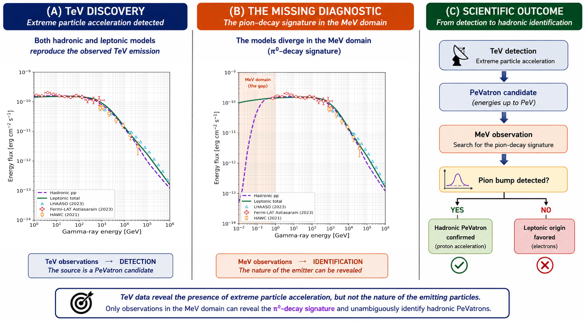
图注：Illustration of the ambiguity affecting the interpretation of Galactic PeVatron candidates. While both hadronic and leptonic scenarios can reproduce the currently available TeV observations of sources such as the Cygnus Cocoon, their predicted behavior differs significantly in the MeV domain. Measurements around the \(\textit{pion bump}\) therefore provide a direct means of distinguishing between the two scenarios.
对应解读：对应“建议重点查看的图表”第1项，以及“关键图表逐图导读”图1：强子与轻子模型的宽带谱对比、pion bump 诊断。
入选理由：这张图直接展示 PeVatron 候选体中强子与轻子解释在 TeV 观测上可同时成立、但在 MeV pion bump 区间显著分离的核心论点，是全文最关键的物理诊断图。它最能支撑日报关于不要只看 TeV 端拟合、而要关注10–100 MeV谱形弯折的解读。
来源与置信度：\(arxiv_source\)；high；\(arxiv_source\) / \(Cardillo_proceeding.tex\):figure[2]
Fig03
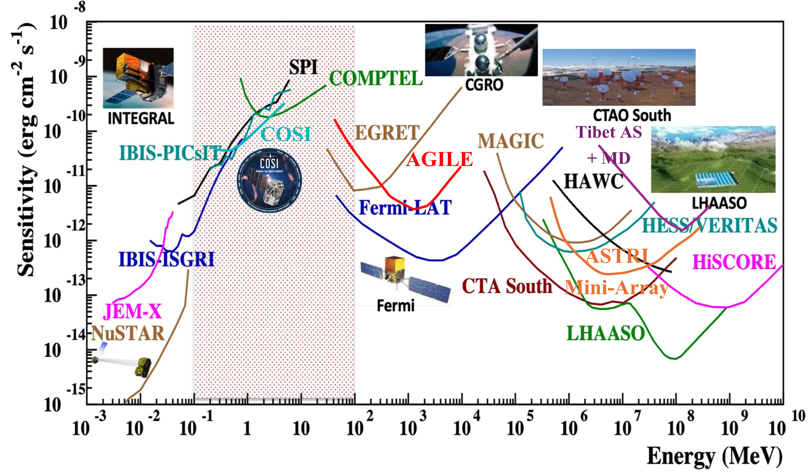
图注：Representative sensitivities of past, current, approved, and proposed MeV gamma-ray observatories. Despite substantial progress in MeV astronomy, a significant observational gap remains in the 10-100 MeV energy range most relevant for systematic \(\textit{pion-bump}\) studies of Galactic PeVatron candidates. Image re-adapted from De Angelis et al. 2018\cite{DeAngelis18}
对应解读：对应“建议重点查看的图表”第2项，以及“关键图表逐图导读”图2：现有和规划 MeV 仪器灵敏度曲线。
入选理由：这张图直接比较过去、当前、已批准和拟议 MeV 伽马射线观测设施的灵敏度，突出10–100 MeV这一 pion bump 关键能段的观测缺口。它支撑文章关于需要专门 MeV 观测台的任务论证，比一般概念图更贴近日报中的仪器灵敏度讨论。
来源与置信度：\(arxiv_source\)；high；\(arxiv_source\) / \(Cardillo_proceeding.tex\):figure[3]
Fig04
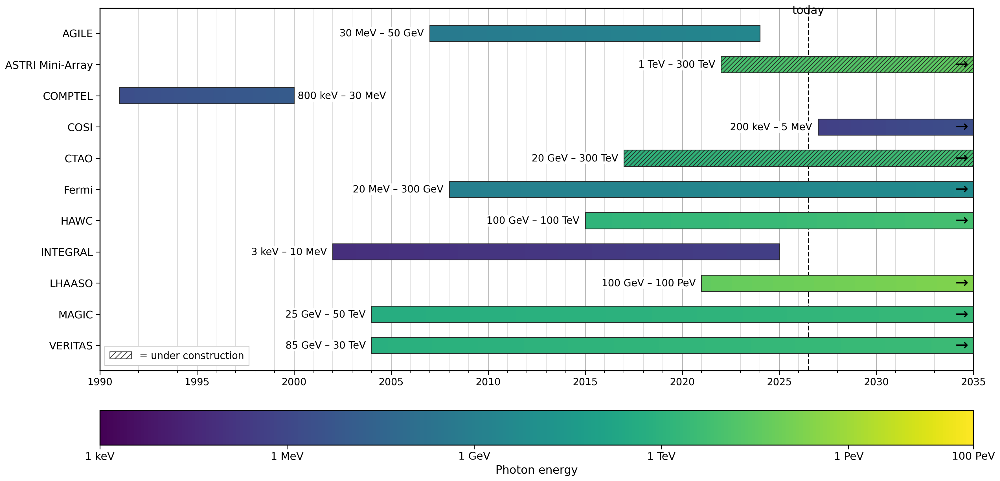
图注：Timeline of major past, present, and future gamma-ray observatories relevant to Galactic PeVatron studies. While the Galactic PeVatron census is expected to expand rapidly through observations by LHAASO, CTAO, and the ASTRI Mini-Array, no approved mission is specifically optimized to investigate the 10-100 MeV energy range where the \(\textit{pion bump}\) provides a direct diagnostic of hadronic acceleration.
对应解读：对应“详细解读”中关于 TeV–PeV 源表快速增长但 MeV 诊断能力不足的论述，也部分对应“建议重点查看的图表”第2项的设施规划背景。
入选理由：这张时间线图不提供灵敏度或模型残差，但能清楚说明 LHAASO、CTAO、ASTRI 等高能设施推动 PeVatron 候选体增长的同时，缺少已批准且专门优化10–100 MeV pion bump 研究的任务。适合作为任务需求和观测空白的背景图。
来源与置信度：\(arxiv_source\)；high；\(arxiv_source\) / \(Cardillo_proceeding.tex\):figure[4]
Fig01
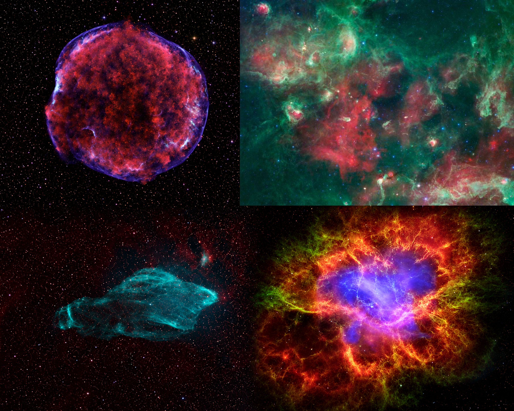
图注：Examples of Galactic PeVatron candidates representing the growing diversity of extreme particle accelerators discovered in recent years. The population includes supernova remnants (e.g.Tycho, Credit: x-ray NASA/CXC/Rutgers/K Eriksen et al; optical: DSS), pulsar wind nebulae (e.g. the Crab, (NASA) Credit: X-ray: NASA/CXC/ASU/J.Hester et al.; Optical: NASA/ESA/ASU/J.Hester \& A.Loll; Infrared: NASA/JPL-Caltech/Univ. Minn./R.Gehrz), star-forming regions (e.g. Cygnus region, Credits: X-Ray: NASA/Spitzer, and microquasar-powered systems (e.g. SS433 in the Manatee Nebula, Credits: NRAO/AUI/NSF, K. Golap, M. Goss; NASA’s Wide Field Survey Explorer (WISE)), highlighting the need for observational diagnostics capable of identifying their particle content.
对应解读：对应“详细解读”中关于银河 PeVatron 候选体类型多样、需要粒子成分诊断的科学背景。
入选理由：这张图展示超新星遗迹、脉冲星风云、恒星形成区和微类星体等不同 PeVatron 候选体类别，有助于引入问题背景。不过它不包含谱能量分布、灵敏度曲线、TS、PSF或任务响应等日报重点诊断量，因此科学支撑度低于 Fig02 和 Fig03。
来源与置信度：\(arxiv_source\)；high；\(arxiv_source\) / \(Cardillo_proceeding.tex\):figure[1]
强相关工作
同类观测方面，最直接相关的是 LHAASO 对银河超高能伽马射线源的发现，以及 HAWC、H.E.S.S.、MAGIC、VERITAS 和未来 CTA 对 PeVatron 候选体的持续扩展。检索关键词可用 “LHAASO PeVatron Galactic sources”, “ultra-high-energy gamma rays Galactic PeVatrons”, “CTA Galactic PeVatron survey”。这些工作提供候选源表和 TeV–PeV 端能谱，但通常不能单独完成强子/轻子判别。
基础理论和历史原型方面，应回到 \(\pi^0\) 衰变伽马射线作为宇宙线强子证据的经典工作，包括 Fermi-LAT 在超新星遗迹 IC 443 和 W44 中报告 pion-decay signature 的论文，以及 Kelner、Aharonian 等关于 \(pp\) 相互作用伽马射线谱的参数化。检索关键词可用 “pion bump supernova remnants”, “neutral pion decay gamma-ray spectrum”, “hadronic gamma rays pp interactions”。
相反观点或张力主要来自轻子模型解释：许多 TeV 源，特别是脉冲星风云或未识别扩展源，可以用高能电子逆康普顿辐射解释；在 Klein-Nishina 区域、低磁场或复杂辐射场条件下，轻子模型可延伸到很高能量。检索关键词可用 “leptonic interpretation PeVatron candidates”, “PWN ultra high energy gamma rays”, “hadronic leptonic degeneracy gamma-ray sources”。本文的立场不是否定轻子源，而是强调 MeV 数据是打破这种张力的关键。
同一事件 / 同类源线索：
- https://arxiv.org/abs/2609.00989
- https://arxiv.org/abs/2106.02222
- https://www.cta-observatory.org/
- https://fermi.gsfc.nasa.gov/
相似工作：
基础理论 / 方法工作：
- https://arxiv.org/abs/1302.3307
- https://arxiv.org/abs/astro-ph/0606058
- https://arxiv.org/abs/0803.0682
相反观点 / 张力线索：
2. A Galactic microblazar as a potential accelerator of ultra-high-energy particles
- 来源：arXiv / astro-ph.HE
- 链接：https://arxiv.org/abs/2609.00990v1
- 作者：Josep Martí, Pedro L. Luque-Escamilla, Benito Marcote, Leandro Abaroa, Arnau Aguasca-Cabot, Jorge A. Combi, Gustavo E. Romero, Josep M. Paredes
- 评分：novelty 8/10，importance 8/10，relevance 10/10，final 9.70/10
- 推荐理由：提出并多波段论证一个银河系microblazar候选，并可能对应LHAASO超高能源；直接涉及伽马射线源、喷流和银河系UHE粒子加速，优先阅读。
中文题目：一个银河系微耀变体候选体：IRAS 18293-0941 可能是超高能粒子加速源
做了什么：这篇论文把红外源与射电源 IRAS 18293-0941 作为银河系“微耀变体”候选体进行多波段检验：作者结合光度、光谱、射电成像和物理建模，认为它很可能是一个带有持久相对论性喷流的 X 射线双星，且喷流方向接近视线方向。其射电形态呈准直、单边结构，符合多普勒增强和小喷流倾角造成的表观不对称；光学/红外性质又指向双星系统和可能的致密包层。论文进一步讨论它与邻近的 LHAASO J1831-1007u* 的可能联系，提出该系统可作为银河系内加速甚高能甚至超高能粒子的候选微类星体/微耀变体。
为什么重要：微耀变体是微类星体在小视角下的特例，理论上应该存在，但可靠样本非常少。若 IRAS 18293-0941 确实属于这一类，它不仅补上银河系喷流源分类中的一个缺口，也为理解银河系 PeV 以上粒子加速源提供了一个具体天体系统。更重要的是，论文把恒星双星、射电喷流、致密包层和 LHAASO 超高能伽马源放在同一物理框架中检验，而不是只做位置符合。
理论 / 观测 / 仪器方法价值：对观测而言，本文给出一个可继续用 VLBI、X 射线、红外光谱和 TeV–PeV 伽马射线联合追踪的明确目标。对理论而言，它提供了一个测试微类星体喷流是否能在银河系内贡献超高能粒子、以及小视角多普勒增强如何改变源分类的案例。对方法而言，文章展示了如何用射电形态、双星光谱、谱能量分布和高能源空间关联共同评估一个微耀变体候选体。
为什么应该关注：如果你关心银河系宇宙线起源、LHAASO 未证认源、X 射线双星喷流或微类星体，这篇文章值得看，因为它提出的是一个可观测、可反驳的具体候选源。即使最终关联不成立，文中的证据链也能帮助判断类似源是否只是普通有包层的双星、背景活动星系核，还是一个真正指向我们的银河系相对论喷流系统。
展开详细解读：文章讲解、背景、理论、重点章节、图表与相关工作
文章详细讲解
科学问题：论文要回答两个相关问题。第一，IRAS 18293-0941 是否可以被认真看作银河系微耀变体，也就是一个带持久相对论性喷流、且喷流轴接近视线方向的 X 射线双星。第二，它是否可能与附近的 LHAASO J1831-1007u* 有物理联系，从而成为银河系超高能粒子加速器的候选。这个问题重要在于，微类星体喷流可以把吸积能转化为非热粒子能量，但真正能否到达 PeV 或更高能区，仍然高度依赖喷流功率、磁场、几何、环境密度和辐射损失。
作者怎么做：作者不是只用单一波段证据，而是把 IRAS 18293-0941 的光度、光谱、红外性质、射电结构和高能邻近源信息组合起来。他们检查该源是否具有双星系统的光谱/光度特征，是否存在包层或致密星周介质，射电图像是否显示准直喷流，以及射电结构是否可由小喷流倾角和相对论多普勒效应解释。随后，他们用一个自洽的物理情景估计喷流中非热粒子的加速、传播和辐射，并讨论这些粒子是否可产生与 LHAASO 未证认源相容的超高能伽马信号。
关键结果：文章的核心结论是，IRAS 18293-0941 具备微耀变体候选体的多项必要条件：它不像普通孤立恒星那样只有热辐射；其光谱和光度性质支持双星解释；射电发射呈现准直和单边形态，而单边性可自然来自接近视线方向的相对论喷流多普勒增强；缺少快速变光并不必然否定微耀变体解释，因为若系统被致密星周包层包围，短时标喷流或吸积变动可能被吸收、重处理或平滑掉。与 LHAASO J1831-1007u* 的空间接近性则使它成为高能关联的候选对象，而非已经被定论的对应体。
局限和下一步：最需要谨慎的是，位置邻近不等于物理关联，尤其在银河平面拥挤区域，高能源误差圆内可能有多个候选体。其次，微耀变体身份还需要更高角分辨率的射电时序成像来测量结构运动或稳定喷流轴，也需要 X 射线监测来确定紧致天体吸积状态。对 LHAASO 关联，未来需要更好的 TeV–PeV 形态、能谱、时间稳定性和周围分子气体分布约束；如果超高能辐射是强子过程产生，应寻找中微子或与气体靶密度相关的空间形态；如果是轻子过程，则要检验同步辐射和逆康普顿冷却是否允许达到相应能量。
关键结果是怎么做出来的
本文最重要的证据链从源的身份判定开始。作者把 IRAS 18293-0941 作为目标，而不是从一个大样本做统计搜索；因此论证重点不是“多少个源中发现一个显著离群体”，而是“这个具体源是否同时满足微耀变体所需的多项观测条件”。样本选择的关键是它位于银河平面、具有红外源性质、存在射电对应体，并且靠近 LHAASO J1831-1007u* 这一超高能伽马源。读者应特别关注作者如何排除或弱化普通恒星风源、年轻恒星体、行星状星云、背景活动星系核等替代解释。
射电结果是论文中最直接支持喷流解释的部分。作者报告准直且单边的射电发射，这类形态如果来自一对本征对称喷流，就可由接近视线方向的相对论运动解释：靠近的一侧被多普勒增强，远离的一侧被去增强。关键不是单边结构本身，因为环境吸收或非对称介质也可导致单边外观，而是单边性、准直性、源的双星迹象、以及缺少明显扩展 HII 区式热形态共同指向喷流方案。读者应查看射电图中的波束大小、信噪比、动态范围和结构是否沿单一位置角延伸。
对高能关联，作者使用的是物理一致性和空间邻近的联合论证，而不是宣布唯一对应体。LHAASO J1831-1007u* 若为真实超高能源，需要一个能够把粒子加速到至少 PeV 量级并让伽马射线逃逸的环境。论文通过喷流功率、磁场、加速时标和辐射/逃逸时标的比较，说明微耀变体情景可以在合理参数范围内达到要求。这个结论依赖源距、喷流倾角、磁场强度、粒子注入功率和周围靶物质密度；这些量的系统误差会直接传导到可产生的伽马射线通量和最高能量。
显著性方面，本文的“候选体”性质应与盲搜发现区分开。射电形态的统计显著性来自成像信噪比和结构相对于合成波束的解析程度；双星性质来自光谱线、颜色和光度是否符合相应恒星/包层模型；高能关联则受 LHAASO 定位误差、源扩展、背景源密度和银河平面源混淆限制。若文中给出误差椭圆或关联半径，读者应检查 IRAS 18293-0941 在其中的位置是否靠近中心、是否有其他同等合理候选源，以及关联概率是否考虑了试验因子。
稳健性检验应集中在几类替代解释上。第一，若射电发射是热自由-自由辐射，谱指数和亮温应与非热喷流不同。第二，若它是年轻恒星体喷流，红外颜色、分子云环境和演化阶段应有相应证据。第三，若是背景活动星系核，银河纬度、光学/红外光谱红移、射电核心-喷流结构和长期变光应能检验。第四，若 LHAASO 源来自附近脉冲星风云、超新星遗迹或分子云照亮，伽马形态应不一定以 IRAS 18293-0941 为中心。论文的说服力取决于这些替代模型是否被系统比较，而不仅是候选模型能否“拟合”。
展开背景、理论、公式、模型、章节和图表导读
背景知识
微类星体是银河系内含紧致天体的吸积双星，其喷流现象在尺度上类似活动星系核，只是中心黑洞或中子星质量小得多，演化时标也短得多。经典案例包括 GRS 1915+105、GRO J1655-40、Cygnus X-1、Cygnus X-3 和 SS 433。所谓微耀变体则是微类星体喷流轴几乎指向观测者时的情形，类似耀变体是活动星系核喷流指向我们的版本。由于几何概率小、银河平面消光重、源混淆严重，微耀变体候选体一直很少。
历史上，微类星体是否能贡献银河系甚高能和超高能粒子一直有争议。喷流中存在相对论电子几乎没有疑问，因为射电同步辐射很常见；但能否有效加速质子和原子核、能否逃逸并在周围气体中产生 \(\pi^0\) 衰变伽马射线，则取决于喷流功率、磁场拓扑、冲击或磁重联效率以及环境靶密度。LHAASO 和 HAWC 等宽视场高能伽马阵列发现了不少银河平面 PeV 源和未证认源，使这个老问题变得更紧迫。
IRAS 18293-0941 这类红外亮、位于银河平面的对象尤其难判定。红外亮可以来自双星伴星和星周尘埃，也可以来自年轻恒星体、演化晚期恒星、致密 HII 区或背景源。射电发射也可能是非热喷流、热风、激波壳层或背景活动星系核。因此，单一颜色、单一谱指数或单一位置符合都不足以给出分类，必须看多波段证据是否互相支持。
现在值得重新审视这类源，有三个原因。第一，LHAASO 把银河系源的能量窗口推到百 TeV–PeV，使许多过去不显眼的候选加速器重新进入视野。第二，现代射电干涉阵列能解析毫角秒到角秒尺度结构，直接检验准直性和单边性。第三，多波段档案数据和新的红外/光学光谱可以更好地区分双星、年轻恒星体和背景活动星系核。
该领域常见误区是把“微耀变体”等同于“一定强烈快速变光”。事实上，若喷流被致密风、包层或非均匀吸收介质包围，短时标内禀变化可能被吸收或再处理；同时，小视角会增强核心通量但也会压缩角结构，使解析喷流更困难。另一个误区是把高能误差圆内的任一非热源视为对应体；在银河平面，源密度和扩展弥散背景使位置关联必须结合能谱、形态和物理能量预算。
基础理论 / 方法脉络
基本物理图像是吸积释放引力势能，其中一部分通过磁流体过程进入准直喷流。若喷流中电子或强子被冲击、剪切层或磁重联加速，就会产生非热粒子分布。电子主要通过同步辐射和逆康普顿散射发光，强子则可通过质子-质子碰撞或光强子过程产生中性介子，随后衰变为高能伽马射线。
微耀变体的关键是相对论多普勒效应。对速度 \(\beta c\)、洛伦兹因子 \(\Gamma\)、视线夹角 \(\theta\) 的喷流，靠近侧的多普勒因子会显著提高观测通量和缩短观测时标。若远离侧被去增强，射电图像就会呈现单边结构。本文对 IRAS 18293-0941 的射电形态解释正是建立在这个几何基础上。
从观测方法看，射电干涉图像提供形态、通量密度、谱指数和可能的亮温约束。若结构沿固定方向延伸并显著超过合成波束，且谱指数偏非热，就支持喷流。红外和光学光谱则用于判断是否存在双星伴星、包层、发射线和消光。高能关联需要比较 LHAASO 源的位置、扩展、能谱和候选源可提供的能量预算。
本文特定假设包括：IRAS 18293-0941 是一个双星系统；射电单边准直发射来自相对论喷流；喷流倾角较小；缺少快速变光可能由致密星周包层平滑；LHAASO J1831-1007u* 的超高能发射可以由该喷流加速粒子直接或间接产生。这些假设彼此相连，但也产生退化：例如小视角多普勒增强与本征喷流功率之间退化，源距与伽马光度之间退化，磁场强度与最高粒子能量之间退化，环境密度与强子伽马效率之间退化。
主要系统误差来自距离、消光、射电通量标定、干涉阵列缺失短基线造成的扩展通量损失、高能源定位与扩展模型、以及银河平面背景建模。若这些误差被低估，微耀变体身份和 LHAASO 关联都会显得过于确定；若保守处理，本文更适合作为一个强候选源和后续观测路线图，而不是最终证认。
公式与推导
第一步，从相对论喷流几何开始。喷流速度为 \(v=\beta c\)，洛伦兹因子为
这里 \(\beta\) 是以光速为单位的速度，\(\Gamma\) 描述时间膨胀和能量提升；微耀变体情景要求 \(\theta\) 较小，其中 \(\theta\) 是喷流轴与视线夹角。
第二步，多普勒因子决定观测到的频率、时间和通量增强：
对靠近侧喷流使用上式；远离侧可把 \(\cos\theta\) 替换为 \(-\cos\theta\)。当 \(\theta\lesssim 1/\Gamma\) 时，\(\delta\) 可显著大于 \(1\)，这就是“微耀变体”比普通微类星体更亮、更核心占优的原因。
第三步，若本征同步辐射谱为 \(S_\nu\propto \\)
\(u^{-\alpha}\))，连续喷流观测通量近似满足
其中 \(S_{\}\)
u,\mathrm{obs}}) 是观测通量密度，(S_{\
u,\mathrm{int}}) 是喷流共动系或无增强情况下的等效通量密度，\(\alpha\) 是射电谱指数。这一关系可用于估计小倾角下本征喷流功率可能被高估多少。
第四步，双侧喷流的亮度比给出倾角和速度的组合约束：
\(S_{\}\)
u,\mathrm{app}}) 和 (S_{\
u,\mathrm{rec}}) 分别是靠近侧和远离侧通量密度。如果远离侧未探测到，\(R\) 是下限，从而给出 \(\beta\cos\theta\) 的下限；这正是单边射电结构支持小视角相对论喷流的诊断。
第五步，非热粒子通常写成幂律注入：
这里 \(Q(E)\) 是单位时间单位能量注入率，\(p\) 是谱指数，\(E_{\max}\) 是最高能量。论文讨论超高能粒子加速时，本质上是在检验合理的 \(Q_0\)、\(p\)、\(E_{\max}\) 是否能产生 LHAASO 能区通量。
第六步，最高能量由加速时标与损失或逃逸时标比较给出。对 Bohm 极限量级估计，
其中 \(\eta\geq 1\) 是加速效率参数，\(Z\) 是粒子电荷数，\(e\) 是元电荷，\(B\) 是磁场强度。要求 \(t_{\mathrm{acc}}<\min(t_{\mathrm{esc}},t_{\mathrm{loss}},t_{\mathrm{dyn}})\)，才能把粒子推到 \(E\)。
第七步，尺寸限制给出 Hillas 型条件：
\(R\) 是加速区尺度。这不是充分条件，只是必要条件；若同步、绝热或强子碰撞损失更快，实际 \(E_{\max}\) 会更低。对微类星体喷流来说，\(B\) 和 \(R\) 的乘积是能否达到 PeV–EeV 的关键。
第八步，若伽马射线来自强子碰撞，质子-质子损失时标为
这里 \(n\) 是靶气体数密度，\(\sigma_{pp}\) 是碰撞截面，\(\kappa_{pp}\) 是非弹性能量损失比例。致密星周介质或分子云可降低 \(t_{pp}\)，提高伽马产生效率，但也可能增加吸收和混淆。
第九步，观测伽马通量与源光度的关系为
\(d\) 是距离，\(\tau_{\gamma\gamma}\) 是伽马-伽马吸收光深。这个式子说明距离不确定性会以 \(d^2\) 放大到光度估计，而致密辐射场会影响超高能光子的逃逸。
第十步，对高能关联的统计检验可抽象为泊松似然：
\(n_i\) 是第 \(i\) 个空间或能量 bin 的计数，\(b_i\) 是背景期望，\(s_i(\boldsymbol{\Theta})\) 是源模型，\(\boldsymbol{\Theta}\) 包括位置、扩展、谱指数和归一化。比较有源与无源模型可用
这类统计量决定高能源本身显著性；但“与 IRAS 18293-0941 关联”的显著性还必须额外考虑候选源密度和试验因子。
模型拟合 / 应用方法
本文或同类工作的拟合首先发生在低能多波段层面：用光学/红外测光和光谱约束恒星类型、消光、包层温度和可能的双星性质。常见拟合量包括距离模数、视向消光、尘埃温度、红外过量和发射线等效宽度。这里的退化很强，例如更高消光可模拟更冷的本征光谱，更远距离可提高推断光度，从而影响系统是否符合高质量 X 射线双星或其他类型。
射电部分的模型拟合更接近形态诊断。需要用点源、核心-喷流、高斯分量或简单准直结构去拟合可见度数据或成图结果，并检查残差是否仍沿同一轴向分布。若只在图像平面判断，很容易受清洁算法、旁瓣、动态范围和波束方向影响。真正有力的证据应来自多频谱指数、亮温、偏振或多历元自行测量。
高能物理模型通常会拟合粒子注入归一化、谱指数、最高能量、磁场、加速区大小、靶密度和源距。轻子模型的关键残差会出现在射电到 X 射线同步辐射与 TeV 逆康普顿之间是否能同时匹配；强子模型则要看所需喷流功率是否超过吸积系统可承受的能量预算。若为了匹配 LHAASO 通量需要极高靶密度或极端加速效率，模型就会显得不自然。
统计上，LHAASO 关联应区分源探测显著性、位置重合概率和物理模型优度。即便 LHAASO J1831-1007u* 是显著源，IRAS 18293-0941 作为对应体仍需要比较其他候选源模型。理想做法是构造多个空间模板：点源模板、以 IRAS 18293-0941 为中心的扩展模板、脉冲星风云模板、分子云相关模板和弥散背景模板，再用似然比、信息准则或贝叶斯证据比较。
模型可能失败的地方也很清楚。若未来 VLBI 发现射电结构没有高亮温、没有喷流自行或只是热风壳层，微耀变体解释会受挫。若 X 射线观测没有任何吸积紧致天体特征，也会削弱 X 射线双星身份。若 LHAASO 后续定位显示伽马中心远离该源，或能谱/形态更适合脉冲星风云、超新星遗迹与分子云相互作用，那么本文的高能关联只能保留为历史候选。
重点章节 / 结果段落怎么读
一、源的多波段身份判定部分应先读。重点看作者列出的光度、颜色、光谱线和历史测光资料如何支持双星系统，而不是年轻恒星体或普通演化恒星。读者应注意距离和消光采用了什么假设，因为后续能量预算对它们很敏感。
二、射电观测与成像部分是全文关键。应查看观测频率、阵列配置、角分辨率、噪声、通量标定和成图参数。最重要的问题是准直单边结构是否显著解析，是否与波束方向无关，是否有多频或多历元支持。
三、微耀变体解释段落需要结合多普勒增强公式阅读。作者若从亮度比或未探测到反向喷流推断小倾角，读者应检查谱指数和速度假设范围；若只做定性解释，则应把结论理解为候选级别。
四、与 LHAASO J1831-1007u* 的关联讨论应作为“物理可行性”而非“证认”来读。重点看误差圆、角距离、伽马能谱、源扩展和其他可能对应体。若论文给出模型谱能量分布，应检查是否同时满足低能上限和高能数据。
五、理论建模和讨论部分应关注能量预算、最高粒子能量和环境靶密度。读者应问三个问题：喷流功率是否合理，粒子能否在损失前加速到所需能量，产生的伽马光子能否逃逸并与 LHAASO 通量相符。
六、若有附录或稳健性检验，应优先看替代分类和系统误差。尤其要看作者是否量化背景活动星系核、年轻恒星体、脉冲星风云和超新星遗迹解释的可能性。
建议重点查看的图表
-
多波段定位图：检查 IRAS 18293-0941、射电峰值、红外/光学对应体和 LHAASO J1831-1007u* 误差区域之间的相对位置；重点看角距离和误差椭圆，不要只看视觉重合。
-
射电连续谱图像：检查合成波束、等值线起始信噪比、动态范围、准直结构长度和位置角；确认单边结构不是波束拉伸或清洁旁瓣。
-
多频射电谱或谱指数图：检查射电发射是否为非热谱，核心与延展结构是否有不同谱指数；若谱指数误差很大，喷流解释应降级。
-
光学/红外光谱图：检查发射线、吸收线、连续谱形状和消光校正；这些特征决定其双星和包层解释是否可信。
-
谱能量分布图：检查从红外、射电、X 射线到伽马射线的数据点和上限是否能被同一物理模型解释；特别注意模型是否违反 X 射线上限或 TeV 上限。
-
加速与损失时标图：若文中提供，检查 \(t_{\mathrm{acc}}\)、\(t_{\mathrm{loss}}\)、\(t_{\mathrm{esc}}\) 的交点对应的 \(E_{\max}\) 是否确实达到 LHAASO 所需能量。
-
LHAASO 区域源图或显著性图：检查是否存在其他候选源，伽马源是否扩展，以及 IRAS 18293-0941 是否位于最优位置而非仅在大误差区边缘。
关键图表逐图导读
图 1：通常应是目标区域的多波段 finding chart 或高能误差区域叠图。横纵轴多为赤经和赤纬或银河经纬，数据点可能包括红外源、射电位置和 LHAASO 源的误差圈/误差椭圆。读图时应看 IRAS 18293-0941 与 LHAASO J1831-1007u* 的角距离是否小于定位不确定度，以及图中是否标出其他潜在高能候选体。陷阱是误差圈视觉上很大，位置重合的先验概率在银河平面并不低。
图 2：射电图像应是全文最关键图之一。坐标轴为空间偏移或天球坐标，等值线表示射电亮度，角落应有合成波束。需要看准直结构是否沿一个清晰方向从核心延伸，反向侧是否低于噪声或明显较弱。陷阱是波束椭圆若与“喷流”方向接近，可能夸大延展性；还要看最低等值线是否只是 \(3\sigma\) 左右的边缘结构。
图 3：如果有射电谱或多频图，横轴应为频率，纵轴为通量密度，模型线可能是幂律 (S_\nu\propto\
\(u^{-\alpha}\))。非热喷流通常表现为负谱指数或平谱核心加陡谱延展结构。读图陷阱是非同时多频数据会被变光污染，而热自由-自由辐射在某些频段也可给出近似平谱。
图 4：光学/红外光谱图的横轴为波长，纵轴为相对或绝对通量。应重点看氢线、氦线、金属线、尘埃连续谱和消光校正后谱形是否支持双星和包层。陷阱是高消光源的连续谱分类不唯一，发射线也可能来自星风、盘风或年轻恒星体环境。
图 5：谱能量分布图通常横轴为频率或能量，纵轴为 \(\nu F_\nu\) 或 \(E^2 dN/dE\)。数据点应包括射电、红外、可能的 X 射线、TeV–PeV 伽马数据或上限，模型线区分同步、逆康普顿、强子 \(\pi^0\) 衰变等成分。读图时要检查模型是否只是穿过 LHAASO 点，却超出 X 射线或 GeV 上限；也要看参数是否需要极端喷流功率。
图 6：若有时标或最高能量诊断图，横轴多为粒子能量，纵轴为时间尺度。加速时标曲线与冷却/逃逸时标曲线的交点给出 \(E_{\max}\)。主要结论应是粒子能否到达产生百 TeV–PeV 伽马射线所需能量。陷阱是 Bohm 扩散或高加速效率是假设上限，现实湍流条件可能使 \(E_{\max}\) 降低。
论文原图 / 可嵌入图片
Fig02
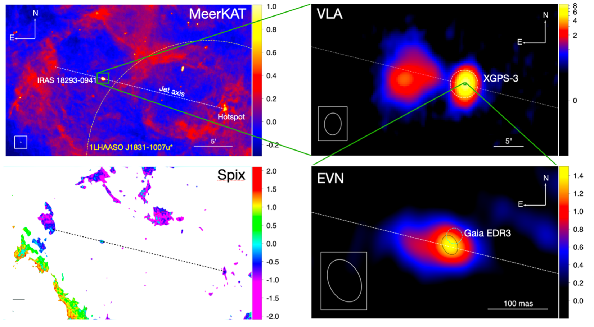
图注：Radio view of \iras\ across different spatial scales. {\(\bf\) Top right.} Arcsecond-resolution VLA map computed from the combination of the observing runs listed in Table \(\ref{TS1}.\) It shows a compact and flat-spectrum core from which a one-sided jet emanates powering an arcsecond extended radio lobe. The yellow dashed circle corresponds to the 90\% confidence location of the X-ray source XGPS-3 \(\citep{ref11}.\) {\(\bf\) Bottom right.} Sub-arcsecond EVN radio map resolving the VLA core into an also one-sided jet aligned with the larger-scale lobe structure. The cyan and black ellipses mark the 95\% confidence regions where the {\(\it\) Gaia} DR3 position \(\citep{ref16}\) of \iras\ and the radio photocenter are expected (given astrometric uncertainties and proper motion correction), respectively. {\(\bf\) Top left.} Arcminute-scale from the MeerKAT radio survey \(\citep{ref20}\) showing arc-shaped extended emission around the IRAS source and a hotspot feature aligned with the lobe and jet axis. {\(\bf\) Bottom-left.} Dimensionless spectral index map available thanks to the large MeerKAT bandwidth. Brightness scale is provided for the rest of panels in mJy beam$^{-1}$, with beam sizes displayed in all bottom left corners. Dashed white lines indicate the common jet direction across more than four orders of magnitude in angular size along a position angle of $256^{\circ}$ from North to East.
对应解读：对应“建议重点查看的图表”第2、3项，以及“关键图表逐图导读”中的图2/图3：射电连续谱图像、多尺度准直结构和谱指数诊断。
入选理由：这是判断 IRAS 18293-0941 是否具备微耀变体/微类星体喷流形态的核心图。它同时给出 VLA、EVN、MeerKAT 多尺度射电结构、合成波束、喷流方向、X 射线源位置、Gaia 与射电位置置信区，以及 MeerKAT 谱指数图，比单一巡天图更能检验单边准直结构是否真实、是否跨尺度共线、核心是否平谱、延展区是否非热。
来源与置信度：\(arxiv_source\)；high；\(arxiv_source\) / \(IRAS_paper.tex\):figure[2]
Fig05
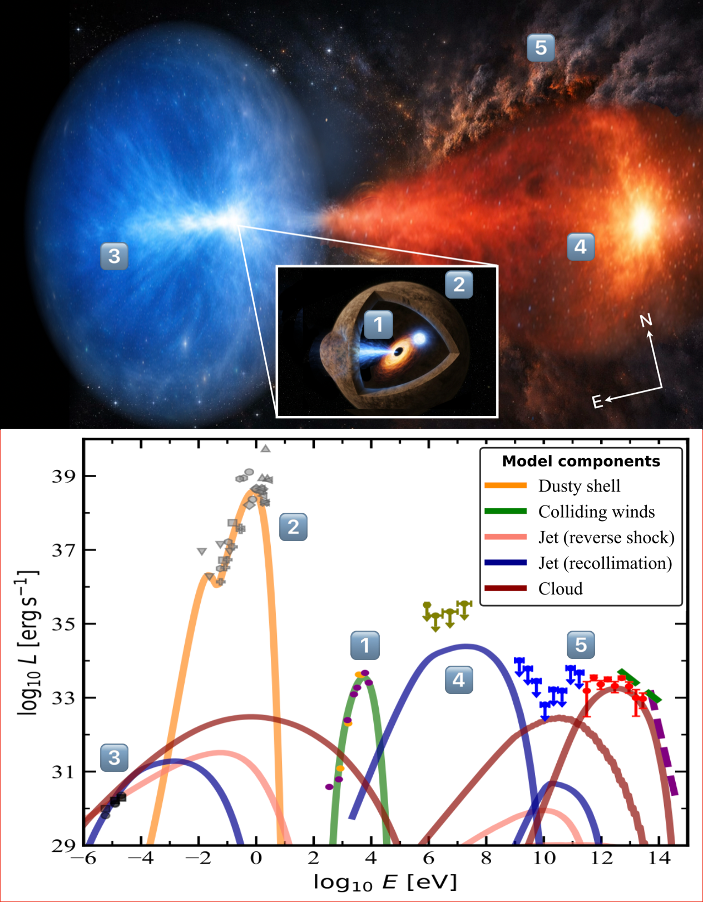
图注：Multi-zone scenario for \iras\ and modelled broadband emission. {\(\bf\) (Top)} Artistic view of the \iras\ environment. The system is interpreted as a microblazar powered by a black hole accreting at super-Eddington rate from a donor star through an accretion disc whose optically thick winds collide with the stellar wind (1). A dense circumbinary dusty shell surrounds the system (2) and is distorted by the approaching (blue) jet (3), which eventually breaks out and expands into the lower-density ambient medium, inflating a cocoon. The receding (red) jet (4) propagates toward a dense molecular cloud (5), where it produces a radio hotspot and injects accelerated cosmic rays into the cloud, giving rise to high-energy emission through hadronic processes. {\(\bf\) (Bottom)} Multi-zone broadband, dereddened, non-simultaneous SED reproduced by our model. Labels indicate the dominant emission regions. Observational data points combine archival measurements and dedicated observations, covering radio frequencies (from the compact core to arcminute-scale jets; EVN, VLA, CORNISH, MAGPIS, VLASS), optical and infrared bands (Pan-STARRS, {\(\it\) Gaia}, SDSS, 2MASS, DENIS, WISE, MSX, AKARI, IRAS, VST/OmegaCAM), X-rays (XMM–Newton, Chandra, Swift), and extending to the high- and very-high-energy gamma-ray domains (COMPTEL, HESS, HAWC, LHAASO).
对应解读：对应“建议重点查看的图表”第5项和“关键图表逐图导读”图5：多区物理图景与宽波段 SED 模型。
入选理由：这张图直接承载论文从红外、射电、X 射线到 GeV/TeV/PeV 伽马射线的统一解释，是评估 LHAASO 关联和粒子加速模型是否自洽的关键。底部 SED 汇总了核心、喷流、红外包层、高能上限/探测点与模型成分，可用于检查模型是否超出 X 射线或高能伽马上限；顶部示意图则说明强子过程、分子云靶和喷流几何假设。
来源与置信度：\(arxiv_source\)；high；\(arxiv_source\) / \(IRAS_paper.tex\):figure[5]
Fig04
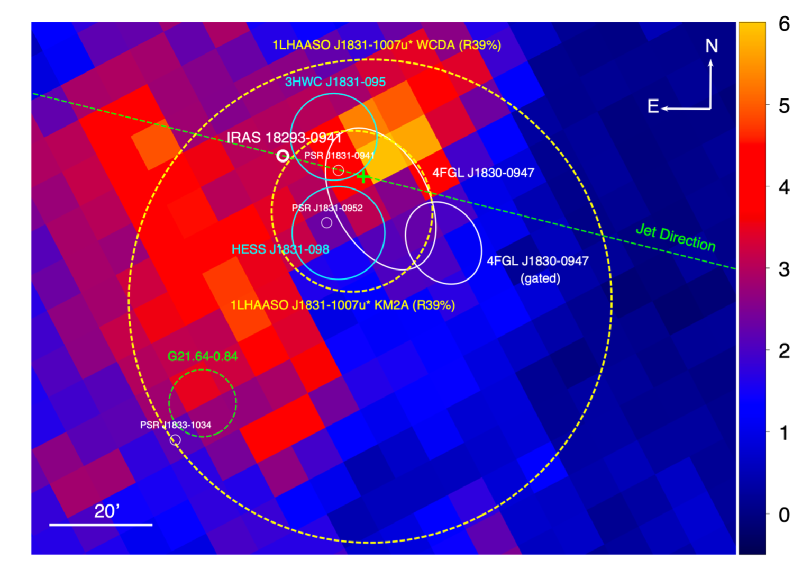
图注：Molecular cloud environment of \(\iras.\) Map of survey CO emission \(\citep{ref42}\) showing the position of \iras\ relative to HE, VHE and UHE gamma-ray sources in the field. The background is dominated by the molecular cloud (21.97, $-$0.29) \(\citep{ref25}.\) Relevant pulsars in the field are indicated as small white circles, while the thick one is reserved for the IRAS source. The locations of Fermi-LAT, H.E.S.S., HAWC, and LHAASO sources, taken from their respective catalogues, are shown as ellipses. The reprocessed Fermi-LAT location after pulsar gating is also plotted. For LHAASO, both WCDA and KM2A, the radii of 39\% source flux are used due to extended nature. Color codes are chosen to match labels and source positions. The supernova remnant G21.64$-$0.84 in the region outskirts, is also displayed. The spatial coincidence between the dense jet-cloud interaction zone and the LHAASO uncertainty region motivates a physical association. Position angle of the jet direction is indicated by the dashed green line, while a small green cross marks its proposed hotspot. The vertical scale represents CO brightness temperature in Kelvin. North is up and East is left, with the horizontal bar indicating the angular scale.
对应解读：对应“建议重点查看的图表”第1、7项，以及“关键图表逐图导读”图1：IRAS 源、分子云、Fermi/H.E.S.S./HAWC/LHAASO 区域的空间关系。
入选理由：这张图是判断 LHAASO J1831-1007u* 是否可能与 IRAS 18293-0941 物理关联的主要定位证据。它把 CO 分子云背景、多个高能/超高能源误差椭圆、相关脉冲星、超新星遗迹、IRAS 源位置和喷流方向放在同一坐标图中，能直接检查该源是否只是落在大误差区内，还是与喷流—分子云相互作用区有更具体的空间对应。
来源与置信度：\(arxiv_source\)；high；\(arxiv_source\) / \(IRAS_paper.tex\):figure[4]
Fig06
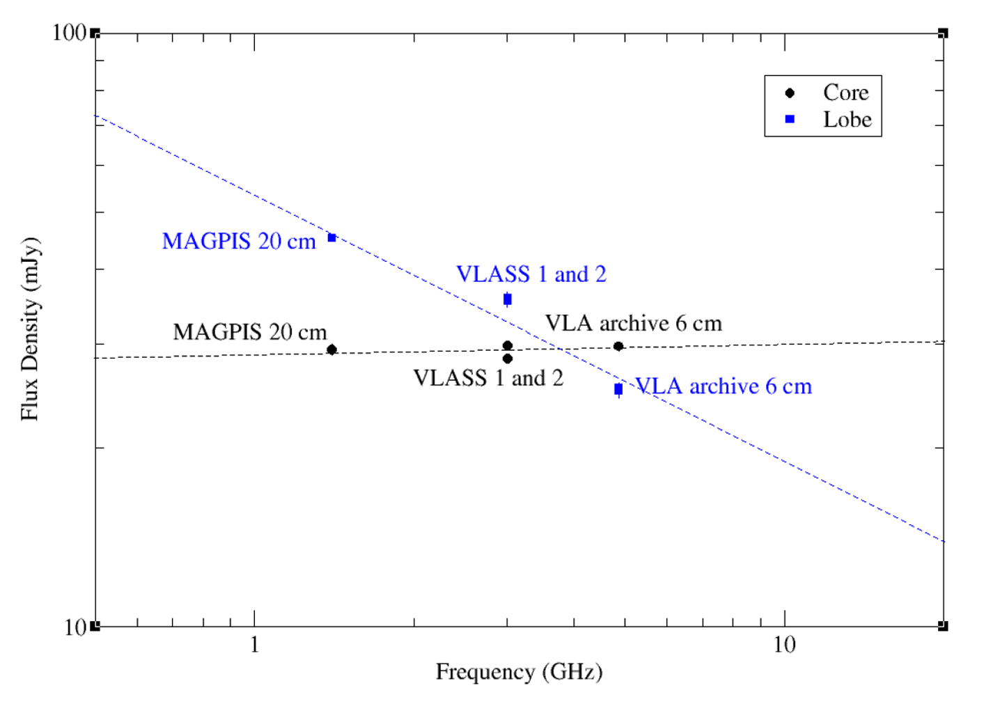
图注：Radio spectra of \iras\ components. The dashed lines represent the least-squares fits to the VLA flux densities in Table \(\ref{TS2}.\) The black and blue colours correspond to the central core and to the jet-powered extended lobe, respectively.
对应解读：对应“建议重点查看的图表”第3项和“关键图表逐图导读”图3：核心与延展射电结构的多频谱及幂律拟合。
入选理由：该图给出核心和喷流供能射电瓣的通量密度谱，并用虚线显示 VLA 数据的最小二乘拟合，是检验射电发射是否非热、核心与延展结构谱指数是否不同的直接依据。相比纯形态图，它能帮助区分同步辐射喷流、热风或自由-自由辐射等解释。
来源与置信度：\(arxiv_source\)；high；\(arxiv_source\) / \(IRAS_paper.tex\):figure[6]
Fig07
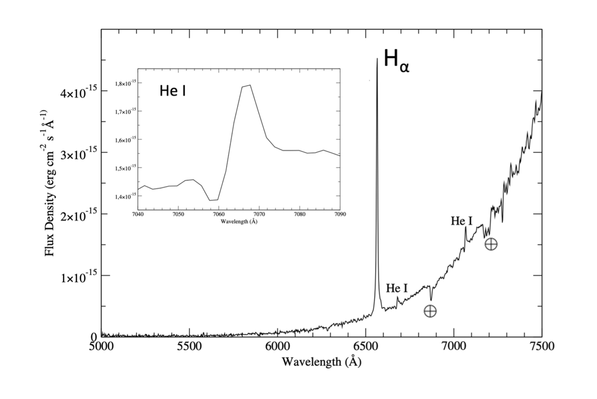
图注：CAHA optical spectrum of \(\iras.\) H$\alpha$v and He I emission lines are the most prominent features. The inset is a zoom around the He I 7065 \AA\ line illustrating the presence of a P-Cygni profile. Telluric absorption features are marked with an Earth symbol.
对应解读：对应“建议重点查看的图表”第4项和“关键图表逐图导读”图4：光学光谱、发射线与 P-Cygni 线型诊断。
入选理由：这张光谱图直接支撑双星、强风和包层解释。Hα、He I 发射线以及 He I 7065 Å 的 P-Cygni 轮廓是判断是否存在致密星周环境、外流/风以及非普通孤立恒星性质的重要证据，因此比普通光学彩色图更适合嵌入详细解读。
来源与置信度：\(arxiv_source\)；high；\(arxiv_source\) / \(IRAS_paper.tex\):figure[7]
Fig03
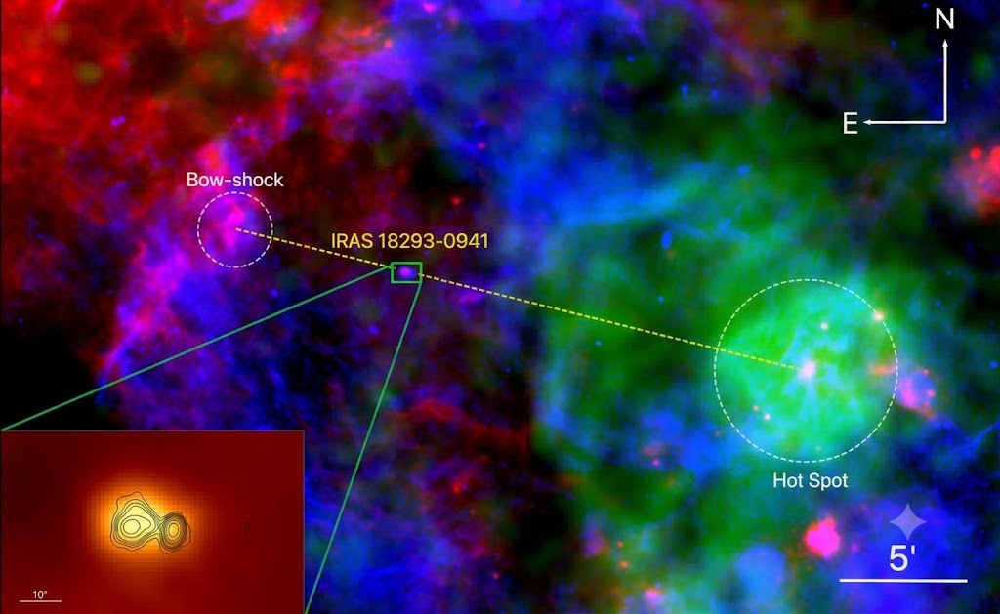
图注：Jet–environment interaction in \iras\ on multiple spatial scales. Tri-chromatic composition with red, green and blue layers representing the Herschel 70 $\mu$m emission \(\citep{ref19}\) tracing warm dust, the H$\alpha$ emission \(\citep{ref24}\) tracing shock-ionized gas and MeerKAT radio emission \(\citep{ref20}\) mostly non-thermal, respectively. The two jets exhibit a pronounced asymmetry. The Western receding jet terminates in a confined non-thermal hotspot coincident with enhanced infrared emission and extended H$\alpha$ nebulosity, revealing a strong bow shock likely produced by the impact of the relativistic jet on a dense molecular cloud. In contrast, the Eastern approaching jet expands into a broader and more diffuse radio structure, with no associated optical emission, consistent with propagation into a lower-density medium. The position of the stellar system is marked with a small rectangle zoomed at the bottom left corner. The close spatial correspondence between the VLA radio lobe (black contours) and the dust emission demonstrates that the outflow interacts with a dense environment already at small distances from the central binary. Angular scale bars are shown for each panel and the compass direction applies to both.
对应解读：对应“详细解读”和“模型拟合”中关于喷流—环境相互作用、分子云靶物质和强子高能辐射场景的讨论。
入选理由：该图用 Herschel 70 μm、Hα 和 MeerKAT 射电三色合成展示喷流与周围尘埃、激波电离气体和非热射电结构的空间对应，尤其突出了西侧退行喷流热点和可能的弓形激波。它不是简单定位图，而是为高能强子模型所需的致密靶环境和喷流注入位置提供形态学支持。
来源与置信度：\(arxiv_source\)；high；\(arxiv_source\) / \(IRAS_paper.tex\):figure[3]
强相关工作
这篇工作与微类星体和银河系喷流源的经典研究直接相连。GRS 1915+105 的超光速喷流发现建立了恒星质量黑洞也能产生相对论喷流的观测图像；SS 433 则是喷流与周围介质相互作用、产生高能辐射的原型。Cygnus X-3 长期被视为可能的微耀变体/伽马射线双星候选，因为它有强风环境、强射电爆发和高能伽马探测。检索关键词可用 “microquasar relativistic jet gamma rays”、“microblazar candidate”、“Cygnus X-3 gamma-ray microquasar”、“SS 433 PeV gamma rays”。
与 LHAASO 未证认源和银河系 PeVatron 研究相比，本文的特点是把一个具体双星喷流候选体放到超高能源附近，而不是从弥散气体或脉冲星风云模型出发。相反观点通常会强调：银河平面源混淆严重，许多 LHAASO 源可以由脉冲星风云、超新星遗迹-分子云相互作用或大尺度宇宙线海解释；微类星体虽然能产生强喷流，但达到 PeV 并维持足够伽马效率并不容易。检索关键词可用 “LHAASO unidentified sources PeVatron”、“gamma-ray binaries PeV emission”、“microquasar hadronic emission”、“pulsar wind nebula LHAASO unidentified”。
同一事件 / 同类源线索：
相似工作：
基础理论 / 方法工作：
相反观点 / 张力线索：
（未提供）
3. X-ray Flares in Gamma-Ray Bursts at High and Very-High-Energies
- 来源：arXiv / astro-ph.HE
- 链接：https://arxiv.org/abs/2609.00684v1
- 作者：Pawan Tiwari, Biswajit Banerjee, Gor Oganesyan, Ansh Chopra, Annarita Ierardi, Marica Branchesi, Stefano Ascenzi, Maria Edvige Ravasio
- 评分：novelty 8/10，importance 8/10，relevance 10/10，final 9.70/10
- 推荐理由：系统研究47个GRB中66个X射线耀发的Fermi-LAT GeV对应体、SSC约束及CTA等切伦科夫望远镜VHE可探测性；伽马射线和GRB主题高度相关。
中文题目：高能与甚高能波段中的伽马暴 X 射线耀发
做了什么：这篇论文系统检查了 Swift/XRT 在 17 年中观测到、同时落在 Fermi/LAT 视场内的 47 个伽马暴中的 66 个早期 X 射线耀发，寻找耀发对应的 \(>100\,\mathrm{MeV}\) 高能辐射，并用同步自康普顿模型约束耀发喷流的磁场、洛伦兹因子和辐射半径。作者发现只有 5 个耀发在 GeV 波段达到 \(>3\sigma\) 显著性，而且宽波段谱更像普通外激波余辉，而不是耀发自身的高能对应体。对最严格的 GeV 上限，模型要求磁能与电子能量注入之比 \(L_B/L_e\gtrsim1\)，意味着 X 射线耀发区可能相当磁化。论文还估算了早期和晚期耀发在切伦科夫望远镜中的可探测性，认为晚期约 \(5000\,\mathrm{s}\) 的耀发更适合 CTAO 等设施跟进。
为什么重要：X 射线耀发是伽马暴中心引擎在 prompt 之后是否仍然间歇活动的关键证据，但单靠 X 射线光变曲线很难区分内部耗散、外激波密度起伏或晚期能量注入。GeV 和 TeV 波段能直接检验耀发区的光学深度、磁化程度和电子加速效率，因此是判别辐射机制的强约束。本文的重要性在于它不是挑选单个漂亮事件，而是把 Swift/XRT 与 Fermi/LAT 的重叠样本系统清点了一遍，并把非探测也转化为物理约束。
理论 / 观测 / 仪器方法价值：对理论而言，本文给出了 X 射线耀发同步自康普顿辐射的经验限制，尤其是用 GeV 上限排除低磁化、高 Compton 参数的参数空间。对观测而言，它说明少数 GeV 同时信号并不能自动解释为耀发的高能对应体，需要与外激波余辉模型竞争。对仪器和策略而言，它指出 VHE 跟进不应只盯最快响应的极早期耀发，晚期耀发由于观测条件和 EBL 吸收、背景、响应时间综合更有利，可能是 CTAO 等下一代设施更现实的目标。
为什么应该关注：如果你关心伽马暴中心引擎、相对论喷流磁化、非热粒子加速或 CTAO 的 GRB 科学案例，这篇文章值得看。它的负结果比表面上更有用：LAT 没看到大多数耀发，并不只是灵敏度不足，而是在标准 SSC 框架下逼迫耀发区进入较高磁化或较低 IC 效率的区域。这直接影响我们如何理解 X 射线耀发是不是 prompt 辐射的低能晚期版本，以及未来 TeV 触发策略应该如何排序。
展开详细解读：文章讲解、背景、理论、重点章节、图表与相关工作
文章详细讲解
科学问题：Swift/XRT 发现大量伽马暴早期余辉中存在快速、明亮的 X 射线耀发，其相对时间宽度 \(\Delta t/t\) 小、谱随时间软化，常被认为来自中心引擎的晚期内部耗散，而不是标准外激波平滑余辉。但 X 射线本身只给出同步辐射或经验谱形的局部信息，不能唯一确定辐射半径、磁场强度、电子能量密度和喷流磁化程度。若耀发区有同一批电子产生同步 X 射线，则同步自康普顿过程通常会在 MeV 到 GeV、甚至 TeV 波段产生伴随辐射；没有看到这种辐射，同样可以限制 Compton 参数和磁化。
作者怎么做：论文选取 17 年 Swift/XRT 观测到的 X 射线耀发，并要求这些耀发发生时 GRB 位于 Fermi/LAT 视场内，最终得到 47 个 GRB 中的 66 个耀发。作者对每个耀发检查 LAT 高能数据，寻找 \(>100\,\mathrm{MeV}\) 的同时段或相近时段信号，并对无显著信号的事件给出上限。随后将 XRT 的 1 keV、10 keV 能流与 LAT 的 1 GeV 能流或上限结合，做经验相关性检查，并在光学薄相对论喷流的 SSC 模型下反推 \(B\)、\(\Gamma\)、\(R\) 以及 \(L_B/L_e\) 等物理量。
关键结果：66 个耀发中只有 5 个存在 \(>3\sigma\) 的高能辐射候选，但宽波段谱建模表明这些 GeV 光子可由标准前向激波余辉解释，不需要也不支持把它们归因于 X 射线耀发自身。对其余耀发，LAT 上限对 SSC 分量很有约束力：如果 X 射线耀发是同步辐射且 IC 效率很高，就应在 GeV 波段看到更亮的对应体；既然没有看到，最严格上限要求 \(L_B/L_e\gtrsim1\)，即磁场能量流至少与电子能量流相当。这支持较高磁化的内部耗散图像，也削弱了低磁场、强 SSC 的耀发模型。
局限和下一步：样本受 LAT 视场、背景、GRB 红移可得性、XRT 光谱质量和耀发时间结构识别影响。\(>3\sigma\) 的高能信号并不等价于物理关联，尤其在外激波余辉本来就可产生 GeV 辐射的时间段。SSC 约束还依赖电子分布、辐射半径、洛伦兹因子、Klein-Nishina 抑制和内部 \(\gamma\gamma\) 吸收等假设。下一步应结合更精细的时间分辨谱、红移完整样本、LAT 非均匀曝光、地面切伦科夫望远镜响应函数和多信使触发策略，建立从 XRT 触发到 CTAO 观测的端到端可探测性框架。
关键结果是怎么做出来的
样本选择是本文证据链的第一步。作者没有从所有 Swift/XRT 耀发直接统计，而是要求耀发时段对应的 GRB 位于 Fermi/LAT 视场中，因此样本天然偏向 LAT 有机会观测到 \(>100\,\mathrm{MeV}\) 光子的事件。最终样本为 47 个 GRB 的 66 个 X 射线耀发，时间跨度覆盖 Swift 运行以来约 17 年。这样的选择保证了非探测上限有物理意义，但也意味着结论不能简单外推到所有 XRT 耀发，尤其不能忽略 LAT 离轴角、地球边缘切除和背景随时间变化带来的灵敏度差异。
高能对应体检索的核心结果是只有 5 个耀发达到 \(>3\sigma\) 显著性。这里的关键不是“有 5 个被探测到”，而是这些信号是否与耀发同源。作者用宽波段谱和时间行为与标准前向激波余辉比较，发现 GeV 发射可由外激波解释。也就是说，X 射线耀发与 GeV 光子在时间上靠近，并不足以证明它们来自同一内部耗散区；需要检查 GeV 光变是否跟随耀发的快速结构、谱能量分布是否需要额外 SSC 峰，以及模型残差是否在耀发时段系统偏离外激波预期。
对大多数非探测事件，LAT 上限构成本文最有信息量的结果。作者把 XRT 能流在 1 keV 和 10 keV 处的测量与 1 GeV 处的上限放在一起，用 SSC 模型估计若 X 射线同步光子被同一批电子逆康普顿散射应产生多强的 GeV 分量。最严格的上限排除了低磁化、电子能量密度占优的方案，得到 \(L_B/L_e\gtrsim1\)。这个不等式的含义是，若模型其他参数不作极端调整，耀发区的磁场能量流不能远小于非热电子能量流，否则 SSC 分量会过亮。
统计上，\(>3\sigma\) 只是候选筛选阈值，真正的物理归因来自模型比较：一个只含标准外激波的模型是否已经解释 LAT 数据，加入耀发 SSC 分量是否显著改善似然，以及改善是否足以抵消新增参数。读者应特别关注论文中高能显著性表、各耀发 LAT 上限表、能流相关性图和 SSC 参数约束图。若某些事件有红移，红移会影响各向同性光度、EBL 吸收和辐射半径估计；若无红移，则常需采用代表性红移或只给观测量上限，这会扩大系统误差。
稳健性方面，最重要的系统误差包括 LAT 有效面积和背景建模、XRT 耀发与底层余辉分解、X 射线吸收校正、谱外推到 1 keV/10 keV 的不确定性、电子谱指数与最小洛伦兹因子的退化、Klein-Nishina 抑制以及内部 \(\gamma\gamma\) 吸收。本文结论之所以值得关注，是因为即使存在这些不确定性，“大多数 X 射线耀发没有可识别 GeV 对应体”这一事实本身很稳健，而最严格上限给出的高磁化倾向为后续更精细建模提供了明确靶标。
展开背景、理论、公式、模型、章节和图表导读
背景知识
伽马暴余辉的标准图像是相对论喷流与外部介质相互作用形成外激波，产生从 X 射线、光学到射电的平滑衰减辐射。Swift 发射后，一个意外发现是很多早期 X 射线余辉并不平滑，而是叠加了快速耀发，峰值可比底层余辉亮很多，持续时间相对爆发时刻较短。这类耀发常出现在 \(10^2\) 到 \(10^4\,\mathrm{s}\) 的时标上，有时甚至更晚，提示中心引擎可能在 prompt 阶段结束后仍在活动。
历史争议在于耀发到底是内部还是外部起源。内部起源模型包括晚期内激波、磁重联、盘碎裂或磁星活动；外部起源模型则可能涉及外部介质密度不均匀、角向能量结构或能量注入。快速变化通常支持内部起源，因为外激波受角时间尺度限制，难以产生很窄且高对比度的峰。但这不是绝对判据，特别是当数据采样、底层余辉扣除和谱演化复杂时，单个 X 射线光变形态可能存在多种解释。
高能观测改变了问题的约束方式。Fermi/LAT 发现许多 GRB 有 \(>100\,\mathrm{MeV}\) 辐射，其持续时间常长于 prompt MeV 发射，并可由外激波同步辐射或 SSC 解释。地面切伦科夫望远镜又在少数 GRB 中探测到 VHE 光子，证明早期余辉中确实可能存在 TeV 级辐射。若 X 射线耀发来自紧凑内部区，同步光子场密度高，SSC 和 \(\gamma\gamma\) 吸收都会很敏感地依赖半径、磁场和洛伦兹因子。
现在值得重看这个问题，是因为 Swift/XRT 已积累了足够长的耀发样本，Fermi/LAT 的长期数据也允许系统给出探测和非探测约束，而 CTAO 等下一代 VHE 设施正在形成更强的快速响应能力。过去个别事件的解释容易受偶然亮度、红移和观测窗口影响；系统样本可以回答一个更实际的问题：X 射线耀发作为一个族群，是否通常有可观的 GeV/TeV 对应体？如果没有，这本身说明了什么？
该领域常见误区包括：把时间重合的 GeV 辐射自动归因于 X 射线耀发；把 LAT 非探测简单理解为“仪器不够灵敏”而不转化为物理上限；把 SSC 分量当成必然明亮而忽略 Klein-Nishina 抑制和内部吸收；以及忽略底层外激波余辉对 GeV 波段的自然贡献。本文的价值正在于把这些误区放进同一套多波段、样本化和模型化框架中检验。
基础理论 / 方法脉络
基本物理图像可以从一个相对论运动的辐射区开始。若喷流以体洛伦兹因子 \(\Gamma\) 向外运动，电子在共动系磁场 \(B'\) 中被加速到非热分布，它们会产生同步辐射。同步峰频率由电子洛伦兹因子和磁场决定，观测到的频率还要乘以多普勒提升并除以 \(1+z\)。如果 X 射线耀发是这种同步辐射，那么同一辐射区里也充满同步光子，电子还可以把这些光子逆康普顿散射到更高能量，形成 SSC 分量。
SSC 强弱主要由辐射区中光子能量密度与磁场能量密度之比控制。低磁场时，同样的同步 X 射线亮度通常需要更多高能电子，且光子场相对磁场更强，因此 IC 分量可能很亮；高磁场时，同步辐射更有效，电子数或电子能量密度要求降低，SSC 分量变弱。因此，GeV 上限可以反过来约束磁化程度，特别是 \(L_B/L_e\) 或等价的能量分配参数。
本文的关键假设是 X 射线耀发来自光学薄相对论喷流内部区域，并用 SSC 框架把 XRT 能流和 LAT 上限连接起来。辐射半径 \(R\) 与观测变时 \(t_{\rm var}\) 和 \(\Gamma\) 相关；\(R\) 越小，同步光子密度越高，SSC 和 \(\gamma\gamma\) 吸收越强。\(\Gamma\) 越大，光子在共动系的能量降低，内部吸收减弱，但辐射区能量密度和频率变换也随之改变。
观测方法上，XRT 提供耀发时段、峰值、谱斜率和 1 keV/10 keV 能流；LAT 提供同一时段的高能似然、显著性、能流或上限。论文并不是只看光子计数，而是需要考虑 LAT 的能量依赖有效面积、点扩散函数、背景和曝光。对于无探测事件，上限不是“零通量”，而是在给定谱假设和置信度下允许的最大通量。
主要退化关系包括 \(B'\) 与电子数归一化之间的退化、\(R\) 与 \(\Gamma\) 之间通过变时时标联系造成的退化、电子谱指数与 X 射线谱指数的映射不唯一、以及 SSC 峰能量与 Klein-Nishina 抑制之间的耦合。系统误差还来自底层余辉扣除：如果耀发 X 射线能流被高估，预测的 SSC 也会偏高；如果 GeV 外激波成分未扣除，可能把外部辐射误认为耀发高能对应体。
公式与推导
第一步从相对论辐射区的尺度约束开始。若观测到耀发最短变化时标为 \(t_{\rm var}\)，红移为 \(z\)，体洛伦兹因子为 \(\Gamma\)，则内部辐射区半径的量级为
这里 \(c\) 是光速。该式来自角时间延迟限制，说明快速耀发若来自内部区，通常对应较小 \(R\) 或较大的 \(\Gamma\)。
第二步写出共动系磁能密度：
这里 \(B'\) 是共动系磁场。磁能密度越大，同步辐射越有效，SSC 相对强度通常越低。
第三步，同步辐射的特征观测频率可写为
其中 \(e\) 是电子电荷，\(m_e\) 是电子质量，\(\gamma_e\) 是电子在共动系的洛伦兹因子。给定 X 射线频率，该式把 \(B'\)、\(\Gamma\) 和 \(\gamma_e\) 联系起来。
第四步，若逆康普顿散射处在 Thomson 极限，SSC 光子频率近似为
这说明产生 keV 同步光子的同一批高能电子，可能把种子光子推到 MeV、GeV 或更高能段。但若 \(4\gamma_e h\nu'_{\rm syn}\gtrsim m_e c^2\)，Klein-Nishina 效应会压低该估计。
第五步，SSC 与同步光度比可用 Compton 参数估计：
其中 \(u'_{\rm ph}\) 是共动系同步光子能量密度，\(L_{\rm SSC}\) 和 \(L_{\rm syn}\) 分别是 SSC 与同步光度。LAT 上限实质上给出 \(Y\) 的上限。
第六步，同步光子能量密度可由观测同步光度估计：
该式显示较小 \(R\) 和较小 \(\Gamma\) 会提高共动光子密度，从而增强 SSC，也可能增强内部吸收。
第七步，用能量流表示磁化约束。磁场携带的各向同性等效能流可写为
若电子能量注入为 \(L_e\)，则 \(L_B/L_e\gtrsim1\) 表示磁场能量流不低于电子能量流，是本文由最强 GeV 上限推出的核心物理结论之一。
第八步，高能光子还受内部 \(\gamma\gamma\) 吸收限制。对观测能量 \(E_\gamma\) 的光子，目标光子阈值近似满足
这里 \(\epsilon\) 是观测系目标光子能量。较小 \(\Gamma\) 或较强 X 射线光子场会使高能光子更容易被吸收。
第九步，LAT 探测显著性通常可由似然比检验统计量表征：
\(F_\gamma\) 是高能通量，\(\mathcal{L}\) 是包含源模型、背景和仪器响应的似然。在常见近似下，显著性约为 \(\sqrt{TS}\)，但在低计数和边界参数问题中需谨慎。
第十步，对无显著探测事件，上限可由积分后验或似然轮廓给出，例如
这里 \(D\) 表示 LAT 数据，\(F_{\rm UL}\) 是 95% 置信或可信上限。把 \(F_{\rm UL}\) 与 SSC 预测比较，就能排除会产生过亮 GeV 分量的 \(B'\)、\(\Gamma\)、\(R\) 和 \(L_B/L_e\) 参数组合。
模型拟合 / 应用方法
本文的拟合可以分成两层。第一层是观测层：XRT 光变需要分解为底层余辉加耀发成分，得到每个耀发的峰值时间、持续时间、能流和谱参数；LAT 数据则在相应时间窗内做源检索，给出显著性、通量或上限。这里的拟合量包括 X 射线谱斜率、吸收校正后的能流、LAT 光子谱归一化和可能的谱指数。残差诊断应看耀发扣除后底层余辉是否平滑，以及 LAT 源模型是否留下与 GRB 位置相关的结构性残差。
第二层是物理层：把 X 射线同步辐射和 GeV 上限放入 SSC 模型，估计 \(B'\)、\(\Gamma\)、\(R\)、电子能量分布和 \(L_B/L_e\)。由于参数多而观测点少，通常不应把某个单一最佳拟合值看得太重，更重要的是排除区域。例如低 \(B'\)、低 \(L_B/L_e\) 往往导致过强 SSC，因此会被 LAT 上限排除；较高 \(B'\) 或 Klein-Nishina 抑制可降低 GeV 通量。
似然或后验构造上，探测事件可用 LAT 似然给出 \(F_\gamma\) 及不确定度，非探测事件则用单边上限约束模型。若采用贝叶斯语言，可把 XRT 能流作为带误差的数据点，把 LAT 上限写入截断似然或积分似然；若采用频率学语言，则比较模型预测是否超过指定置信度上限。红移未知事件会引入额外先验，影响光度距离、源系频率和 EBL 吸收。
主要退化包括 \(B'\) 与电子数归一化：同样的 X 射线同步能流可以由强磁场少电子或弱磁场多电子产生，但二者 SSC 预测差异很大。\(\Gamma\) 与 \(R\) 通过 \(t_{\rm var}\) 耦合，改变共动光子密度和 \(\gamma\gamma\) 光学深度。电子谱指数、最小电子能量和冷却断裂也会影响从 keV 外推到 GeV 的形状。若模型忽略多区结构或磁重联中的非均匀辐射，单区 SSC 约束可能过于理想化。
实际应用上，读者应把本文参数约束看作 GRB 耀发族群的“可探测性过滤器”。对未来 CTAO 触发，可以用 XRT 实时耀发能流、估计红移、峰值时间和持续时间输入 SSC 模型，快速判断是否存在可观 VHE 分量。若模型预测只有在低磁化时才可探测，而 LAT 已经给出强上限，则该事件不是优先目标；反之，晚期强耀发、较低红移、较小 EBL 吸收且观测天顶角合适的事件更值得地面望远镜投入。
重点章节 / 结果段落怎么读
数据/样本部分应首先阅读。重点看作者如何定义 X 射线耀发、如何从 Swift/XRT 数据中选出 66 个耀发、为什么只保留位于 Fermi/LAT 视场内的事件，以及是否给出峰值时间、持续时间、能流和红移信息。这里决定了后面所有统计结论的母样本含义。
LAT 分析部分是判断高能对应体的关键。读者应检查时间窗如何选取，能量范围是否从 \(100\,\mathrm{MeV}\) 起算，背景模型和离轴角切除如何处理，\(>3\sigma\) 阈值对应的检验统计量是什么。还要看非探测事件的上限是固定谱指数还是事件逐一拟合得到。
宽波段谱建模部分要关注作者如何区分外激波余辉和耀发自身高能分量。5 个高能显著事件若都可由前向激波解释，那么论文的核心叙事就从“发现耀发 GeV 对应体”转为“未发现明确耀发高能对应体，并由此约束 SSC”。读者应看模型残差和是否需要额外成分。
SSC 约束部分是物理含义最强的章节。重点读 \(B'\)、\(\Gamma\)、\(R\)、\(L_B/L_e\) 的计算假设，尤其是如何从 1 keV、10 keV 和 1 GeV 能流或上限推到磁化约束。最值得关注的是 \(L_B/L_e\gtrsim1\) 来自哪些最严格上限事件，以及对红移、电子谱、Klein-Nishina 效应是否敏感。
VHE 可探测性讨论部分关系到未来观测策略。读者应比较早期约 \(500\,\mathrm{s}\) 与晚期约 \(5000\,\mathrm{s}\) 耀发的预测通量、CTAO 或切伦科夫望远镜灵敏度、响应时间和 EBL 吸收。这里的结论不是“晚期一定更亮”，而是晚期在实际可观测性上更有优势。
建议重点查看的图表
-
样本时间分布图：看 66 个耀发的峰值时间、持续时间和能流分布，确认样本是否集中在早期高亮耀发，还是覆盖到晚期弱耀发。
-
XRT 与 LAT 时间对齐光变图：对 5 个 \(>3\sigma\) 候选事件，检查 GeV 光子或通量峰是否真正跟随 X 射线耀发的快速结构，而不是平滑外激波衰减。
-
LAT 显著性或 \(TS\) 分布图/表：看多数事件的 \(TS\) 是否接近背景预期，5 个候选是否明显脱离分布，以及是否存在多重试验修正问题。
-
1 keV、10 keV 与 1 GeV 能流相关性图：看探测点与上限箭头的位置，是否存在耀发越亮 GeV 越亮的趋势，还是 GeV 上限普遍压低 SSC 预期。
-
宽波段 SED 图：对候选事件检查外激波模型线是否已经覆盖 LAT 点，耀发 SSC 分量是否只是上限允许的附加项。
-
SSC 参数约束图：重点看 \(B'\)、\(\Gamma\)、\(R\) 或 \(L_B/L_e\) 的允许/排除区域，尤其最强 LAT 上限如何切掉低磁化区域。
-
VHE 可探测性图：看预测 TeV 通量与 CTAO/MAGIC/H.E.S.S./VERITAS 灵敏度曲线的相对位置，并注意 EBL 吸收、观测延迟和红移假设。
-
系统误差或稳健性表：检查不同谱指数、时间窗、红移假设或背景模型下，上限和 \(L_B/L_e\) 约束是否稳定。
关键图表逐图导读
图 1：若论文给出样本总览图，横轴通常应是耀发峰值时间或爆发后时间，纵轴可能是 X 射线能流、通量比或持续时间。数据点代表 66 个耀发，可能按是否有 LAT 候选信号着色。读图时要看候选事件是否只是最亮、最早或 LAT 曝光最好的少数点；不要把样本分布误读为伽马暴耀发的本征分布，因为选样要求 LAT 视场覆盖。
图 2：候选事件的多波段光变图通常以爆发后时间为横轴，以 XRT 和 LAT 通量或计数率为纵轴。模型线可能包括底层外激波衰减和耀发经验峰形。关键是看 LAT 点是否与 X 射线耀发峰同步并具有相似窄峰，还是沿着平滑衰减趋势。读图陷阱是 LAT 时间 bin 往往较宽，宽 bin 中的几个光子可能看似与耀发重合，但时间分辨率不足以证明同源。
图 3：若有 LAT \(TS\) 或显著性分布图，横轴可能是耀发编号或 \(TS\)，纵轴是事件数或显著性。\(>3\sigma\) 的 5 个事件应位于高端尾部。读者应检查阈值是否考虑了多次搜索；如果没有，\(3\sigma\) 更适合作为候选筛选而非发现声明。
图 4：能流相关性图通常把 1 keV 或 10 keV X 射线能流放在横轴，把 1 GeV 能流或上限放在纵轴。探测事件是带误差棒的数据点，非探测是向下箭头或上限。若 SSC 简单比例成立，应看到随 X 射线能流增强的 GeV 趋势；若大量上限低于低磁化模型预测，则说明需要高磁化、Klein-Nishina 抑制或其他辐射几何。
图 5：宽波段 SED 图的横轴是频率或能量，纵轴多为 \(\nu F_\nu\)。XRT 数据位于 keV，LAT 位于 MeV/GeV，模型线可能包括外激波同步、外激波 SSC、耀发同步和耀发 SSC。关键读法是看 LAT 点/上限是否要求额外 SSC 峰；若外激波线已解释 LAT 点，则不能声称发现耀发高能对应体。
图 6：SSC 参数空间图可能以 \(B'\) 对 \(\Gamma\)、\(R\) 对 \(\Gamma\) 或 \(L_B/L_e\) 对时间为坐标。阴影区表示 LAT 上限排除区域，曲线表示 XRT 同步约束或变时约束。读图时要看不同约束是否真正相交成有限区域，还是只给出单边下限；特别要确认 \(L_B/L_e\gtrsim1\) 是否由少数最强上限主导。
图 7：VHE 预测图通常以观测时间或能量为横轴，以积分通量、微分通量或 \(\nu F_\nu\) 为纵轴，并叠加 CTAO 等灵敏度曲线。早期 \(\sim500\,\mathrm{s}\) 与晚期 \(\sim5000\,\mathrm{s}\) 情况可能分开显示。读者应注意灵敏度曲线依赖曝光时间和天顶角，且 EBL 吸收对高红移 GRB 极其重要；晚期更有利的结论包含响应时间和可调度性的现实因素。
论文原图 / 可嵌入图片
Fig03
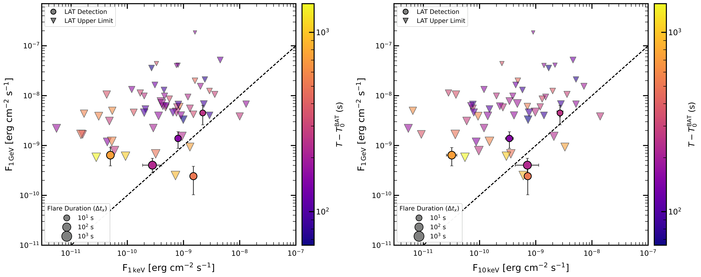
图注：Comparison of HE gamma-rays with X-ray fluxes for flares. The left panel shows the comparison of flux at 1 keV (F$_{1~\mathrm{keV}}$) with 1 GeV (F$_{1~\mathrm{GeV}}$). The right panel shows the comparison of flux at 10 keV (F$_{10~\mathrm{keV}}$) with 1 GeV (F$_{1~\mathrm{GeV}}$). LAT-detected flares are shown as points with error bars, whereas downward triangles represent the upper limits. The color gradient indicates the flare occurrence time after the GRB BAT trigger ($T-T_0^{BAT}$), and the marker size represents the flare duration ($\Delta t_x)$. The dashed black line denotes equality between the X-ray flux (1~keV in the left panel and 10~keV in the right panel) and the HE gamma-ray flux at 1~GeV.
对应解读：建议重点查看的图表第4项；关键图表逐图导读图4；模型拟合中用1 keV、10 keV X射线能流与1 GeV LAT能流/上限约束SSC。
入选理由：这张图直接给出1 keV、10 keV耀发能流与1 GeV高能伽马能流/上限的关系，包含探测点、误差棒、上限箭头、发生时间颜色和持续时间标记，是判断是否存在X射线越亮GeV越亮趋势以及LAT上限是否压低SSC预期的核心证据。
来源与置信度：\(arxiv_source\)；high；\(arxiv_source\) / aanda.tex:figure[3]
Fig05
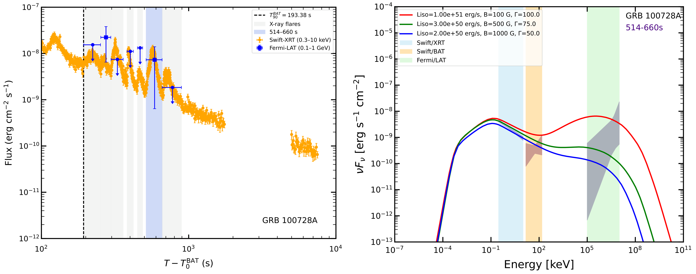
图注：\(\textbf{Left:}\) Multiwavelength light curve of GRB~100728A. The \(\textit{Swift}\) XRT (0.3--10 keV) light curve (orange points) is shown together with the \(\textit{Fermi}\) LAT (0.1--1 GeV) detections and upper limits during (blue points) the X-ray flare intervals. The shaded regions mark the X-ray flare intervals, while the blue-shaded region highlights the flare interval (514--660 s) selected for the spectral modeling presented in the right panel. The dashed vertical line denotes the \(\textit{Swift}-BAT\) $T_{90}$ duration. \(\textbf{Right:}\) Broadband spectral energy distribution of GRB~100728A during the selected flare interval (514--660 s) with SSC model fits for different values of the magnetic-field strength ($B$), bulk Lorentz factor ($\Gamma$), and electron luminosity ($L_e$). The model curves show that a broad range of physical parameters reproduces the observed X-ray flux while remaining consistent with the GeV upper limit. The shaded vertical bands indicate the energy ranges covered by \(\textit{Swift}\) XRT, \(\textit{Swift}\) BAT, and \(\textit{Fermi}\) LAT.
对应解读：建议重点查看的图表第2项和第5项；关键图表逐图导读图2、图5；GRB 100728A候选耀发的XRT/LAT时间对齐和宽波段SED建模。
入选理由：左图同时展示XRT光变、LAT探测/上限和耀发时间窗，可检查GeV信号是否与X射线耀发快速结构同步；右图给出所选耀发区间的宽波段SED及不同B、Γ、Le的SSC模型，是连接观测光变与物理模型约束的关键图。
来源与置信度：\(arxiv_source\)；high；\(arxiv_source\) / aanda.tex:figure[5]
Fig06
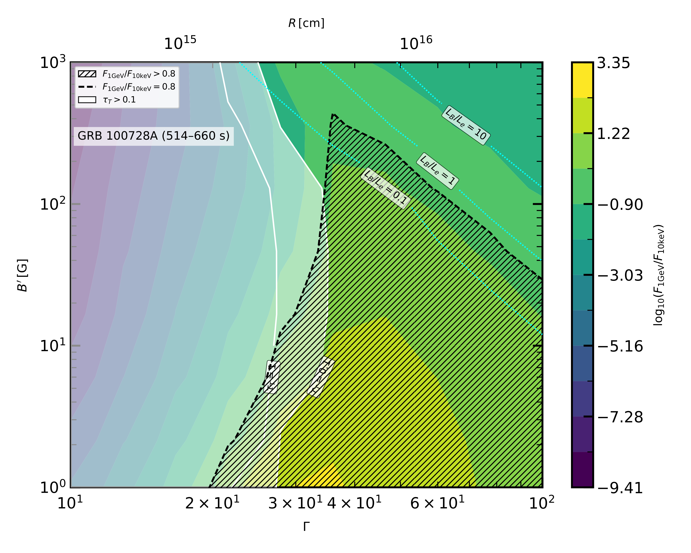
图注：Allowed parameter space in the $\Gamma$--$B$ plane for GRB 100728A during the flare interval 514--660 s. Here $\Gamma$ is the bulk Lorentz factor and $B$ is the magnetic-field strength. The color map represents the ratio of HE gamma-ray to X-ray flux, while the shaded and bounded regions indicate constraints derived from the flare observations and SED modeling. The region enclosed by the black dashed contour indicates parameter values where the predicted 1 GeV-to-10 keV flux ratio exceeds or reaches the observed GeV upper limit. The translucent region represents the parameter space excluded by internal $\gamma\gamma$ pair production opacity. The remaining $(B,\Gamma)$ parameter space therefore represents the physically allowed solutions that are consistent with the observed X-ray emission, the GeV upper limit, and the requirement of high-energy photon transparency.
对应解读：建议重点查看的图表第6项；关键图表逐图导读图6；SSC参数空间中B、Γ与GeV上限、γγ不透明度约束。
入选理由：该图直接在Γ--B平面显示允许/排除区域、1 GeV对10 keV通量比上限以及内部γγ吸收限制，最能支撑日报关于LAT上限切掉低磁化或强SSC参数空间、从而约束耀发区物理条件的解读。
来源与置信度：\(arxiv_source\)；high；\(arxiv_source\) / aanda.tex:figure[6]
Fig10
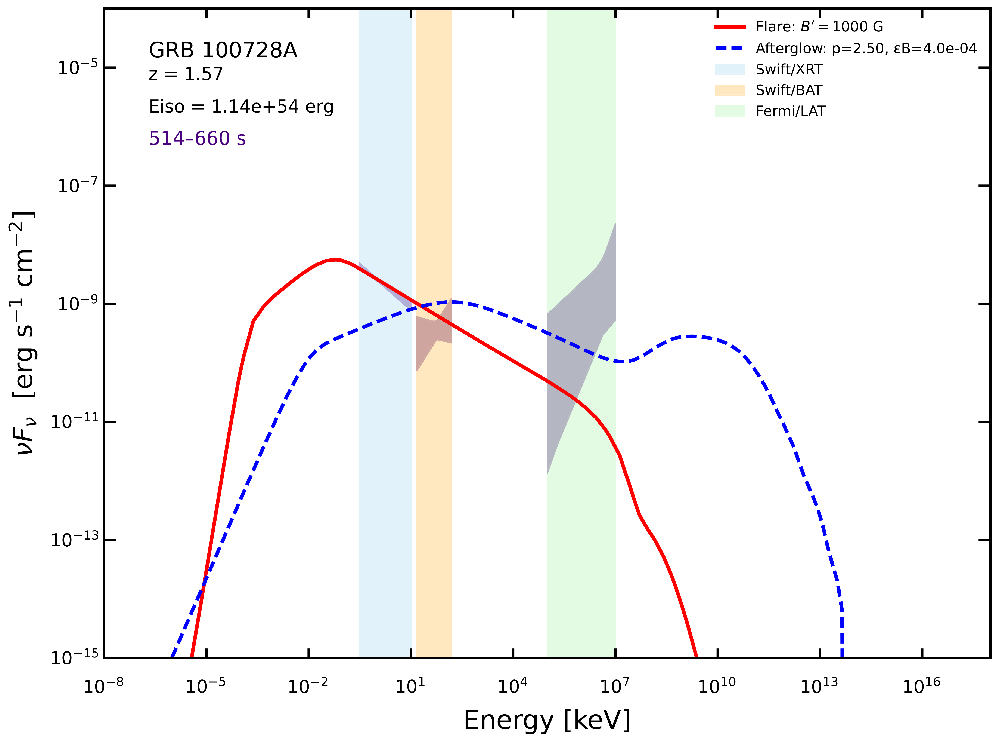
图注：Comparison between the spectral energy distributions (SEDs) of the afterglow and flare emission for GRB~100728A. The afterglow component is modeled using $p = 2.5$, $\epsilon_{\rm B} = 4.0 \times 10^{-4}$, $z = 1.57$, and $E_{\rm iso} = 1.14 \times 10^{54}\,\mathrm{erg}$. The flare emission is calculated using the magnetic field strength $B$, $L_e$, and bulk Lorentz factor $\Gamma$ derived in this work.
对应解读：建议重点查看的图表第5项；关键图表逐图导读图5；宽波段SED中比较外激波余辉与耀发辐射贡献。
入选理由：这张图专门比较GRB 100728A的外部前向激波余辉SED和耀发SED，适合检验论文关键结论：候选GeV辐射是否可由标准前向激波解释，而不是必须归因于X射线耀发自身的SSC分量。
来源与置信度：\(arxiv_source\)；high；\(arxiv_source\) / aanda.tex:figure[10]
Fig08
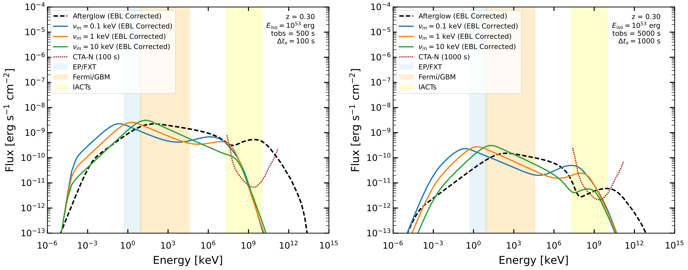
图注：Comparison between the SEDs of the external forward-shock afterglow and X-ray flares at different epochs. The left panel shows the SED at an early epoch, assuming a flare variability timescale of 100 s, while the right panel shows the SED at a later epoch, assuming a variability timescale of 1000 s. The afterglow SED is calculated using typical GRB of $E_{iso} = 1\times 10^{53}$ erg and typical microphysical parameters $\eta = 0.1,\, \epsilon_{\rm B} = 10^{-4},\, \epsilon_{\rm e} = 0.1 ,p = 2.2$, and a wind-like circumburst medium ($A_\ast = 0.1$). The dashed curves (brown) represent the sensitivity limits of CTAO-N.
对应解读：建议重点查看的图表第7项；关键图表逐图导读图7；早期与晚期耀发VHE可探测性及CTAO-N灵敏度比较。
入选理由：该图直接比较早期和晚期情形下外激波余辉与X射线耀发SED，并叠加CTAO-N灵敏度曲线，最贴近日报关于晚期耀发更适合VHE跟进、需考虑观测时间和灵敏度的解读。
来源与置信度：\(arxiv_source\)；high；\(arxiv_source\) / aanda.tex:figure[8]
Fig07
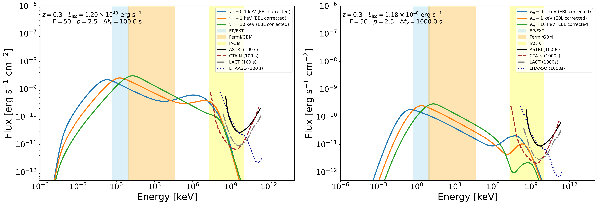
图注：Spectral energy distributions (SEDs) associated with flares, computed for three different peak-energy scenarios with $\nu_{\rm m} = 0.1$, 1, and 10 keV, corresponding to different isotropic luminosities $L_{\mathrm{iso}}$. The model spectra are obtained using the SSC prompt-emission framework at redshift $z=0.3$, assuming fixed parameters $\Gamma = 50$ and electron spectral index $p=2.5$ with EBL correction. The dashed curves represent the sensitivity limits of different Cherenkov Telescopes. The left panel shows the sensitivity comparison for a 100 s exposure, while the right panel corresponds to a 1000 s exposure. These plots illustrate the detectability of the predicted HE/VHE emission from GRB flares for different observing times.
对应解读：建议重点查看的图表第7项；关键图表逐图导读图7；不同峰值能量和曝光时间下Cherenkov望远镜探测前景。
入选理由：图中给出SSC耀发SED在νm=0.1、1、10 keV情形下的HE/VHE预测，并叠加不同切伦科夫望远镜100 s与1000 s曝光灵敏度，可补充说明VHE可探测性如何依赖耀发谱峰、曝光时间和EBL修正。
来源与置信度：\(arxiv_source\)；high；\(arxiv_source\) / aanda.tex:figure[7]
强相关工作
这篇工作与 Swift 时代的 X 射线耀发研究直接相连，特别是早期 Burrows、Falcone、Chincarini 等关于 XRT 耀发形态、统计和内部起源的论文。它也与 Fermi/LAT 的 GRB 高能辐射目录和单个明亮事件研究相连，例如 \(>100\,\mathrm{MeV}\) 长时延辐射通常可由外激波解释，而非 prompt 或耀发内部成分。建议检索关键词包括 “Swift XRT gamma-ray burst X-ray flares”, “Fermi LAT GRB high energy afterglow”, “GRB flare synchrotron self-Compton”, “late central engine activity”。
在 VHE 方面，这篇论文应放在 MAGIC 探测 GRB 190114C、H.E.S.S. 探测 GRB 180720B 和后续 GRB TeV 余辉研究的背景下阅读。那些事件证明 TeV 光子可来自 GRB 余辉，但并不等同于 X 射线耀发 SSC。本文的相反或张力点在于：如果某些理论预期 X 射线耀发普遍伴随强 GeV/TeV 闪光，那么系统 LAT 非探测和 \(L_B/L_e\gtrsim1\) 的磁化要求会压缩这类模型的参数空间。建议进一步检索 “GRB 190114C MAGIC SSC afterglow”, “GRB 180720B HESS TeV afterglow”, “Klein Nishina suppression GRB SSC”, “magnetized GRB flare emission”。
同一事件 / 同类源线索：
相似工作：
- https://arxiv.org/abs/astro-ph/0506130
- https://arxiv.org/abs/1004.0901
- https://arxiv.org/abs/1906.11293
基础理论 / 方法工作：
- https://arxiv.org/abs/astro-ph/9712005
- https://arxiv.org/abs/astro-ph/0105318
- https://arxiv.org/abs/0805.1553
相反观点 / 张力线索：
4. GRMHD Simulations of Accreting Proto-Magnetars I. Implications for Gamma-Ray Burst Jets and Energetic Explosions
- 来源：arXiv / astro-ph.HE
- 链接：https://arxiv.org/abs/2609.00174v1
- 作者：Tejas Prasanna, Kyle Parfrey, Brian D. Metzger, Ore Gottlieb, Andrei Beloborodov, Koushik Chatterjee
- 评分：novelty 8/10，importance 8/10，relevance 10/10，final 9.70/10
- 推荐理由：GRMHD simulations of accreting proto-magnetars directly address GRB jet launching and energetic explosions; strong relevance to high-energy transients and central-engine physics with concrete new simulation results.
中文题目：吸积中的原磁星广义相对论磁流体模拟（一）：对伽马暴喷流和高能爆炸的含义
做了什么：这篇论文用二维轴对称广义相对论磁流体力学模拟研究“毫秒原磁星”在被高吸积率盘包围时如何发射喷流。作者固定一个弱磁化吸积环，改变中子星偶极磁场强度，并与类似条件下的吸积黑洞作比较。核心结论是：吸积并不只是给原磁星增加质量，它会压缩磁层、打开更多磁通，使相对论喷流功率比孤立偶极自转损失估计高出数倍到约一个数量级；不同磁场强度下系统会进入磁层被压碎、磁控吸积和离心 propeller 等状态，喷流变率、吸积效率和自旋演化都显著不同。
为什么重要：长伽马暴、伽马暴伴随超新星、超亮超新星以及并合后暂现源常常需要一个既能给出强相对论喷流、又能给出大量亚相对论外流的中心引擎。传统原磁星模型多把中子星近似为孤立旋转偶极子，而真实形成环境中它很可能仍被回落物或吸积盘包围。本文的重要性在于把“磁星自转供能”和“盘—磁层相互作用”放到同一个广义相对论磁流体框架里，显示喷流功率、重子污染、塌缩时间和自旋方向都可能被吸积环境重写。
理论 / 观测 / 仪器方法价值：对理论而言，它给出了从压碎磁层到 propeller 的连续数值实验，说明孤立磁偶极公式不能直接套用到吸积原磁星。对观测解释而言，它提供了一个把伽马暴喷流功率、喷流变率、超新星能量和中心天体延迟塌缩联系起来的物理通道。对方法而言，论文使用物理状态方程和带电流弱相互作用的轴对称 GRMHD 模拟，比理想化力自由或牛顿 MHD 模型更接近新生中子星周围的热致密环境。
为什么应该关注：如果你关心伽马暴中心引擎，这篇文章提醒你：同一颗毫秒磁星在真空中、在弱回落中、在强吸积盘中会是完全不同的发动机。喷流能量不一定由孤立自旋下降公式决定，塌缩成黑洞的时间也不一定由外部质量供给率简单积分决定。它还为判断哪些暂现源可能由原磁星而非黑洞供能提供了可检验的动力学特征，例如喷流强变率、较强盘风、低吸积效率和自旋平衡附近的延迟塌缩。
展开详细解读：文章讲解、背景、理论、重点章节、图表与相关工作
文章详细讲解
科学问题：毫秒原磁星长期被视为长伽马暴和高能超新星的候选中心引擎，但经典图像通常把它当成孤立、强磁化、快速旋转的中子星，用真空或力自由偶极自转损失估算喷流功率。问题在于真实诞生环境并不真空：大质量恒星坍缩、双中子星并合后的暂态大质量中子星、或吸积诱导坍缩都可能留下高密度吸积盘或回落物。盘的压力可以压缩磁层，磁场可以反过来截断吸积流，二者共同决定喷流、盘风、自旋演化和是否快速塌缩为黑洞。
作者怎么做：论文开展轴对称 GRMHD 模拟，中心天体为快速旋转、强磁化的新生中子星，外部放置弱磁化吸积环。与许多只处理理想气体或简化冷等离子体的模型不同，模拟包含物理状态方程和带电流弱相互作用，使盘和近星区的热力学、电子分数以及中微子相关冷却/加热处理更贴近原磁星环境。作者保持吸积环基本设定不变，系统改变恒星偶极磁场强度，从而覆盖磁层被吸积流压到星表附近的 crushed-magnetosphere 状态、磁控通道吸积状态，以及磁层半径超过共转半径时的离心 propeller 状态；同时设置一个相近吸积环境下的黑洞模型作为参照。
关键结果：吸积流把原磁星磁层压缩到小半径，但这种压缩反而可打开额外极向磁通，令喷流功率超过孤立偶极自转损失估计，增强因子从几倍到约十倍。弱磁场时，磁层基本被压碎，吸积较高效，中子星增长较快；更强磁场时，磁层开始阻碍赤道吸积并把物质导向磁极，喷流出现由磁重联、等离子体团喷发和间歇磁层吸积驱动的强变率；最强场进入 propeller 后，离心屏障抛出更多物质，喷流更强也更平稳，同时中子星快速自旋下降。
局限和下一步：本文是系列第一篇，重点放在喷流和爆炸能量学，伴随论文才进一步讨论富中子抛射物和 \(r\)-过程。二维轴对称会强化某些磁层结构和通道流的相干性，不能完全捕捉三维非轴对称不稳定性、湍流发电机和喷流摆动。初始吸积环、磁场拓扑、中微子输运和中子星内部演化仍有理想化。下一步最关键的是三维 GRMHD、不同盘质量和角动量分布、随时间演化的中子星半径/温度/自转，以及把模拟输出后处理成可与伽马暴光变、超新星动能和核合成产额比较的观测量。
关键结果是怎么做出来的
样本和数值实验的“样本量”不是天体数，而是一组受控 GRMHD 模型。作者固定弱磁化吸积环的基本性质，改变中子星表面偶极磁场强度，以便把同一供给条件下的磁层响应分离出来。这样做的好处是，喷流功率或吸积效率的变化主要可归因于磁层大小、开放磁通和共转/磁层半径关系，而不是盘质量、初始温度或角动量分布同时改变造成的混淆。论文还包含一个类似吸积设置下的黑洞对照模型，用来判断“有固体表面和旋转磁层”的中子星与 Blandford-Znajek 类黑洞喷流之间的差别。
最重要的定量链条是从磁通到喷流功率。作者测量极区外流中的能量通量、磁通量、质量通量和磁化程度，并与孤立旋转偶极子预期比较。结果显示，在吸积压缩下，原磁星可开放比孤立状态更多的磁通，喷流功率可高于孤立偶极自转下降估计数倍至约 \(10\) 倍。这不是单纯“吸积越多喷流越强”的线性关系，而是盘压力、磁层压缩、磁通开放和旋转能抽取共同产生的非线性增强。
状态分类依赖几个诊断量：磁层半径相对中子星半径和共转半径的位置、赤道吸积是否直接触达星表、是否出现沿磁力线的通道吸积、外流是否携带足够高的能量通量并达到相对论磁化。弱场模型中，吸积流压倒磁压，磁层贴近星表，喷流仍能形成但吸积效率较高；中等场模型中，磁层周期性积累和释放磁通，出现 plasmoid eruption 和间歇吸积，喷流光度随时间强烈波动；强场 propeller 模型中，磁层在共转半径外侧显著阻碍进入物质，喷流更强更稳定，同时角动量损失使星体快速 spin down。
显著性在这类数值论文中不是观测 \(p\)-值，而是跨模型趋势和守恒量闭合的稳健性。需要看时间平均喷流功率、瞬时功率曲线、净吸积率、角动量通量、开放磁通、不同半径上的能量通量是否一致，以及模拟是否运行到足够长以越过初始瞬变。支持结论的关键图表通常包括密度/磁场结构图、喷流功率随时间、吸积率随时间、开放磁通和孤立偶极预测的比较、不同模型的质量与角动量收支表。
主要系统误差包括轴对称限制、数值电阻导致的重联速率、网格分辨率对薄电流片和 plasmoid 的影响、内边界/星表处理、状态方程和弱相互作用近似、以及初始环不是自洽坍缩计算输出。稳健性应通过不同半径积分能量通量、改变时间平均窗口、检查极区重子污染是否由数值扩散主导、比较黑洞对照模型和不同磁场模型的相对趋势来判断。本文最有力的证据不是某一个瞬时爆发峰值，而是磁场增强后吸积受阻、开放磁通增加、喷流功率增强和自旋转矩改变这几条诊断同时变化。
展开背景、理论、公式、模型、章节和图表导读
背景知识
研究对象是新生、快速旋转、强磁化的中子星，也就是常说的毫秒原磁星。它的自转周期可接近毫秒量级，表面大尺度磁场可达磁星强度，因此总旋转能足以达到超新星和伽马暴所需的 \(10^{52}\\,\mathrm{erg}\) 量级。与年老磁星不同，原磁星仍然炽热、半径较大、可能有强中微子驱动风，并处在坍缩或并合后的复杂吸积环境中。
历史上，长伽马暴中心引擎主要有两类图像：一类是黑洞加吸积盘，通过吸积能和黑洞自旋能驱动喷流；另一类是毫秒磁星，通过磁偶极自转下降和磁化风驱动喷流。两者都能在能量尺度上满足部分事件，但在持续时间、喷流重子污染、超新星耦合效率、晚期平台辐射和塌缩终止信号方面有不同预言。原磁星模型的一个常见简化是把外部物质忽略，只保留随时间变稀的中微子风和磁偶极制动。
为什么现在值得重新看，是因为越来越多暂现源显示中心引擎可能不处于“孤立”极限。坍缩星中的回落吸积、并合后盘、吸积诱导坍缩后的环状物都可能在最关键的秒到百秒时间尺度上与中子星磁层相互作用。数值 GRMHD 也已经能够在广义相对论、强磁场和热致密物质条件下同时追踪吸积、喷流和角动量输运，使过去只能用半解析 Alfvén 半径或 propeller 公式处理的问题可以直接模拟。
一个常见误区是认为“有强磁场就会把吸积完全挡住”，或相反认为“高吸积率一定会把磁星喷流关掉”。实际情况取决于磁压、动压、旋转离心势和磁通开放程度的竞争：磁层可以被压缩但仍发射强喷流；吸积可以沿磁力线通道进入而不是均匀覆盖星表；propeller 可以降低净吸积率却增强外流功率。另一个误区是直接把孤立偶极自转下降光度等同于伽马暴喷流功率，本文正是指出吸积盘可以显著改变开放磁通和转矩。
基础理论 / 方法脉络
基础物理图像可从压力平衡开始。吸积盘或回落流以高动压冲向中心天体，中子星偶极磁场的磁压随半径快速下降。当外部动压超过磁压时，磁层会被压缩；当磁压足够强时，它会截断吸积盘并迫使物质沿磁力线运动。这个截断位置就是磁层半径，它与共转半径的相对大小决定系统处在吸积、通道吸积还是 propeller 状态。
快速旋转磁星能通过开放磁力线抽取自转能。孤立情况下，开放磁通由光柱和磁层结构决定，喷流或磁化风功率近似由旋转角速度、磁偶极矩和开放磁通控制。吸积盘加入后，外部压力改变闭合场线与开放场线的比例，可能在更靠近星表处撕开磁层，使开放磁通增加。因此喷流增强并不一定意味着星体本身磁场更强很多，也可能是同一磁场在吸积环境中被重新拓扑化。
本文的关键假设是：中心中子星为旋转、带偶极磁场的致密星体，外部吸积环初始弱磁化；演化由 GRMHD 方程控制，并加入物理状态方程与带电流弱相互作用源项。GRMHD 处理的是守恒质量、能量动量和磁通冻结近似下的等离子体流动；弱相互作用影响电子分数、热压和中微子冷却，从而影响盘风的重子载荷与热结构。由于本文是一篇喷流和爆炸能量学论文，重点诊断量是喷流功率、质量外流率、磁化参数、开放磁通、净吸积率和星体转矩。
观测联系不是直接合成光变，而是通过能量、持续时间和变率尺度建立。若模拟给出的喷流功率和持续时间落在长伽马暴或 GRB-SN 所需范围，并且外流动能可达到高能超新星尺度，就说明吸积原磁星是可行中心引擎。需要注意退化关系：同样的喷流功率可由更强表面磁场、更快自转、更大开放磁通或更高盘压产生；同样的低净吸积率可来自 propeller、盘风损失或数值边界处理。判断模型成败不能只看总功率，还要看重子污染、角动量收支和时间变率是否同时合理。
公式与推导
第一步是估算原磁星可用的自转能。若中子星转动惯量为 \(I\)、角速度为 \(\Omega_*\)，则
这里 \(I\) 取决于中子星质量、半径和状态方程，\(\Omega_*=2\pi/P_*\) 由自转周期 \(P_*\) 决定。毫秒周期使 \(E_{\rm rot}\) 可达伽马暴和高能超新星所需尺度。
孤立偶极近似给出常用参照光度。令磁偶极矩为 \(\mu=B_*R_*^3\)，其中 \(B_*\) 为表面偶极场、\(R_*\) 为半径，则真空量级估计为
这个式子说明孤立自转损失对 \(\Omega_*\) 极敏感，但它隐含外部磁层结构未被吸积盘显著改变。本文的重要比较正是模拟喷流功率 \(L_j\) 与 \(L_{\rm dip}\) 的偏离。
吸积是否压缩磁层可由磁压与物质动压平衡估计。偶极场 \(B(r)\sim \mu/r^3\)，近自由落体速度 \(v\sim (2GM/r)^{1/2}\)，质量通量 \(\dot M\sim 4\pi r^2\\)
ho v)。令 \(\(B^2/(8\pi)\sim\) \
ho \(v^2\))，得到量级磁层半径
这里 \(M\) 是中子星质量，\(\dot M\) 是外部质量供给或局地吸积率。虽然模拟中几何和 GR 效应更复杂，这个缩放仍解释了为什么高 \(\dot M\) 会压碎磁层、强 \(B_*\) 会把磁层推远。
旋转离心效应由共转半径给出，即磁场角速度等于局地 Kepler 角速度的位置：
若 \(r_m 开放磁通提供更适合吸积环境的喷流功率表达。若穿过开放极区的磁通为 \(\Phi_{\rm open}\)，旋转频率为 \(\Omega_*\)，力自由量级喷流功率可写成 其中 \(\kappa\) 是与场线角速度和几何有关的无量纲系数。吸积盘压缩闭合磁层后可增加 \(\Phi_{\rm open}\)，所以即使 \(B_*\) 和 \(\Omega_*\) 固定，\(L_j\) 也可能高于 \(L_{\rm dip}\)。 喷流能否相对论化还取决于磁化参数。沿外流测量的能量与质量通量可定义 其中 \(L_{\rm EM}\) 是电磁能流，\(\dot M_j\) 是喷流中的重子质量外流率。若 \(\sigma\gg 1\)，理论上可加速到高 Lorentz 因子；若 \(\dot M_j\) 过大，喷流即使功率高也会被重子污染而难以产生典型 GRB。 中子星质量增长和塌缩时间不能只用外部供给率估计。若外部供给率为 \(\dot M_{\rm sup}\)，真正落到星体上的净吸积率为 \(\dot M_*\)，可写 这里 \(\epsilon_{\rm acc}\) 是有效吸积效率。propeller 和磁驱外流可使 \(\epsilon_{\rm acc}\) 很小，从而延迟中子星达到最大质量并塌缩为黑洞。 角动量演化决定 spin up 还是 spin down。星体角动量 \(J_*=I\Omega_*\) 的变化可写为 其中 \(N_{\rm acc}\) 是吸积物质携带的角动量转矩，\(N_{\rm mag}\) 是盘—磁层磁转矩，\(N_{\rm wind}\) 是喷流/风带走的转矩。本文的 near spin equilibrium 指这些项可相互抵消，使质量仍在供给但自旋演化和塌缩时间与简单吸积图像不同。 这篇论文本身不是对某个观测样本做参数拟合，而是通过数值实验建立物理模型空间。可视为拟合量或控制参数的是中子星磁偶极强度、自转、吸积盘供给条件和状态方程；输出诊断包括 \(L_j(t)\)、\(\dot M_*(t)\)、\(\Phi_{\rm open}(t)\)、\(\sigma(t)\)、质量外流率和转矩。与观测比较时，通常会把这些输出映射为 GRB 各向同性等效能量、准直修正喷流能量、持续时间、变率以及超新星动能。 如果把该类模型用于观测拟合，似然通常来自多维数据：prompt gamma-ray 能量和持续时间约束喷流功率时间积分，余辉喷流破裂或多波段建模约束准直角和真实能量，超新星光变和谱线速度约束抛射物质量、镍质量和动能，晚期 X 射线平台约束自旋下降时间尺度。参数后验会强烈退化，例如 \(B_*\)、\(P_*\)、\(\Phi_{\rm open}\)、喷流效率和观测视角都能改变观测到的高能光度。 残差应重点看“时间结构”而不是只看总能量。通道吸积模型预言强烈、准间歇喷流变率，propeller 模型则可能给出更稳定且更强的喷流和较大非相对论外流。若某个 GRB 的 prompt 光变极平滑但模型处在强 plasmoid 爆发区，或者观测要求高 Lorentz 因子而模拟喷流重子载荷过大，就构成物理残差。对超新星，若模型把太多能量放入高度准直喷流而不能耦合到宽角抛射物，也会与谱线速度和光变宽度不匹配。 系统误差主要来自数值与物理两方面。数值上，轴对称可能高估有序磁通和相干 plasmoid，分辨率会影响重联和质量加载，星表边界影响吸积转矩。物理上，中微子输运近似、核物质状态方程、初始盘来自理想环而非全坍缩演化、以及缺少三维湍流发电机都会改变 \(\dot M_*\)、\(\epsilon_{\rm acc}\) 和喷流重子污染。实际应用时最好不要把单个模拟点当作精确模板，而应使用其趋势关系作为先验：更强磁层通常更低净吸积、更强外流、更可能 spin down。 模型可能失败的地方同样清楚。若三维模拟显示磁层被非轴对称 interchange 不稳定性持续穿透，propeller 效率可能低于二维结果；若实际新生中子星中微子风把极区重子污染提高到过大，强电磁喷流也难以成为 GRB；若盘供给时间太短，无法维持观测持续时间。反过来，如果未来观测发现某些 GRB-SN 同时需要强喷流、强宽角外流和延迟黑洞塌缩，吸积原磁星模型会比孤立磁星或纯黑洞盘模型更自然。 数据/数值设置：应首先读模拟初始条件和方程部分，确认中心中子星质量、半径、自转、磁场设定、吸积环性质、状态方程和弱相互作用处理。这里决定了结果能否外推到 collapsar、并合后盘或吸积诱导坍缩。特别要看作者如何定义星表边界、如何初始化偶极场和盘磁场，以及是否说明网格分辨率和轴对称限制。 模型序列：重点看作者如何按 \(B_*\) 或等价磁偶极矩组织模型。读者应把每个模型对应的 \(r_m/R_*\)、\(r_m/r_{\rm co}\)、净吸积率、喷流功率和转矩联系起来，而不是只记“弱场/强场”标签。黑洞对照模型也应一起读，因为它帮助区分盘本身能产生的喷流与原磁星旋转磁层额外贡献。 主结果：喷流功率和磁通开放部分是全文核心。读者应检查 \(L_j(t)\) 如何测量、在哪个半径积分、时间平均区间是否避开初始瞬变，以及 \(L_j/L_{\rm dip}\) 的增强因子是否在多个模型中持续存在。还要看喷流磁化和质量加载，否则高功率不一定意味着 GRB 可行。 吸积和自旋演化：这一部分决定中子星是否快速增长并塌缩为黑洞。重点读净吸积率与外部供给率的差别、磁层如何调节 \(\epsilon_{\rm acc}\)、以及角动量通量如何让星体 spin up、spin down 或接近 spin equilibrium。这里是本文相对于孤立磁星模型最有价值的地方之一。 讨论和局限：最后读作者如何把模拟能量学映射到长 GRB、GRB-SN 和高能爆炸。注意他们给出的适用范围：二维轴对称、固定初始环、有限模拟时长和中微子处理近似。伴随论文处理富中子抛射物和 \(r\)-过程，因此本文关于核合成的结论不应过度外推。 初始条件和模型表：检查每个模型的 \(B_*\)、\(P_*\)、盘质量或供给率、分辨率、运行时间、以及黑洞对照模型参数，确认比较是受控的。 密度、磁场线和磁化参数二维快照：看磁层是否被压到星表、是否形成极向低密度漏斗、是否出现通道吸积和 plasmoid。关键不是图片是否“像喷流”，而是磁场拓扑如何随 \(B_*\) 改变。 喷流功率 \(L_j(t)\) 与孤立偶极 \(L_{\rm dip}\) 比较：看增强因子、时间平均区间、峰值是否由短暂瞬变主导，以及不同半径测得的能流是否一致。 吸积率和外流率随时间：检查 \(\dot M_*(t)\)、\(\dot M_{\rm out}(t)\) 与外部供给的差别，尤其是 propeller 模型是否真的降低净吸积而不是只延迟吸积。 开放磁通 \(\Phi_{\rm open}(t)\) 或等价磁通诊断：这是解释喷流增强的关键。应看它与 \(L_j(t)\) 的相关性，以及是否随磁层压缩和重联事件同步变化。 转矩和自旋演化表/图：看 \(N_{\rm acc}\)、磁转矩和喷流转矩的符号与大小，判断哪些模型 spin up、哪些 spin down、哪些接近平衡。 磁化和重子污染诊断：看极区 \(\sigma\)、Bernoulli 参数或终端 Lorentz 因子 proxy，确认喷流是否不仅有高能量通量，也有产生 GRB 所需的低质量加载。 分辨率或稳健性检验：若有附录图，应检查喷流功率、吸积率和 plasmoid 变率是否随分辨率、积分半径或时间平均窗口显著改变。 图 1：通常应是模型几何或二维快照。横纵轴多为以 \(GM/c^2\) 或公里计的空间坐标，颜色表示密度、磁化参数或温度，叠加线表示磁力线。读图时看极轴是否出现低密度高磁化漏斗、赤道盘是否被磁层截断、闭合磁层边界离星表多远。陷阱是颜色动态范围很大，低密度漏斗不等于自动可产生高 Lorentz 因子，还要结合质量加载。 图 2：可能展示不同磁场模型的喷流功率随时间。横轴为时间，纵轴为 \(L_j\) 或 \(L_j/L_{\rm dip}\)，不同颜色对应不同 \(B_*\)。关键看时间平均值是否系统高于孤立偶极估计，以及中等场模型是否表现出由磁层爆发导致的尖峰。读图陷阱是不要把初始瞬变峰值当作长期喷流功率，最好寻找作者标注的准稳态平均区间。 图 3：应重点关注吸积率、外流率或净质量增长。横轴为时间，纵轴可能是 \(\dot M_*\)、\(\dot M_{\rm out}\) 或 \(\epsilon_{\rm acc}\)。弱场模型若显示高净吸积，强场/propeller 若显示低净吸积和高外流，就支撑“磁层调节塌缩时间”的结论。陷阱是外部供给率和真正穿过星表的吸积率不是同一个量。 图 4：开放磁通或磁层半径诊断。横轴可能为时间或模型序列，纵轴为 \(\Phi_{\rm open}\)、\(r_m\) 或归一化磁通。应看 \(\Phi_{\rm open}\) 与 \(L_j\) 是否近似同向变化，因为这直接连接到 \(L_j\propto \Phi_{\rm open}^2\Omega_*^2\)。陷阱是磁层半径在非稳态下不是单一清晰边界，作者的定义方法会影响数值。 图 5：角动量通量和自旋演化。横轴为时间或模型，纵轴为转矩 \(N\) 或 \(\dot\Omega_*\) 的 proxy。读者应区分吸积携带的正转矩和磁场/风带走的负转矩，看 near spin equilibrium 是否由大项抵消导致。陷阱是短时间平均可能掩盖磁层周期性爆发造成的转矩翻转。 图 6：黑洞对照或能量收支比较。若图中列出原磁星模型与黑洞模型的喷流功率、外流质量和效率，应看相同盘条件下中子星固体表面与旋转磁层带来的额外差异。陷阱是黑洞和中子星内边界物理不同，不能只用一个效率数字断言所有 GRB 更偏好某一类引擎。模型拟合 / 应用方法
重点章节 / 结果段落怎么读
建议重点查看的图表
关键图表逐图导读
论文原图 / 可嵌入图片
Fig12
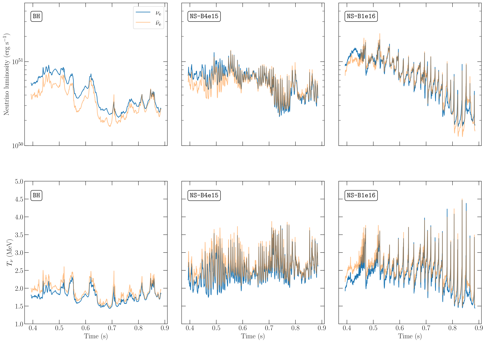
图注：Electron-neutrino and electron-antineutrino luminosities for the BH and NS models (top panels), and the corresponding luminosity-weighted average emission temperatures (bottom panels; Eq.~\eqref{eq:Tnu}).
对应解读：模型拟合段落中的系统误差与物理输入：中微子处理、热力学状态、质量加载对喷流和外流诊断的影响。
入选理由：虽然日报重点图表更关注喷流功率、吸积率、开放磁通和转矩，但该图直接给出 BH 与 NS 模型的电子中微子/反中微子光度及平均发射温度，是评估弱相互作用处理、冷却强度和潜在重子污染的重要辅助诊断；在现有候选图中最能支撑论文采用物理状态方程与弱相互作用这一方法学重点。
来源与置信度：\(arxiv_source\)；high；\(arxiv_source\) / paper1.tex:figure[12]
Fig14
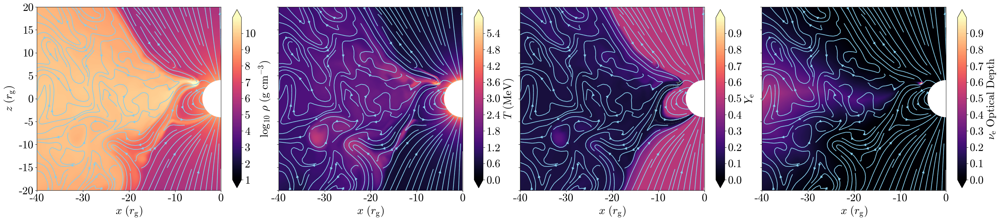
图注：Two-dimensional maps of density, temperature, electron fraction, and local optical depth near the NS surface at one of the brief instances when the maximum optical depth on the grid spikes to $\sim 1$ in the propeller regime (right panel of Fig.~\ref{fig:optical_depth}).
对应解读：建议重点查看的二维快照与磁化/重子污染诊断的辅助内容，尤其是 propeller 阶段近星表区域的密度、温度、电子分数和光学深度结构。
入选理由：该图是二维空间结构图，虽不包含日报最希望看到的磁场线、磁化参数或喷流漏斗，但展示了 propeller regime 中光学深度短暂升高时近中子星表面的密度、温度和 Ye 分布，可辅助判断近星表物质状态、弱相互作用区域和外流成分，科学相关性高于纯时间序列光学深度图。
来源与置信度：\(arxiv_source\)；high；\(arxiv_source\) / paper1.tex:figure[14]
Fig13
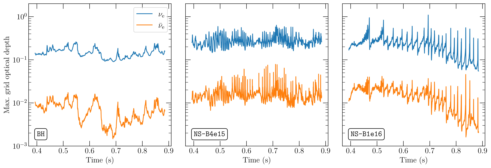
图注：Maximum local optical depth to infinity across the grid as a function of time for electron neutrinos and electron antineutrinos in the BH and NS models.
对应解读：模型拟合段落中的系统误差与稳健性检查：中微子光学深度是否接近或超过透明近似适用范围。
入选理由：该图显示 BH 与 NS 模型中电子中微子和反中微子的最大局部光学深度随时间变化，可用于判断中微子输运近似是否可能成为系统误差来源；但它与日报核心的喷流增强、开放磁通、吸积调节和转矩演化关系较间接，因此排序靠后。
来源与置信度：\(arxiv_source\)；high；\(arxiv_source\) / paper1.tex:figure[13]
强相关工作
这篇工作处在几个研究线索的交汇处。第一是毫秒磁星作为长 GRB 和超亮超新星中心引擎的理论传统，关键词可检索 “millisecond magnetar gamma-ray burst central engine”、“proto-magnetar wind”、“magnetar-powered supernova”。第二是吸积盘—磁层相互作用和 propeller 机制，最早多来自 X 射线脉冲星和 T Tauri 星语境，但在并合后残余中子星和 collapsar 回落中具有新的高能版本，关键词包括 “accreting magnetar propeller”、“disk magnetosphere interaction neutron star GRMHD”。
与黑洞中心引擎工作相比，本文不是简单竞争关系。黑洞盘模型擅长解释强相对论喷流和高吸积效率，但没有中子星表面、原磁星中微子风和可延迟塌缩的质量上限问题；原磁星模型可自然给出长时间自转能注入，但孤立版本低估了吸积环境对开放磁通和重子外流的影响。本文显示两类引擎之间可能存在演化连接：吸积原磁星可先驱动喷流和外流，随后在净吸积足够时塌缩为黑洞。
需要对照的相反或张力观点包括：GRB 喷流需要极低重子污染，而新生中子星和吸积盘风可能过度污染极区；二维轴对称模拟可能高估稳定有序喷流；孤立磁星自转下降拟合某些光变平台时可能给出与真实吸积磁层不同的 \(B_*\) 和 \(P_*\)。检索时可使用 “baryon loading proto-magnetar GRB”、“magnetar vs black hole GRB engine”、“fallback accretion magnetar collapse”。
同一事件 / 同类源线索：
相似工作：
- https://arxiv.org/abs/astro-ph/0604136
- https://arxiv.org/abs/1004.4622
- https://arxiv.org/abs/1101.2458
基础理论 / 方法工作：
- https://ui.adsabs.harvard.edu/abs/1977SvA....20..537I/abstract
- https://ui.adsabs.harvard.edu/abs/1982MNRAS.199..883L/abstract
- https://ui.adsabs.harvard.edu/abs/1977MNRAS.179..433B/abstract
相反观点 / 张力线索：
5. Search for Neutrinos from Tidal Disruption Events with IceCube
- 来源：arXiv / astro-ph.HE
- 链接：https://arxiv.org/abs/2609.00657v1
- 作者：R. Abbasi, M. Ackermann, J. Adams, J. A. Aguilar, M. Ahlers, J. M. Alameddine, S. Ali, N. M. Amin
- 评分：novelty 7/10，importance 8/10，relevance 9/10，final 9.05/10
- 推荐理由：IceCube对89个TDE进行时间相关和stacking高能中微子搜索并给出弥散通量贡献上限，属于明确的天体源高能中微子/多信使结果。
中文题目：IceCube 对潮汐瓦解事件高能中微子的搜索
做了什么：这篇 IceCube 论文用时间相关似然方法搜索了 89 个光学、紫外和 X 射线确认或候选潮汐瓦解事件的中微子信号。作者分别做了两类检验：逐个源允许中微子发射时间窗由数据拟合，以及把喷流型和非喷流型潮汐瓦解事件分组后做固定一年时间窗的叠加搜索。结果没有发现显著中微子过量，并在“潮汐瓦解事件近似为标准烛光”的假设下给出了喷流型和非喷流型样本对弥散天体物理中微子通量贡献的上限。核心价值在于：它把近年大视场时域巡天积累起来的潮汐瓦解事件样本系统接入 IceCube 的瞬变源搜索框架，给出了可直接约束潮汐瓦解事件强子加速效率和源族贡献的非探测结果。
为什么重要：潮汐瓦解事件被认为可能在新形成的吸积盘、外流、日冕或相对论喷流中加速质子，并通过光强子相互作用产生 \(\mathrm{TeV}\) 到 \(\mathrm{PeV}\) 中微子。过去若干单个潮汐瓦解事件与 IceCube 事件的空间和时间接近性曾引发关注，但单例关联很容易受事后选择、源样本不完整和试验因子影响。这项工作重要之处在于把问题从“某个事件是否巧合相伴”推进到“一个定义明确的潮汐瓦解事件样本整体是否有可检出的中微子发射”，因而更适合检验源族物理。
理论 / 观测 / 仪器方法价值：对理论而言，这项非探测可转化为潮汐瓦解事件宇宙线负载、质子加速功率、光强子效率和中微子发射持续时间的限制。对观测而言，论文展示了如何把光学、紫外、X 射线时域样本与 IceCube 事件级数据进行时间相关联合检验，并区分喷流型与非喷流型子族。对方法而言，逐源自适应时间窗搜索和固定时间窗叠加搜索互补：前者适合未知持续时间的亮源，后者适合许多弱源共同贡献的情形。
为什么应该关注：如果你关心高能中微子来源、瞬变吸积、喷流启动或宇宙线加速，这篇文章值得看，因为它给出了目前较系统的潮汐瓦解事件源族检验之一。即使没有发现信号，限制本身也在排除一些“潮汐瓦解事件主导 IceCube 弥散通量”的简单图像，并提示未来需要更完整的潮汐瓦解事件目录、更准确的多波段时标和更低系统误差的实时联合分析。
展开详细解读：文章讲解、背景、理论、重点章节、图表与相关工作
文章详细讲解
科学问题：潮汐瓦解事件发生在恒星进入大质量黑洞潮汐半径内并被撕裂时，部分恒星碎片回落形成短暂吸积流。这个过程天然提供强辐射场、非稳态吸积、外流和有时出现的相对论喷流，因此是高能质子加速和光强子中微子产生的候选场所。问题不是“潮汐瓦解事件能不能在理论上产生中微子”，而是现有 IceCube 数据是否已经能在定义明确的潮汐瓦解事件样本中看到统计显著的空间和时间相关过量。
作者怎么做：论文选择了 89 个由 X 射线和光学或紫外观测识别的潮汐瓦解事件，并用 IceCube 的时间相关非触发点源搜索方法分析这些源方向附近的中微子候选事件。分析分成两部分。第一部分是逐源搜索，对每个潮汐瓦解事件拟合可能的中微子发射时间窗，允许发射时标并不严格等于光学峰值或 X 射线峰值附近的某个固定窗口。第二部分是叠加搜索，把喷流型和非喷流型潮汐瓦解事件作为子族，在固定一年窗口内检验多个弱源是否共同贡献一个低显著度但累积可见的信号。
关键结果：无论逐源搜索还是喷流型、非喷流型的叠加搜索，作者都没有报告显著中微子过量。逐源检验的主要输出是每个源的最佳拟合信号事件数、最佳时间窗、局部显著性以及经过多重试验修正后的全局显著性；叠加检验的主要输出是各子族的最佳拟合信号归一化或信号事件数，以及相对于背景的检验统计量。非探测进一步被转化为对潮汐瓦解事件子族贡献 IceCube 弥散天体物理中微子通量的上限，前提是假定样本内潮汐瓦解事件可用标准烛光近似描述。
局限和下一步：最重要的限制来自样本选择和源物理多样性。光学、紫外和 X 射线潮汐瓦解事件目录不是体积完备样本；喷流型事件极少，非喷流型事件内部也可能存在很大的黑洞质量、吸积状态、遮蔽程度和外流几何差异。标准烛光假设便于把非探测转成源族贡献上限，但很可能过于简单。下一步需要将 ZTF、eROSITA、LSST 时代更大、更均匀的样本与 IceCube-Gen2、KM3NeT 等探测器联合，并把电磁辐射曲线、黑洞质量、红移、X 射线亮度和射电外流信息纳入加权叠加。
关键结果是怎么做出来的
样本链条的第一步是定义 89 个潮汐瓦解事件。论文强调这些事件来自光学、紫外和 X 射线观测，而不是从中微子事件反向挑选，因此可以减少事后选择偏差。读者应特别关注样本表：每个源的坐标、红移、分类为喷流型或非喷流型的依据、电磁发现时间、峰值时间或观测窗口如何定义。这些信息决定了 IceCube 有效面积、背景率和时间窗口的解释。
逐源搜索的证据链是：在每个潮汐瓦解事件方向附近，使用中微子候选事件的方向重建误差、能量代理量和到假定发射窗口的时间差构造信号概率密度与背景概率密度；然后最大化非绑定或受约束的时间相关似然，得到最佳拟合信号事件数和时间窗。局部显著性来自检验统计量相对于背景伪实验分布的位置，全局显著性还要扣除 89 个源和不同时间窗选择带来的试验因子。若论文列出了最显著几个源，读者不应只看局部 \(\mathit{p}\) 值，而应看修正后的全局 \(\mathit{p}\) 值。
叠加搜索的证据链不同。它假设单个潮汐瓦解事件可能太弱，多个源按某种权重共同贡献中微子。论文对喷流型和非喷流型子样本采用固定一年时间窗，这避免了逐源时间窗拟合带来的额外自由度，同时也隐含了发射持续时间的物理假设。叠加似然中每个源的信号权重通常会依赖 IceCube 对该赤纬的有效面积、源距离或标准烛光假设下的相对通量权重；这些权重设置会影响哪几个源主导结果。
显著性和置信上限的关键是背景估计。IceCube 这类分析通常通过赤经随机化或时间 scrambling 生成背景伪实验，以保持探测器随赤纬和时间的暴露特性。上限一般通过注入不同强度的模拟信号，找到在给定置信水平下与观测无过量结果相容的最大通量归一化。读者应检查论文是否给出 \(\mathrm{90\%}\) 置信上限、能谱假设例如 \(\mathrm{d}N/\mathrm{d}E \propto E^{-2}\) 或更软谱，以及上限对谱指数的依赖。
主要系统误差包括中微子角分辨率、能量响应、有效面积、南北天区背景差异、源位置和峰值时间不确定性、电磁样本不完备、喷流型分类不确定性，以及标准烛光假设。稳健性检验通常体现在更换时间窗、改变谱指数、分子样本、检查最显著源是否由单个高能事件驱动、以及比较注入恢复曲线。支撑结论的图表应包括源天空分布、逐源检验统计量或 \(\mathit{p}\) 值分布、叠加检验的似然扫描、以及弥散通量贡献上限图。
展开背景、理论、公式、模型、章节和图表导读
背景知识
潮汐瓦解事件是时域天文学中连接恒星动力学、黑洞吸积和瞬变高能天体物理的关键现象。当恒星到黑洞的距离小于潮汐半径时，恒星自引力无法抵抗黑洞潮汐场，物质被拉成长流，约一半碎片可能仍束缚并回落。回落物质形成的吸积结构可产生光学、紫外和 X 射线耀发，有时还伴随射电外流或相对论喷流。
历史上，高能中微子源的候选包括伽马射线暴、活动星系核耀变体、星暴星系、超新星和潮汐瓦解事件。潮汐瓦解事件的吸引力在于它们同时具备高辐射密度和强动力学非稳态：强光子场有利于 \(\mathrm{p}\gamma\) 相互作用，瞬变外流或喷流有利于粒子加速，且事件率可能足够高。但这些优点也带来困难，因为辐射场的几何、持续时间和重处理过程远比稳态喷流源复杂。
观测背景在近十年快速变化。早期潮汐瓦解事件样本很小，多依赖 X 射线全天监测或偶然发现；近年来 ASAS-SN、ZTF、ATLAS、Swift、eROSITA 等光学和高能巡天显著增加了样本数。与此同时，IceCube 已积累多年事件样本，并发展出时间相关和堆叠点源搜索框架，因此现在能够把“若干有趣巧合”变成“源族统计检验”。
一个常见误区是把单个中微子事件与单个潮汐瓦解事件的空间时间接近性直接解释为物理关联。由于 IceCube 角误差、瞬变源数量、可选择时间窗和多波段发现延迟都不小，偶然重合概率可能被低估。另一个误区是把所有潮汐瓦解事件当成同一种源；实际上喷流型、X 射线亮型、光学亮型、被遮蔽或重处理主导的事件，可能对应完全不同的中微子效率。
基础理论 / 方法脉络
基本物理图像是：潮汐瓦解事件中的吸积流、喷流或外流把一部分引力能转化为非热粒子能量。若质子被加速到足够高的能量，它们会与环境中的紫外、X 射线或光学光子发生光强子相互作用，产生 \(\Delta\) 共振或多π过程，随后带电 π 介子衰变为中微子。中微子几乎不被源内物质吸收，因此可作为强子加速的直接探针。
IceCube 看到的不是源的总中微子光度，而是通过地球的事件样本：每个事件有到达方向、角误差、能量代理量和探测时间。对瞬变源来说，背景主要是大气中微子和误重建大气μ子，它们在时间上近似平稳，而信号应在源方向和某个有限时间窗口内聚集。时间相关分析因此比全时段点源搜索更敏感，前提是发射时间窗不是太宽。
本文的一个核心假设是中微子信号可以用空间、能量和时间概率密度的乘积近似描述。空间项检验事件方向是否与潮汐瓦解事件坐标相容，能量项利用天体物理中微子通常比大气背景更硬的事实，时间项描述发射窗口。逐源搜索让时间窗口参数由数据拟合，而叠加搜索用固定一年窗口降低自由度并增强源族检验的可解释性。
主要退化关系包括：信号事件数与谱指数退化，硬谱少数高能事件可以模拟较强源，软谱则更容易混入大气背景；发射窗口宽度与背景数退化，窗口越宽可容纳更多真实延迟发射，但背景也越多；源族上限与权重模型退化，按标准烛光加权、按电磁亮度加权或按距离加权可能使不同源主导似然。系统误差还包括有效面积随赤纬和能量变化、角分辨率误差、时间覆盖不均匀和潮汐瓦解事件目录选择效应。
公式与推导
第一步是潮汐瓦解的尺度。若恒星质量和半径为 \(M_\star\) 与 \(R_\star\)，黑洞质量为 \(M_{\rm BH}\)，潮汐半径近似为
这个式子来自令黑洞潮汐加速度与恒星自引力同量级。它说明潮汐瓦解事件天然发生在黑洞势阱深处，可释放大量引力能。
回落率常用晚期标度表示为
其中 \(t_0\) 是瓦解或回落起始时间。若中微子功率追踪吸积或外流功率，它可能与这个时标相关；但本文没有强制采用这种理论光变，而是用时间相关搜索允许较宽泛的发射窗口。
高能中微子的产生可用光强子阈值近似理解。质子能量 \(E_p\) 与靶光子能量 \(\epsilon_\gamma\) 满足
其中 \(\Gamma\) 是相对论流的洛伦兹因子；非相对论或弱相对论区域可取 \(\Gamma \sim 1\)。单个中微子通常带走质子能量的约 \(5\\%\)，即
这把紫外或 X 射线光子场与 \(\mathrm{TeV}\) 到 \(\mathrm{PeV}\) 中微子联系起来。
源的微分中微子通量常写为幂律
其中 \(\phi_0\) 是归一化，\(E_0\) 是参考能量，\(\gamma\) 是谱指数。IceCube 分析通常在若干 \(\gamma\) 假设下给出灵敏度或上限，因为 \(\gamma\) 决定高能事件权重。
探测器期望信号事件数由通量折叠有效面积得到：
其中 \(A_{\rm eff}\) 是随能量和赤纬 \(\delta\) 变化的有效面积，\([t_1,t_2]\) 是搜索时间窗。这个式子是把天体物理模型转成 IceCube 可计数事件的桥梁。
对第 \(i\) 个中微子候选事件，信号概率密度可分解为
其中 \(\Delta\psi_i\) 是事件方向与源位置的角距，\(\sigma_i\) 是角误差估计，\(E_i\) 是能量代理量。背景概率密度 \(B_i\) 则由同赤纬附近的事件率、能量分布和时间分布估计。
非绑定似然常写为
其中 \(N\) 是候选事件总数，\(n_s\) 是拟合信号事件数。逐源搜索还会把 \(S_{\rm time}\) 的中心和宽度作为待优化参数或扫描参数。
检验统计量通常定义为似然比
其中带帽变量为最大似然估计，\(\hat{\theta}_t\) 表示时间窗参数。由于存在边界条件 \(n_s\ge 0\) 和时间窗试验因子，\(TS\) 的显著性最好用背景伪实验而不是简单的 \(\chi^2\) 近似给出。
叠加搜索把多个潮汐瓦解事件的信号项相加：
其中 \(w_k\) 是第 \(k\) 个源的权重，可包含标准烛光距离因子、探测器暴露或子族假设。这个方程说明叠加分析检验的是一个源族模型，而不是某个单独源。
在无显著过量时，上限可通过满足覆盖率的注入实验得到，形式上可写为
其中 \(\mu_{90}\) 是 \(\mathrm{90\\%}\) 置信水平下允许的信号事件数上限。把 \(\Phi_{90}\) 与 IceCube 弥散通量比较，就得到潮汐瓦解事件子族对总天体物理中微子背景的贡献上限。
模型拟合 / 应用方法
本文的核心拟合量是信号事件数、谱假设相关的通量归一化，以及逐源搜索中的时间窗参数。逐源分析通过最大化信号加背景混合似然，寻找是否存在方向、能量和时间同时相容的事件簇。若最佳拟合 \(n_s\) 接近零，说明数据与背景相容；若某源有非零 \(n_s\)，仍需看局部显著性和全局显著性是否经得起试验因子修正。
叠加分析的拟合更接近源族参数估计。喷流型和非喷流型潮汐瓦解事件分别构成子样本，固定一年窗口内的所有源贡献被合并进一个共同的通量归一化或共同信号事件数。这里的“模型”不仅包括能谱，还包括源权重。标准烛光假设会把距离较近或 IceCube 暴露较好的源赋予更大影响，因此上限的物理解释应始终带着这个假设一起读。
似然和后验诊断上，读者应关注 \(TS\) 分布、最佳拟合点是否在 \(n_s=0\) 边界附近、谱指数是否被固定或允许浮动、以及最显著源是否由一两个事件支配。时间窗拟合尤其容易出现“背景事件碰巧落入某个可调窗口”的问题，因此必须依赖伪实验给出事后显著性。若论文提供预试验和后试验 \(\mathit{p}\) 值，后者才是结论性指标。
系统误差方面，有效面积和角分辨率影响通量上限，能量尺度影响硬谱信号与大气背景的区分，源列表不完备影响源族贡献解释，分类误差影响喷流型和非喷流型比较。对潮汐瓦解事件而言，电磁峰值时间并不一定等于强子加速高峰；如果中微子在光学发现前或多年后产生，固定窗口搜索会损失灵敏度。
这种拟合框架的实际应用不止于潮汐瓦解事件。它同样适合超新星、伽马射线暴、活动星系核耀发和引力波候选电磁对应体。模型可能失败的地方在于源族非均匀性很强：少数极端喷流型事件可能贡献绝大部分中微子，而标准烛光叠加会把权重摊薄；或者中微子产生只发生在 X 射线遮蔽阶段，光学选样会漏掉关键源。
重点章节 / 结果段落怎么读
数据和样本部分应首先读。重点不是只数 89 个源，而是看它们如何被定义为潮汐瓦解事件、哪些来自 X 射线选择、哪些来自光学或紫外选择、喷流型与非喷流型的划分标准是什么、红移和发现时间是否完整。这决定了后续上限能否被解释为源族约束。
IceCube 事件样本和响应部分应关注有效面积、角分辨率、能量代理量和背景估计。不同赤纬的 IceCube 灵敏度差别很大，南天和北天的背景组成也不同；因此同样亮的潮汐瓦解事件在不同天空位置的贡献权重并不一样。
逐源时间相关似然方法部分是论文的方法核心。读者应检查信号空间项、能量项和时间项如何构造，时间窗参数是否自由拟合，最小和最大窗口是否有限制，背景伪实验如何处理时间相关的探测器变化。
叠加搜索部分应重点读喷流型和非喷流型两个子样本如何加权。固定一年窗口看似简单，但它编码了对中微子发射持续时间的强假设。若权重采用标准烛光，近源和高暴露源会主导结果；若采用等权或电磁亮度权重，结论可能不同。
结果与讨论部分应把无显著过量和通量上限分开理解。无过量是统计陈述，上限是模型依赖陈述。读者应查看作者如何把样本上限转成对弥散天体物理中微子通量贡献的限制，以及这些限制相对于已有单源关联讨论有多强。
建议重点查看的图表
-
样本天空分布图：看 89 个潮汐瓦解事件在赤纬上的分布，以及喷流型和非喷流型是否集中在 IceCube 灵敏度较好或较差的区域。
-
源样本表或红移分布表：看红移、发现日期、多波段分类和喷流标记是否完整；近距离少数源是否可能主导标准烛光叠加。
-
逐源 \(\mathit{p}\) 值或检验统计量分布：看最显著源与背景期望相比是否异常，以及试验因子修正后是否仍有意义。
-
最显著候选源的时间窗诊断图：看中微子事件相对于光学或 X 射线峰值的时间位置，是否由单个高能事件支配。
-
叠加搜索似然扫描图：看喷流型和非喷流型子样本的最佳拟合 \(n_s\) 是否偏离零，置信区间是否宽，谱假设变化是否影响结论。
-
通量或弥散贡献上限图：看上限相对于 IceCube 弥散通量测量的位置，并注意它依赖标准烛光和能谱假设。
-
注入恢复或灵敏度曲线：若有，应检查分析在不同时间窗、谱指数和源权重下的发现潜力，避免把非探测误读为强排除。
关键图表逐图导读
图 1：若论文给出潮汐瓦解事件天空分布，横轴通常为赤经，纵轴为赤纬或采用全天投影。数据点代表 89 个源，不同颜色或符号区分喷流型、非喷流型、X 射线选择和光学或紫外选择。读图关键是赤纬分布，因为 IceCube 的有效面积和背景率强烈依赖赤纬；不要把点数多的天区自动理解为约束最强的天区。
图 2：若展示样本红移、发现时间或多波段性质分布，横轴可能是红移、年份或峰值亮度，纵轴是源数。应看样本是否由少数低红移事件主导，以及近年发现数增加是否造成观测窗口和 IceCube 暴露不均匀。读图陷阱是把发现数增长误认为真实事件率增长，实际它很大程度来自巡天能力提高。
图 3：逐源搜索结果图通常会给出每个源的局部 \(\mathit{p}\) 值、最佳拟合 \(n_s\) 或 \(TS\)。横轴可能是源名或排序，纵轴是 \(-\log_{10}p\) 或 \(TS\)。模型线或阴影可能表示背景伪实验的期望范围。关键是看最突出的点是否超出全局背景预期；如果只超过局部阈值但后试验不显著，就不能称为候选关联。
图 4：若有最显著源的事件时间分布图，横轴应是相对于潮汐瓦解事件发现或峰值的时间，纵轴可能是事件权重、能量代理量或时间概率密度。应检查高权重事件是否集中在拟合时间窗内，以及该时间窗是否过窄地包住单个背景事件。读图陷阱是忽略时间窗是从数据中优化出来的，因此视觉上“很对齐”未必代表高全局显著性。
图 5：叠加搜索的似然或上限图可能以 \(n_s\)、通量归一化或谱指数为横轴，纵轴为 \(-2\Delta\ln\mathcal{L}\)、置信水平或上限。喷流型和非喷流型可能用不同曲线表示。应看最佳拟合是否在零附近，以及 \(\mathrm{90\\%}\) 上限如何随谱指数变化。若曲线较平，说明数据对该模型约束弱。
图 6：弥散通量贡献上限图通常以中微子能量为横轴，以 \(E_\nu^2\phi_\nu\) 或源族贡献比例为纵轴。数据点或带状区域代表 IceCube 弥散通量测量，曲线代表潮汐瓦解事件子族上限。关键结论是潮汐瓦解事件在给定标准烛光和能谱假设下最多能贡献多少；陷阱是把这个上限推广到所有未被光学、紫外或 X 射线发现的潮汐瓦解事件。
论文原图 / 可嵌入图片
Fig03
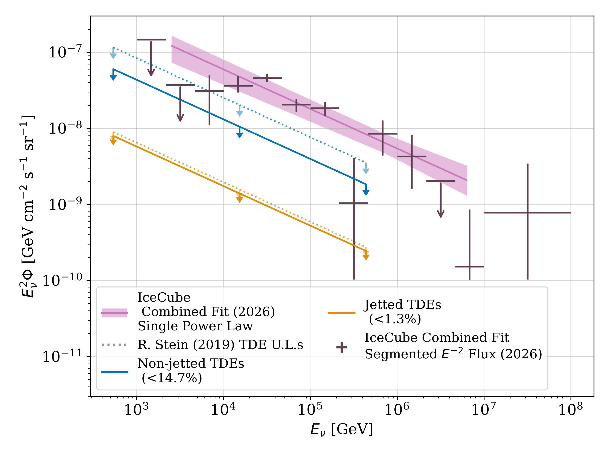
图注：\(\textbf{Diffuse flux contributions.}\) Limits on the per-flavor $\nu + \bar{\nu}$ contribution of jetted and non-jetted TDEs to the diffuse neutrino flux as a function of neutrino energy. The dashed lines show the comparison to previous analyses, recalculated to compare to the same diffuse flux, with that for jetted TDEs in orange and non-jetted TDEs in blue.
对应解读：建议重点查看的图表第6项“通量或弥散贡献上限图”；关键图表逐图导读图6；模型拟合段落中关于标准烛光假设下源族贡献上限的讨论。
入选理由：该图直接给出喷流型和非喷流型TDE对弥散中微子通量的上限，并与既往分析结果比较，是论文从“未探测到显著过量”转化为物理约束的核心结果图。它最能支撑日报中关于标准烛光、能谱假设和源族贡献比例不可过度外推的解读。
来源与置信度：\(arxiv_source\)；high；\(arxiv_source\) / main.tex:figure[3]
Fig01
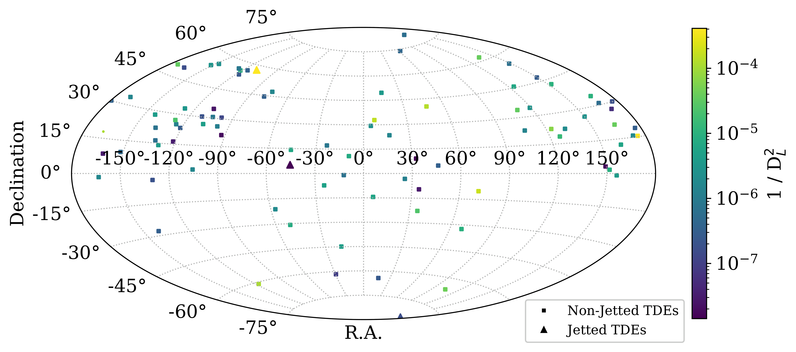
图注：\(\textbf{TDE Catalog.}\) Source distribution of UV/Optical and X-ray detected TDEs using Equatorial coordinates. The colorbar indicates the inverse square of the luminosity distance, $D_L$, of each source, which is used as the weighting scheme of the stacking search. The catalog consists of 3 on-axis jetted TDEs (triangles) and 86 non-jetted TDEs (squares).
对应解读：建议重点查看的图表第1项“样本天空分布图”；关键图表逐图导读图1；模型拟合段落中关于赤纬依赖、源权重和喷流/非喷流子样本的讨论。
入选理由：该图展示89个TDE在天球上的分布，并区分3个喷流型与86个非喷流型源，同时用颜色标出用于叠加搜索权重的 luminosity distance inverse-square。它直接对应IceCube灵敏度随赤纬变化和标准烛光距离加权这两个关键诊断，比单纯样本说明更能帮助读者理解叠加结果的物理含义。
来源与置信度：\(arxiv_source\)；high；\(arxiv_source\) / main.tex:figure[1]
Fig02
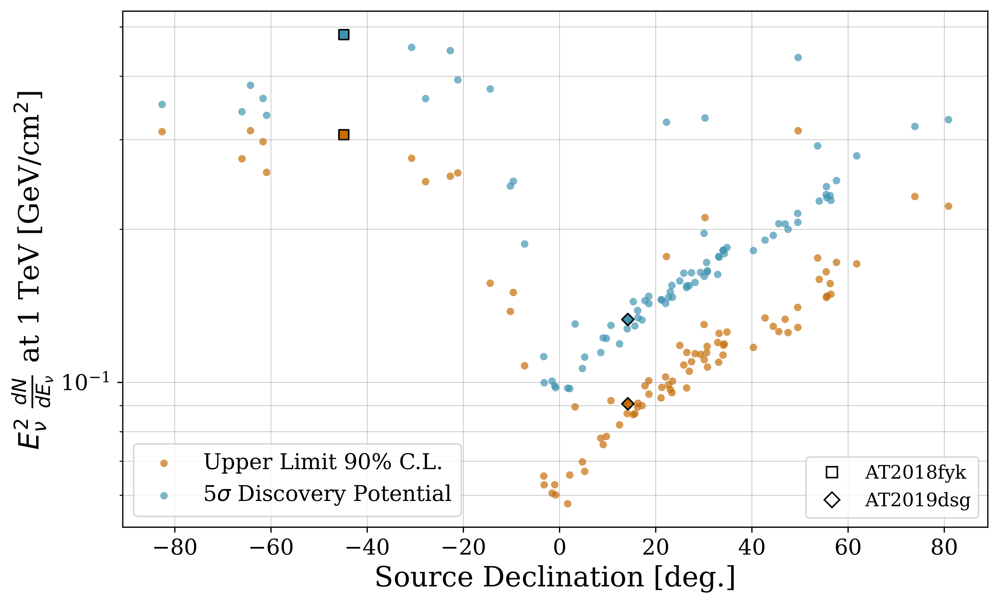
图注：\(\textbf{Per source upper limits.}\) The 90\% Confidence Level (C.L.) upper limits and median $5\sigma$ discovery potential (D.P.) of the time-integrated flux per TDE are shown, assuming an E$_\nu^{-2}$ spectrum and an expected neutrino emission window of 150 days and searching a maximum time window length of 1 year. $E_\nu^2dN/dE_\nu$ is the per-flavor time-integrated flux, with number of neutrinos ($N$) and neutrino energy ($E_\nu$), assuming a flavor ratio $(\nu_e:\nu_\mu:\nu_\tau )$ of 1:1:1. The locations of AT2019dsg and AT2018fyk are marked with a black square and black diamond outline, respectively, for reference.
对应解读：建议重点查看的图表第6项“通量或弥散贡献上限图”和第7项“注入恢复或灵敏度曲线”；模型拟合段落中关于逐源通量上限、发现潜力、时间窗和谱假设的讨论。
入选理由：该图给出每个TDE的90%置信上限和5σ发现潜力，明确采用E^-2能谱、150天预期发射窗口和最长1年搜索窗口。虽然它不是逐源p值或最显著候选时间窗图，但它是评估逐源非探测约束强弱、赤纬/暴露差异以及AT2019dsg、AT2018fyk等参考源位置的重要诊断图。
来源与置信度：\(arxiv_source\)；high；\(arxiv_source\) / main.tex:figure[2]
强相关工作
这篇文章直接处在“潮汐瓦解事件是否是 IceCube 高能中微子源”的研究线上。过去的关注点包括 AT2019dsg、AT2019fdr 等单个潮汐瓦解事件或潮汐瓦解事件候选体与 IceCube 高能事件的时空关联，也包括 Swift J1644+57 这类喷流型潮汐瓦解事件作为强子加速器的理论建模。本文与这些工作的关系是从单例关联转为样本统计检验；如果读者要追踪同类研究，可检索关键词 “IceCube tidal disruption event neutrino AT2019dsg”、“AT2019fdr IceCube”、“jetted TDE neutrino”、“Swift J1644+57 neutrino”。
基础理论上，相关工作包括潮汐瓦解事件回落率和吸积盘形成、喷流型潮汐瓦解事件的相对论外流观测、以及光强子中微子产生模型。相反或张力观点主要来自两方面：一是单个事件关联论文可能提示较高的潮汐瓦解事件中微子效率，二是源族堆叠非探测往往限制这种解释不能普遍适用于全部光学或 X 射线潮汐瓦解事件。建议检索 “TDE diffuse neutrino flux constraints”、“photohadronic neutrinos tidal disruption events”、“IceCube stacking search transients”。
同一事件 / 同类源线索：
- https://arxiv.org/abs/2609.00657
- https://icecube.wisc.edu/science/data/
- https://gcn.gsfc.nasa.gov/amon.html
相似工作：
基础理论 / 方法工作：
- https://ui.adsabs.harvard.edu/abs/1975Natur.254..295H/abstract
- https://ui.adsabs.harvard.edu/abs/1988Natur.333..523R/abstract
- https://ui.adsabs.harvard.edu/abs/2009ARA%26A..47...63K/abstract
- https://ui.adsabs.harvard.edu/abs/2011Natur.476..425B/abstract
相反观点 / 张力线索：
6. Reconstruction of anomalous air showers with SKA-Low
- 来源：arXiv / astro-ph.HE
- 链接：https://arxiv.org/abs/2609.01347v1
- 作者：Vital De Henau, Sjoerd Bouma, Justin Bray, Stijn Buitink, Arthur Corstanje, Edwin Dickinson, Tjibbe Gottmer, Brian Hare
- 评分：novelty 8/10，importance 7/10，relevance 9/10，final 9.00/10
- 推荐理由：面向SKA-Low的异常双峰广延大气簇射重建，直接关联超高能宇宙线成分和强子相互作用；方法和仪器意义明确，值得关注。
中文题目：用 SKA-Low 重建反常“双峰”广延大气簇射
做了什么：这篇文章讨论一种目前只在蒙特卡罗模拟中清楚出现、尚未被实验直接确认的广延大气簇射：纵向发展曲线有两个分离峰的“双峰簇射”。其物理来源是一次高能次级“领头粒子”比主簇射传播得更深，在大气中重新触发第二个电磁级联。作者研究 SKA-Low 的致密低频天线阵列能否从无线电脉冲的多脉冲结构和频谱干涉条纹中反推出两个发射峰的大气深度，并提出从简化两点发射模型到暴力搜索多参数重建的第一步方法。核心结论是：双峰簇射的无线电足迹不是普通簇射的轻微扰动，而有可被 SKA-Low 解析的时域和频域特征；这些特征可用于估计两个纵向峰的位置，为强子相互作用和宇宙线成分研究提供新诊断量。
为什么重要：超高能宇宙线的质量成分和强子相互作用模型仍受限于间接观测。传统的 \(X_{\max}\) 主要压缩了纵向发展的一阶信息，而双峰簇射直接暴露了高能强子碰撞中领头粒子输运、非弹性度和深层再相互作用的细节。如果 SKA-Low 能识别这类稀有事件，就等于把无线电探测从“测一个最大深度”推进到“解析纵向结构异常”。
理论 / 观测 / 仪器方法价值：方法价值在于把无线电信号中的相干叠加、到达时间差和频谱振荡转化为纵向发射结构的可反演量。对观测而言，它给 SKA-Low 的宇宙线科学提出了明确的事件级诊断：多脉冲、频谱条纹、天线位置相关相位结构。对理论而言，它提供了一个检验高能强子相互作用模型中罕见涨落的窗口。对仪器和分析而言，它强调宽频带、致密采样和纳秒级波形保真度的重要性。
为什么应该关注：如果你关心宇宙线成分、空气簇射模拟、无线电探测或 SKA-Low 的非成像科学，这篇文章值得看。它不是简单预测“SKA 会更灵敏”，而是指出一种只有高密度宽带阵列才可能重建的新物理量：簇射纵向剖面的多峰结构。即使双峰事件很少，它们也可能成为区分强子模型、识别初级粒子类型、验证簇射模拟尾部分布的高杠杆样本。
展开详细解读：文章讲解、背景、理论、重点章节、图表与相关工作
文章详细讲解
科学问题：广延大气簇射通常被近似看作一个沿簇射轴发展的单峰级联，核心参数是最大粒子数对应的大气深度 \(X_{\max}\)。但蒙特卡罗模拟预言，在少数高能事件中，一个高能次级粒子会携带相当大能量穿透到更深处，再产生第二个级联峰，形成纵向粒子数 \(N(X)\) 的双峰结构。问题是：这种反常结构是否能被地面实验直接识别？尤其是仅靠无线电阵列，能否不依赖荧光望远镜那样的纵向成像，重建两个峰的位置？
作者怎么做：论文先比较普通簇射和双峰簇射的无线电信号。无线电辐射主要来自地磁电流和 Askaryan 电荷过剩，因而纵向不同位置的发射会以不同传播时间抵达地面天线。若两个纵向峰相隔足够远，同一根天线波形中可出现多个脉冲；在频域中，来自两个发射区域的相干叠加会形成随频率振荡的干涉条纹。作者构建一个简化的两点发射模型，用两个等效发射点代表两个纵向峰，通过频谱条纹间距反推出两点到天线的传播时间差，再估计两个峰的大气深度。随后，他们又采用暴力搜索方法，在一组候选双峰参数上生成或比较预期信号，尝试同时重建多个纵向剖面参数。
关键结果：文章的中心结果是，双峰簇射的无线电足迹具有可辨认的、物理来源明确的特征，而不是简单的噪声或普通簇射形状涨落。时域中的多脉冲对应两个纵向发射区的几何延迟；频域中的干涉条纹则提供更稳健的定量信息，因为条纹间距近似由时间延迟控制。SKA-Low 的优势在于天线密度高、频率覆盖宽、波形采样充分，可以在不同核心距和方位角上同时观测这些相位与振幅结构，从而打破仅靠单个天线频谱所遇到的几何退化。
局限和下一步：这篇文章是“第一步”性质的方法论文，而不是实际探测报告。双峰簇射目前仍来自模拟预言，真实发生率依赖高能强子模型、初级成分和能量阈值。两点发射模型有意简化了连续纵向辐射、侧向粒子分布、折射率梯度和天线响应等复杂性；暴力搜索方法也可能在参数维数升高时计算代价很大。下一步需要把方法放入更完整的端到端模拟：包括真实 SKA-Low 阵列布局、触发、噪声、标定误差、天电背景、带通响应，以及与普通深发展簇射或偶然波形畸变之间的误判率比较。
关键结果是怎么做出来的
这篇文章的证据链从模拟样本中的“双峰纵向剖面”开始。作者关注的不是所有宇宙线事件，而是蒙特卡罗中出现明显双峰 \(N(X)\) 或能量沉积分布的反常空气簇射。样本选择的关键条件是：第一峰和第二峰在大气深度上分离足够大，使得无线电发射的传播时间差不被单峰簇射本身的脉冲宽度完全淹没；第二峰还必须携带足够能量，否则频谱干涉或第二脉冲会被噪声、带宽限制和主峰旁瓣掩盖。
最重要的观测量不是单个 \(X_{\max}\)，而是两个等效发射区之间的延迟 \(\Delta t\) 以及由它导致的频谱振荡周期 \(\Delta f\)。作者先在波形层面说明：普通簇射通常给出一个主无线电脉冲，其宽度和形状受观察角、Cherenkov 压缩、地磁方向和电荷过剩贡献控制；双峰簇射则可能在同一观测点出现两个分离脉冲，或者在脉冲未完全分离时表现为频谱中的准周期干涉。支撑这一点的图应当是普通簇射与双峰簇射在同一阵列位置的时域波形、功率谱或频谱比值对比。
统计和重建部分的核心是模型比较，而不是简单肉眼找两个峰。两点发射模型把两个纵向峰近似为两个相干源，预测频谱中会出现由 \(\cos(2\pi f\Delta t)\) 控制的调制。若在多根天线中测得的条纹间距和相位随位置变化与同一对纵向深度一致，就支持双峰解释。暴力搜索方法则把候选参数网格逐一与模拟或观测波形比较，最自然的诊断量是残差平方和、频域似然或归一化相关系数。读者应重点看作者是否展示了重建参数与真实模拟输入之间的一致性，以及误差是否随峰间距、第二峰相对强度和天线位置而系统变化。
显著性在这类工作中通常来自两层：第一是双峰模型相对单峰模型是否显著改善波形或频谱拟合；第二是重建出的两个峰是否与模拟纵向剖面的真实峰深度一致。即便论文主要是方法展示，仍应检查它有没有给出误差分布、失败案例、参数扫描图或残差图。尤其要看单峰深发展簇射、噪声叠加、仪器带通起伏是否能伪造类似干涉条纹；如果没有充分量化误判率，那么结论应理解为“SKA-Low 具备潜在可行性”，而非“已经给出最终探测灵敏度”。
系统误差方面，最关键的是大气折射率模型、天线增益和相位标定、背景噪声、强子模型对双峰发生率和形态的影响，以及简化两点模型与真实连续辐射源之间的偏差。稳健性检验应包括改变频带范围、剔除部分天线、加入真实噪声、改变核心位置和入射方向、比较不同初级粒子和不同 hadronic interaction model 的模拟。如果这些检验显示峰深度估计仍稳定，本文方法才可进一步发展为 SKA-Low 的实际事件分类器。
展开背景、理论、公式、模型、章节和图表导读
背景知识
广延大气簇射是高能宇宙线进入大气后产生的粒子级联。对能量高于直接探测范围的宇宙线，地面实验只能通过次级粒子、荧光光、Cherenkov 光或无线电辐射间接推断初级粒子的能量、方向和质量。传统上，纵向发展曲线的最大深度 \(X_{\max}\) 是最重要的成分指标：轻核如质子平均发展更深，重核如铁平均更早达到最大值。
历史问题在于，\(X_{\max}\) 本身并不是纯成分观测量。它同时依赖初级质量、第一相互作用深度、强子碰撞截面、非弹性度、多重数和电磁能量分配。不同强子相互作用模型会给出不同的 \(X_{\max}\) 分布和涨落。因此，只测单一最大深度会把许多物理压缩到一个数里，尤其难以诊断尾部分布和稀有拓扑。
双峰簇射正是这种尾部物理的极端例子。在一次高能强子碰撞后，如果某个领头粒子带走大量能量并在大气中传播很长距离，它可在更深处再产生一个显著次级簇射峰。这样的事件对非弹性度和 leading particle spectrum 很敏感。它们未必常见，但信息量很高，因为两个峰的相对深度和强度直接反映了能量如何在早期强子级联中被分配。
为什么现在值得重新看？无线电探测过去常被看作能量和 \(X_{\max}\) 的补充技术，但 LOFAR 等致密阵列已经证明，无线电足迹包含丰富的三维簇射信息。SKA-Low 的天线密度、宽频带和数字波束形成能力更进一步，使得纳秒级波形细节和频谱相干结构可被系统利用。双峰簇射需要的正是这种高采样密度，而非稀疏阵列的单点幅度测量。
该领域一个常见误区是把无线电足迹理解成某个“发光点”的简单投影。实际上，无线电信号来自沿簇射轴连续分布的电流和电荷过剩，其到达时间、偏振和频谱受几何、折射率、Cherenkov 压缩和天线响应共同影响。另一个误区是认为双脉冲一定就是双峰簇射；仪器带通、反射、脉冲重叠、噪声瞬变也可能产生复杂波形，因此必须依赖多天线一致的几何重建和模型比较。
基础理论 / 方法脉络
基础物理图像是：高能宇宙线在大气中触发级联，带电粒子在地磁场中发生横向漂移，形成随时间变化的横向电流；同时，电子俘获和正负电荷不对称导致负电荷过剩。这两个机制都会产生相干无线电辐射，在几十到数百兆赫兹频段尤为重要。当地面天线接收信号时，它看到的是沿簇射轴许多发射区域的相干叠加，而不是某一瞬时点源。
普通簇射的纵向粒子数 \(N(X)\) 通常近似为单峰函数，峰值深度是 \(X_{\max}\)。双峰簇射可理解为两个部分级联的叠加：第一个来自常规主级联，第二个来自深穿透领头粒子的后续相互作用。若两个峰在几何高度上相距较大，它们到同一根天线的光程不同，接收时间差 \(\Delta t\) 就可能达到可观测量级。
本文使用的两点模型把连续发射区压缩为两个等效源。这个近似不会完整描述真实无线电辐射，但能抓住频谱干涉的主导尺度：两个相干脉冲相加时，频域功率会随频率呈现振荡，振荡周期约为 \(1/\Delta t\)。因此，频谱条纹可作为两个发射峰几何分离的代理量，再结合入射方向、大气密度模型和天线位置估计两个大气深度。
SKA-Low 的关键优势来自三个方面。第一，致密阵列可以在不同侧向距离和方位角上采样同一事件，区分真实几何相干结构和单天线偶然谱纹。第二，较宽频率覆盖提高对干涉周期的分辨能力；若频带太窄，只能看到不到一个振荡周期，反演会严重退化。第三，精确相位和时间标定允许在时域直接比较多脉冲结构。
主要退化关系包括：峰间距与入射几何之间的退化、第二峰强度与噪声水平之间的退化、连续发射宽度与两点模型延迟之间的退化，以及大气折射率不确定性与重建深度之间的系统偏差。选择效应也很重要：只有峰间距足够大、第二峰足够亮、落入合适几何和频带窗口的事件才容易被识别，因此观测到的双峰样本不一定代表所有双峰簇射的真实分布。
公式与推导
第一步从纵向级联量开始。普通单峰簇射常用 Gaisser-Hillas 形式描述粒子数随大气深度的演化：
这里 \(X\) 是沿簇射轴的大气深度，\(X_0\) 是有效起始深度，\(\lambda\) 控制级联增长和衰减尺度，\(N_{\max}\) 是最大粒子数。这个公式给出传统 \(X_{\max}\) 分析的基线。
双峰簇射可在最低阶近似下写成两个纵向分量之和：
其中下标 \(1\) 与 \(2\) 分别代表浅层主峰和深层第二峰。本文两点发射模型进一步把每个分量的无线电贡献近似集中到等效发射位置 \(\mathbf{r}_1\) 和 \(\mathbf{r}_2\)。
对位于 \(\mathbf{r}_{\rm ant}\) 的天线，第 \(i\) 个等效发射点的传播时间可写为
其中 \(t_{{\rm em},i}\) 是发射时刻，\(n(s)\) 是沿路径的空气折射率，\(c\) 是真空光速。若忽略小尺度折射率变化，可用有效折射率 \(n_{\rm eff}\) 近似光程。
两个脉冲的关键可观测量是到达时间差：
这里 \(\Delta t_{\rm em}\) 包含簇射前沿沿轴传播导致的发射时刻差。这个式子说明，\(\Delta t\) 同时编码纵向峰间距、观测角和天线位置。
若两部分电场在频域分别为 \(\tilde{E}_1(f)\) 和 \(\tilde{E}_2(f)\)，相干叠加为
其中 \(A_i(f)\) 包括源强、偏振投影、传播衰减和天线响应。双峰信号的频谱结构来自两个相位因子的差。
对应功率谱为
若 \(A_1(f)\) 和 \(A_2(f)\) 随频率变化较慢，振荡周期满足
这就是本文简化反演的核心：从频谱条纹间距估计传播时间差。
把几何高度 \(h\) 转为大气深度需要大气密度模型：
这里 (\
ho(h')) 是大气密度，\(\theta_{\rm eff}\) 是近似有效天顶角。由几何重建得到的两个等效高度 \(h_1\) 和 \(h_2\) 可转化为 \(X_{\max,1}\) 和 \(X_{\max,2}\)。
实际拟合可用频域残差构造似然，例如
这里 \(a\) 标记天线，\(f\) 标记频率通道，\(\boldsymbol{\Theta}\) 包含两个峰深度、相对强度、方向、核心位置等参数，\(\sigma_{a,f}\) 表示噪声和标定不确定性。
检验双峰模型是否优于单峰模型可用似然比统计量：
若系统误差受控，较大的 \(\Delta {\rm TS}\) 表明双峰模型对多天线波形和频谱的解释能力显著更强。但由于双峰参数常处在边界或非线性区域，显著性最好用模拟伪实验标定，而不能机械套用简单的 \(\chi^2\) 渐近分布。
模型拟合 / 应用方法
本文涉及两层拟合。第一层是简化两点模型的反演：从每根天线的频谱振荡间距估计 \(\Delta t\)，再结合已知或拟合的入射方向、核心位置和大气模型，把 \(\Delta t\) 映射到两个等效发射深度。这个过程的拟合量包括条纹周期、相位、相对振幅以及它们随天线位置的变化。其优点是物理透明，缺点是把连续发射区压缩成两个点，容易在峰较宽或两个峰不完全分离时产生偏差。
第二层是暴力搜索或模板拟合。给定候选参数 \(\boldsymbol{\Theta}\)，模型可预测多天线时域波形或频域复电场，然后用残差、相关系数或似然评价与数据的一致性。参数通常至少包括 \(X_{\max,1}\)、\(X_{\max,2}\)、两个峰的相对强度、簇射能量、到达方向、核心位置，可能还包括发射宽度或经验形状参数。暴力搜索的好处是不容易陷入梯度方法的局部极值，坏处是维数高时计算量迅速膨胀。
拟合诊断不能只看最佳拟合曲线。应检查时域残差是否在两个脉冲附近系统偏正或偏负，频域残差是否保留周期性条纹，多天线之间的最佳 \(\Delta t\) 是否给出一致几何。若只有少数天线支持双峰，而其他天线不支持，可能是局部噪声、天线响应异常或模拟模板不完整。若单峰模型能通过调整 \(X_{\max}\)、能量和核心位置吸收大部分残差，则双峰解释的证据会变弱。
主要参数退化包括峰间距与观察角的退化、第二峰强度与电场归一化的退化、峰宽与时间延迟的退化、天线带通相位误差与物理相位差的退化。尤其在频带有限时，\(\Delta f\) 的估计会受到窗函数和噪声影响；如果只观测到半个或一个振荡周期，多个 \(\Delta t\) 值可能都能拟合数据。
系统误差来自强子模型、端到端电磁模拟、大气折射率剖面、地面条件、天线方向图、相位标定和背景噪声。实际应用中，最好用大量单峰和双峰模拟建立分类器的混淆矩阵，给出误判率和漏检率。对真实 SKA-Low 数据，还需要把天文背景、射频干扰剔除、触发偏置和阵列可用天线状态纳入似然或后验，而不是只在理想波形上重建。
重点章节 / 结果段落怎么读
数据/模拟与物理目标部分：读者应先确认作者如何定义“双峰簇射”。关键不是名称，而是纵向剖面中两个峰的分离度、相对能量和是否由领头粒子机制产生。还要看模拟使用的能量范围、初级粒子类型、入射角和强子模型，因为这些选择会影响双峰事件的形态和发生率。
无线电信号特征部分：这一节应重点读普通簇射与双峰簇射的时域波形和频谱对比。要判断多脉冲是否随天线位置表现出一致几何延迟，频谱条纹是否与两个发射区相干叠加相符，而不是仅在某个位置偶然出现。
两点发射模型部分：这是文章最物理直观的方法段。读者应关注模型假设：两个纵向峰是否可近似为点源，振幅是否可慢变处理，空气折射率如何近似，如何由条纹间距反推 \(\Delta t\)。这一节的价值在于给出可解释的标尺，即频谱振荡周期与峰间几何分离之间的关系。
暴力搜索重建部分：这一节展示从启发式估计走向多参数拟合。读者应看参数网格、目标函数、输入数据形式是时域还是频域、是否联合多天线，以及重建结果如何与模拟真值比较。特别要看失败案例和误差随双峰形态变化的趋势。
讨论与展望部分：这里应关注作者对 SKA-Low 实际观测条件的判断，包括带宽、天线密度、噪声和标定要求。也要看他们是否明确区分“可在模拟中重建”与“可在真实数据中可靠发现”，以及下一步需要哪些端到端仿真和事件分类工作。
建议重点查看的图表
-
普通簇射与双峰簇射的纵向剖面对比图：看横轴 \(X\)，纵轴粒子数或能量沉积，两个峰的深度间隔和相对高度是否足够大。
-
单天线或多天线时域波形图：看双峰事件是否出现两个可分辨脉冲，脉冲间隔是否随天线位置按几何规律变化，而不是随机变化。
-
频谱或功率谱图：看是否有近似周期性干涉条纹，条纹间距是否能用 \(\Delta f\simeq 1/\Delta t\) 解释，频带边缘是否受仪器响应影响。
-
两点模型示意或反演结果图：看由条纹间距推得的两个发射深度是否接近模拟真值，误差条是否随天线位置一致。
-
暴力搜索参数空间图：看似然、残差或评分函数在 \(X_{\max,1}\) 与 \(X_{\max,2}\) 平面上是否有清晰最小值，是否存在多个局部解。
-
重建值与真值对比或残差分布图：看偏差、散布和离群点，特别是第二峰较弱或峰间距较小时的失败模式。
-
稳健性诊断图：如果有，检查加入噪声、改变频带、减少天线数量或改变模型假设后，重建深度和双峰判别量是否稳定。
关键图表逐图导读
图 1：通常应是双峰簇射物理图像或纵向剖面对比。横轴应为大气深度 \(X\)，纵轴为带电粒子数、能量沉积或归一化发射强度。普通簇射曲线应只有一个主峰，双峰曲线应有两个分离峰。读图时不要只看第二峰是否存在，还要看两个峰的间距和第二峰相对强度；这决定无线电信号中能否形成可分辨延迟。
图 2：应重点看时域电场波形。横轴为到达时间，纵轴为某一偏振方向的电场或归一化电场。双峰模型若正确，应在部分天线中产生两个脉冲或展宽畸变的脉冲。陷阱是带通滤波会产生振铃，不能把所有双峰样波形都解释为物理双峰；必须结合多天线相干变化。
图 3：频谱图是本文最关键的诊断之一。横轴为频率，纵轴为电场幅度、功率谱或谱比值。两个发射峰相干叠加会产生周期性起伏，模型线应能追踪条纹间距。读图时要注意频带边缘、天线响应零点和噪声底，因为它们也会制造假起伏。
图 4：两点模型反演图应展示 \(\Delta f\)、\(\Delta t\) 或推得的发射深度随天线位置的变化。若模型有物理意义，不同天线给出的几何解应收敛到同一组 \(X_{\max,1}\) 和 \(X_{\max,2}\)。若点云分散很大，说明两点近似、噪声或几何退化还未被充分控制。
图 5：暴力搜索或似然面图应在 \(X_{\max,1}\)-\(X_{\max,2}\) 或类似参数平面上显示残差最小区。清晰、孤立的最小值支持可重建性；长条形谷底说明参数退化；多个相似极小值说明仅靠当前数据很难唯一确定双峰结构。
图 6：重建与真值比较图若存在，应看点是否沿一比一直线分布，误差是否随峰间距、入射角或第二峰强度系统变大。读者不要只看平均误差，还要看离群失败案例，因为真实观测中最危险的是把普通簇射误判为双峰或把双峰的第二峰位置重建错。
论文原图 / 可嵌入图片
Fig03
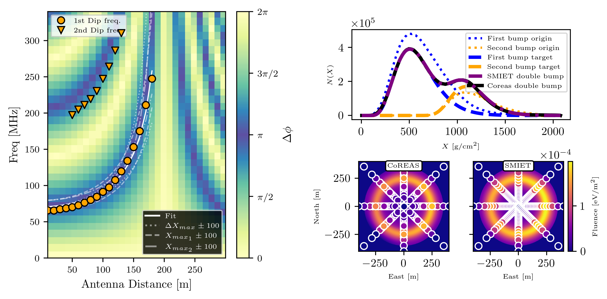
图注：Left:Double-bump reconstruction plot. The background colours indicate the relative phase of the radio signals from the two sub-showers based on the point-source model for different observer positions and frequencies. The orange crosses are the first interference minima found in the spectra of simulated waveforms. The white line is a fit of the data to the point-source model. Additional model lines are shown for reference in grey, they have shifted ($\pm 100$\,g/cm$^2$ $\Delta X_{\rm max}/X_{\rm max_1}/X_{\rm max_2}$) values in order to show the effect of these parameters on the curve.\ Right: Top: the longitudinal profiles for the origin showers (dotted), the target showers (dashed) and the summed artificial \(\emph{double-bump}\) shower compared to the actual \(\emph{double-bump}\) shower (full). Bottom Left/Right: The simulated radio fluence signal of the CoREAS/SMIET \(\emph{double-bump}\) shower in each antenna with the interpolated radio fluence as the background.
对应解读：对应“建议重点查看的图表”第4项两点模型反演结果、第5项暴力/模板重建前的诊断，以及“关键图表逐图导读”图4关于干涉极小值、模型线和发射深度反演的内容。
入选理由：这张图直接展示双峰重建的核心诊断：背景相位图、模拟频谱中找到的第一干涉极小值、白色点源模型拟合线以及灰色参数偏移参考线，可检验条纹几何是否真的约束两个发射深度。右侧还同时给出纵向剖面和无线电足迹，对连接粒子级双峰结构与观测量最有帮助。
来源与置信度：\(arxiv_source\)；high；\(arxiv_source\) / main.tex:figure[3]
Fig04
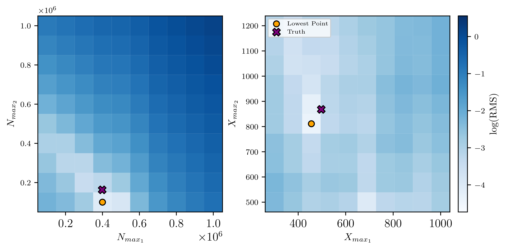
图注：Heatmap showing the log(RMS) comparing the actual double-bump to the SMIET double-bump showers for a range of parameters. On the x and y axis two parameters are shown while the other parameters are kept constant (closest value to the truth).
对应解读：对应“建议重点查看的图表”第5项暴力搜索参数空间图，以及“模型拟合”中关于用log(RMS)、残差或评分函数在多参数空间寻找最佳双峰参数的段落。
入选理由：该图是最直接的参数搜索/拟合诊断图，用热图显示实际双峰与SMIET双峰模板在不同参数组合下的log(RMS)。它能判断最小值是否清晰、是否存在退化谷或多个局部解，是评估多参数重建可靠性的关键图。
来源与置信度：\(arxiv_source\)；high；\(arxiv_source\) / main.tex:figure[4]
Fig01
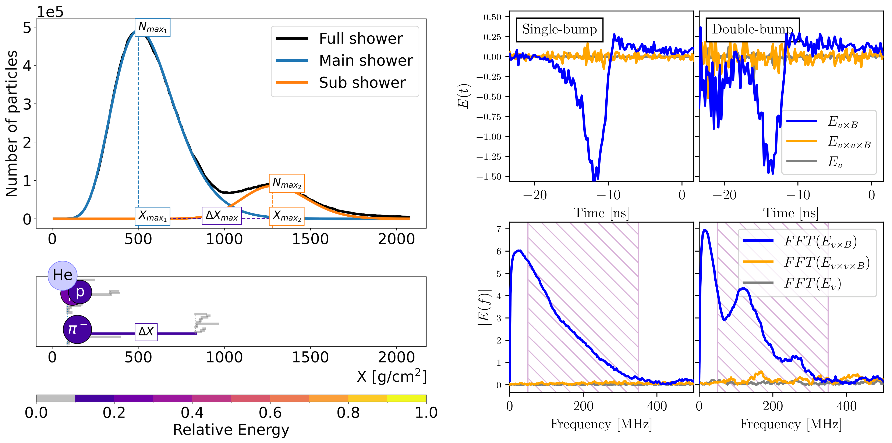
图注：Left: Longitudinal profile of a \(\emph{double-bump}\) shower showing the path travelled by all particles with more than $1\%$ of the primary's energy. The sub-bump is caused by a negatively charged pion penetrating deeply into the atmosphere. The relevant quantities to reconstruct on the particle and longitudinal levels are indicated. \ Right: Signal pulse (top) and amplitude spectrum (bottom) of an average shower (left) and double-bump shower (right) at $10\,\text{m}$ from the core, with the SKA-Low bandwidth shown.
对应解读：对应“建议重点查看的图表”第1项纵向剖面对比、第2项时域波形、第3项频谱图，以及“关键图表逐图导读”图1、图2、图3的基础物理图像。
入选理由：这张图把双峰簇射的纵向剖面、普通簇射与双峰簇射的时域脉冲和振幅谱放在一起，能最直观说明为什么深穿透先导粒子会造成第二级联峰，以及这种结构如何在SKA-Low频带内表现为波形差异和频谱结构。
来源与置信度：\(arxiv_source\)；high；\(arxiv_source\) / main.tex:figure[1]
Fig02
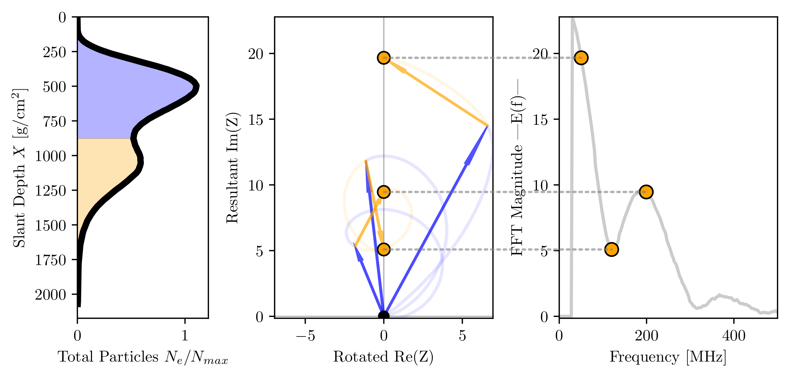
图注：Left: the longitudinal profile of the sliced double-bump shower where the blue area indicates the slices from the first bump while the secondary bump is coloured in orange. Middle: the phasor diagram shows the for $3$ different frequencies where the phasor is rotated such that the magnitude always lies along the y-axis. The curved path indicates all the phases added together from each slice, while the arrows are the sum of all the phases from the main bump (blue) or the secondary bump (orange). Right: The frequency spectra for an antenna at a distance of $\sim 150$\,m from the core.
对应解读：对应“建议重点查看的图表”第3项频谱或功率谱图、第4项两点模型示意，以及“模型拟合”中关于相位、相对振幅和频谱振荡条纹的解释。
入选理由：该图通过切片后的双峰纵向剖面、不同频率的相量图和约150 m天线处的频谱，解释连续发射区如何相干叠加成频域干涉条纹。它比单纯波形图更适合支撑两点模型的物理直觉，但重建结果不如Fig03和Fig04直接。
来源与置信度：\(arxiv_source\)；high；\(arxiv_source\) / main.tex:figure[2]
强相关工作
这项工作与 LOFAR、AERA、Tunka-Rex、CODALEMA 等无线电空气簇射研究处在同一技术谱系中，但目标更进一步：传统无线电重建主要集中在能量、方向和 \(X_{\max}\)，而本文关注纵向剖面的反常多峰结构。建议检索关键词包括 “radio detection extensive air showers \(X_{\max}\)”, “LOFAR cosmic ray radio \(X_{\max}\)”, “CoREAS air shower radio emission”, “SKA-Low cosmic rays”。
在理论上，本文与强子相互作用模型、领头粒子效应、非弹性度涨落和空气簇射纵向剖面尾部分布有关。相反或需要警惕的观点不是否认双峰模拟存在，而是质疑它们在真实数据中是否足够常见、是否能与仪器效应和普通簇射涨落可靠区分。建议检索 “double-bump air showers”, “leading particle extensive air shower”, “hadronic interaction models cosmic ray air showers”, “Gaisser-Hillas profile fluctuations”。
由于本文讨论的是一类模拟预言现象而非某个已命名事件，没有同一事件论文；相关上下文应归为同类源/同类方法、仪器前景、基础理论和历史原型。读者可从本文 arXiv 页面出发追踪引用和参考文献，尤其关注 SKA cosmic-ray science、LOFAR 高精度 \(X_{\max}\) 重建和 CoREAS/ZHAireS 无线电模拟的文献链。
同一事件 / 同类源线索：
相似工作：
（未提供）
基础理论 / 方法工作：
（未提供）
相反观点 / 张力线索：
（未提供）
7. A NICER view of PSR J1614$-$2230: a massive and compact millisecond pulsar
- 来源：arXiv / astro-ph.HE
- 链接：https://arxiv.org/abs/2609.00172v1
- 作者：Lucien Mauviard, Sebastien Guillot, Lami Suleiman, Yves Kini, Denis González-Caniulef, Christine Kazantsev, Pierre Stammler, Devarshi Choudhury
- 评分：novelty 8/10，importance 8/10，relevance 8/10，final 9.00/10
- 推荐理由：Reports a new NICER/XMM/Chandra radius measurement for the massive pulsar PSR J1614-2230, giving meaningful constraints on compactness and dense-matter EOS; solid HE compact-object relevance.
中文题目：NICER 视角下的 PSR J1614−2230：一颗质量很大、半径偏小的毫秒脉冲星
做了什么：这篇文章用 NICER 的 X 射线脉冲轮廓，结合 XMM-Newton 和 Chandra 数据，对毫秒脉冲星 PSR J1614−2230 做质量—半径测量。作者采用两个圆形热斑的表面热辐射模型，并把已由射电脉冲星计时精确测得的高质量信息纳入贝叶斯推断，得到赤道半径 \(R_{\rm eq}=10.06^{+1.25}_{-0.87}\,\mathrm{km}\)，引力质量 \(M=1.937^{+0.012}_{-0.013}\,M_\odot\)。这颗星的重要性在于它接近 \(2\,M_\odot\)，而半径后验整体偏向 \(\lesssim 12\,\mathrm{km}\)，因此对高密度物质状态方程很有约束力。文章也重新检查了此前声称的高能非热成分，未在相位平均或相位分辨谱中找到明确证据。
为什么重要：PSR J1614−2230 是射电计时确认的第二大质量毫秒脉冲星之一，质量几乎固定在 \(2\,M_\odot\) 附近。若这类高质量中子星的半径确实只有约 \(10\,\mathrm{km}\)，就会明显压缩核物质状态方程的允许空间：状态方程必须足够硬以支撑 \(2\,M_\odot\)，又不能在 \(1.9\,M_\odot\) 附近给出过大的半径。这正是核物理、引力波和 X 射线脉冲轮廓三类约束交汇的位置。
理论 / 观测 / 仪器方法价值：本文的价值不只是给出一个半径数值，还在于展示了低信噪比 NICER 脉冲轮廓如何与外部精确质量先验、跨任务能谱数据、热斑几何和大质量快速自转星的形变关系一起建模。它检验了两热斑模型、不同大气模型和几何配置对半径后验的影响，并提醒读者：当前半径约束主要受 X 射线脉冲显著性和几何退化限制，而质量后验几乎由射电计时主导。
为什么应该关注：如果你关注中子星状态方程，这篇文章给的是一个很有分量的高质量端半径锚点；如果你做 X 射线脉冲轮廓建模，它是一个低计数、弱脉冲但外部质量先验极强的案例；如果你关心 NICER 系统误差，它说明在源信号只有约 \(8.5\sigma\) 脉冲显著性时，几何和背景处理如何影响半径推断。应关注的不是单个最佳半径，而是所有测试模型都倾向较小半径这一趋势及其稳健性。
展开详细解读：文章讲解、背景、理论、重点章节、图表与相关工作
文章详细讲解
科学问题：本文要回答的是，一颗已知质量接近 \(2\,M_\odot\) 的毫秒脉冲星 PSR J1614−2230 的半径到底有多大。质量由射电脉冲星计时和 Shapiro 延迟早已给出高精度约束，但半径需要通过 X 射线热脉冲轮廓建模获得。这个问题之所以尖锐，是因为高质量中子星的半径直接测试高密度状态方程在数倍核饱和密度处的压强。如果 \(M\simeq1.94\,M_\odot\) 且 \(R\sim10\,\mathrm{km}\)，许多在高质量端给出较大半径的模型会受到压力。
作者怎么做：作者使用 NICER 的软 X 射线事件数据作为脉冲轮廓信息来源，并结合 XMM-Newton 与 Chandra 的成像和能谱约束来处理源通量、背景以及可能的混杂源。核心方法是脉冲轮廓建模：假设中子星表面有两个圆形热斑，热斑辐射经由强引力光线弯曲、特殊相对论多普勒效应、时间延迟和自转导致的椭率修正后到达探测器。作者还使用针对 PSR J1614−2230 自转频率定制的紧致度—扁率和表面重力关系，而不是把星体简单看作严格球形。
关键结果：最终结果给出赤道半径 \(R_{\rm eq}=10.06^{+1.25}_{-0.87}\,\mathrm{km}\)，质量 \(M=1.937^{+0.012}_{-0.013}\,M_\odot\)，置信区间为等尾 \(68\%\) 可信区间。需要强调的是，质量后验非常窄主要来自射电计时先验，而半径后验来自 X 射线脉冲轮廓。作者报告所有数据都可由两个圆形热斑的简单模型描述，其中一个热斑靠近自转极，另一个更接近赤道。虽然早期研究曾提示较高能段存在非热成分，本文在相位平均和相位分辨谱中都没有找到支持该非热分量的证据。
局限和下一步：半径约束并不如 PSR J0030+0451 或 PSR J0740+6620 等高质量 NICER 目标那样有力，主要原因是源信号弱，X 射线脉冲显著性只有约 \(8.5\sigma\)。热斑几何、大气辐射图样、背景建模、交叉定标和相位连接都会影响半径后验。下一步值得做的是更长 NICER 曝光、更精细背景和污染源处理、与未来 X 射线偏振或更大有效面积任务联合，以及在状态方程层面把该半径后验与引力波事件、其他 NICER 半径和核实验约束做一致性分析。
关键结果是怎么做出来的
数据和样本选择方面，本文围绕单个命名源 PSR J1614−2230 展开。这不是大样本统计论文，而是对一颗质量已知极精确的毫秒脉冲星做深度个源建模。NICER 提供非成像但高时间分辨率的软 X 射线事件，用来折叠出脉冲轮廓；XMM-Newton 和 Chandra 提供成像、能谱和邻近源信息，用来约束相位平均通量、背景成分以及是否存在额外非热辐射。事件选择的关键不是源个数，而是保留稳定的好时间区间、合适能段和可靠相位标定后，脉冲信号是否足以支撑几何推断。
最重要的统计事实是 X 射线脉冲显著性约为 \(8.5\sigma\)。这说明脉冲轮廓是真实可检出的，但还没有强到能独立打破所有几何退化。半径后验因此比质量后验宽得多。质量 \(M=1.937^{+0.012}_{-0.013}\,M_\odot\) 基本由射电计时先验钉住，X 射线数据主要通过脉冲振幅、相位结构、能谱硬度和热斑可见性来约束 \(R_{\rm eq}\)、热斑位置、热斑大小、温度和视线倾角。
模型比较和似然链条集中在两热斑热辐射模型是否足以解释数据。作者发现两个圆形热斑模型已经能同时描述 NICER 脉冲轮廓和 XMM-Newton、Chandra 谱信息。尤其值得注意的是，此前文献中提过的高能非热成分在本文的相位平均谱和相位分辨谱里都没有显著需求。这意味着加入幂律成分不会明显改善似然，或者其归一化后验与零相容；从半径测量角度看，这减少了把热光子误归为非热尾、从而偏置热斑温度和面积的风险。
支撑结论的图表应包括：折叠后的 NICER 脉冲轮廓及最佳拟合模型、相位平均 X 射线谱及残差、关键参数的后验角图、不同几何或大气模型下的 \(M\)–\(R_{\rm eq}\) 后验比较、以及热斑在星面上的位置示意。最关键的读法是看模型是否同时拟合脉冲形状和能谱，而不是只看 \(R_{\rm eq}\) 的一维后验峰值。如果残差集中在特定能段或相位，可能暗示背景、非热成分或热斑形状假设不足。
稳健性方面，作者强调在测试过的几何和大气模型中，半径后验都倾向低值，所有情形的 \(90\%\) 分位大致不超过 \(12.08\,\mathrm{km}\)。这比单个模型的中位数更有物理意义：即使考虑模型变体，数据仍偏好紧致星。主要系统误差来自 NICER 背景、低源计数、热斑形状简化、氢大气辐射束形、距离或吸收柱密度约束、交叉定标以及快速自转星的形变近似。
展开背景、理论、公式、模型、章节和图表导读
背景知识
PSR J1614−2230 是一颗毫秒脉冲星，早因高精度射电计时测得接近 \(2\,M_\odot\) 的质量而成为中子星状态方程研究中的标志性对象。它的高质量最初改变了人们对软状态方程、奇异物质或强相变模型的容忍度：任何可行状态方程都必须至少支撑约 \(2\,M_\odot\) 的非旋转或慢旋中子星。质量约束本身已经强，但质量单独不能告诉我们半径和压强曲线的细节。
中子星半径长期难测，因为观测到的是经过引力红移、光线弯曲、星际吸收、仪器响应和表面辐射图样共同处理后的光子。传统的热谱半径测量常受距离、大气组成、发射面积和吸收柱密度退化影响。NICER 的优势是提供高时间分辨率的软 X 射线光子，可以利用自转调制的脉冲轮廓来同时约束紧致度和发射几何。
PSR J1614−2230 现在值得重新看的原因有三点。第一，NICER 已经用类似方法对 PSR J0030+0451、PSR J0740+6620 等源给出半径约束，方法学逐渐成熟。第二，高质量端半径信息对状态方程特别敏感，可与引力波双中子星并合给出的潮汐形变约束互补。第三，XMM-Newton 和 Chandra 的辅助数据可以帮助处理 NICER 非成像带来的背景和污染源问题。
该领域常见误区之一是把 X 射线脉冲轮廓测得的半径当作纯几何量。实际上它强烈依赖辐射模型、热斑形状、表面重力、自转形变和背景模型。另一个误区是认为高质量加小半径必然直接证明某种相变；更谨慎的说法是，它会偏好在中等密度较软、在更高密度又足够硬的压强曲线，但具体解释需要把完整后验输入状态方程推断，而不是只比较一个半径中位数。
基础理论 / 方法脉络
基本物理图像是：旋转中子星表面有局部热斑，热斑可能由磁层回流粒子加热形成。随着恒星自转，热斑相对观测者的投影面积、视角、相对论多普勒增强和光行时延迟不断变化，导致 X 射线光变曲线出现脉冲。星体越紧致，即 \(GM/(Rc^2)\) 越大，引力光线弯曲越强，背面更多区域可见，脉冲振幅通常被抹平。因此脉冲轮廓携带了质量—半径信息。
本文使用的是热斑大气辐射模型，而不只是黑体。氢大气的角分布和能谱硬化会改变同样温度与面积下的观测光谱。观测到的能量和通量还受到引力红移影响；表面温度、热斑角半径、距离、吸收柱密度与仪器有效面积共同决定相位平均谱，而热斑纬度、观测倾角和半径决定脉冲形状。
对毫秒脉冲星还必须考虑自转。PSR J1614−2230 的自转足以让星体偏离球形，赤道半径与极半径不同，表面重力随纬度变化。本文采用针对该自转频率的新关系，把紧致度与扁率、表面重力联系起来。这类近似在计算效率和物理真实性之间折中：它比球形 Schwarzschild 加 Doppler 近似更贴近快速自转星，但仍不是每一步都直接求解完整数值相对论星体。
观测统计上，NICER 数据是带能量、到达时间和相位标签的光子计数。模型要预测每个能道和相位箱中的期望计数，再与实际计数比较。XMM-Newton 和 Chandra 的作用是约束相位平均谱、背景和邻近源，而射电计时给出精确质量先验。主要退化包括：热斑靠近极区与小倾角都可降低调制，较大半径与不同热斑面积可部分补偿通量，非热尾与高温小热斑在高能端可能混淆，背景归一化与弱源通量也会耦合。
公式与推导
第一步从紧致度开始。对质量为 \(M\)、半径为 \(R\) 的中子星，常用无量纲紧致度为
其中 \(G\) 是引力常数，\(c\) 是光速。本文关心的是赤道半径 \(R_{\rm eq}\)，因此实际建模中对应的紧致度近似为 \(GM/(R_{\rm eq}c^2)\)。\(\nu_c\) 越大，光线弯曲越强，脉冲振幅越容易被压低。
第二步是引力红移。静态近似下，表面发射光子的能量 \(E_{\rm em}\) 与无穷远处能量 \(E_\infty\) 满足
这里 \(z\) 是引力红移。该式说明同样的表面温度在远处看起来更低，且红移因子直接耦合 \(M\) 与 \(R\)。
第三步是辐射强度变换。沿测地线传播时，\(I_E/E^3\) 保持不变，因此
其中 \(I_E\) 是单位能量比强度。这个不变量让大气模型给出的局域发射强度可以转换为观测强度，是脉冲轮廓建模的基础。
第四步考虑表面元对观测通量的贡献。若表面元面积为 \({\rm d}S\)，发射角余弦为 \(\mu\)，源距离为 \(D\)，则可概念性写成
其中 \({\rm d}\Omega_\infty\) 是该表面元在观测者天空中的立体角。严格计算中 \({\rm d}\Omega_\infty\) 包含光线弯曲、投影、距离和自转修正。
第五步加入自转相位。若热斑中心余纬为 \(\theta_s\)，观测者倾角为 \(i\)，自转相位为 \(\phi\)，球形几何下热斑法线与视线夹角 \(\psi\) 满足
该式解释了为什么 \(i\) 与 \(\theta_s\) 容易退化：交换观测倾角和热斑纬度时，脉冲形状常出现相似变化。
第六步是快速自转带来的多普勒因子。表面线速度为 \(v\)，\(\beta=v/c\)，洛伦兹因子为 \(\gamma=(1-\beta^2)^{-1/2}\)，若速度与光子方向夹角为 \(\xi\)，则
观测能量和强度会因 \(\delta\) 改变，高能光子和脉冲峰形尤其敏感，因此毫秒脉冲星不能忽略特殊相对论效应。
第七步把物理通量变成探测器计数。对仪器能道 \(j\) 和相位箱 \(k\)，模型期望计数可写为
其中 \(T\) 是曝光时间，\(R_j(E)\) 是能量响应，\(A_{\rm eff}(E)\) 是有效面积，\(F_E(\phi_k)\) 是相位相关源通量，\(b_{jk}\) 是背景期望计数。NICER、XMM-Newton 和 Chandra 的区别主要体现在响应、背景和空间成像能力上。
第八步是泊松似然。若观测计数为 \(n_{jk}\)，则
贝叶斯分析把该似然与质量、半径、热斑、温度、吸收和背景等先验相乘，得到后验分布。
第九步引入射电质量先验。若射电计时给出 \(M_0\) 和不确定度 \(\sigma_M\)，可近似写成
这解释了本文质量后验为何极窄：X 射线数据对 \(M\) 的新增信息有限，半径信息主要来自脉冲轮廓。
第十步是模型比较或显著性诊断。对有无附加成分、不同热斑几何或不同大气模型，可检查统计量
其中 \(\mathcal{L}_1\) 与 \(\mathcal{L}_0\) 是两个模型的最大似然或边际似然近似。若加入非热分量不能带来足够大的 \(\Delta C\) 或贝叶斯证据提升，就不应声称探测到非热尾。
模型拟合 / 应用方法
本文的拟合量可以分成几类。全局天体物理参数包括 \(M\)、\(R_{\rm eq}\)、距离或距离先验、星际吸收柱密度；几何参数包括观测倾角、两个热斑的纬度和经度、热斑角半径；辐射参数包括热斑温度和大气模型；仪器与背景参数包括不同任务的归一化、背景谱形或背景计数。质量先验来自射电计时，因此在联合后验中非常强。
似然本质上是多维泊松计数似然，数据被分到能量通道和相位箱中。模型先在星体表面计算局域大气辐射，再通过相对论传播生成到达地球的相位相关能谱，最后折叠仪器响应得到每个数据 bin 的期望计数。对 XMM-Newton 和 Chandra，成像能力帮助约束相位平均谱和背景；对 NICER，时间分辨率提供脉冲轮廓信息。
残差诊断要分开看相位和能量。如果相位平均谱残差在高能端系统偏正，可能说明有未建模的非热成分、背景低估或邻近源污染。如果脉冲轮廓残差只出现在某些相位，可能说明圆形热斑假设过于简单，例如真实热区呈弧形、椭圆形或有温度梯度。如果低能端残差明显，则吸收柱密度、校准或大气模型可能是问题。
主要退化关系包括 \(i\) 与热斑余纬的镜像退化、热斑面积与温度的通量退化、\(R_{\rm eq}\) 与热斑几何的脉冲振幅退化、背景归一化与源通量的退化，以及大气束形与紧致度的退化。PSR J1614−2230 的优势是 \(M\) 几乎被外部先验固定，劣势是 X 射线源信号较弱，所以半径后验对这些退化更敏感。
实际应用时，不应只引用半径中位数。更稳妥的做法是使用完整 \(M\)–\(R_{\rm eq}\) 后验或至少使用分位数信息，把它与其他 NICER 源、引力波潮汐形变和核实验一起做层级状态方程推断。若未来数据提高脉冲显著性，最值得检验的是低半径趋势是否保持，以及是否仍不需要非热谱成分。
重点章节 / 结果段落怎么读
数据与观测部分应重点看 NICER、XMM-Newton 和 Chandra 各自承担的角色。NICER 给相位分辨脉冲轮廓，但背景和混杂源处理更困难；XMM-Newton 和 Chandra 给成像谱约束，尤其适合检查场源污染和高能非热尾。读者应查看作者如何选取好时间区间、能段、相位折叠方案和背景模型。
模型部分是全文核心。应检查两个圆形热斑的参数化、采用的大气模型、星体形变和表面重力修正、光线传播近似以及先验设置。特别要注意质量先验如何引入，因为最终 \(M\) 的小误差并不代表 X 射线数据独立测得了这么精确的质量。
结果部分应围绕 \(R_{\rm eq}\) 后验、\(M\)–\(R_{\rm eq}\) 联合分布和热斑几何展开。作者推断一个热斑近极、另一个近赤道，这对理解脉冲形状很重要。读者应比较不同模型设定下半径后验是否都偏小，以及 \(90\%\) 分位是否稳定在约 \(12\,\mathrm{km}\) 附近。
谱分析部分值得单独读。此前声称的非热成分若存在，会改变热辐射分量归一化和温度，从而影响半径。本文在相位平均和相位分辨谱中均未找到非热成分证据，所以需要看作者给出的残差、上限或模型比较统计是否足以支持这一判断。
讨论和稳健性检验部分应关注局限。低源信号和约 \(8.5\sigma\) 脉冲显著性意味着半径约束仍受统计噪声和模型选择影响。读者应看作者如何处理不同大气模型、不同几何先验、背景变化和交叉定标；这些检验比单一最佳拟合值更能说明结论是否可靠。
建议重点查看的图表
-
NICER 折叠脉冲轮廓：看横轴相位、纵轴计数率或归一化计数，检查两个热斑模型是否同时拟合峰位、峰宽和调制幅度。
-
相位平均谱和残差：看 NICER、XMM-Newton、Chandra 各能段的数据点、模型分量和残差，尤其关注高能端是否需要幂律非热分量。
-
\(M\)–\(R_{\rm eq}\) 联合后验图：看质量方向是否被射电先验压得很窄，半径方向是否偏向 \(10\,\mathrm{km}\) 且 \(90\%\) 上限是否低于约 \(12.08\,\mathrm{km}\)。
-
参数角图或边缘后验：看 \(R_{\rm eq}\)、倾角、热斑纬度、热斑大小、温度和背景归一化之间的相关性，识别主要退化。
-
热斑位置示意图：看一个热斑近极、另一个近赤道的几何是否由数据约束，还是受先验和模型参数化影响较大。
-
不同模型设定的半径后验比较：看不同大气模型、几何假设或背景处理下低半径趋势是否保留。
-
非热成分检验图或表：看加入幂律后似然、信息准则、贝叶斯证据或残差是否有实质改善，以及幂律归一化是否与零相容。
关键图表逐图导读
图 1：通常应是观测数据概览或能谱／光变概览。若图中横轴为时间或相位、纵轴为计数率，重点看源信号相对背景的大小，以及是否存在清晰自转调制。读图陷阱是把背景起伏当作脉冲结构；对 NICER 这类非成像仪器，背景模型和好时间区间选择非常关键。
图 2：若为 NICER 脉冲轮廓拟合图，横轴应为自转相位，纵轴为能段分辨或积分计数。数据点给出折叠计数，模型线给出两个热斑预测。要看峰位、峰宽、谷底和能量依赖是否同时被拟合；如果只在总光变上拟合好，但分能段残差有系统结构，半径推断可能受辐射模型影响。
图 3：若为相位平均谱，横轴为能量，纵轴为计数谱或展开后的通量，下面常有残差面板。应检查热大气模型是否覆盖 NICER、XMM-Newton 和 Chandra 的共同能段，尤其看高能端是否存在系统性正残差。本文结论是不需要非热成分，因此高能残差是否平坦是关键。
图 4：若为 \(M\)–\(R_{\rm eq}\) 后验，横轴多为半径，纵轴为质量，颜色或等高线表示后验密度。读者应注意质量方向很窄主要来自射电计时，而非 X 射线轮廓独立强约束。真正由本文 X 射线建模贡献的信息主要体现在半径边缘分布和紧致度相关方向。
图 5：若为参数角图，重点看 \(R_{\rm eq}\) 与倾角、热斑纬度、热斑角半径、温度和背景参数的相关性。长条状或多峰后验说明退化尚未完全打破。读图陷阱是只读一维中位数而忽略二维相关；对状态方程推断，应尽量使用联合后验。
图 6：若为热斑几何示意或星面投影图，应看两个热斑是否确实不对跖，一个近自转极、另一个近赤道。若置信区域很宽，说明几何解释仍有模型依赖；若不同大气模型下位置保持相似，则热斑配置更可信。
图 7：若为模型稳健性或模型比较图，横轴可能是不同模型设定，纵轴是 \(R_{\rm eq}\) 分位数、证据差或信息准则。应检查所有模型是否都给出低半径倾向，以及哪些假设会把半径推高或推低。不要把模型间差异误认为纯统计误差；它们代表系统误差的重要部分。
论文原图 / 可嵌入图片
Fig04
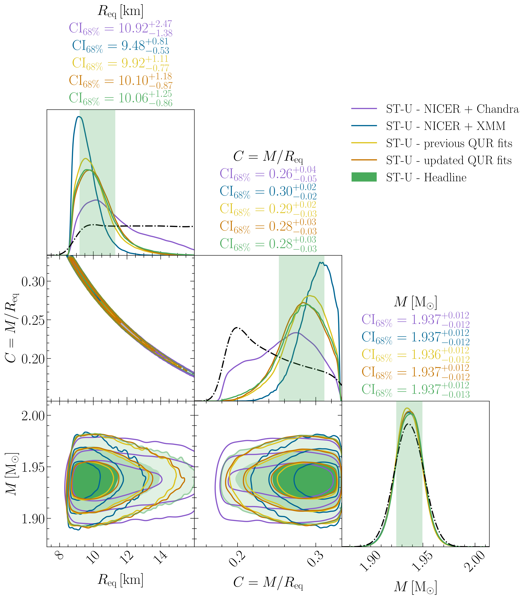
图注：Posterior distributions of the radius, compactness, and mass for the \(\STU\) model, using the previous and updated fit to the QUR, different data sets, as well as the headline result. Dashed–dotted black lines on the diagonal plots show the marginalized prior distributions, shared across all runs beside the previous QUR fit one. However, if present, the prior of the previous QUR run would be hardly distinguishable. The shaded vertical bands show the 68.3\% credible intervals (CI) of the headline result. The contours in the 2D posteriors show the 68.3\%, 95.4\%, and 99.7\% credible regions, which are filled for the headline result.
对应解读：对应“建议重点查看的图表”第3项和“关键图表逐图导读”图4：M–R_eq联合后验、质量先验与半径约束。
入选理由：这是支撑论文核心结论的关键图，直接展示半径、紧致度和质量的后验分布，并含68.3%、95.4%、99.7%可信区域及headline结果。它能验证日报强调的质量方向由射电先验压窄、半径后验偏向约10 km以及低半径趋势，比一般观测概览图更直接服务状态方程解读。
来源与置信度：\(arxiv_source\)；high；\(arxiv_source\) / sample701.tex:figure[4]
Fig07
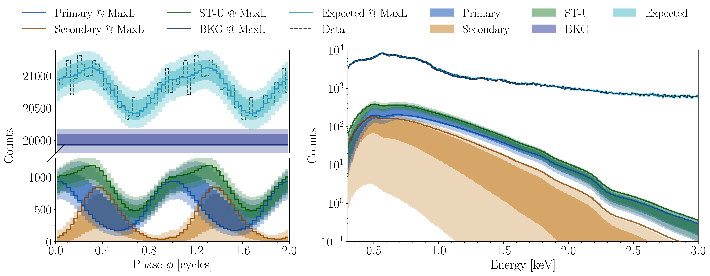
图注：Posterior predictive distribution and maximum likelihood of the NICER observables for the headline \(\STU\) geometry: bolometric pulse on the left panel and phase-averaged spectrum on the right panel. The posterior predictive distribution represents the posterior probability distribution of the observables. The contributions of the individual model components are shown in blue for the primary ST (polar hot spot), orange for the secondary ST (equatorial hot spot) and purple for the inferred background (BKG). The combined model components are in green for ST-U, and in light blue for the total (expected, i.e., ST-U+BKG). The shaded regions represent the 68\% and 95\% CI of the individual model components (Primary, Secondary, ST-U and BKG) before the Poisson realization, since these components are not directly observable. The total expected model prediction, including the Poisson realization, is shown for comparison with the observed counts. The solid lines represent the maximum likelihood model and the black dashed line the data. The left panel has a discontinuous y-axis and the horizontal line at $\sim$20,000 counts represent the phase-independent maximum likelihood background. On the right panel, the background, expected distribution, and data all overlap.
对应解读：对应“建议重点查看的图表”第1、2项以及模型拟合段落：NICER脉冲轮廓、相位平均谱、模型分量和置信区间。
入选理由：该图给出headline STU几何的后验预测分布和最大似然模型，左侧是脉冲观测量，右侧是相位平均谱，并分解了主热斑、次热斑、背景和总模型的贡献，含68%与95%可信区间。它最能检验两个热斑模型是否解释脉冲调制、源谱和背景，且与日报关于非热成分和残差诊断的讨论高度相关。
来源与置信度：\(arxiv_source\)；high；\(arxiv_source\) / sample701.tex:figure[7]
Fig11

图注：Posterior distribution of the radius, hot spot geometric parameters, temperatures, and hydrogen column density for the headline \(\STU\) run. Individual mode distributions (purple and orange) are plotted along with the full distribution (green). Mode 1 corresponds to the left plot from Figure~\(\ref{fig:BestFitGeometries},\) and Mode 2 corresponds the right one. The dashed-dotted black lines on the diagonal plots show the marginalized prior distributions, shared across all runs. The shaded vertical bands show the $68.3\%$ CI. The contours in the 2D posteriors show the $68.3\%$, $95.4\%$, and $99.7\%$ credible regions, which are filled for the mode-averaged distribution only.
对应解读：对应“建议重点查看的图表”第4项和“关键图表逐图导读”图5：参数角图、边缘后验和主要退化关系。
入选理由：该图展示半径、热斑几何参数、温度和氢柱密度的联合后验，并区分两个镜像模式及总体分布。它能直接支持日报中关于R_eq与倾角、热斑位置、热斑大小、温度和吸收柱密度退化的解读，是理解半径误差来源和模型依赖性的核心图。
来源与置信度：\(arxiv_source\)；high；\(arxiv_source\) / sample701.tex:figure[11]
Fig01
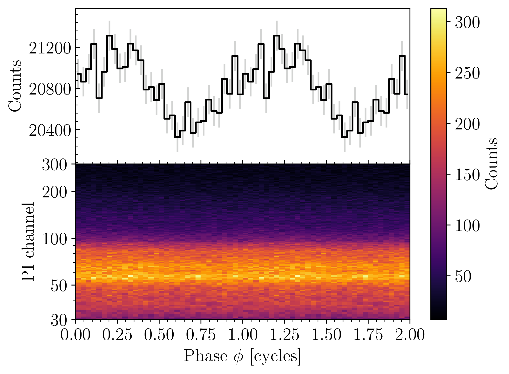
图注：Data for \(\jsf\) obtained after reduction and phase-folding of the NICER events. The top panel displays the $0.3-3.0\,$keV pulse profile, displayed with the associated Poisson error in gray. The bottom panel shows the energy-resolved pulse profile of \(\jsf.\) Phases are divided into 32 equal-size bins per cycle and the energies are split by PI channels. The plotted data are the exact same data that are used for inference. The data are duplicated over two rotational phases for visualization purposes.
对应解读：对应“建议重点查看的图表”第1项和“关键图表逐图导读”图1/图2：NICER折叠脉冲轮廓与能量分辨脉冲数据。
入选理由：该图展示实际用于推断的NICER相位折叠数据，包括0.3–3.0 keV总脉冲轮廓和能量分辨脉冲轮廓。虽然没有叠加模型线，但它是判断源信号强弱、脉冲调制显著性、相位结构和能量依赖的基础，对理解8.5σ弱脉冲导致半径约束有限非常重要。
来源与置信度：\(arxiv_source\)；high；\(arxiv_source\) / sample701.tex:figure[1]
Fig06
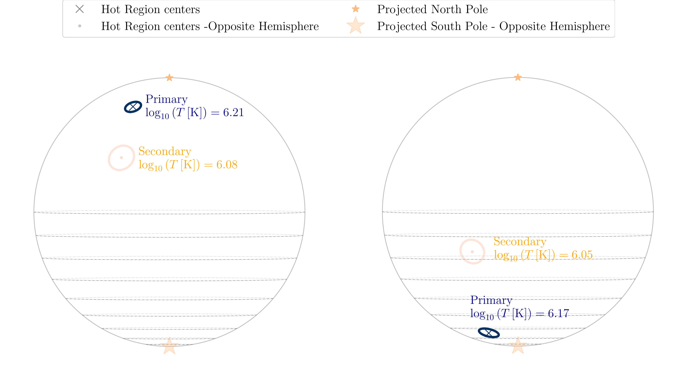
图注：Representation of the best-fit geometries, as seen from Earth, for the two modes present in the headline \(\STU\) run. The pulsar is represented without gravitational or relativistic effects at phase zero of the data. The hotter spot is represented in blue, while the cooler one is in orange. These two modes are North/South mirror images due to degeneracy in the model. The secondary hot spots are located behind the star in both plots. Both geometries have similar likelihood. These representations do not encompass the full posterior distributions of the geometric parameters.
对应解读：对应“建议重点查看的图表”第5项和“关键图表逐图导读”图6：热斑位置示意图与近极/近赤道几何。
入选理由：该图显示headline STU模型中两个似然相近的最佳拟合几何模式，并标出较热与较冷热斑的位置，突出南北镜像退化。它直接支持日报中一个热斑近极、另一个近赤道的解读，同时图注明确提醒这不是完整几何后验，有助于避免过度解释。
来源与置信度：\(arxiv_source\)；high；\(arxiv_source\) / sample701.tex:figure[6]
Fig09
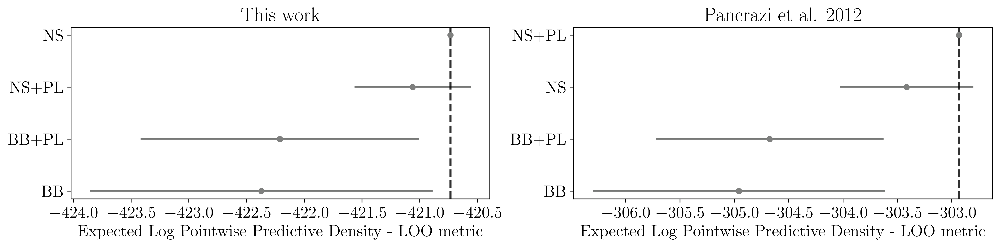
图注：Model comparison plots using the Leave-One-Out (LOO) metric. Models are ordered by preference, with the better model on top. The gray horizontal lines provide the uncertainty of the difference of the LOO metric to the preferred topmost model. The dashed vertical line shows the LOO value for the preferred model. Left panel shows this comparison using the XMM and Chandra data curated in Section \(\ref{sec:data},\) while the right panel shows the results using the data from \(\cite{Pancrazi+12}.\)
对应解读：对应“建议重点查看的图表”第6、7项和“关键图表逐图导读”图7：模型比较、稳健性和不同数据处理方案。
入选理由：该图使用LOO指标比较不同模型，并分别给出本文整理数据和Pancrazi等旧数据下的结果，可用于判断模型设定和数据处理对结论的影响。虽然它不直接给出半径后验或非热幂律残差，但能支撑日报关于系统误差、模型选择和稳健性的讨论。
来源与置信度：\(arxiv_source\)；high；\(arxiv_source\) / sample701.tex:figure[9]
强相关工作
同一源方面，PSR J1614−2230 的历史核心文献是射电计时测得高质量的工作，尤其是利用 Shapiro 延迟确认其接近 \(2\,M_\odot\) 的质量。这些同源论文提供本文质量先验的物理和观测基础。检索关键词可用 “PSR J1614-2230 Shapiro delay mass”, “Demorest 2010 PSR J1614-2230”, “Fonseca PSR J1614-2230 timing”。
同类工作方面，应把本文与 NICER 对 PSR J0030+0451 和 PSR J0740+6620 的脉冲轮廓半径测量并读。PSR J0740+6620 同样是高质量毫秒脉冲星，因此是最直接的同类比较；PSR J0030+0451 质量较低，但对热斑非对跖几何和方法验证很重要。检索关键词可用 “NICER pulse profile modeling neutron star radius”, “PSR J0740+6620 NICER radius”, “PSR J0030+0451 hot spot geometry”。
基础理论方面，相关文献包括强引力光线弯曲下的中子星热斑脉冲建模、氢大气辐射、Schwarzschild 加 Doppler 近似、快速自转星形变近似以及贝叶斯状态方程推断。若想理解张力，应检索 “neutron star equation of state small radius two solar mass”, “NICER gravitational wave EOS inference”, “GW170817 tidal deformability neutron star radius”。潜在相反观点主要来自系统误差讨论：背景建模、热斑形状复杂性、非热成分和仪器交叉定标都可能改变半径后验。
同一事件 / 同类源线索：
相似工作：
- https://arxiv.org/abs/1912.05705
- https://arxiv.org/abs/1912.05706
- https://arxiv.org/abs/2105.06980
- https://arxiv.org/abs/2105.06979
基础理论 / 方法工作：
相反观点 / 张力线索：
8. Lynx2030 Science Analysis Group: Final Report
- 来源：arXiv / astro-ph.HE
- 链接：https://arxiv.org/abs/2609.00033v1
- 作者：Lynx2030 Science Analysis Group, Simon R. Bandler, Laura W. Brenneman, Nico Cappelluti, Daniel Castro, Steven R. Ehlert, W. Peter Maksym, Fabio Pacucci
- 评分：novelty 6/10，importance 9/10，relevance 8/10，final 8.75/10
- 推荐理由：Lynx2030 final report is not a narrow research result but is important for future high-resolution X-ray instrumentation and the broader high-energy astrophysics roadmap.
中文题目：Lynx2030 科学分析组最终报告：重新评估下一代旗舰级 X 射线天文台的科学目标与技术驱动
做了什么：这份报告不是单一观测结果论文，而是 Lynx2030 Science Analysis Group 对 Lynx 级下一代 X 射线旗舰任务的科学案例和仪器需求的系统复盘。作者在原 Lynx 概念研究基础上，结合 JWST、Roman、Rubin、SKA、ngVLA、LISA、NewAthena 等未来设施的变化，逐项评估角分辨率、能段覆盖、微量热计、观测模式和视场扩展会带来哪些科学收益。核心结论是：高角分辨率、高有效面积、高光谱分辨率的 X 射线天文台在 \(2030\) 年代仍然不可替代，尤其是 JWST 发现的高红移 “Little Red Dots” 是否含有快速吸积黑洞，本质上需要深 X 射线观测来判别。
为什么重要：它重要在于把“为什么还需要 Lynx”从十年前的通用愿景，更新为后 JWST、后 Rubin、后 LISA 时代的具体科学需求。许多关键问题——早期黑洞种子、星系反馈、热重子缺失、星团等离子体微物理、紧致天体暂现源、多信使对应体——都需要同时具备 \(\lesssim 1''\) 角分辨率、深灵敏度和高分辨 X 射线光谱的能力。报告的价值不在某个单一数值结论，而在于把科学问题翻译成任务设计的技术驱动。
理论 / 观测 / 仪器方法价值：对理论而言，报告明确了哪些模型预言可由未来 X 射线数据区分，例如轻种子与重种子黑洞、AGN 反馈能量注入、星系际介质金属富集和星团湍流耗散。对观测而言，它给出 Lynx 与 Chandra、XMM-Newton、XRISM、Athena/NewAthena 以及多波段设施的互补关系。对仪器和方法而言，它强调角分辨率、通量极限、能量分辨率、视场、快速响应和观测模式之间的 trade-off，而不是把“更大望远镜”简单等同于“更好科学”。
为什么应该关注：如果你关心高红移黑洞、星系反馈、宇宙重子循环、星团等离子体、致密天体或多信使天文学，这份报告相当于一张 \(2030\) 年代 X 射线观测能力缺口图。它告诉你哪些问题靠现有或已规划设施仍会卡在混淆、光子统计、谱分辨或时域响应上，也告诉你未来十年理论模型最应该产出哪些可观测预言，以便被 Lynx 级任务真正检验。
展开详细解读：文章讲解、背景、理论、重点章节、图表与相关工作
文章详细讲解
科学问题：Lynx2030 SAG 要回答的不是“Lynx 能不能做 X 射线天文学”，而是“在 JWST 已经打开高红移星系和可能早期黑洞窗口、Rubin/Roman 将发现海量暂现源、LISA 将给出低频引力波事件、NewAthena 将提供大收集面积 X 射线能力的背景下，一个 Chandra 之后的高角分辨旗舰 X 射线台是否仍有不可替代性”。报告把问题拆成若干科学主题：第一批黑洞与高红移 AGN、星系形成和反馈、热重子与星系团、恒星死亡和紧致天体、多信使天体物理，以及动态高能宇宙。
作者怎么做：SAG 组织多个工作组，围绕原 Lynx 设计参考任务的核心能力进行再评估，并重点考察五类能力变化：更好的角分辨率、更宽能段、更强微量热计、更灵活的新观测模式、更大的视场。报告的逻辑是从科学案例反推技术指标，而不是从工程参数出发堆砌性能。它反复比较 Lynx 与 Chandra、XMM-Newton、XRISM、Athena/NewAthena 以及未来光学红外、射电和引力波设施的参数空间，强调 Lynx 的优势主要来自同时具备小点扩散函数、高通量、深场能力和高分辨谱学。
关键结果：报告认为 Lynx 级任务的科学动机在过去十年不是减弱，而是显著增强。最突出的新驱动是 JWST 发现的高红移 “Little Red Dots”：这些源可能是尘埃遮蔽星暴、特殊恒星种群、低质量星系核活动，或者早期快速生长黑洞。它们的判别依赖硬 X 射线辐射、吸收柱密度、堆叠信号和与红外光度的比值，而这些正是高分辨深 X 射线观测的强项。报告还指出，星系团湍流、AGN feedback cavities、CGM/IGM 吸收发射、超新星遗迹和中子星并合余辉等领域，都受限于当前 X 射线成像光谱能力。
局限和下一步：这类 SAG 报告不是最终 mission design，也不会给出唯一确定的载荷配置或预算边界。许多结论依赖对未来设施实际性能、发射时间表和社区优先级的假设。下一步应包括更定量的 survey yield 模拟、与 NewAthena 和 Probe-class X 射线任务的边界划分、关键技术成熟度评估、以及把“科学收益”映射到可检验的最低性能要求，例如半能宽、有效面积、背景水平、微量热计像素数和 ToO 响应时间。
关键结果是怎么做出来的
本文最重要的证据链不是单一数据样本，而是“科学案例—性能需求—设施互补性”的系统映射。作者从原 Lynx Concept Study 的科学目标出发，重新纳入过去十年的外部变化：JWST 已发现大量高红移紧致红源，Rubin 和 Roman 将显著扩大时域与弱透镜样本，LISA 将在 \(10^4\) 到 \(10^7\,M_\odot\) 黑洞并合上给出引力波触发，NewAthena 将提供大面积 X 射线光谱但角分辨率路线不同。报告用这些变化说明，Lynx 的评价标准必须从“单台望远镜能做什么”转为“在多信使、多波段生态中哪些物理量只有它能测”。
样本和事件数在报告中通常以 forecast 或 use case 形式出现，而不是以实测 catalog 形式出现。最值得关注的是高红移黑洞和 “Little Red Dots” 场景：关键不是已知一个源是否 X 射线亮，而是对成百上千个 JWST/Roman 候选体进行深指向、堆叠或分层统计后，能否测出平均 X 射线光度、吸收柱密度分布以及 AGN fraction。类似地，在星系团和 CGM 主题中，报告关心的是可分辨低表面亮度结构、测量速度展宽和金属线强度所需的光子数，而不是某个单一星团的漂亮图像。
显著性和置信度在这类任务报告中主要通过灵敏度、混淆极限、光子统计和模型可区分度来体现。读者应特别查看报告中关于点源探测阈值、源混淆、线探测显著性、微量热计速度分辨率和 survey yield 的图表。若某科学目标声称需要 Lynx，真正的支撑应是：在相同曝光下 Chandra 光子数不足，Athena/NewAthena 受角分辨率或混淆限制，而 Lynx 可以同时达到足够低的通量极限和足够小的 PSF。
模型比较的核心例子包括早期黑洞种子模型、AGN 反馈模型、星团等离子体输运模型和多信使暂现源余辉模型。报告的论证方式通常是：不同理论给出不同的 \(L_X\)、\(N_H\)、红移分布、线宽、表面亮度涨落或时间衰减；仪器性能决定这些差异是否从系统误差中露出。读者不应只看“可探测数量”这一类乐观指标，还要看探测后能否分辨吸收、温度、多相气体和源混淆。
系统误差方面，报告隐含的主要风险包括：高红移源的 photometric redshift 和 SED 分类不确定，X 射线背景和粒子背景，PSF 翼导致的弱源混淆，低表面亮度扩展源的背景建模，微量热计增益稳定性，以及多设施交叉匹配中的选择函数差异。稳健性检验应看不同角分辨率、不同能段下限和上限、不同视场、不同曝光策略对科学收益的敏感性；这也是 SAG 讨论“modest extensions beyond original design”时最关键的判据。
展开背景、理论、公式、模型、章节和图表导读
背景知识
Lynx 是美国天文学界长期讨论的下一代旗舰级 X 射线天文台概念，最初目标是继承 Chandra 的高角分辨成像传统，同时大幅提高有效面积和谱学能力。Chandra 的 \(\sim 0.5''\) 级成像改变了 X 射线天文学：它把点源从弥散背景中分离出来，解析了深场 AGN、星系团冷锋、喷流、超新星遗迹和银河系中心复杂结构。但 Chandra 有效面积有限，面对高红移弱源和高分辨谱学时光子数常常不足。
过去十年背景发生了明显变化。XRISM 开始恢复高分辨 X 射线量热谱学能力，Athena/NewAthena 代表欧洲大面积 X 射线天文台方向；JWST 则在 \(z\gtrsim 6\) 星系和紧致红源上带来意外发现。所谓 “Little Red Dots” 可能包含早期低质量 AGN 或快速吸积黑洞，如果成立，会直接影响黑洞种子、超爱丁顿吸积、早期星系共演化等问题。它们在红外波段的谱能量分布存在多解，因此 X 射线成为打破退化的关键。
理论上，黑洞种子有轻种子和重种子两类经典图像。轻种子来自 Population III 恒星遗迹，初始质量可在 \(10^2\,M_\odot\) 量级；重种子可能来自直接坍缩黑洞，质量可达 \(10^4\) 到 \(10^6\,M_\odot\)。在宇宙年龄不足 \(1\) Gyr 时形成 \(10^9\,M_\odot\) 类星体，需要高占空比、快速吸积或大初始种子。X 射线观测能追踪被尘埃遮蔽的吸积功率，因此对这个问题特别敏感。
另一个历史问题是“缺失重子”和反馈能量闭合。低红移宇宙中相当一部分重子不在恒星或冷气体里，而在温热的 CGM/IGM 和星系团介质中。X 射线发射线、吸收线、表面亮度轮廓和速度展宽是测量热气体质量、温度、金属丰度和湍流的主要手段。若没有足够角分辨率，点源污染和小尺度结构会把物理解释搞混；若没有足够谱分辨率，速度场和多温成分会退化。
该领域常见误区是把“有效面积最大”直接等同于“科学能力最强”。对于深场弱点源、拥挤场、星团子结构、喷流和超新星遗迹，角分辨率可能比总收集面积更决定性。另一个误区是认为 JWST 或 Rubin 发现源之后，X 射线只负责“确认”。实际上 X 射线给出的吸积率、遮蔽、热等离子体状态和非热粒子信息，是物理解释本身的一部分，而不是附属标签。
基础理论 / 方法脉络
X 射线天文学的基本物理对象包括热等离子体辐射、吸积盘与冕辐射、相对论喷流、激波加速粒子以及紧致天体表面或磁层过程。对于温度 \(T\sim 10^6\) 到 \(10^8\,\mathrm{K}\) 的等离子体，热 bremsstrahlung 和金属线落在软 X 射线；对于黑洞吸积，热盘紫外光子经热电子冕 Compton 化产生幂律 X 射线；对于超新星遗迹和 PWN，非热 synchrotron 和 inverse Compton 也可贡献高能辐射。
观测上，X 射线望远镜的核心可观测量不是源的“真实光度”，而是探测器在能道和位置上的计数。计数由源通量、有效面积、曝光时间、点扩散函数、能量响应和背景共同决定。高角分辨率降低每个源提取区域内的背景和邻源污染；高有效面积提高光子统计；高能量分辨率把谱线、吸收边和速度展宽分开；大视场提高 survey speed。这些量之间存在工程 trade-off，因此报告反复讨论“能力组合”而非单一指标。
对于高红移黑洞问题，关键量包括 X 射线光度 \(L_X\)、红移 \(z\)、吸收柱密度 \(N_H\)、光谱指数 \(\Gamma\)、爱丁顿比 \(\lambda_{\rm Edd}\) 和黑洞质量 \(M_{\rm BH}\)。观测到的软 X 射线能段对应源静止系更高能段，因此有时对中等吸收更有利；但宇宙学距离和低光子数又使单源探测困难。堆叠分析可提高平均信号，却会丢失个体分布和少数亮 AGN 的影响。
对于星团和 CGM，关键量包括电子密度 \(n_e\)、温度 \(T\)、金属丰度 \(Z\)、速度弥散 \(\sigma_v\)、熵 \(K\) 和冷却时间 \(t_{\rm cool}\)。X 射线表面亮度近似随 \(n_e^2\) 加权，因此偏向高密度相；吸收线和 SZ 效应则有不同权重。常见退化包括多温气体与非热展宽、金属丰度与温度结构、背景建模与低表面亮度外晕、AGN 点源污染与弥散气体发射。
本文使用的是任务科学评估逻辑：从预期源光度函数、表面亮度分布或暂现源率出发，经过仪器响应得到计数和探测显著性，再评估能否区分模型。读者应把它看作“性能需求推导”，而不是普通观测论文。每个科学案例的真正问题是：给定背景、PSF、曝光和响应后，目标物理参数的不确定度是否小到能排除竞争理论。
公式与推导
可以从 X 射线光度与观测通量的关系开始。对红移为 \(z\) 的源，某一能段内观测通量可写成
其中 \(L_X\) 是静止系 X 射线光度，\(D_L\) 是光度距离，\(K\) 是包含 \(K\)-correction、光谱斜率 \(\Gamma\) 和吸收柱 \(N_H\) 的修正因子。这个式子说明，高红移黑洞科学首先受距离平方衰减和光谱不确定性控制。
望远镜真正测到的是计数谱。若源光子通量谱为 \(S(E)\)，有效面积为 \(A_{\rm eff}(E)\)，曝光为 \(t_{\rm exp}\)，响应矩阵为 \(R_i(E)\)，第 \(i\) 个能道的期望计数为
其中 \(b_i\) 是背景计数。Lynx 报告中所有灵敏度、谱学和线探测能力，本质上都要经过这个响应卷积。
点源探测的近似信噪比可写为
其中 \(C_s\) 是源计数，\(C_b\) 是提取区域背景计数。高角分辨率通过减小提取区域降低 \(C_b\)，也减少邻源混淆；这就是为什么只增加 \(A_{\rm eff}\) 不能完全替代小 PSF。
混淆限制可用每个 beam 内源数估计。若点扩散函数等效立体角为 \(\Omega_{\rm beam}\)，累计源面密度为 \(N(>S)\)，则
当 \(\eta\) 接近 \(0.01\) 到 \(0.1\) 的经验阈值时，继续加深曝光会遇到源混淆而不是光子统计极限。这个式子直接连接 Lynx 的角分辨率目标与深场 AGN、早期黑洞探测。
对于吸积黑洞，爱丁顿光度为
其中 \(G\) 是引力常数，\(m_p\) 是质子质量，\(c\) 是光速，\(\sigma_T\) 是 Thomson 截面。若 bolometric 光度 \(L_{\rm bol}\) 与 X 射线光度通过 bolometric correction 关联，\(L_{\rm bol}=k_{\rm bol}L_X\)，则可估计爱丁顿比
这说明高红移 X 射线探测可直接约束黑洞生长是否接近或超过爱丁顿。
热等离子体 X 射线发射常写作
其中 \(n_e\) 和 \(n_H\) 是电子与氢数密度，\(\Lambda(T,Z)\) 是冷却函数，依赖温度和金属丰度。由于发射随密度平方加权，星团核心、AGN 空洞边界和 CGM 致密团块会特别显著，也更需要高角分辨率分离结构。
微量热计测量谱线中心和展宽。若能量分辨率为 \(\Delta E\)，对应速度分辨能力近似为
其中 \(E_0\) 是谱线静止能量。对 Fe K 或 O VII/O VIII 等谱线，这个关系把仪器能量分辨率直接转化为星团湍流、外流和吸收体运动的可测速度尺度。
参数估计通常基于 Poisson 似然。给定模型参数 \(\theta\)，观测计数 \(n_i\) 的对数似然为
比较两个模型时，可用似然比统计量
其中 \(\hat{\theta}_1\) 和 \(\hat{\theta}_0\) 是备选模型和零假设下的最大似然参数。对 Lynx 科学案例而言，问题就是设计 \(A_{\rm eff}\)、PSF、\(\Delta E\)、视场和曝光，使关键模型之间的 \(\Delta C\) 足够大。
模型拟合 / 应用方法
这类任务报告中的“拟合”通常有两层。第一层是天体物理模型拟合，例如对 AGN 使用吸收幂律、反射成分和软超额来估计 \(L_X\)、\(N_H\)、\(\Gamma\)；对星团使用多温等离子体模型估计 \(T\)、\(Z\)、\(n_e\) 和速度展宽；对暂现源使用幂律衰减或喷流余辉模型估计能量、密度和视角。第二层是仪器性能拟合，即把这些物理模型通过响应矩阵转为计数，评估不同设计参数下的误差椭圆。
似然通常应采用 Poisson 统计，尤其在高红移弱源和窄线探测中不能随意使用 Gaussian 近似。对于深场堆叠，常见做法是在已知多波段位置处叠加 X 射线图像或似然，估计平均通量；但堆叠结果受少数接近探测阈值的源、背景非均匀性和 astrometric matching 影响。报告强调高角分辨率的一大价值，就是降低这些系统误差，使堆叠和单源探测之间有更清楚的连接。
参数退化是 Lynx 科学案例能否成立的关键。高红移 AGN 的 \(N_H\)、\(\Gamma\)、红移和本征光度之间有强退化；红外 SED 中尘埃、老年恒星和 AGN 热尘也会产生相似颜色。星团谱学中，多温结构可伪装成异常金属丰度或非热展宽；低表面亮度 CGM 中，背景归一化的小误差可能变成气体质量的大误差。报告提出的更宽能段、更高谱分辨率和更好角分辨率，本质上都是为了压缩这些退化。
残差诊断应分空间、能谱和时间三个维度看。空间残差可以暴露 PSF 翼、未解析点源、AGN 空洞和激波；能谱残差可以暴露未建模吸收边、非平衡电离、多温气体或增益漂移；时间残差可以区分暂现源余辉、AGN 变率和背景变化。对于未来任务设计，若某个科学目标只在理想背景或理想源模型下成立，而对这些残差高度敏感，就不能视为稳健科学驱动。
实际应用上，Lynx 级数据将常与 JWST/Roman/Rubin/SKA/ngVLA/LISA 联合拟合。多波段联合后验需要显式处理选择函数：红外选源偏向尘埃和恒星质量，X 射线选源偏向低吸收或高吸积率，射电选源偏向喷流或星形成。一个合理的未来分析框架应同时拟合 luminosity function、obscuration distribution、duty cycle 和 host-galaxy properties，而不是把各波段 catalog 简单交叉匹配。
重点章节 / 结果段落怎么读
-
科学动机与任务背景：应先读报告开头对 Lynx 原始概念、SAG 设立原因和 \(2030\) 年代天文设施版图的概述。这里的重点是理解评估标准如何变化：Lynx 不再只是 Chandra 的后继者，而是多设施生态中的高分辨 X 射线节点。
-
第一批黑洞和高红移宇宙相关章节：这是最受 JWST 新发现影响的部分。读者应关注 “Little Red Dots”、高红移 AGN、黑洞种子和深场 survey 的论证，特别是哪些结论依赖角分辨率，哪些依赖有效面积，哪些依赖硬能段覆盖。
-
星系形成、重子循环和星系团章节：这部分展示 Lynx 对热气体物理的价值。应重点读 CGM/IGM、AGN feedback、星团湍流、金属富集、冷锋和空洞等案例，看作者如何把空间分辨和谱分辨结合起来。
-
紧致天体、恒星爆炸和多信使章节：这里应关注 ToO 能力、快速响应、宽能段覆盖和微量热计如何服务于中子星并合、超新星、TDE、X 射线双星和引力波对应体。与 LISA、Rubin 和 Roman 的协同是判断这些案例现实性的关键。
-
仪器能力扩展与 trade-off 章节：报告关于改进角分辨率、扩展 bandpass、增强微量热计、新观测模式和增大视场的讨论最值得技术读者细看。不要只看“增强后能做更多科学”，而要看每个增强项是否有独立、不可替代的科学驱动。
建议重点查看的图表
-
任务性能对比图：应查看 Lynx、Chandra、XMM-Newton、XRISM、Athena/NewAthena 在角分辨率、有效面积、能量分辨率和视场上的对比。关键是识别 Lynx 独占的参数空间，而不是单项排名。
-
高红移黑洞或 “Little Red Dots” 探测收益图：应看横轴是否为红移、通量或黑洞质量，纵轴是否为可探测数、\(L_X\) 极限或 AGN fraction。注意模型曲线是否覆盖轻种子和重种子两类情形。
-
深场混淆与灵敏度图：应检查通量极限随曝光变化是否在某处变平，是否比较了不同 PSF 情况。若 Lynx 优势来自低混淆，图中应能看到小 PSF 带来的有效增益。
-
微量热计谱学能力图：应看谱线宽度、速度分辨、温度或金属丰度误差。重点不是谱线“看起来很尖”，而是速度展宽和多温成分是否可分。
-
星团/CGM 表面亮度或模拟观测图：应检查点源剔除、背景水平、低表面亮度外区和小尺度结构。特别注意模型残差是否可能来自 PSF 或背景而非真实气体物理。
-
多信使或暂现源响应图：应看响应时间、定位误差区域覆盖、曝光需求和光变曲线采样。对 LISA 或 Rubin 触发源，关键是 Lynx 是否能在物理时间尺度内完成足够深观测。
关键图表逐图导读
图 1：若报告给出 \(2030\) 年代设施生态或参数空间示意，横轴和纵轴通常会是角分辨率、有效面积、谱分辨率或视场等仪器指标。读图时要看 Lynx 是否占据“高角分辨率加高通量”的组合区域。陷阱是不要把面积大但 PSF 宽的任务与 Lynx 视为同类替代。
图 2：高红移黑洞和 “Little Red Dots” 相关图通常会把红移 \(z\)、X 射线通量极限、黑洞质量 \(M_{\rm BH}\) 或可探测源数联系起来。数据点可能来自 JWST 候选体，模型线可能代表不同黑洞种子或吸积率假设。读图重点是 Lynx 能否把候选体从红外 SED 退化中拉出来，而不是只看是否探测到最亮几个源。
图 3：深场灵敏度或混淆图一般会显示探测通量极限随曝光时间、PSF 或背景变化。若曲线在长曝光端趋于平坦，说明进入混淆或系统误差限制。Lynx 的论证应体现为小 PSF 使曲线继续下降，或在同等通量下可靠分离更多源。
图 4：星团和 CGM 模拟观测图可能是 X 射线表面亮度图、温度图、金属丰度图或残差图。坐标轴通常是天空位置或半径，颜色表示计数率、温度或丰度。读者应检查点源是否已剔除、低表面亮度区域是否背景主导、以及小尺度结构是否超过 PSF 模糊尺度。
图 5：微量热计谱线图会以能量为横轴、计数或通量为纵轴，并叠加不同速度展宽或温度模型。关键是线心偏移和线宽是否在仪器 \(\Delta E\) 之上显著可测。陷阱是把高信噪谱线的统计误差和绝对增益校准误差混为一谈。
图 6：暂现源和多信使图通常展示光变曲线、触发时间、定位区域或 ToO 覆盖策略。读图时要看观测窗口是否匹配余辉衰减时间尺度，是否考虑触发延迟和调度约束。若只给出理想即时响应曲线，需要谨慎评估实际可行性。
论文原图 / 可嵌入图片
Fig07
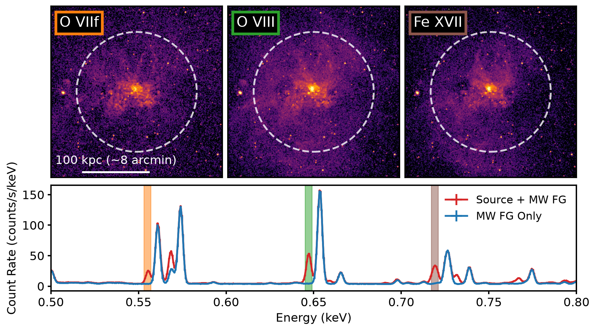
图注：Simulated LXM observations of the CGM of a Milky Way-mass galaxy at $z = 0.01$ from the TNG 50 simulation \(\cite{TNG50},\) assuming the addition of a 20\arcmin\ extended array with 2\arcsec\ pixels. The microcalorimeter resolution enables separation of the redshifted O VIIf, O VIII, and Fe XVII lines of the external galaxy from the Milky Way (MW) foreground, enabling maps of different gas phases (top panels) to be made from the narrow bands from the extracted spectrum from the circular region (bottom panel), as shown. The MW foreground (blue line) largely obscures the CGM from the extragalactic source (red line), highlighting the need for high spectral resolution for this science.
对应解读：对应“建议重点查看的图表”第4项微量热计谱学能力图、第5项星团/CGM表面亮度或模拟观测图，以及“关键图表逐图导读”图4和图5中关于CGM、多相气体、前景分离和谱线诊断的讨论。
入选理由：这张图同时给出模拟LXM观测的CGM空间图和提取谱，明确展示O VII、O VIII、Fe XVII等窄线如何与银河系前景分离，直接支撑日报中关于高谱分辨率压缩前景污染、多温气体和弱表面亮度系统误差的解读。相比单纯成像图，它同时包含空间与能谱诊断，是候选图中最能体现Lynx微量热计科学收益的一张。
来源与置信度：\(arxiv_source\)；high；\(arxiv_source\) / main.tex:figure[7]
Fig02
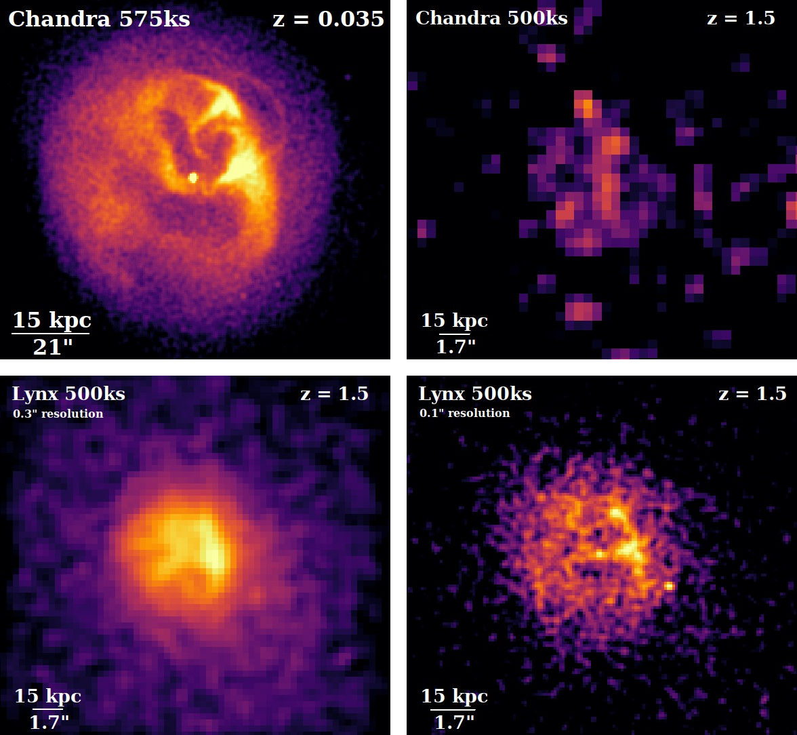
图注：Left: \(\textit{Chandra}\) X-ray image of A2052 at $z=0.035$ showing a bright nucleus and two X-ray cavities, each 15\,kpc across, in the N-S direction \(\citep{Blanton01,Blanton11}.\) Left Center: A simulated \(\textit{Chandra}\) image of this cluster at $z=1.5$. The cluster has been reduced in angular size, cosmologically dimmed etc. The cavities are not detected. Right Center: Simulated \(\textit{Lynx}\) images with 0.3\,arcsec and 0.1\,arcsec (right) spatial resolution. These more typically sized cavities are detected at $z=1.5$ with the increased spatial resolution.
对应解读：对应“建议重点查看的图表”第1项任务性能对比中高角分辨率的科学驱动，以及第5项星团/CGM表面亮度或模拟观测图；也对应“关键图表逐图导读”图4关于星团小尺度结构、AGN cavities和PSF限制的说明。
入选理由：该图直接比较同一星团在Chandra和Lynx不同空间分辨率下的模拟观测，显示15 kpc级AGN反馈空洞在z=1.5时只有在0.3角秒甚至0.1角秒分辨率下才能可靠识别。它比普通性能参数表更直观地说明Lynx高角分辨率不是锦上添花，而是决定高红移星团反馈结构能否被探测的关键。
来源与置信度：\(arxiv_source\)；high；\(arxiv_source\) / main.tex:figure[2]
Fig01
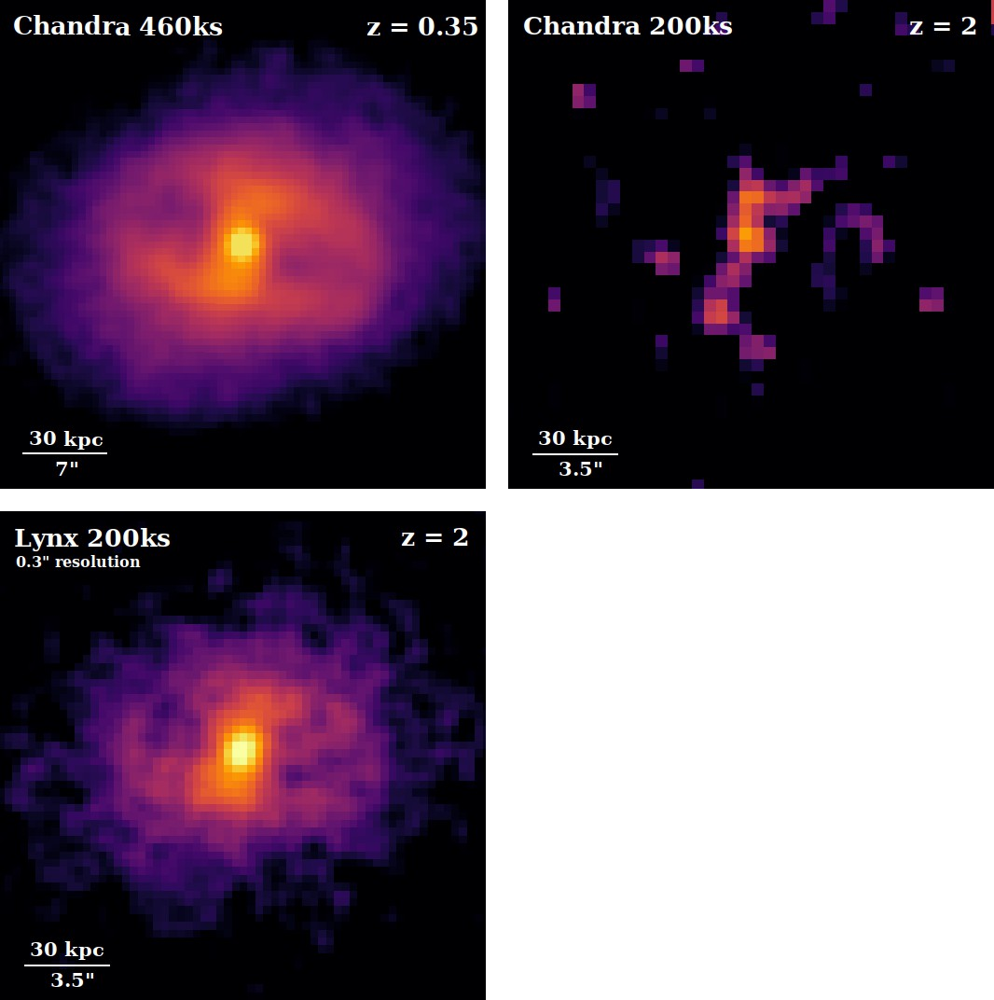
图注：\(\textbf{Left:}\) \(\textit{Chandra}\) X-ray image of RBS797 at $z=0.35$ showing a bright nucleus and two X-ray cavities, each 30\,kpc in size, in the E-W direction \(\citep{Schindler01,Ubertosi21}.\) \(\textbf{Center:}\) A simulated \(\textit{Chandra}\) image of this cluster at $z=2$. The cluster has been scaled to $2\times10^{14}$\,M$_{\odot}$, reduced in angular size, cosmologically dimmed etc. The cavities are not detected. \(\textbf{Right:}\) A simulated \(\textit{Lynx}\) image at 0.3\arcsec\ resolution, with clearly visible cavities at $z=2$. Images have been smoothed with a 2D Gaussian with $\sigma=2$\,pixels. Based on an original figure by M. McDonald.
对应解读：对应“建议重点查看的图表”第5项星团/CGM表面亮度或模拟观测图，以及“关键图表逐图导读”图4中关于高红移星团表面亮度、空洞结构和PSF模糊尺度的读图重点。
入选理由：该图把本地可见的RBS797 X射线空洞缩放到z=2后，直接比较Chandra与0.3角秒Lynx模拟图像，清楚展示宇宙学变暗和角分辨率不足会怎样抹掉AGN反馈空洞。它与Fig02形成互补：Fig01强调更大空洞在z=2的可恢复性，Fig02强调更典型尺寸空洞对更高分辨率的需求。
来源与置信度：\(arxiv_source\)；high；\(arxiv_source\) / main.tex:figure[1]
Fig03
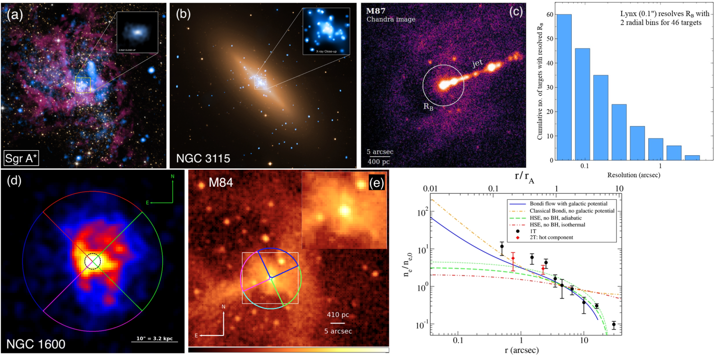
图注：\(\textbf{Left:}\) LLAGNs with Bondi regions spatially resolved with \(\textit{Chandra}\): Sgr~A$^*$ \(\citep{Wan+13},\) NGC~3115 \(\citep{WIY+11,WIS+14},\) M87 \(\citep{RFM+15,Rus+18},\) NGC~1600 \(\citep{RW21},\) and M84 \(\citep{BRR+23}\); adapted from \(\cite{2024Univ...10..278W}.\) In the first two panels, X-ray emission is shown in blue, and is also visible in the insets (image credits: NASA/CXC/SAO). The remaining panels are X-ray images. \(\textbf{Upper right:}\) Cumulative distribution of Bondi-radius sizes for a sample of SMBHs, illustrating the ability to resolve hot gas within $R_B$ for a significant number of sources with sub-arcsecond resolution. Chandra is unable to do much better than the five Bondi radii already studied. \(\textbf{Lower right:}\) Density profiles predicted by different RIAF models and models without a black hole \(\citep{WIS+14}.\) Chandra can probe only the hot gas near the Bondi radius. Distinguishing between these models requires resolving the hot gas down to $\lesssim0.1$\(\arcsec\) scales.
对应解读：对应“建议重点查看的图表”第1项中Lynx独占的高角分辨率参数空间，也对应“模型拟合”部分关于通过空间分辨密度剖面区分不同RIAF模型和Bondi吸积模型的讨论。
入选理由：这张图不仅展示Chandra已经能解析的少数Bondi半径样例，还给出Bondi半径角尺度的累积分布和不同RIAF模型的密度剖面预测，直接把角分辨率需求连接到可检验的物理模型。它比单纯天体照片更适合支撑日报中‘技术指标需反推科学诊断量’的核心观点。
来源与置信度：\(arxiv_source\)；high；\(arxiv_source\) / main.tex:figure[3]
Fig04
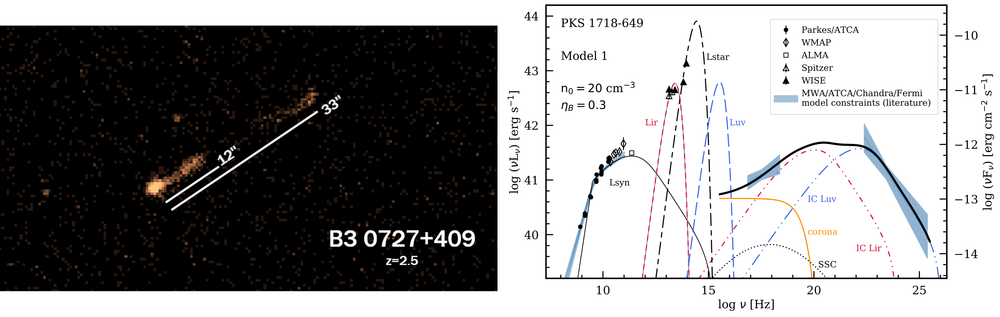
图注：\(\textbf{Left:}\) \(\textit{Chandra}\) view of $z=2.5$ AGN B3 0727+409 and its jet (\(\cite{2023ChNew..33....1S}\); adapted from \cite{2016ApJ...816L..15S}). Extending over 100 kpc in projected length ($d_A=8.225$ kpc/arcsec at $z=2.5$), this serendipitously detected source has no radio counterpart, strongly suggesting an IC/CMB interpretation. \(\textbf{Right:}\) Emission models for the compact radio source PKS 1718-649, which is both young ($\sim 100$ yr) and close ($z = 0.014$), enabling a detailed study of the initial radio jet expansion \(\citep{sobolewska2022}.\) While gamma-ray constraints are well matched by models, X-ray emission is contaminated by structure of size 10--100 pc, motivating higher-angular-resolution observations.
对应解读：部分对应“建议重点查看的图表”第1项高角分辨率能力，以及“模型拟合”部分关于空间残差、未解析结构和多波段联合解释的讨论。
入选理由：该图展示高红移AGN喷流和近邻年轻射电源的多波段模型，说明当前X射线观测会受到10--100 pc尺度结构污染，高角分辨率对区分喷流、IC/CMB辐射和核区污染很重要。虽然它不直接对应日报中Little Red Dots或深场收益图，但仍能支持Lynx在AGN反馈和喷流物理中的独特空间诊断能力。
来源与置信度：\(arxiv_source\)；high；\(arxiv_source\) / main.tex:figure[4]
强相关工作
这份报告与原 Lynx Concept Study、Chandra 旗舰遗产、Athena/NewAthena 科学案例以及 XRISM 高分辨谱学结果直接相关。相似工作包括 NASA 大型任务概念报告、ESA Athena science requirements、Chandra X-ray Observatory legacy reviews，以及关于下一代 X 射线探针任务的 white papers。建议检索关键词：Lynx X-ray Observatory concept study、Lynx final report、Chandra legacy high angular resolution X-ray、Athena science requirements、NewAthena X-ray observatory、XRISM microcalorimeter。
在同类科学问题上，报告与 JWST high-redshift AGN 和 Little Red Dots 文献关系最紧。这里存在真实张力：红外紧致红源可解释为 AGN、尘埃遮蔽星暴、极端恒星种群或复合系统；弱 X 射线探测或非探测既可能说明无 AGN，也可能说明强吸收、低占空比或堆叠选择偏差。建议检索关键词：JWST Little Red Dots AGN、high-redshift black hole seeds、direct collapse black holes、Population III black hole remnants、obscured AGN X-ray stacking。
对于热气体和星团方向，相关基础文献包括星团冷锋、AGN feedback cavities、Hitomi Perseus turbulence、CGM missing baryons 和 X-ray absorption/emission line diagnostics。该报告的立场并不是否认 Athena/NewAthena 的大面积优势，而是强调小角分辨率在低背景、低混淆和复杂结构分离中的独立价值。检索关键词：Hitomi Perseus turbulence、AGN feedback cavities X-ray、circumgalactic medium X-ray baryon cycle、cluster plasma microphysics。
同一事件 / 同类源线索：
- https://arxiv.org/abs/2609.00033
- https://arxiv.org/pdf/2609.00033
- https://www.lynxobservatory.com/
- https://chandra.harvard.edu/
- https://www.cosmos.esa.int/web/athena
- https://xrism.isas.jaxa.jp/en/
- https://jwst.nasa.gov/
- https://roman.gsfc.nasa.gov/
- https://rubinobservatory.org/
- https://www.lisamission.org/
相似工作：
- https://www.lynxobservatory.com/report
- https://www.cosmos.esa.int/web/athena/science
- https://arxiv.org/abs/1903.04604
基础理论 / 方法工作：
- https://ui.adsabs.harvard.edu/abs/2002arXiv200207928T/abstract
- https://ui.adsabs.harvard.edu/abs/2018Natur.556...43H/abstract
- https://ui.adsabs.harvard.edu/abs/2002ApJ...567..716F/abstract
相反观点 / 张力线索：
9. The Radius of the Neutron Star PSR J0614-3329 from NICER Data
- 来源：arXiv / astro-ph.HE
- 链接：https://arxiv.org/abs/2609.00965v1
- 作者：M. C. Miller, A. J. Dittmann, I. M. Holt, F. K. Lamb, C. Chirenti, Z. Arzoumanian, J. Berteaud, S. Bogdanov
- 评分：novelty 7/10，importance 8/10，relevance 8/10，final 8.70/10
- 推荐理由：NICER给出PSR J0614-3329半径约束并讨论与XMM数据的张力，对中子星EOS和X射线脉冲轮廓建模有实质价值。
中文题目：用 NICER 数据测量中子星 PSR J0614-3329 的半径
做了什么：这篇论文用 NICER 对毫秒脉冲星 PSR J0614-3329 的 X 射线脉冲轮廓做相位分辨建模，目标是从相对论光弯曲和表面热斑几何中反推出中子星半径。该源的自转频率为 \(318\,{\rm Hz}\)，射电计时已给出约 \(1.4\text{--}1.5\,M_\odot\) 的质量约束，因此它是补充 PSR J0030+0451、PSR J0740+6620 等 NICER 半径测量的有价值样本。作者探索多种热斑模型，最佳模型为三个等温圆形热斑，得到赤道周向半径的对称 \(68\%\) 可信区间约为 \(9.88\text{--}12.77\,{\rm km}\)。他们还尝试把 NICER 与 XMM-Newton 数据联合拟合，但发现标准假设下 XMM-Newton 背景固定时，联合最佳模型会系统性低估 XMM-Newton 计数，因此联合结果不能被简单视为更强约束。论文的重要性在于，它给出了又一个接近典型质量 \(\sim 1.4\,M_\odot\) 的中子星半径测量，并讨论其对高密度冷催化物质状态方程的含义。
为什么重要：中子星半径直接约束核饱和密度以上物质的压强，尤其是 \(1.4\,M_\odot\) 附近半径与 \(1\text{--}2\) 倍核饱和密度处状态方程关系紧密。PSR J0614-3329 的价值在于质量来自独立射电观测，X 射线脉冲轮廓主要约束紧致度和几何，两者结合可以减少质量--半径退化。若其半径偏向 \(10\text{--}13\,{\rm km}\)，它会影响对软/硬状态方程、相变模型以及已有 NICER 和引力波约束的一致性判断。
理论 / 观测 / 仪器方法价值：对理论而言，这项工作把一个新的毫秒脉冲星半径后验纳入冷密物质状态方程推断，可用于检验核物理先验、最大质量约束和潮汐形变约束是否相容。对观测而言，论文展示了 NICER 脉冲轮廓建模对复杂热斑几何的敏感性，也明确指出 NICER 与 XMM-Newton 跨仪器联合拟合时背景处理可能主导系统误差。对方法而言，它提醒读者：半径误差条不是单纯由光子数决定，热斑数目、温度分布、仪器响应、背景先验和模型比较都会改变后验。
为什么应该关注：如果你关心中子星状态方程，这篇文章提供了一个接近标准质量中子星的新半径锚点；如果你做 X 射线时域或仪器交叉定标，它是一个很好的案例，说明联合拟合并不总是自动提高精度；如果你关注 NICER 半径测量的可靠性，PSR J0614-3329 的三热斑最佳模型和 XMM-Newton 张力都值得细看，因为它们直接关系到热斑几何系统误差是否已被充分覆盖。
展开详细解读：文章讲解、背景、理论、重点章节、图表与相关工作
文章详细讲解
科学问题：中子星半径测量的核心难点是，我们不能直接解析表面，而只能看到由自转调制的 X 射线光变。对毫秒脉冲星而言，表面热斑发出的软 X 射线在强引力场中被弯曲，并受到多普勒增强、引力红移和投影效应影响。给定质量约束后，脉冲轮廓的振幅、谐波结构和能谱随相位变化可以反推出紧致度 \(GM/(Rc^2)\)、视线倾角、热斑纬度与大小。本文要回答的是：PSR J0614-3329 的 NICER 数据能否给出有用的半径约束，以及这个约束在不同热斑几何和跨仪器数据组合下是否稳定。
作者怎么做：论文分析 NICER 对 PSR J0614-3329 的事件数据，采用相位分辨脉冲轮廓建模。PSR J0614-3329 是一颗 \(318\,{\rm Hz}\) 毫秒脉冲星，射电观测已经给出约 \(1.4\text{--}1.5\,M_\odot\) 的质量信息，这为 X 射线拟合提供了外部先验。作者构建了多个表面发射模型，重点探索由等温圆形热斑组成的几何，其中最佳模型包含三个热斑。模型通过中子星外部时空中的光线传播、氢大气辐射角分布、仪器响应和背景成分，把物理参数映射为不同能道和相位中的预期计数，再用贝叶斯方法给出参数后验。
关键结果：最佳拟合的三等温圆形热斑模型给出赤道周向半径的对称 \(68\%\) 可信范围 \(9.88\text{--}12.77\,{\rm km}\)。这个区间与当前许多基于 NICER、引力波和核物理联合推断得到的典型中子星半径范围大体相容，但在低半径端具有一定约束力。作者还把 NICER 与 XMM-Newton 数据联合拟合，希望利用 XMM-Newton 的成像能力和独立光谱信息限制非脉冲背景或总通量。然而在标准做法中，XMM-Newton 背景由邻近区域估计并固定时，能够较好拟合 NICER 的联合模型会系统性低估 XMM-Newton 数据，说明两套数据之间存在背景、交叉定标、模型简化或源光谱描述方面的张力。
局限和下一步：最主要限制不是某一个数值误差，而是模型依赖性。三个圆形等温热斑是一种可计算且可比较的参数化，但真实极冠可能具有非圆形边界、温度梯度、磁化大气、未建模冷表面辐射或相位相关吸收。XMM-Newton 联合拟合中的系统性低估也提示，跨仪器数据不能简单合并为一个更窄半径后验。下一步需要更系统地比较不同热斑形状、允许更灵活背景和交叉定标参数、纳入更真实的磁层加热几何，并把该源的半径后验与其他 NICER 源和引力波事件在统一状态方程框架下联合分析。
关键结果是怎么做出来的
本文最重要的证据链从样本选择开始：作者选择 PSR J0614-3329，是因为它是明亮到可被 NICER 做相位分辨轮廓建模的毫秒脉冲星，同时射电观测给出了相对有用的质量信息。自转频率 \(318\,{\rm Hz}\) 足够高，使多普勒效应和像差对波形有可测影响，但又不至于需要极端快速自转近似之外的完全数值时空处理。质量先验集中在约 \(1.4\text{--}1.5\,M_\odot\)，这使半径后验主要来自脉冲轮廓而非宽松质量--半径联合退化。
数据层面，NICER 提供非成像、软 X 射线、高时间分辨率事件列表。作者需要先进行标准筛选、重心修正、相位折叠，并在能量--相位二维空间中建立计数模型。由于 NICER 没有成像背景区域，背景不是简单从邻近天空扣除，而是必须作为模型的一部分或用外部背景模型约束。这里的关键不是总计数本身，而是脉冲轮廓在多个能道中的形状：不同能量上的脉冲振幅、峰位和谐波含量共同限制热斑温度、面积、位置、观测倾角和紧致度。
统计上，作者比较多个热斑参数化模型。摘要明确说最佳探索模型为三个等温圆形热斑，并给出赤道周向半径 \(R_{\rm eq}\) 的对称 \(68\%\) 可信区间 \(9.88\text{--}12.77\,{\rm km}\)。这个可信区间来自后验边缘化，而不是单一最佳拟合点附近的高斯误差；它已经把热斑参数、倾角、距离或吸收等相关不确定性在所采用模型族内传播到半径上。读者应重点检查论文中模型比较表、半径--质量二维后验图、以及最佳模型在能量--相位计数图上的残差。
联合 XMM-Newton 的部分是本文另一个关键结果。XMM-Newton 具有成像能力，理论上可更好估计背景和总光谱，因此很多读者会期待联合拟合收紧半径。然而作者发现，在标准假设即 XMM-Newton 背景由周围场观测确定时，最能同时拟合两套数据的模型会系统性低估 XMM-Newton 数据。这意味着联合似然的残差不是随机起伏，而可能反映跨仪器定标、源外弥散成分、背景区域代表性、光谱模型不完备或热斑几何简化。
稳健性方面，最应关注的是三类检验：第一，不同热斑数目和几何下 \(R_{\rm eq}\) 后验是否显著漂移；第二，背景先验或背景归一化放宽后，NICER 与 XMM-Newton 的张力是否缓解；第三，最佳模型是否只是在少数相位或少数能道拟合得好，而在残差图中留下相干结构。如果残差呈相位相关或能量相关模式，它通常比单个总体拟合统计量更能揭示模型失败。本文的结论相对谨慎：NICER 单独分析给出有意义半径范围，但联合 XMM-Newton 后的系统偏差不应被忽略。
展开背景、理论、公式、模型、章节和图表导读
背景知识
研究对象 PSR J0614-3329 是一颗毫秒脉冲星。毫秒脉冲星通常被认为经历过低质量 X 射线双星阶段的吸积自旋加速，现在通过磁层加速粒子轰击磁极附近表面，形成 X 射线热斑。对 NICER 来说，这类源特别有用：它们周期稳定、可长期相干折叠，热斑辐射在软 X 射线中可见，并且自转导致的脉冲形状包含相对论信息。
中子星半径问题的历史背景是，核物理实验能较好约束核饱和密度附近的物质性质，但中子星核心达到数倍核饱和密度，可能出现超子、介子凝聚、夸克物质或强相变。不同状态方程在 \(1.4\,M_\odot\) 附近预测的半径可以相差数公里，而 \(2\,M_\odot\) 脉冲星的存在又排除了过软的状态方程。因此，一个独立且系统误差受控的半径测量，对状态方程筛选非常关键。
NICER 半径测量的代表案例包括 PSR J0030+0451 和 PSR J0740+6620。前者没有精确质量先验但波形信息丰富，后者质量接近 \(2\,M_\odot\)，因此对高密度压强特别敏感。PSR J0614-3329 则位于更典型的质量范围，适合作为 \(1.4\,M_\odot\) 附近半径的补充测点。如果多个不同质量的源在统一分析中给出一致的半径趋势，就能更可靠地约束状态方程的密度依赖。
为什么现在值得重新看？一方面，NICER 积累了更多曝光和更成熟的背景处理、响应校准与采样算法；另一方面，单个源的半径后验常受热斑模型影响，必须通过增加源样本来识别共同趋势和个别异常。PSR J0614-3329 还提供了检验 NICER 与 XMM-Newton 联合使用的机会，这对未来 eXTP、STROBE-X 或 Athena 时代的跨仪器脉冲轮廓建模也有方法学意义。
该领域常见误区之一是把“测得半径”理解成几何尺子直接量出的数值。实际上，NICER 测的是相位和能量依赖的计数分布，半径通过广义相对论光线传播和大气辐射模型间接推断。另一个误区是认为加入 XMM-Newton 这类成像望远镜必然改善约束；本文恰好说明，如果背景或交叉定标假设与数据不一致，联合拟合可能暴露系统张力，而不是简单给出更窄误差条。
基础理论 / 方法脉络
基础物理图像是：中子星表面热斑发出热 X 射线，星体自转让热斑周期性转入和转出视线。若没有强引力，脉冲振幅主要由热斑可见面积和投影角决定；但中子星非常紧致，光线被弯曲，背面部分区域也可见，脉冲振幅被削弱。半径越小、质量越大，紧致度 \(GM/(Rc^2)\) 越高，光弯曲越强，这就是波形能约束半径的主要原因之一。
毫秒自转引入第二层信息。表面速度达到可观的 \(v/c\)，热斑靠近观测者运动时辐射被多普勒增强并蓝移，远离时被减弱并红移。多普勒效应会改变峰形、峰位和谐波含量，因此它帮助区分半径、倾角和热斑纬度。对 \(318\,{\rm Hz}\) 的 PSR J0614-3329，这些效应不是可以忽略的小修正。
本文使用的热斑模型是参数化的表面温度分布，最佳模型为三个等温圆形热斑。每个热斑通常由温度、角半径、中心共纬度和经度描述。辐射谱通常用中子星氢大气模型而不是简单黑体，因为大气的角分布和能谱硬化会影响相位分辨光谱。观测到的计数还要经过星际吸收、距离因子、NICER 有效面积和能量响应矩阵。
观测/统计逻辑是把物理参数映射为每个相位 bin 与能量通道中的期望计数，然后与实际计数比较。由于 NICER 非成像，背景成分必须被同时建模或加先验约束。半径与质量、倾角、热斑纬度、热斑大小、温度、距离和背景之间存在退化：例如更小半径导致更强光弯曲、降低脉冲振幅，但改变热斑位置或增大非脉冲背景也能产生相似效果。可靠的半径后验必须通过多能段、多相位和外部质量先验共同打破这些退化。
XMM-Newton 的角色不同。它有成像能力，可从源周围区域估计背景，并提供独立光谱约束；但它与 NICER 的响应、能带、点扩散函数、背景环境和定标系统误差不同。若联合拟合低估 XMM-Newton 数据，可能说明源模型在总光谱归一化上不足，也可能说明背景估计或交叉定标存在偏差。因此，跨仪器一致性本身就是重要诊断量。
公式与推导
第一步，从紧致度出发。中子星外部近似由 Schwarzschild 度规描述时，表面光子的引力红移为
其中 \(M\) 是引力质量，\(R\) 是周向半径，\(G\) 是引力常数，\(c\) 是光速。这个式子说明半径测量实际强烈依赖紧致度 \(u=GM/(Rc^2)\)，而不只是 \(R\) 本身。
第二步，热斑的局部辐射要变换到远处观测者。若局部发射的比强度为 \(I'_E(E',\mu')\)，忽略吸收前远处比强度满足 Liouville 不变量 \(I_E/E^3={\rm const}\)，因此
其中 \(g=E/E'\) 是总红移因子，包含引力红移和自转多普勒因子，\(\mu'\) 是局部发射方向与表面法线夹角的余弦。
第三步，自转导致多普勒因子。对表面速度 \(\beta=v/c\) 的热斑元，近似有
其中 \(\xi\) 是速度方向与光子发射方向的夹角。总能移可写作 \(g\simeq \delta/(1+z)\)。这一步连接了自转频率、半径和波形谐波结构。
第四步，把表面元贡献积分成观测通量。相位 \(\phi\) 和能量 \(E\) 下的模型能通量可写为
其中 \(D\) 是距离，\(dS\) 是表面面积元，\(\mu\) 是投影因子。真实计算还要包含光弯曲导致的发射角--观测角映射；半径越小，积分中可见区域越大。
第五步，星际吸收把源通量变成到达望远镜的通量：
其中 \(N_{\rm H}\) 是氢柱密度，\(\sigma(E)\) 是光电吸收截面。软 X 射线中 \(N_{\rm H}\) 与热斑温度和面积可能退化，因此必须在拟合中边缘化。
第六步，仪器响应把通量变成计数。对能道 \(i\) 和相位 bin \(j\)，预期源计数为
其中 \(T\) 是曝光时间，\(A_{\rm eff}(E)\) 是有效面积，\(R_i(E)\) 是能量重分布到第 \(i\) 个通道的概率。总期望计数还要加背景：
第七步，计数数据通常服从 Poisson 统计。给定观测计数 \(n_{ij}\)，似然为
其中 \(\theta\) 包括 \(M\)、\(R\)、热斑几何、温度、距离、吸收和背景参数。这个似然是半径后验的主要来源。
第八步，贝叶斯后验为
其中 \(d\) 表示数据，\(\pi(\theta)\) 是先验，\(Z\) 是证据。论文给出的 \(R_{\rm eq}\) 可信区间来自对其他参数积分后的边缘后验 \(p(R_{\rm eq}|d)\)。
第九步，模型比较常用证据比或信息准则的思想表达为
其中模型 \(1\) 和模型 \(0\) 可以代表不同热斑数目或背景处理。更复杂的三热斑模型只有在显著改善相位--能量残差时才有意义，否则会被奥卡姆因子惩罚。
第十步，检验联合 XMM-Newton 拟合的核心是残差。可定义归一化残差
其中 \(k\) 表示 XMM-Newton 的能道或谱 bin，\(\sigma_{{\rm sys},k}\) 表示系统误差项。若 \(r_k\) 在多个相邻能道同号，说明不是简单 Poisson 起伏，而可能是背景、交叉定标或源模型系统偏差。
模型拟合 / 应用方法
本文这类 NICER 脉冲轮廓拟合的核心参数包括中子星质量 \(M\)、赤道周向半径 \(R_{\rm eq}\)、观测倾角、每个热斑的中心位置、角半径、温度、相对经度、距离、星际吸收 \(N_{\rm H}\)、背景归一化以及可能的仪器交叉定标参数。PSR J0614-3329 的质量先验来自射电观测，因此拟合不是在完全自由的 \(M\) 上漂移，而是在外部质量信息和 X 射线波形之间寻找一致解。
似然通常建立在能量--相位二维计数的 Poisson 统计上。对每一组参数，模型计算热斑辐射经过相对论传播、吸收和仪器响应后的预期计数，再与观测事件折叠后的计数比较。后验采样需要处理高维、多峰和强退化问题，因此常用嵌套采样或类似的贝叶斯证据估计方法。模型比较不仅看最佳似然，还要看复杂模型增加的参数是否被数据真正需要。
残差诊断非常重要。一个模型即使给出看似合理的半径，如果在特定相位附近持续高估或低估，可能说明热斑形状不对；如果在软能段或硬能段有系统残差，可能说明温度分布、大气谱、吸收或背景模型不对。本文中 XMM-Newton 联合拟合系统性低估数据，就是这种残差层面的警告：它比单独报告一个联合半径数值更有信息量。
主要退化关系包括：\(M\) 与 \(R_{\rm eq}\) 通过紧致度退化；热斑纬度与观测倾角通过投影几何退化；热斑面积与温度通过总通量和谱峰退化；背景与非脉冲热辐射通过相位平均通量退化；距离与发射面积也会互相补偿。多能段相位轮廓、外部质量先验和合理的背景约束是打破这些退化的主要手段。
模型可能失败的地方也很清楚。真实热斑可能不是圆形，也不一定等温；磁场即便在毫秒脉冲星中较弱，也可能改变大气角分布；返回电流加热可能产生复杂极冠结构；未解析的邻近源或弥散背景可能污染总光谱。实际应用中，应把本文给出的半径后验视为“在所探索模型族内”的半径约束，而不是完全模型无关的测量。
重点章节 / 结果段落怎么读
数据/样本部分应先看 PSR J0614-3329 的基本参数、NICER 曝光、事件筛选、能量范围、相位折叠方法和射电质量先验。这里决定了后续半径推断的输入条件，尤其是质量先验宽度、背景处理和相位零点是否可靠。
方法部分应重点读脉冲轮廓模型：外部时空近似、表面大气模型、热斑参数化、仪器响应、背景参数和采样算法。三等温圆形热斑为什么成为最佳模型，不能只看文字结论，要看不同模型的证据、拟合统计量和残差改善。
主结果部分要抓住 \(R_{\rm eq}\) 的后验。读者应查看 \(M\text{--}R_{\rm eq}\) 二维可信区域、半径边缘分布、热斑几何后验和最佳拟合波形。关键问题是半径约束来自整体波形信息，还是被某些先验或少数参数边界推动。
联合 XMM-Newton 部分应作为独立重点阅读。这里不是简单的“加数据后结果如何”，而是讨论跨仪器一致性。要看 XMM-Newton 背景如何确定、是否允许背景浮动、联合模型在哪些能段低估数据，以及作者是否给出替代解释。
讨论部分应关注状态方程含义。本文结果应与其他 NICER 半径、双中子星并合潮汐形变、\(2\,M_\odot\) 最大质量和核物理实验约束一起理解。若作者给出联合状态方程推断，读者要区分 PSR J0614-3329 单源信息和外部数据共同驱动的信息。
建议重点查看的图表
-
数据筛选和相位折叠图：看 NICER 事件在能量和相位上的分布，确认脉冲信号主要来自哪些能段，背景占比是否随能量快速上升。
-
最佳拟合脉冲轮廓图：看不同能道中的数据点、模型曲线和残差。关键是峰位、峰宽、谐波结构是否同时匹配，而不只是相位平均通量正确。
-
模型比较表：比较一热斑、二热斑、三热斑或其他几何模型的证据、似然和参数数目。重点看三热斑模型是否被数据显著支持，还是只是轻微改善。
-
\(M\text{--}R_{\rm eq}\) 后验图：检查半径可信区间是否受质量先验边界影响，二维轮廓是否沿紧致度方向拉长。
-
热斑几何后验图：看三个热斑的位置、大小和温度是否有物理可解释性，是否存在标签交换或多峰解。
-
NICER 与 XMM-Newton 联合拟合残差图：重点看 XMM-Newton 数据被低估的能量范围、残差是否连续同号，以及背景固定/浮动时残差变化。
-
状态方程影响图：若论文给出联合约束，应看 PSR J0614-3329 加入前后半径--质量曲线或压强--密度区间改变多少，而不是只看最终彩色带。
关键图表逐图导读
图 1：通常应是源数据或折叠脉冲轮廓概览。横轴可能为旋转相位，纵轴为计数率或归一化计数，并按能段分面。读图时看脉冲峰是否随能量改变形状；如果高能段背景大，峰形约束会变弱。陷阱是把相位平均计数高低误认为半径信息，实际上半径主要通过调制幅度和谐波结构进入。
图 2：最佳三热斑模型的能量--相位拟合图。横轴为相位，纵轴可能为能道或计数，模型线/色图对应预期计数，残差面板显示数据减模型。应检查残差是否随机分布；若某一相位范围连续偏正或偏负，可能说明热斑形状或位置不充分。
图 3：质量--半径后验图。横轴通常为 \(R_{\rm eq}\)，纵轴为 \(M\)，等高线表示 \(68\%\)、\(90\%\) 或 \(95\%\) 可信区域，旁边可能有边缘分布。主要结论是半径集中在约 \(10\text{--}13\,{\rm km}\) 区间。读图陷阱是忽略质量先验：如果后验在 \(M\) 方向很窄，部分原因来自射电信息而非 X 射线本身。
图 4：不同热斑模型或模型证据比较。表格或柱状图可能列出最大似然、贝叶斯证据、信息准则和半径区间。要看三热斑模型是否在证据上明显优于较简单模型，以及半径后验是否因模型选择而系统偏移。若复杂模型证据提升有限，半径模型系统误差应更谨慎解释。
图 5：热斑几何示意或后验 corner plot。坐标可能是热斑共纬度、经度、角半径和温度。读者应注意多峰、标签交换和镜像解：三个热斑模型中，单个热斑的编号不一定具有唯一物理意义，真正稳健的是合成波形和半径后验。
图 6：NICER 加 XMM-Newton 联合拟合的光谱或残差图。横轴为能量，纵轴为计数率、通量或残差。本文摘要指出联合最佳模型在标准 XMM-Newton 背景假设下系统性低估 XMM-Newton 数据，因此应寻找连续同号残差和能段依赖。陷阱是只看联合后误差条是否变窄，而忽略模型已不能同时解释两套数据。
论文原图 / 可嵌入图片
Fig01
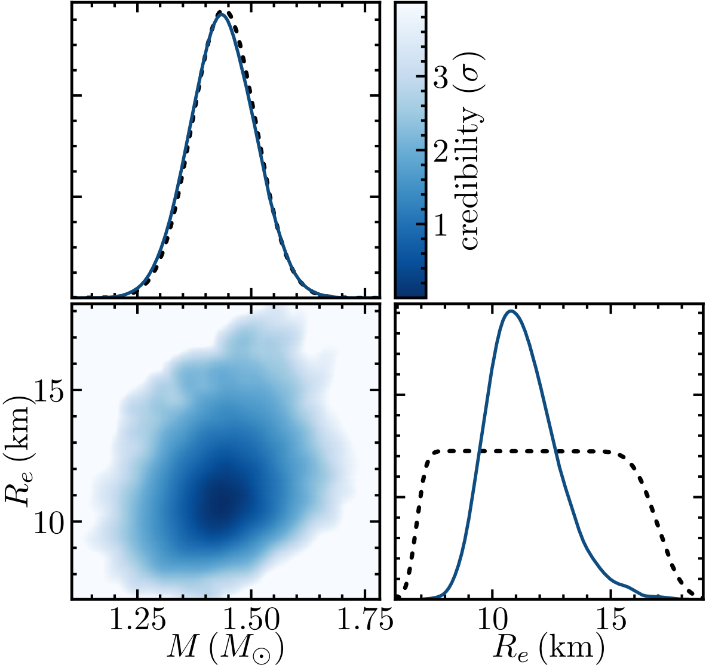
图注：Mass and radius posteriors (solid lines in the one-dimensional plots; color weighting in the two-dimensional plot), along with their one-dimensional priors (dashed lines), for our featured general three-circular-spot model fit to the NICER data. The mass posterior is clearly determined almost entirely by the prior, but the radius posterior is strongly informed by the X-ray data.
对应解读：“建议重点查看的图表”第4项与“关键图表逐图导读”图3：质量--赤道半径后验图。
入选理由：这是本文半径结论的核心图，直接给出三圆形热斑 NICER 拟合下的质量和半径后验，并同时显示一维先验。图注明确指出质量后验几乎由射电质量先验决定，而半径后验主要由 X 射线数据约束，正好对应日报中关于半径可信区间、质量先验边界和紧致度退化的重点解读。
来源与置信度：\(arxiv_source\)；high；\(arxiv_source\) / ms.tex:figure[1]
Fig06
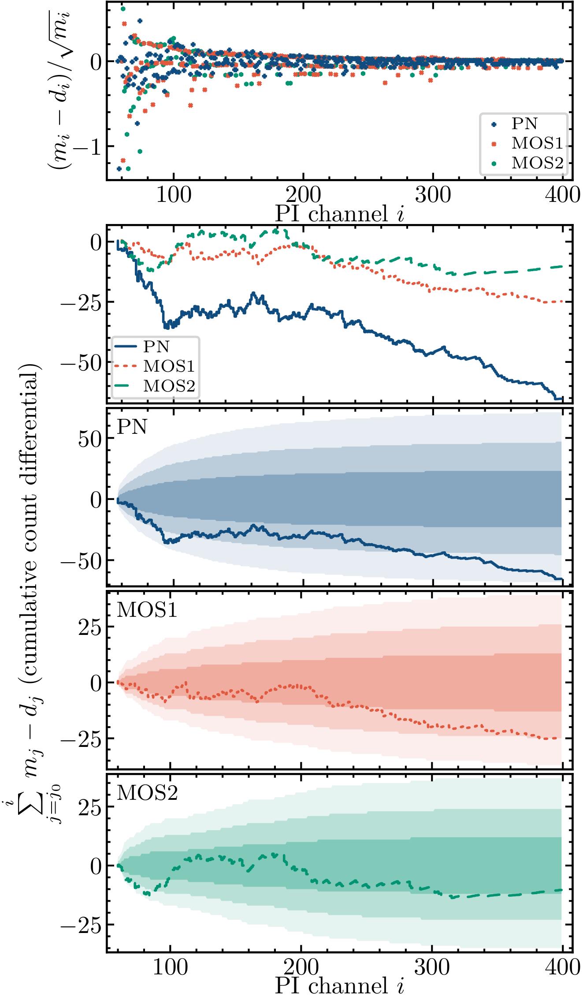
图注：Comparison between the counts predicted by the best joint-fit model and the data for the three XMM-Newton instruments, as function of PI channel. The top panel displays the normalized residual in each PI channel. The lower panels display the cumulative sum, starting at the minimum PI channel for each instrument $j_0$ ($j_0=57$ for XMM-pn and $j_0=60$ for XMM-MOS1 and XMM-MOS2), of the difference between the model and data. The second panel from the top shows the cumulative differences for XMM-pn, XMM-MOS1, and XMM-MOS2. The remaining three panels plot the cumulative differences for each instrument separately, combined with the $1\sigma$ (darkest region), $2\sigma$, and $3\sigma$ (lightest region) ranges expected from Poisson statistics if the model were correct. We see that in all three instruments, most notably for XMM-pn, the predictions in the best joint-fit model fall short of the data.
对应解读：“建议重点查看的图表”第6项与“关键图表逐图导读”图6：NICER 与 XMM-Newton 联合拟合残差诊断。
入选理由：这是摘要中第二个关键结论的直接证据：联合最佳模型在标准 XMM 背景假设下系统性低估 XMM-Newton 数据。图中按 XMM-pn、MOS1、MOS2 给出归一化残差和累积差异，并标出 1、2、3σ 统计范围，最适合支撑日报对跨仪器张力、连续同号残差和背景假设风险的讨论。
来源与置信度：\(arxiv_source\)；high；\(arxiv_source\) / ms.tex:figure[6]
Fig03
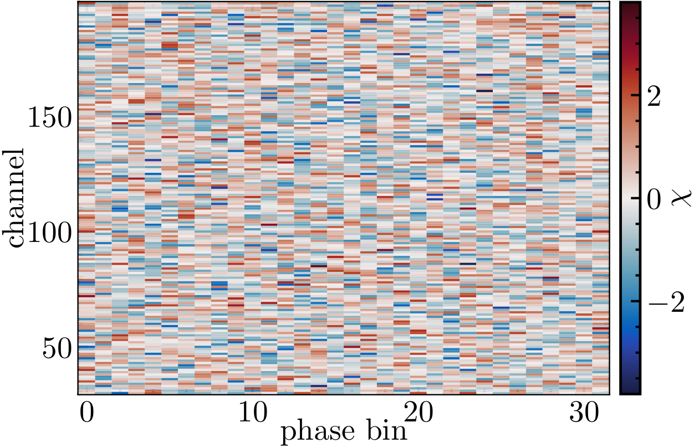
图注：Phase-channel residuals to NICER data from our maximum-likelihood three-circle fit to those data. The color indicates the value of $\chi=(d-m)/m^{1/2}$ for data $d$ and model $m$. NICER PI channel increases upward, whereas the rotational phase bin increases to the right. The lack of any pattern in the residuals, along with the good total $\chi^2/{\rm dof}=5154.89/5252$ indicate that the fit is adequate based on this test.
对应解读：“建议重点查看的图表”第2项与模型拟合段落：最佳三热斑模型的能量--相位残差检验。
入选理由：该图展示 NICER 相位--PI 通道二维残差，横轴为旋转相位、纵轴为能道，颜色为标准化残差 χ=(d-m)/sqrt(m)。它直接检验三圆形热斑模型是否在特定相位或能量范围留下系统结构，是判断脉冲轮廓拟合是否可靠的关键诊断图，比单纯的相位平均光变更能揭示模型失配。
来源与置信度：\(arxiv_source\)；high；\(arxiv_source\) / ms.tex:figure[3]
Fig04
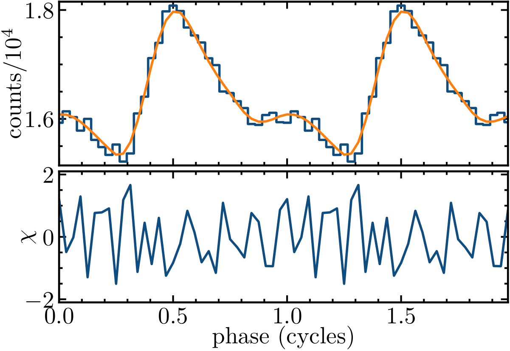
图注：Top panel: bolometric counts from the NICER data (histogram) and the NICER predictions from the best-fitting three-circle model (orange curve). Bottom panel: $\chi=(d-m)/m^{1/2}$ for the bolometric data, where $d$ is the number of observed NICER counts and $m$ is the predicted number for each of the 32 rotational phase bins. Again, no patterns are evident and there are no notable outliers, suggesting that the model passes this test of goodness of fit.
对应解读：“建议重点查看的图表”第2项与“关键图表逐图导读”图1/图2相关内容：最佳拟合脉冲轮廓及残差。
入选理由：该图给出 NICER bolometric 折叠脉冲轮廓的数据直方图、最佳三圆形热斑模型曲线以及 32 个相位 bin 的残差。它比二维残差图更直观地显示峰位、峰宽和整体调制幅度是否被模型重现，适合嵌入日报帮助读者快速理解波形拟合质量。
来源与置信度：\(arxiv_source\)；high；\(arxiv_source\) / ms.tex:figure[4]
Fig07
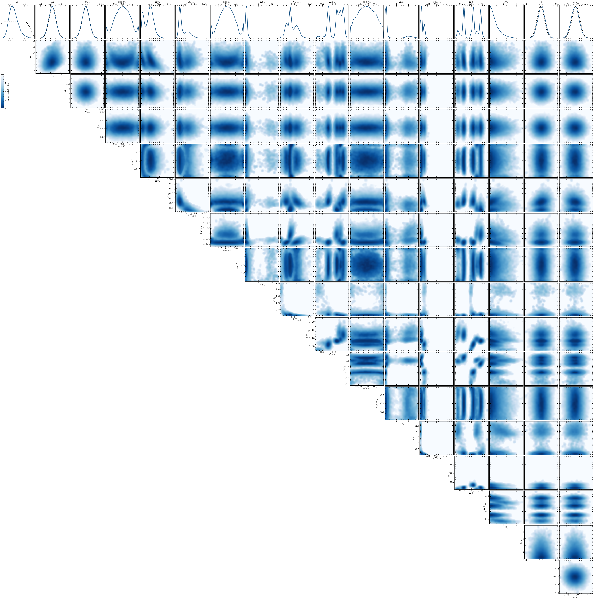
图注：Posterior probability density distributions from our analysis of the NICER data on PSR~J0614$-$3329, where the units are the same as in Table~\(\ref{tab:posteriors}.\) This corner plot displays results for our featured model, in which we have three uniform-temperature circular spots with arbitrary overlap. Dotted traces in the one-dimensional distributions depict prior information.
对应解读：“建议重点查看的图表”第5项与模型拟合段落：三热斑模型参数后验和退化关系。
入选理由：这是三等温圆形热斑模型的 posterior corner plot，包含参数边缘分布和相关性，并叠加先验信息。它最适合支撑日报中关于高维、多峰、热斑位置/大小/温度退化、倾角和几何参数相关性的讨论，比单一最大似然几何示意更能反映参数不确定性和模型依赖性。
来源与置信度：\(arxiv_source\)；high；\(arxiv_source\) / ms.tex:figure[7]
Fig05
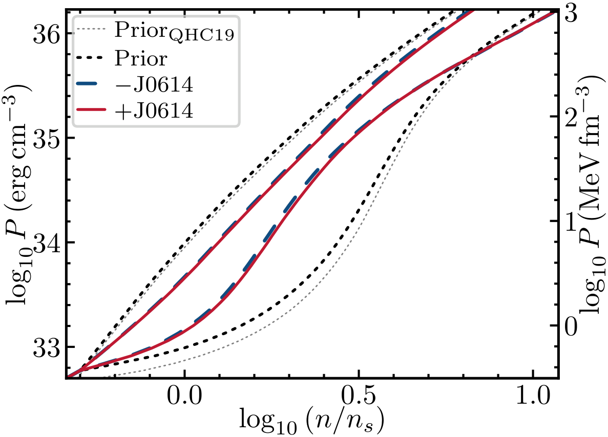
图注：Posterior range in log pressure as a function of log baryon number density in units of the saturation density $n_s=0.16~{\rm fm}^{-3}$, for our QHC21 prior (black dotted line; the grey dotted line shows the QHC19 prior), our posterior using the QHC21 prior with all information other than our PSR~J0614$-$3329 measurement (blue dashed line), and our posterior with all information including our PSR~J0614$-$3329 measurement (red solid line). For each line type, at a given number density the lower curve shows the 5th percentile of the pressure, and the upper curve shows the 95th percentile of the pressure. We do not include constraints based on the mass of PSR~J0952$-$0607 from \(\citet{2026ApJ...996..101R}.\) The posteriors (not shown) that use the QHC19 low-density prior are essentially indistinguishable from the posteriors that we display here. We see that our results for PSR~J0614$-$3329 are broadly consistent with our previous analyses, as indicated by the small change that inclusion of this measurement makes to the pressure posterior. See the main text for additional details.
对应解读：“建议重点查看的图表”第7项：PSR J0614-3329 半径测量对状态方程压力--密度约束的影响。
入选理由：该图比较加入和不加入 PSR J0614-3329 测量时，QHC21 先验下压力随重子数密度的 5%--95% 后验范围变化。它直接对应日报中“不要只看最终彩色带，而要看该源加入前后改变多少”的提醒，并显示这次半径测量与既有 EOS 约束总体一致、对压力后验改变较小。
来源与置信度：\(arxiv_source\)；high；\(arxiv_source\) / ms.tex:figure[5]
强相关工作
这篇工作属于 NICER 毫秒脉冲星脉冲轮廓半径测量系列。最直接的同类工作是 PSR J0030+0451 的 NICER 半径测量和 PSR J0740+6620 的 NICER 半径测量，它们分别代表无强质量先验的近邻毫秒脉冲星和高质量毫秒脉冲星案例。检索关键词可用 “NICER pulse profile modeling neutron star radius PSR J0030+0451”、“NICER PSR J0740+6620 radius”、“PSR J0614-3329 NICER radius”。
理论和张力背景包括冷催化物质状态方程、\(2\,M_\odot\) 脉冲星最大质量、GW170817 潮汐形变，以及核实验对对称能斜率的约束。本文如果给出较小半径端支持，会与偏软状态方程更相容；但如果联合其他源仍要求支撑 \(2\,M_\odot\) 以上最大质量，就会限制高密度处不能过软。检索关键词可用 “neutron star equation of state NICER gravitational waves”、“dense matter equation of state radius 1.4 solar mass”、“XMM-Newton NICER cross calibration background pulsar”。
相反或需谨慎对照的观点主要集中在热斑模型系统误差上。有些研究强调非圆形热斑、偏心极冠、磁化大气或未建模背景会改变半径后验；也有研究讨论不同分析团队在同一 NICER 数据上采用不同模型时得到的半径差异。本文的 XMM-Newton 张力正好为这种谨慎态度提供实例：跨仪器数据不是简单叠加，而是系统误差诊断。
同一事件 / 同类源线索：
- https://arxiv.org/abs/2609.00965
- https://arxiv.org/pdf/2609.00965
- https://heasarc.gsfc.nasa.gov/docs/nicer/
相似工作：
- https://arxiv.org/abs/1912.05705
- https://arxiv.org/abs/1912.05707
- https://arxiv.org/abs/2105.06979
- https://arxiv.org/abs/2105.06980
基础理论 / 方法工作：
- https://arxiv.org/abs/1608.08676
- https://arxiv.org/abs/1706.10202
- https://arxiv.org/abs/1805.11581
- https://arxiv.org/abs/1903.09121
相反观点 / 张力线索：
10. Equation of state and neutron star properties with new mass-radius constraints from PSR~J1614--2230, PSR~J2124--3358, and 47~Tuc~X7
- 来源：arXiv / astro-ph.HE
- 链接：https://arxiv.org/abs/2609.00173v1
- 作者：Melissa Mendes, Isak Svensson, Hannah Gottling, Kai Hebeler, Achim Schwenk, Nathan Rutherford, Lucien Mauviard, Christine Kazantsev
- 评分：novelty 7/10，importance 8/10，relevance 8/10，final 8.70/10
- 推荐理由：Combined neutron-star equation-of-state inference using new mass-radius constraints; important compact-object result in astro-ph.HE, though less directly tied to gamma-ray or cosmic-ray astronomy.
中文题目：用来自 PSR J1614--2230、PSR J2124--3358 和 47 Tuc X7 的新质量—半径约束更新中子星物态方程推断
做了什么：这篇论文把三个新的中子星质量—半径信息，特别是重质量脉冲星 PSR J1614--2230，加入到已有的物态方程联合推断中；联合数据包括手征有效场论给出的核密度附近约束、NICER 脉冲轮廓、LIGO/Virgo 双中子星并合潮汐形变，以及其他 X 射线质量—半径信息。核心结论是：新数据把重中子星的半径后验整体推向更小，量级约为 \(0.4\,{\rm km}\)，并显著收紧约 \(3\,n_{\rm sat}\) 附近的压力和声速后验。更重要的是，半径分布变得更由天体物理数据本身决定，而不是强烈依赖高密度外推形式。作者还反过来利用联合物态方程推断，对 PSR J2124--3358 和 47 Tuc X7 这两个质量仍较不确定的源给出质量预测。
为什么重要：中子星半径差 \(0.4\,{\rm km}\) 看似很小，但在物态方程推断里已经足以改变几倍核饱和密度处压力 \(P\)、声速 \(c_s\) 和最大质量支撑机制的后验。PSR J1614--2230 是接近 \(2\,M_\odot\) 的重星，它的质量—半径信息直接作用于高密度区，而不是只约束典型 \(1.4\,M_\odot\) 星的外层和中等密度。因此，这篇文章重要之处在于把新的重星半径信息放进统一贝叶斯框架，检验它是否真的迫使高密度物质更软，还是仅仅由先验或参数化造成。
理论 / 观测 / 仪器方法价值：对理论来说，本文把低密度手征有效场论、高密度参数化延拓以及可选的微扰 QCD 约束放在同一推断链条中，给出了压力 \(P(n)\)、能量密度 \(\epsilon(n)\)、声速 \(c_s^2={\rm d}P/{\rm d}\epsilon\) 的更新后验。对观测来说，它量化了新质量—半径后验怎样改变 NICER、引力波和 X 射线源联合约束，而不是只报告单个源的半径。对方法来说，它展示了当天体物理数据逐渐增多后，高密度延拓模型的不确定性如何被压低，以及哪些密度区间仍由先验主导。
为什么应该关注：如果你关心中子星是否含有超子、夸克物质、强一阶相变，或关心未来 eXTP、Athena、STROBE-X、下一代引力波探测器能否区分物态方程，这篇文章值得看。它不是提出一个新物态方程模型，而是在问一个更实际的问题：新增的几个半径测量在全局推断中到底移动了什么、移动了多少、是否足以改变我们对 \(2\,M_\odot\) 星内部压力和声速的判断。
展开详细解读：文章讲解、背景、理论、重点章节、图表与相关工作
文章详细讲解
科学问题：中子星物态方程推断的关键瓶颈，是如何把核物理低密度理论、重中子星最大质量、X 射线半径、NICER 脉冲轮廓和双中子星并合潮汐形变放进同一概率框架。不同数据对不同密度敏感：典型质量星约束 \(1\text{--}2\,n_{\rm sat}\) 到几倍 \(n_{\rm sat}\) 的压力，接近 \(2\,M_\odot\) 的星则把约束推向更高中心密度。本文关注的问题是，新加入的 PSR J1614--2230、PSR J2124--3358 和 47 Tuc X7 的质量—半径信息，会不会系统性地改变半径、压力和声速后验，尤其是高质量中子星是否比此前推断更小。
作者怎么做：作者采用联合物态方程推断。低密度部分由手征有效场论在核密度附近提供先验或约束，高密度部分用不同延拓方案表示，以测试参数化依赖；部分模型还加入微扰 QCD 在极高重子化学势下的渐近约束。每一条候选物态方程都需要满足因果性、热力学稳定性和观测到的高质量中子星要求，然后通过 Tolman--Oppenheimer--Volkoff 方程生成质量—半径关系 \(M(R)\)、潮汐形变 \(\Lambda(M)\) 等可观测量，再与 NICER、LIGO/Virgo、X 射线源和新质量—半径后验相乘得到联合后验。
关键结果：最大影响来自 PSR J1614--2230。根据摘要，新质量—半径信息使重中子星半径向小半径移动约 \(0.4\,{\rm km}\)。这意味着对于接近 \(2\,M_\odot\) 的星，先前允许的一部分较硬高密度物态方程被削弱。联合天体物理数据还使半径后验更“数据驱动”：不同高密度延拓给出的半径分布差异变小，说明观测似然在相关密度区间开始超过参数化先验的影响。对物态方程本身，压力和声速后验在约 \(3\,n_{\rm sat}\) 附近明显收紧，这是连接可观测半径和内部微观物理最值得关注的密度区。
局限和下一步：这类推断仍受若干系统误差限制。质量—半径后验本身依赖大气模型、距离、吸收、热点几何、背景处理和仪器响应；高密度延拓虽然多样，但仍不等价于遍历所有可能的强相互作用相结构；微扰 QCD 约束离中子星中心密度很远，主要通过插值或一致性条件间接影响后验。下一步最需要的是更多高质量星的可靠半径、更多双中子星并合的潮汐形变和后并合信息，以及在相变模型、非参数声速模型和核物理先验之间做更系统的模型比较。
关键结果是怎么做出来的
本文最重要的证据链，是把三组新的质量—半径信息并入已有的全局物态方程样本，而不是单独重拟合某一个源。新源包括 PSR J1614--2230、PSR J2124--3358 和 47 Tuc X7。三者中 PSR J1614--2230 的权重最大，因为它是重质量脉冲星；在 TOV 解中，重星的中心密度更高，因此其半径后验对约 \(2\text{--}4\,n_{\rm sat}\) 的压力和声速更敏感。PSR J2124--3358 与 47 Tuc X7 的质量仍较不确定，所以它们更多提供边际约束，并在联合物态方程下可被反向预测质量。
样本选择上，作者不是自由拟合任意 \(M\) 与 \(R\)，而是先生成满足核物理、稳定性、因果性和最大质量条件的一族物态方程，再由每条物态方程计算完整 \(M\)-\(R\) 曲线。然后对每个观测源，在该曲线上按源质量进行插值或积分，读取相应半径、潮汐形变等预测量，与源的二维质量—半径似然相乘。这样做的好处是，所有源共享同一个物态方程；某个源要求的小半径会同时反馈到其他质量区间和 \(P(\epsilon)\) 后验。
显著性或置信度在这类工作中通常不是以“发现 \(N\sigma\)”表达，而是以后验位移、可信区间收缩和模型间一致性来表达。摘要给出的可检验量包括：重中子星半径后验约向小半径移动 \(0.4\,{\rm km}\)；压力 \(P\) 与声速 \(c_s\) 在约 \(3\,n_{\rm sat}\) 附近明显收紧；并且联合天体物理信息使半径后验对高密度延拓方案的敏感性降低。读者应在论文中查看加入新数据前后的后验比值、\(68\%\) 和 \(95\%\) 可信带，以及不同高密度参数化之间的重叠程度。
支撑结论的图表大概率包括：质量—半径后验带的前后对比图，压力—密度或压力—能量密度可信带，声速平方 \(c_s^2\) 随密度变化的后验，以及各观测源在 \(M\)-\(R\) 平面上的二维约束。关键不是只看最佳拟合曲线，而是看新数据是否排除了此前较大半径的一簇曲线，以及这种排除是否在不同高密度延拓和有无微扰 QCD 约束时都存在。
主要系统误差来自两端：观测端的新质量—半径后验依赖源模型，理论端的物态方程族依赖低密度手征有效场论截断误差和高密度延拓方式。稳健性检验应包括不同高密度参数化、是否加入微扰 QCD、是否逐个移除新源、是否改变核物理先验范围，以及对最大质量约束的处理。若只有 PSR J1614--2230 驱动半径变小，作者需要展示这一点；若 PSR J2124--3358 和 47 Tuc X7 在联合后验中仅弱约束，也应通过留一法或贝叶斯因子式比较说明。
展开背景、理论、公式、模型、章节和图表导读
背景知识
中子星是把冷致密强相互作用物质带到天体尺度的实验室。其核心密度可达到核饱和密度 \(n_{\rm sat}\) 的数倍，温度相对费米能通常较低，因此主要由冷物态方程 \(P(\epsilon)\) 决定结构。我们无法在地面实验中直接制备这种低温高重子密度物质，所以中子星的质量、半径、潮汐形变和最大质量成为反推强相互作用的主要窗口。
历史上，物态方程推断有两个长期张力。一方面，约 \(2\,M_\odot\) 的脉冲星要求物态方程在高密度足够硬，才能支撑大质量不坍缩。另一方面，NICER 和引力波潮汐形变倾向于半径不太大，这要求在中等密度不能过硬。如何同时得到较小半径和较大最大质量，常常迫使模型在声速 \(c_s\) 或相变结构上出现非平凡行为。
近几年值得重新看的原因，是数据种类真正开始互补。NICER 脉冲轮廓给出若干毫秒脉冲星的质量—半径约束；LIGO/Virgo 的 GW170817 等事件给出潮汐形变约束；静态 X 射线源、热斑模型和球状星团源提供额外半径信息；核理论在 \(n_{\rm sat}\) 附近的手征有效场论计算也更系统地量化了不确定性。单个数据集可能仍宽，但联合起来已能实质性压缩物态方程空间。
常见误区之一，是把“半径测量”理解成直接测出了某颗星的几何半径。实际半径通常是模型依赖的后验，涉及大气组成、热点几何、距离、吸收、仪器标定和背景。另一个误区，是认为 \(1.4\,M_\odot\) 星半径就能完全决定高密度物质；事实上不同质量星采样不同中心密度，重星半径和最大质量对更高密度更敏感。还有一个误区，是把微扰 QCD 约束看成直接适用于中子星中心；它更像极高密度边界条件，通过热力学一致性间接限制可行插值。
基础理论 / 方法脉络
基础物理图像是静态、球对称、冷中子星由广义相对论流体静力平衡支撑。给定一条冷物态方程 \(P(\epsilon)\)，TOV 方程决定从中心压力 \(P_c\) 积分到表面 \(P=0\) 后得到的质量 \(M\) 和半径 \(R\)。因此观测到的 \(M\)、\(R\) 和潮汐形变 \(\Lambda\) 不是彼此独立的任意点，而必须落在同一条由物态方程生成的序列上。
半径主要由几倍核饱和密度以内的压力决定。粗略说，在典型质量附近，较高的 \(P(1\text{--}2\,n_{\rm sat})\) 会产生较大的半径；重星的半径和最大质量则更依赖 \(2\text{--}5\,n_{\rm sat}\) 的物态方程。声速平方 \(c_s^2={\rm d}P/{\rm d}\epsilon\) 是诊断高密度刚性的关键量。如果需要小半径又要支撑 \(2\,M_\odot\)，模型可能需要在某些密度区快速变硬，表现为 \(c_s^2\) 的峰或平台。
本文的模型假设是：低密度由手征有效场论约束，高密度用若干灵活延拓覆盖未知强相互作用行为，并可加入极高密度微扰 QCD 边界。每条候选物态方程要满足热力学稳定性 \({\rm d}P/{\rm d}\epsilon>0\)、因果性 \(c_s\leq c\)，以及观测最大质量下限。然后用这些候选物态方程预测 \(M(R)\)、\(\Lambda(M)\)、压力和声速可信带。
观测方法上，NICER 脉冲轮廓通过旋转热斑的相位分辨 X 射线波形推断紧致度 \(GM/(Rc^2)\) 和几何参数；引力波通过并合波形相位中的潮汐项约束 \(\Lambda\)；静态 X 射线源通过光谱归一化、温度、距离和大气模型推断表观半径。退化关系很强：例如质量 \(M\)、半径 \(R\)、热斑余纬、倾角、距离和吸收都可能互相补偿；在物态方程层面，低密度压力、高密度声速峰和相变位置也可能产生相似的 \(M\)-\(R\) 曲线。
因此，本文真正有价值的不是给出一个单点半径，而是比较加入新质量—半径信息前后，整族物态方程后验如何移动。若不同高密度延拓在联合数据下收敛到相近半径和相近 \(P(n)\)，说明约束开始由观测主导；若不同延拓仍给出不同声速结构，则说明微观相结构仍未被观测唯一决定。
公式与推导
第一步，从冷中子星的广义相对论静水平衡开始。设 \(r\) 为径向坐标，\(m(r)\) 为半径 \(r\) 内的引力质量，\(P(r)\) 为压强，\(\epsilon(r)\) 为能量密度，则 TOV 方程为
这里 \(G\) 是引力常数，\(c\) 是光速。给定物态方程 \(P(\epsilon)\) 和中心压力 \(P_c\)，该方程决定压强如何向外递减。
第二步，质量连续方程给出
从 \(m(0)=0\) 与 \(P(0)=P_c\) 积分到 \(P(R)=0\)，即可得到恒星半径 \(R\) 和总质量 \(M=m(R)\)。这一步把微观输入 \(P(\epsilon)\) 映射为宏观曲线 \(M(R)\)。
第三步，声速是物态方程刚性的局部诊断量：
热力学稳定性要求 \(c_s^2>0\)，因果性要求 \(c_s^2\leq c^2\)。本文关注新数据如何收紧 \(c_s^2\) 在约 \(3\,n_{\rm sat}\) 附近的后验，因为这一区间正是重中子星半径和最大质量共同敏感的区域。
第四步，低密度核物理通常以重子数密度 \(n\) 的能量泛函表示。冷物质的压强可由每重子能量 \(E/A\) 得到：
这里 \(n_{\rm sat}\) 是核饱和密度标尺。手征有效场论给出 \(n\sim n_{\rm sat}\) 附近的 \(E/A\) 和 \(P(n)\) 及其理论误差，作为本文推断的低密度锚点。
第五步，潮汐形变把引力波观测连接到半径。无量纲潮汐形变可写为
其中 \(k_2\) 是二阶 Love 数，依赖恒星内部结构。由于 \(\Lambda\) 对 \(R\) 近似按五次方敏感，引力波并合对大半径物态方程有很强排除力。
第六步，X 射线和 NICER 数据常以源的质量—半径似然进入联合推断。对某个源 \(i\)，若物态方程参数为 \(\theta\)，源质量为 \(M_i\)，则半径由 TOV 解给出 \(R_\theta(M_i)\)，源似然可形式化写为
其中 \(p_i(M,R)\) 是观测给出的二维质量—半径概率密度，\(\pi_i(M_i)\) 是质量先验或外部质量约束。
第七步，多信使联合后验可写为
这里 \(D\) 表示全部数据，\(\pi(\theta)\) 包括手征有效场论、高密度延拓、稳定性和因果性先验；\(\mathcal{L}_{\rm new}\) 对应 PSR J1614--2230、PSR J2124--3358 和 47 Tuc X7 的新质量—半径信息。
第八步，评估新数据影响常用后验位移和可信区间收缩。例如某质量 \(M_\star\) 处半径的后验均值变化可写为
本文摘要报告重星半径的 \(\Delta R\) 约为 \(-0.4\,{\rm km}\)。负号表示新信息偏好更小半径。
第九步，压力后验收紧可用分位宽度表示：
其中 \(P_{84}\) 和 \(P_{16}\) 是压力后验在密度 \(n\) 处的 \(84\%\) 与 \(16\%\) 分位数。若加入新数据后 \(W_P(3n_{\rm sat})\) 明显变小，就说明观测确实压缩了约 \(3\,n_{\rm sat}\) 的可行物态方程空间。
模型拟合 / 应用方法
本文属于层级贝叶斯物态方程拟合。底层参数 \(\theta\) 描述一条候选物态方程，包括低密度核物理输入、高密度延拓参数，以及可能的微扰 QCD 一致性条件。中间层是由 TOV 方程确定的确定性映射：\(\theta\rightarrow M(R)\)、\(\theta\rightarrow \Lambda(M)\)、\(\theta\rightarrow P(n)\)、\(\theta\rightarrow c_s^2(n)\)。观测层则由各源的质量—半径似然、引力波潮汐似然和最大质量约束组成。
拟合量不只是单个半径，而是一组函数的后验。读者应关注某一质量处的半径 \(R(M)\)、典型 \(1.4\,M_\odot\) 星的半径、重星半径、最大质量 \(M_{\rm max}\)、压力 \(P(n)\) 和声速 \(c_s^2(n)\) 的可信带。PSR J1614--2230 这类重星数据会显著改变高质量段 \(R(M)\)，并通过同一条物态方程反馈到 \(P(n)\) 与 \(c_s^2(n)\)。
似然方面，质量—半径观测通常提供二维后验或样本，实际联合时需要注意不要重复使用先验。若某个观测团队发布的是后验样本而非纯似然，作者需要除以原始先验或采用一致的重加权策略。引力波部分也类似：潮汐形变后验依赖波形模型、自旋先验和质量先验；NICER 部分依赖热点模型和背景处理。残差诊断在这里表现为：物态方程后验能否同时穿过各源的高概率区域，而不是被某一个源强行拉向与其他源不一致的位置。
退化关系主要有三类。第一，半径与低中密度压力退化：不同 \(P(n)\) 形状可给出相近 \(R_{1.4}\)。第二，小半径与大最大质量之间存在结构退化：可以通过中密度较软、高密度快速变硬来同时满足。第三，观测源模型退化：例如 X 射线光谱中的距离、吸收和大气组成可改变半径后验；NICER 中热点几何与紧致度也可互相补偿。这些退化决定了为什么作者需要比较不同高密度延拓和数据组合。
模型可能失败的地方也很明确。如果真实中子星存在强一阶相变并导致孪生星分支，而高密度延拓没有足够灵活性，推断可能低估半径或声速的不确定性。若某个新源的质量—半径后验存在未建模系统误差，它可能在联合物态方程中造成看似显著的压力收紧。实际应用中，应把本文结论理解为“在给定源模型和物态方程族下，新数据如何移动后验”，而不是无模型地测出了 \(3\,n_{\rm sat}\) 的压力。
重点章节 / 结果段落怎么读
数据与约束部分应首先阅读。重点看作者如何纳入 PSR J1614--2230、PSR J2124--3358 和 47 Tuc X7 的质量—半径信息，这些信息是以二维似然、后验样本还是摘要统计量进入分析；同时确认旧数据集包括哪些 NICER 源、哪些 LIGO/Virgo 事件、哪些 X 射线源和哪些质量下限。
物态方程构造部分是第二个重点。读者应看低密度手征有效场论适用到何密度、误差带如何实现，高密度延拓采用哪些参数化或非参数方案，是否允许强相变，是否强制因果性与稳定性，以及微扰 QCD 约束如何施加。这里决定了“数据驱动”结论是否可信。
联合推断方法部分要关注似然相乘和先验处理。特别要看质量—半径后验是否经过先验修正，引力波潮汐似然是否用完整后验或近似分布，最大质量约束如何写入，以及不同源之间是否假定独立。对于专业读者，这部分比最终半径数值更关键。
主结果部分应按三条线读：第一是 \(M\)-\(R\) 曲线和特定质量半径的后验位移；第二是压力 \(P(n)\) 与声速 \(c_s^2(n)\) 的可信带变化；第三是不同高密度延拓、有无微扰 QCD 约束时结果是否收敛。摘要提到的重星半径约缩小 \(0.4\,{\rm km}\) 和约 \(3\,n_{\rm sat}\) 处压力、声速收紧，应在这里找到直接图表证据。
讨论和稳健性检验部分应看作者如何解释 PSR J1614--2230 的主导作用，以及对 PSR J2124--3358 和 47 Tuc X7 的质量预测。若附录中有留一法、先验敏感性、不同源组合或不同物态方程参数化对比，建议优先阅读，因为这些内容直接决定结论是否只是某个参数化的产物。
建议重点查看的图表
-
新旧数据组合下的质量—半径后验图：看 \(M\)-\(R\) 平面上可信带是否在高质量端向小 \(R\) 移动，尤其是接近 PSR J1614--2230 质量的区域。
-
各观测源的二维质量—半径约束叠加图：看 PSR J1614--2230、PSR J2124--3358 和 47 Tuc X7 的高概率区域与联合物态方程曲线是否一致，是否有某个源与整体趋势冲突。
-
压力 \(P(n)\) 或 \(P(\epsilon)\) 后验可信带：重点检查 \(n\approx 3\,n_{\rm sat}\) 附近加入新数据前后可信带宽度是否明显变窄。
-
声速平方 \(c_s^2(n)\) 后验图：看是否出现更窄的峰、平台或上限约束，尤其注意是否触及因果上限或是否需要超过共形值 \(c^2/3\)。
-
不同高密度延拓方案的对比图：看半径和压力后验是否真的变得不敏感于延拓选择；如果不同模型仍分离，说明“数据驱动”程度有限。
-
有无微扰 QCD 约束的对比表或图：检查微扰 QCD 是强烈改变结果，还是只在高密度尾部收紧后验。
-
PSR J2124--3358 与 47 Tuc X7 的质量预测图或表：看联合物态方程给出的质量后验是否比原观测更窄，以及是否主要由其他源间接决定。
关键图表逐图导读
图 1：建议把论文中的 \(M\)-\(R\) 总览图作为第一张关键图来读。横轴通常是半径 \(R\)，纵轴是质量 \(M\)，彩色带或等高线表示加入不同数据组合后的后验可信区间，散点或轮廓表示单个源的观测约束。重点看高质量端的曲线是否整体左移；读图陷阱是不要把最高后验线当作唯一物态方程，可信带宽度才代表剩余不确定性。
图 2：压力—密度图通常横轴为重子数密度 \(n/n_{\rm sat}\) 或能量密度 \(\epsilon\)，纵轴为压力 \(P\)。模型线可能分成旧数据、新数据、含或不含微扰 QCD 的不同颜色。关键结论应体现在 \(n\sim 3\,n_{\rm sat}\) 附近可信带变窄。读图陷阱是低密度端本来就被核理论锚定，真正检验天体数据增益的是中高密度区。
图 3：声速图通常横轴为 \(n/n_{\rm sat}\)，纵轴为 \(c_s^2/c^2\)。图上可能标出因果上限 \(1\) 和共形参考值 \(1/3\)。应看新质量—半径数据是否压低或收窄某个密度区间的 \(c_s^2\)，以及是否仍允许快速变硬。陷阱是 \(c_s^2\) 是导数量，对物态方程参数化和光滑性先验比 \(R(M)\) 更敏感。
图 4：不同高密度延拓的比较图应检查同一可观测量在不同模型族下是否重叠。若加入新数据后 \(R(M)\) 后验带重叠增强，说明半径更由数据决定；若 \(c_s^2(n)\) 仍差异大，说明微观解释仍不唯一。陷阱是模型族之间的相似结果可能来自共享先验或共同的强约束，而不一定代表完全无模型结论。
图 5：源级约束图或 corner plot 应展示 PSR J1614--2230、PSR J2124--3358 和 47 Tuc X7 的质量与半径联合概率。对 PSR J1614--2230，要看其高质量下是否偏好小半径；对后两者，要看质量不确定性是否导致半径约束较宽。陷阱是源级后验和物态方程联合后验不等价，后者已经吸收了其他源的信息。
图 6：预测质量或后验预测检查图应读作一致性测试。横轴可能是质量 \(M\)，纵轴是概率密度，或在 \(M\)-\(R\) 图中显示后验预测带。若 PSR J2124--3358 和 47 Tuc X7 的质量预测明显收窄，说明全局物态方程和其他数据对它们提供了间接约束；但这不是独立质量测量，不能与动力学质量同等看待。
论文原图 / 可嵌入图片
Fig03
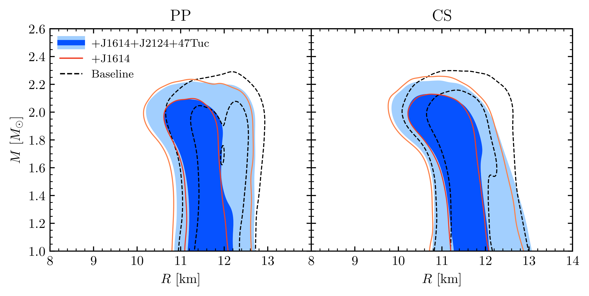
图注：Mass-radius posterior distributions with Gaussian process $\chi$EFT uncertainties at N$^3$LO up to $1.5\nsat$ for the PP (left panel) and CS (right panel) higher-density extensions and pQCD constraints. We compare the mass-radius posterior region for the baseline astrophysics data to those including the new J1614 as well as with J2124 and 47~Tuc constraints. The dark (light) blue regions, the solid red (orange), and the inner (outer) black dashed lines encompass the 68\% (95\%) credible regions.
对应解读：对应“建议重点查看的图表”第1项，以及“关键图表逐图导读”图1：新旧数据组合下的质量—半径后验总览。
入选理由：这张图直接比较 baseline、加入 J1614、以及再加入 J2124 和 47 Tuc 后的质量—半径后验，并同时给出 PP 与 CS 两种高密度延拓。它最能检验日报强调的核心结论：高质量端半径是否向小半径移动、不同延拓下半径后验是否趋于一致。
来源与置信度：\(arxiv_source\)；high；\(arxiv_source\) / main.tex:figure[3]
Fig07

图注：Prior (dashed lines) and posterior distributions (filled) for the pressure at $1, 1.5, 2, 3$, and $4 \esat$ with Gaussian process \chieft\ uncertainties at N$^3$LO up to $1.5\nsat$ and pQCD extension. The left (middle) panel shows the baseline posteriors in comparison with those including the new J1614, J2124, and 47~Tuc constraints, using the PP (CS) high-density extensions. The right panel compares the pressure posteriors of the +J1614+J2124+47Tuc data scenario for the PP and CS extensions.
对应解读：对应“建议重点查看的图表”第3项，以及“关键图表逐图导读”图2：压力在不同密度处的后验收紧。
入选理由：图中直接给出 1、1.5、2、3、4 倍饱和密度处的压力先验和后验，并比较 baseline 与加入新 J1614、J2124、47 Tuc 约束后的结果。它正好支撑日报中关于 n≈3 \(n_sat\) 附近压力后验显著变窄的解读，也包含 PP 与 CS 延拓比较。
来源与置信度：\(arxiv_source\)；high；\(arxiv_source\) / main.tex:figure[7]
Fig08

图注：Same as Figure~\(\ref{fig:PE_violin},\) but for the speed of sound. The horizontal black dashed line denotes the conformal limit, $c_s^2 = 1/3$.
对应解读：对应“建议重点查看的图表”第4项，以及“关键图表逐图导读”图3：声速平方后验与共形极限比较。
入选理由：该图是压力图的声速版本，并标出 \(c_s^2=1/3\) 的共形参考线，能直接判断新质量—半径数据是否收窄声速后验、是否仍允许超过共形值，以及 PP/CS 延拓下微观解释是否仍有差异。
来源与置信度：\(arxiv_source\)；high；\(arxiv_source\) / main.tex:figure[8]
Fig02
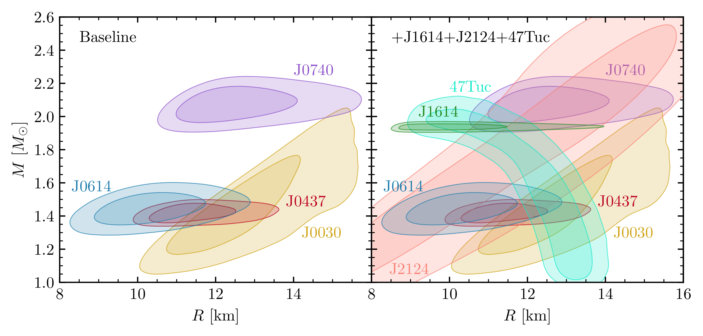
图注：Mass-radius credible regions resulting from the different published analyses used in this work. In all cases, the 68\% and 95\% credible regions are shown. Left panel: The baseline data set is composed of the results from four MSPs, including three with a mass prior. Right panel: Two new MSPs data are added to the baseline data set (J1614, with a mass prior; and J2124 without a mass prior). The mass-radius credible region from the quiescent low-mass X-ray binary X7 in the globular cluster 47~Tuc is also added. See Section~\(\ref{sec:data}\) for details and references corresponding to all credible regions.
对应解读：对应“建议重点查看的图表”第2项，以及“关键图表逐图导读”图5：各观测源的二维质量—半径约束叠加。
入选理由：这张图展示本文使用的各个已发表质量—半径可信区域，并明确区分 baseline 数据集和加入 J1614、J2124、47 Tuc X7 后的数据集。它最适合检查单个源约束是否与联合 EOS 曲线趋势一致，以及是否存在某个源对整体拟合造成张力。
来源与置信度：\(arxiv_source\)；high；\(arxiv_source\) / main.tex:figure[2]
Fig09
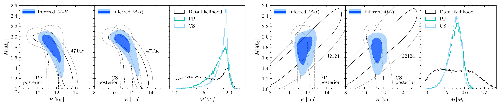
图注：EOS-informed mass-radius posterior predictions for 47~Tuc (top panels) and J2124 (bottom panels) based on the PP (left) and CS (middle) posteriors. The right panels show the mass data likelihood and posterior distributions. The PPM-derived mass-radius posteriors (labeled as ``Data Likelihood'' in the right panel) for both 47~Tuc and J2124---which form the likelihood for the PP and CS mass-radius posteriors---are also shown.
对应解读：对应“建议重点查看的图表”第7项，以及“关键图表逐图导读”图6：PSR J2124--3358 与 47 Tuc X7 的 EOS-informed 质量预测。
入选理由：该图专门给出 47 Tuc 和 J2124 的 EOS-informed 质量—半径后验预测，并在右侧比较质量数据似然与后验分布。它直接支撑日报中关于这两个质量较弱约束源是否被全局 EOS 间接收窄的讨论。
来源与置信度：\(arxiv_source\)；high；\(arxiv_source\) / main.tex:figure[9]
Fig05
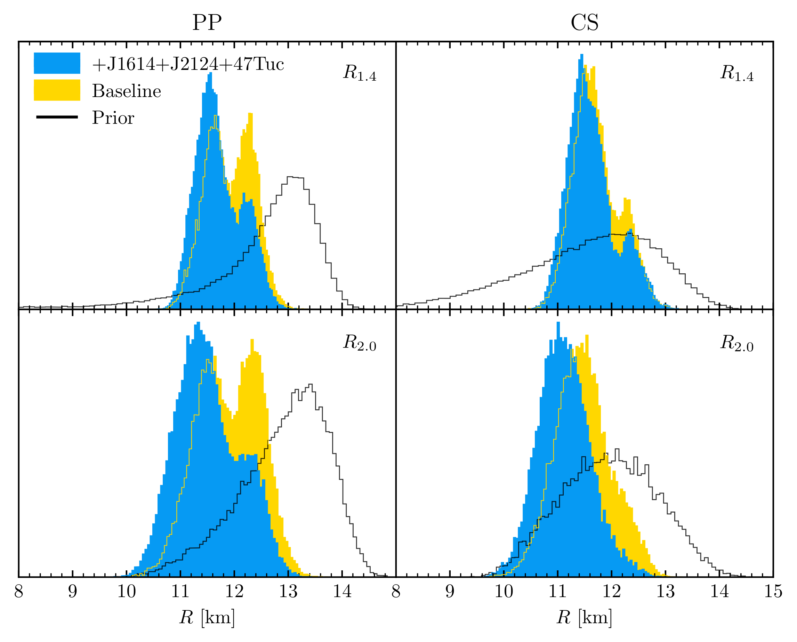
图注：Prior (lines) and posterior distributions (filled) for the radius of a $1.4$\,\Msun\ (upper panels) and a $2$\,\Msun\ (lower panels) NS for the PP (left panels) and CS (right panels) model. Results are shown for the baseline scenario (yellow) and including the new J1614, J2124, and 47~Tuc constraints (blue).
对应解读：对应模型拟合段落中关于 R(1.4 Msun)、R(2 Msun) 和重星半径变化的解读，也补充“建议重点查看的图表”第1和第5项。
入选理由：这张图把 1.4 Msun 与 2 Msun 中子星半径的先验和后验分布分开展示，并比较 baseline 与加入新约束后的结果。它比单纯 M-R 面图更定量地体现重星半径收缩约 0.4 km 的结论，同时可检查 PP 与 CS 延拓下半径后验是否更接近。
来源与置信度：\(arxiv_source\)；high；\(arxiv_source\) / main.tex:figure[5]
强相关工作
这篇工作属于同类源与同类方法的延续：它与 NICER 对 PSR J0030+0451、PSR J0740+6620 等源的脉冲轮廓质量—半径推断，以及 LIGO/Virgo 对 GW170817、GW190425 潮汐形变的物态方程分析处在同一证据链上。PSR J1614--2230 是历史上确立约 \(2\,M_\odot\) 中子星约束的关键源之一，同源文献应检索关键词 “PSR J1614-2230 Shapiro delay mass neutron star equation of state”。47 Tuc X7 是球状星团 47 Tucanae 中常用于静态 X 射线半径推断的源，同源文献应检索 “47 Tuc X7 neutron star radius hydrogen atmosphere Chandra”。PSR J2124--3358 则应检索 “PSR J2124-3358 NICER mass radius”。
基础理论方面，应把本文与 TOV 结构方程、潮汐 Love 数、手征有效场论中子物质计算、声速参数化物态方程、以及微扰 QCD 高密度约束联系起来读。相反观点或潜在张力主要来自：不同 NICER 热点模型给出的半径差异，静态 X 射线源大气组成和距离系统误差，是否允许强一阶相变或孪生星分支，以及微扰 QCD 约束在中子星密度外推中的强弱。检索关键词可用 “neutron star equation of state chiral EFT pQCD multimessenger inference”, “speed of sound neutron star EOS”, “NICER radius systematics”, “twin stars phase transition EOS”。
同一事件 / 同类源线索：
- https://arxiv.org/abs/2609.00173
- https://arxiv.org/abs/1010.5788
- https://arxiv.org/abs/2105.06980
- https://arxiv.org/abs/2105.06979
- https://arxiv.org/abs/1805.11581
相似工作：
- https://arxiv.org/abs/1805.11581
- https://arxiv.org/abs/2105.06980
- https://arxiv.org/abs/2105.06979
- https://arxiv.org/abs/2002.11355
基础理论 / 方法工作：
- https://doi.org/10.1103/PhysRev.55.364
- https://doi.org/10.1103/PhysRev.55.374
- https://arxiv.org/abs/0912.4243
- https://arxiv.org/abs/1303.4662
相反观点 / 张力线索：
11. Redshift Identifiability from Gamma-Ray Burst Prompt Emission
- 来源：arXiv / astro-ph.HE
- 链接：https://arxiv.org/abs/2609.00166v1
- 作者：Shu-Xu Yi
- 评分：novelty 7/10，importance 7/10，relevance 9/10，final 8.70/10
- 推荐理由：Directly about GRB prompt emission and whether redshift information is identifiable in structured-jet scenarios; high relevance to gamma-ray transient interpretation, though mainly theoretical/diagnostic.
中文题目：从伽马暴提示辐射中识别红移：哪些观测量真的含有红移信息？
做了什么：这篇文章讨论一个很实际的问题：只用伽马暴提示辐射，能不能可靠地反推出红移。作者从光子能量、到达时间和通量在相对论喷流与宇宙学红移下的变换出发，指出在现实的结构化喷流中，许多常用提示辐射观测量并不能单独识别红移，因为它们同时受红移 \(z\) 和视线角 \(\theta_v\) 控制。谱峰、谱形、脉冲宽度、时间尺度、通量或计数率都可能落入不同形式的 \(z\)-\(\theta_v\) 简并。文章的核心结论是：真正有希望打破这种简并的，不是简单组合更多同类提示辐射量，而是寻找中心引擎直接刻印的时间尺度，或利用主导辐射斑块之外的喷流区域贡献。
为什么重要：大量伽马暴没有光谱红移。如果提示辐射本身能给出可信红移，样本量会大幅增加，可用于宇宙学、恒星形成史、高红移瞬变搜索和喷流物理。但本文提醒我们：许多经验红移估计方法可能把视线角效应误当成宇宙学红移，尤其在结构化喷流而非简单均匀顶帽喷流图像下。
理论 / 观测 / 仪器方法价值：本文的价值主要在方法论层面：它不提出一个新的经验红移公式，而是给出一个可识别性分析框架，区分哪些观测量在原则上携带独立红移信息，哪些只是同一个相对论多普勒因子的不同投影。对理论建模者，它澄清了结构化喷流中 \(z\)、\(\theta_v\)、洛伦兹因子和本征光度之间的退化；对观测者，它提示应优先寻找中心引擎时间标尺、宽视场多波段约束和非主导斑块辐射特征，而不是盲目把谱峰、持续时间和流量拼成机器学习红移。
为什么应该关注：如果你使用无红移伽马暴样本做群体统计、亮度函数、喷流开角或高红移候选筛选，这篇文章直接关系到你的系统误差预算。它说明，提示辐射红移估计的瓶颈可能不是训练集不够大，而是信息论上不可识别：观测量本身没有足够独立的信息来区分远处正轴暴和近处离轴暴。
展开详细解读：文章讲解、背景、理论、重点章节、图表与相关工作
文章详细讲解
科学问题：伽马暴提示辐射明亮、快速、可由 \(Swift\)、\(Fermi\)、\(SVOM\) 等仪器在高能段直接探测，因此长期以来人们希望从提示辐射的谱峰、持续时间、光变形态、峰值通量或经验相关式中估计红移。问题在于，观测到的能量和时间不仅被宇宙学红移 \(z\) 拉伸，也被相对论喷流的多普勒因子改变。在结构化喷流中，不同视线角 \(\theta_v\) 看到的是不同角向区域，主导辐射斑块的运动方向、洛伦兹因子和本征亮度都可能变化。因此，所谓“红移信息”是否真的可识别，必须从光子层面的变换关系来判断，而不能只看经验相关式是否在训练样本中有效。
作者怎么做：论文把提示辐射观测量按物理来源分成几类。第一类是由主导辐射斑块决定的谱观测量，例如谱峰能量、谱形特征或能段内硬度；第二类是反映喷流共动系物理时间的时间观测量，例如脉冲宽度、谱滞后或变率；第三类是绝对通量或计数率；另外两类则较特殊，分别是中心引擎直接刻印的时间尺度，以及来自主导斑块之外的辐射。作者从洛伦兹变换和宇宙学变换出发，比较这些观测量对 \(z\) 和 \(\theta_v\) 的依赖形式，判断它们是否提供相互独立的约束。
关键结果：文章最重要的结论是，主导斑块的谱观测量和共动系物理时间观测量遭遇同一种 \(z\)-\(\theta_v\) 简并，因为它们都依赖组合因子 \(\mathcal{D}/(1+z)\) 或其倒数，其中 \(\mathcal{D}\) 是多普勒因子。绝对通量或计数率也受到简并，只是形式不同，因为它还涉及光度距离 \(d_L(z)\)、本征光度、角向能量分布和探测器响应。由于伽马暴本征光度跨度很大，把谱峰、时间尺度和流量简单组合起来通常不能唯一解出 \(z\)，除非额外强加很窄的本征关系或喷流结构先验。
局限和下一步：本文偏重原则性可识别性，而不是给出面向某个仪器数据集的红移估计器。因此，它的结论依赖于“结构化喷流”和“主导斑块”这一物理图像，也没有完全替代实际样本中的层级贝叶斯建模、探测选择效应和仪器响应模拟。下一步应把该框架用于真实 \(Fermi/GBM\)、\(Swift/BAT\) 或未来 \(SVOM\)、\(THESEUS\) 样本，检验哪些光变特征确实可能是中心引擎时间标尺，哪些多峰或软尾成分可被解释为非主导斑块辐射，并量化它们对红移后验的实际收缩程度。
关键结果是怎么做出来的
本文的证据链不是建立在一个新的大样本拟合表上，而是建立在对观测量变换性质的分类分析上。作者考虑的是现实结构化喷流：观测者看到的提示辐射通常由一个“主导斑块”贡献最大，该斑块的速度方向与视线夹角决定多普勒因子 \(\mathcal{D}\)，而宇宙学红移给出额外因子 \(1+z\)。因此，样本选择的概念不是“多少个具体伽马暴”，而是“哪些可观测量类别”在任意结构化喷流场景中是否保留独立红移信息。
第一条核心论证针对谱观测量。若某个谱特征反映的是主导斑块共动系的特征能量 \(E'\)，观测能量大致按 \(E_{\rm obs}\propto \mathcal{D}E'/(1+z)\) 缩放。于是，一个更大的红移 \(z\) 可以被一个更大的 \(\mathcal{D}\) 抵消；而 \(\mathcal{D}\) 又可由更小的视线角、更大的洛伦兹因子或不同喷流角向结构给出。只要 \(E'\) 本身存在分布，谱峰或硬度就不能唯一反推 \(z\)。
第二条论证针对时间观测量。若脉冲宽度、冷却时间、角向时间或共动系辐射过程决定某个内禀时间 \(t'\)，观测时间通常按 \(t_{\rm obs}\propto (1+z)t'/\mathcal{D}\) 伸缩。它与谱峰的依赖是互逆的，因此在理想情况下二者乘积可能消掉 \(\mathcal{D}/(1+z)\)，但消掉之后得到的是 \(E't'\) 一类本征组合，而不是 \(z\)。如果本征物理量并非标准尺或标准钟，这种组合仍不能提供可识别红移。
第三条论证针对通量或计数率。流量包含 \(\mathcal{D}\) 的高次幂增强、光度距离 \(d_L(z)\) 衰减、谱 \(K\) 修正、探测器能带和本征光度函数。形式上通量似乎引入了 \(d_L(z)\)，应当帮助约束红移；但伽马暴各向同性等效光度和真实喷流亮度跨越多个数量级，且结构化喷流的角向亮度也随 \(\theta_v\) 变化。因此，流量约束容易被本征亮度和视角吸收，不能稳定地打破简并。
论文给出的可行突破口是两类较少被经验红移估计充分利用的信息。第一类是中心引擎刻印时间尺度，例如发动机活动间隔、喷发间歇或某种不随局部辐射斑块多普勒因子变换的全局时间结构；它们主要受 \(1+z\) 伸长，而不完全受主导斑块 \(\mathcal{D}\) 控制。第二类是来自非主导斑块的辐射，例如多峰结构、软尾、宽角成分或离轴贡献；这些成分与主导斑块具有不同 \(\mathcal{D}\) 和角向位置，可能提供几何杠杆臂。支持这些结论的图表应主要展示不同类别观测量在 \(z\)-\(\theta_v\) 平面上的等值线是否重合，以及加入额外类别后等值线是否交叉形成封闭约束。
稳健性方面，本文最需要读者关注的是结论对喷流结构、本征光度分布和中心引擎时间尺度假设的依赖。若假定所有伽马暴有非常窄的本征谱峰或严格标准化的光度关系，红移似乎可被估计；但这类强先验本身可能来自有红移样本的选择偏差。本文的稳健性逻辑是：在允许现实本征离散度和结构化喷流角向变化时，常规提示辐射量的信息维数不足，不能把 \(z\) 与 \(\theta_v\) 分开。
展开背景、理论、公式、模型、章节和图表导读
背景知识
伽马暴提示辐射是高能天体物理中最明亮、也最难标准化的瞬变信号之一。长暴通常与大质量恒星塌缩有关，短暴通常与致密双星并合有关，但二者的提示辐射都来自相对论喷流。观测者直接测到的是有限能带内的光子计数、能谱演化和快速光变，而不是喷流共动系中的真实能量释放过程。
红移是伽马暴物理解释的关键量。没有 \(z\)，观测到的流量不能变成光度，持续时间不能变成本征时间，谱峰不能变成源系谱峰，能量释放也不能与宿主星系、宇宙恒星形成史或早期宇宙联系起来。传统上，可靠红移来自余辉或宿主星系光谱，但许多暴没有及时定位、没有光学余辉、或宿主太暗，导致无红移样本远大于有红移样本。
历史上，人们提出过许多基于提示辐射的经验关系，例如源系谱峰能量与各向同性能量、峰值光度、谱滞后或变率之间的相关。这些关系在有红移样本中看起来有一定趋势，但离散度大、选择效应强，并且常常需要先知道 \(z\) 才能把观测量换到源系。因此，用它们反推 \(z\) 容易出现循环依赖或强先验驱动。
为什么现在值得重新看？一方面，多信使事件和余辉成像已经强烈支持结构化喷流图像，尤其是双中子星并合事件显示离轴观测和角向结构会显著改变观测信号。另一方面，未来高能瞬变巡天会发现更多暗弱、高红移或离轴候选，单靠光学光谱红移会更加不完整。判断提示辐射中哪些信息原则上可识别，是建立大样本统计前必须先解决的问题。
该领域常见误区之一，是把观测谱峰偏低直接解释为高红移。实际上，较小的多普勒因子、较低的洛伦兹因子、较软的本征谱或离轴视角都能造成软化。另一个误区是认为加入更多观测量总能打破简并；如果这些观测量都依赖同一个组合因子 \(\mathcal{D}/(1+z)\)，信息量并不会按变量个数线性增加。
基础理论 / 方法脉络
基本物理图像是相对论运动辐射源的光子变换。喷流中某个小斑块以洛伦兹因子 \(\Gamma\) 运动，速度方向与观测者视线夹角为 \(\psi\)。该斑块发出的光子在观测者系中被多普勒增强，能量提高、到达时间压缩、强度增强；随后宇宙膨胀再把能量降低并把时间拉长。提示辐射观测量实际看到的是这两种变换的合成。
在结构化喷流中，能量、洛伦兹因子和辐射效率可以随极角变化。对给定视线角 \(\theta_v\)，观测信号往往由某个角向区域主导，而不是整个喷流均匀贡献。这个主导斑块可能接近视线，也可能是喷流核心边缘；其 \(\mathcal{D}\) 值控制谱峰和时间尺度。因此，\(\theta_v\) 不是简单的几何附加参数，而是会重塑几乎所有提示辐射量。
本文区分“共动系局部物理量”和“中心引擎全局量”非常关键。局部物理量包括辐射电子冷却、局部脉冲宽度、局部碰撞或磁重联时间等，它们会随主导斑块的 \(\mathcal{D}\) 变换。中心引擎时间尺度则可能对应黑洞或磁星发动机的活动间隔、壳层发射间隔、喷流功率调制周期等，它们先在中心源坐标中定义，再传播到不同喷流斑块，不一定被某个局部主导斑块的多普勒因子简单压缩。
观测方法上，提示辐射红移估计常使用谱拟合得到 \(E_{\rm pk,obs}\)、低高能谱指数、持续时间 \(T_{90}\)、峰值流量、总流量、光变变率、谱滞后等。本文的分析提醒读者：这些量不应只按统计相关性分类，而应按变换律分类。若两个观测量在 \(z\)-\(\theta_v\) 平面上的等值线几乎平行，它们给出的约束并不独立。
常见退化包括 \(z\) 与 \(\mathcal{D}\) 的退化、\(\theta_v\) 与 \(\Gamma\) 的退化、光度距离与本征光度的退化、谱形与探测器能带的退化。系统误差还包括触发阈值导致的亮暴偏置、低信噪比下谱峰估计偏移、有限能带造成的 \(K\) 修正不确定，以及有红移样本相对无红移样本并不代表同一母体。
公式与推导
第一步是相对论多普勒因子。对洛伦兹因子为 \(\Gamma\)、速度 \(\beta c\)、斑块速度方向与视线夹角为 \(\psi\) 的辐射元，
这里 \(\mathcal{D}\) 决定局部辐射在观测者方向的能量和时间变换；在小角度近似下，\(\psi\) 可由喷流角坐标与视线角 \(\theta_v\) 的相对几何给出。
第二步加入宇宙学红移。若共动系光子能量为 \(E'\)，观测能量为
因此任何由主导斑块共动谱特征决定的观测谱峰都满足
这说明 \(E_{\rm pk,obs}\) 约束的是组合 \(\mathcal{D}/(1+z)\)，而不是单独的 \(z\)。
第三步看局部时间尺度。若共动系局部辐射过程给出时间 \(t'\)，则
谱峰和局部时间互为倒数缩放，所以二者相乘得到
这个组合消去了 \(z\) 和 \(\mathcal{D}\)，但也意味着它本身不能提供红移，除非 \(E'_{\rm pk}t'\) 是已知标准量。
第四步看流量。若共动系谱光度为 \(L'_{E'}\)，观测能量流量可概念性写成
这里 \(d_L(z)\) 是光度距离，\(\mathcal{D}^3\) 表示强度和到达率的相对论增强；实际指数会随定义和积分量略有变化，但关键是通量同时含有 \(d_L(z)\)、\(\mathcal{D}\) 与本征光度。
第五步，把探测器能带积分进去，计数率近似为
其中 \(R(E_{\rm obs})\) 是有效面积与响应，\(B\) 是背景计数率。计数率不是纯天体物理量，它还受能带、响应矩阵和触发算法控制，因此用 \(C\) 估计 \(z\) 必须同时处理仪器选择效应。
第六步，用结构化喷流表示视角依赖。若单位立体角能量或光度随极角 \(\theta\) 为 \(\epsilon(\theta)\)，则主导斑块近似给出
其中 \(\theta_*\) 表示对该视线贡献最大的角向位置，\(\eta\) 是辐射效率，\(p\) 取决于具体流量定义。这个式子表明 \(\theta_v\) 会通过 \(\theta_*\)、\(\epsilon\)、\(\eta\) 和 \(\mathcal{D}\) 多重进入亮度。
第七步，红移可识别性可用似然形象表示。给定观测向量 \(\mathbf{y}\)，模型参数包括 \(z\)、\(\theta_v\) 和本征参数 \(\boldsymbol{\phi}\)，
若 \(\mathbf{m}\) 主要依赖 \(q=\mathcal{D}(\theta_v)/(1+z)\)，则存在一条近似等似然谷：
这就是本文所说的 \(z\)-\(\theta_v\) 简并的统计表现。
第八步，中心引擎时间尺度提供不同变换。若发动机坐标中的时间间隔为 \(\Delta t_{\rm eng}\)，并且它不是局部主导斑块共动过程给出的时间，则观测上可近似写成
其中 \(\Delta t_{\rm geom}\) 是传播和角向几何延迟。若 \(\Delta t_{\rm eng}\) 可被独立识别或具有窄分布，它就可能提供与 \(\mathcal{D}/(1+z)\) 不同方向的约束。
第九步，非主导斑块给出几何杠杆臂。若有两个斑块 \(i=1,2\)，它们的谱峰比值为
宇宙学因子 \(1+z\) 在比值中消去，但两个 \(\mathcal{D}\) 的比值约束几何结构；一旦几何被约束，单个谱峰或时间尺度才更有可能反推出 \(z\)。
模型拟合 / 应用方法
如果把本文思想转化为实际模型拟合，参数至少应包括红移 \(z\)、视线角 \(\theta_v\)、喷流角向结构参数、洛伦兹因子分布、本征谱参数、本征时间尺度和光度归一化。观测量可以包括 \(E_{\rm pk,obs}\)、谱指数、\(T_{90}\)、脉冲宽度、谱滞后、峰值光子流量、能量流量、计数光变以及多峰相对延迟。拟合的关键不是变量越多越好，而是判断这些变量是否对 \(z\) 和 \(\theta_v\) 给出不同方向的约束。
似然应在光子计数空间或响应折叠后的谱光变空间中定义，而不是只拟合去响应后的派生量。对 \(Fermi/GBM\) 或 \(Swift/BAT\) 这类数据，合理做法是把源模型通过探测器响应矩阵卷积，加入背景模型，再使用泊松似然或 \(PGSTAT\) 类统计量。若只用目录中的谱峰和流量，必须把测量协方差、触发阈值和缺失红移机制纳入层级模型。
参数退化会非常强。\(z\) 与 \(\theta_v\) 可通过 \(\mathcal{D}/(1+z)\) 退化；\(z\) 与本征光度通过 \(d_L(z)\) 退化；\(\theta_v\) 与喷流核心角、角向能量斜率和 \(\Gamma\) 退化；谱峰与能带边界也会退化。实际后验中应检查是否存在长而弯曲的等概率谷，而不是只报告一个最大似然红移。
系统误差的来源包括有红移训练样本偏亮、余辉容易观测、宿主星系选择偏差、触发算法偏向硬而短的峰、低信噪比下 \(E_{\rm pk}\) 被拉向仪器能带中部，以及不同暴族混合造成的伪相关。若经验红移估计器在训练集上表现良好，但在模拟结构化喷流样本上失败，就说明它可能学到的是选择效应或视角分布，而不是红移。
本文建议的实用方向是，在模型中显式加入中心引擎时间标尺或多斑块辐射。前者可通过寻找重复间隔、长静默期、准周期调制或发动机活动分段来实现；后者可通过联合拟合多峰谱演化、软尾、前驱峰和主峰之间的相对谱峰与延迟来实现。模型成败应看加入这些信息后 \(z\) 的边际后验是否真正收缩，而不仅是最佳拟合 \(\chi^2\) 改善。
重点章节 / 结果段落怎么读
第一，读引言和问题定义时，应抓住“redshift identifiability”不是“红移估计精度”的同义词。作者关心的是观测量在原则上是否含有足够独立的信息来区分 \(z\) 与 \(\theta_v\)，这比建立一个经验预测器更基础。
第二，读光子级变换和结构化喷流设定部分时，应重点跟踪 \(\mathcal{D}\)、\(1+z\)、\(\theta_v\) 如何进入能量、时间和流量。这里是全文逻辑的核心：只要多个观测量共享同一组合因子，它们就不能独立识别红移。
第三，读观测量分类部分时，应把谱量、局部时间量、绝对流量量、中心引擎时间量和非主导斑块量分开。尤其要注意作者不是说所有提示辐射都无用，而是说常规主导斑块观测量通常无力打破简并。
第四，读讨论部分时，应关注经验相关式和机器学习红移估计的隐含先验。文章对这类方法的批评不是统计技术层面的，而是物理信息层面的：如果训练变量没有独立红移信息，复杂模型可能只会编码样本选择和先验。
第五，若论文有附录或补充推导，应优先检查多普勒变换、通量缩放和不同观测量等值线的推导。附录往往决定结论是否依赖特殊谱模型或是否对一般结构化喷流成立。
建议重点查看的图表
-
观测几何示意图：应检查喷流轴、视线角 \(\theta_v\)、主导斑块位置和夹角 \(\psi\) 的定义是否清楚，因为所有后续 \(\mathcal{D}\) 依赖都来自这里。
-
谱观测量在 \(z\)-\(\theta_v\) 平面上的等值线：应看等值线是否沿 \(\mathcal{D}/(1+z)\) 近似保持常数，是否显示远处正轴暴与近处离轴暴的重合。
-
时间观测量的等值线或缩放图：应检查它是否与谱观测量给出互逆但不独立的约束，以及二者组合后是否仍不能唯一给出 \(z\)。
-
通量或计数率缩放图：应看加入 \(d_L(z)\) 后等值线是否明显改变，以及本征光度离散度是否足以淹没这种改变。
-
多观测量联合约束图：应关注联合后验是否形成封闭置信区间，还是仍沿 \(z\)-\(\theta_v\) 方向拉长。若图中只画最佳点而无置信区域，读者要谨慎。
-
中心引擎时间尺度示意或模拟图：应看这类时间标尺的等值线是否与常规谱时量交叉，从而真正增加红移信息。
-
非主导斑块贡献图：应关注次峰、软尾或宽角成分与主峰之间的相对谱峰、延迟和流量比，这些相对量可能约束几何。
-
稳健性或参数扫描表：应检查喷流结构、本征光度函数、\(\Gamma\) 分布和探测阈值变化后，结论是否保持。
关键图表逐图导读
图 1：如果论文给出喷流几何示意，横向或极坐标通常表示喷流角向结构，视线与喷流轴夹角标为 \(\theta_v\)，主导斑块与视线夹角标为 \(\psi\)。读图时要确认主导斑块不是必然位于喷流轴上；结构化喷流中最亮贡献可能来自兼具较高本征亮度和较大 \(\mathcal{D}\) 的区域。陷阱是把 \(\theta_v\) 直接等同于 \(\psi\)。
图 2：若展示谱峰或硬度随 \(z\) 与 \(\theta_v\) 的变化，坐标轴多半是红移和视线角，颜色或等值线代表 \(E_{\rm pk,obs}\) 或类似谱量。关键读法是看等值线是否沿一条长谷延伸；这说明同一观测谱峰可由不同 \(z\) 和 \(\theta_v\) 组合产生。陷阱是只看颜色变化范围，而忽视本征 \(E'_{\rm pk}\) 离散度会进一步放宽约束。
图 3：若展示时间量，例如脉冲宽度、谱滞后或持续时间，坐标轴仍可能是 \(z\) 和 \(\theta_v\)。模型线应体现 \((1+z)/\mathcal{D}\) 的伸缩。主要结论是时间量并不天然提供独立红移；若它反映局部共动物理，就与谱量共享同一简并。读图陷阱是把观测持续时间 \(T_{90}\) 当成纯宇宙学时间膨胀指标，而忽略喷流几何和能带效应。
图 4：若展示流量、峰值通量或计数率，纵轴或颜色可能跨越多个数量级。应同时看模型中是否包含本征光度散布；如果只画固定光度的曲线，\(d_L(z)\) 看起来会给出强约束，但加入真实光度函数后约束会显著变弱。读图陷阱是把通量暗弱直接理解为高红移。
图 5：若展示常规观测量联合约束，重点看置信区间形状。若谱量、局部时间量和流量联合后仍给出沿 \(z\)-\(\theta_v\) 拉长的区域，就支持本文核心结论。读者应检查置信区间是否边缘化了本征光度和谱参数，而不是在固定内禀参数下得到的过窄区域。
图 6：若展示中心引擎时间尺度或非主导斑块辐射的效果，应看新增约束线是否与原来的简并方向相交。对中心引擎时间，坐标可能是观测间隔与红移；对非主导斑块，可能是两峰谱峰比、延迟比或流量比。主要结论应是这些量有潜力提供几何或红移的独立杠杆，但前提是能在数据中可靠识别其物理来源。
论文原图 / 可嵌入图片
Fig01
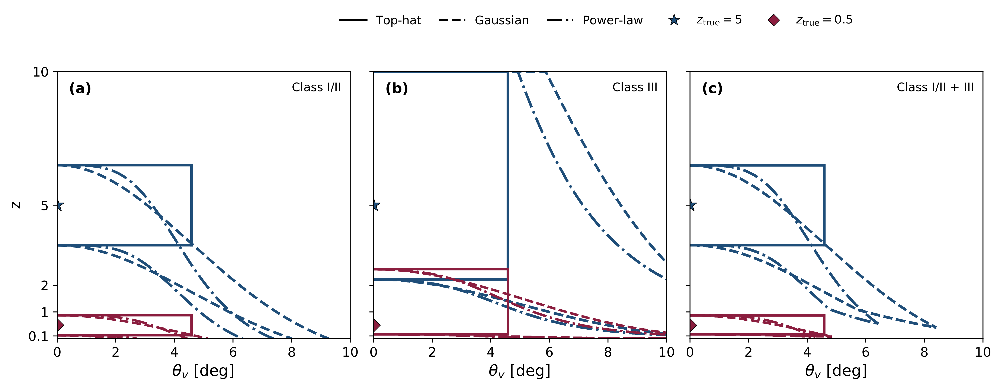
图注：Allowed regions in the $(z,\,\theta_v)$ plane for two fiducial sources, shown in dark blue for $(z,\theta_v)=(5,0^\circ)$ and in dark red for $(z,\theta_v)=(0.5,0^\circ)$, under three jet structure models (solid: top-hat; dashed: Gaussian; dash-dotted: power-law). Panel~(a) shows the constraint from Class~I/II observables, which are derived from spectral energy distribution or jet-physics related time scales under DPA. Panel~(b) shows the constraint from Class~III observables, which are derived from total number or deposited energy of photons. Panel~(c) shows the joint constraint from Class~I\&III observables.
对应解读：对应“建议重点查看的图表”第2、3、4、5项，以及“关键图表逐图导读”中关于谱观测量、时间观测量、通量/计数率和多观测量联合约束的核心解读。
入选理由：这是候选中唯一真实存在的图，并且直接展示了本文核心诊断：在红移 z 与视线角 θ_v 平面上的允许区域。面板(a)对应 Class I/II，即谱观测量和喷流共动系时间尺度，体现它们共享 D/(1+z) 或其倒数导致的同向简并；面板(b)对应 Class III，即总光子数或沉积能量等通量/计数率类观测量，展示加入绝对亮度和距离因子后的约束形态；面板(c)给出 Class I 与 III 的联合约束，可直接检验常规观测量组合后是否仍不能唯一确定红移。图中还比较了 top-hat、Gaussian、power-law 三种喷流结构模型，并用两个基准源展示远处正轴暴与近处源之间的可混淆性，因此最能支撑日报关于 z-θ_v 简并和联合约束局限性的详细解读。
来源与置信度：\(arxiv_source\)；high；\(arxiv_source\) / ApJ-main.tex:figure[1]
强相关工作
这篇文章与伽马暴经验红移估计和谱能量相关式直接相关。经典方向包括 \(E_{\rm pk}\)-\(E_{\rm iso}\) 的 Amati 关系、\(E_{\rm pk}\)-\(L_{\rm iso}\) 的 Yonetoku 关系、谱滞后-光度关系、变率-光度关系等。本文并不是否认这些相关式在有红移样本中存在，而是强调当它们被反向用于无红移暴时，结构化喷流视角效应会造成不可忽略的可识别性问题。建议检索关键词：“GRB prompt redshift estimation”, “Amati relation selection effects”, “Yonetoku relation”, “GRB luminosity indicators”, “GRB pseudo-redshift”。
它也与结构化喷流和离轴观测研究相连。\(GW170817/GRB\ 170817A\) 之后，结构化喷流不再只是理论细节，而是解释低亮度、软谱、延迟和余辉演化的核心框架。本文把这种视角效应推广到一般提示辐射红移估计，提醒读者不要把所有软暗暴都归因于高红移。建议检索关键词：“structured jet GRB prompt emission”, “off-axis GRB Doppler factor”, “dominant patch emission”, “GRB 170817A structured jet”。
潜在相反观点来自数据驱动方法，尤其是用机器学习或多变量经验关系从提示辐射目录估计红移的工作。这类方法可能在交叉验证中有效，但若训练集与应用样本有不同触发阈值、余辉跟进概率和视角分布，其红移预测可能高度先验化。本文提供了评估这类方法的物理基准：看输入特征是否真的包含不同于 \(\mathcal{D}/(1+z)\) 的信息。
同一事件 / 同类源线索：
- https://arxiv.org/abs/2609.00166
- https://arxiv.org/abs/astro-ph/0405503
- https://arxiv.org/abs/astro-ph/0311321
相似工作：
- https://arxiv.org/abs/astro-ph/0205230
- https://arxiv.org/abs/astro-ph/0309217
- https://arxiv.org/abs/astro-ph/0408350
基础理论 / 方法工作：
相反观点 / 张力线索：
（未提供）
12. Connecting radio pulsars, magnetars, and XDINSs in a unified evolutionary framework using simulation-based inference
- 来源：arXiv / astro-ph.HE
- 链接：https://arxiv.org/abs/2609.00962v1
- 作者：Michele Ronchi, Celsa Pardo-Araujo, Vanessa Graber, Nanda Rea, Clara Dehman, Davide De Grandis, Alessio Marino, Francesco Coti Zelati
- 评分：novelty 8/10，importance 8/10，relevance 7/10，final 8.65/10
- 推荐理由：用simulation-based inference统一建模射电脉冲星、磁星和XDINS的银河系种群，约束出生磁场和诞生率；对中子星族群及高能暂现源中心引擎有较好价值。
中文题目：用模拟型推断把射电脉冲星、磁星和 X 射线暗弱孤立中子星放进同一个演化框架
做了什么：这篇文章做的是一个统一的银河系孤立中子星族群合成：从中子星诞生时的空间分布、速度、自转周期和磁场出发，同时演化其运动学、自转制动、磁热演化、射电辐射、静态 X 射线辐射、星际吸收、磁层共振回旋散射以及不同巡天的选择效应。作者把普通射电脉冲星、磁星和 XDINSs 一起拟合，而不是分别解释。方法上，他们用截断序贯神经后验估计这一类 simulation-based inference，从大量前向模拟中反推诞生磁场分布和银河系中子星诞生率。核心结论是：孤立中子星的诞生磁场可由双成分对数正态分布描述，两个峰大约在 \(5\times 10^{12}\,\mathrm{G}\) 和 \(10^{14}\,\mathrm{G}\)，银河系中子星诞生率约为每世纪 \(3\) 到 \(4\) 个。重要性在于，它把几类看似分裂的中子星样本用同一套物理和观测选择函数连接起来，并明确指出磁星不是完全独立的物种，而是高磁场诞生通道的自然结果。
为什么重要：孤立中子星族群的核心难题不是单个对象怎么解释，而是为什么我们同时看到大量普通射电脉冲星、少量磁星、几个 XDINSs，并且它们在 \(P\)、\(\dot P\)、X 射线亮度、年龄和空间分布上彼此重叠又不完全相同。本文的重要性在于，它没有只调一个 \(P\)-\(\dot P\) 分布，而是把射电与静态 X 射线可见性、磁热冷却、磁层散射、吸收、巡天选择效应和磁星暴发偏置一起纳入推断。这使得“中子星出生时到底有多少高磁场对象”这个问题从定性图像变成了可统计检验的族群参数问题。
理论 / 观测 / 仪器方法价值：对理论而言，本文给出了检验磁热演化模型和磁场诞生分布的族群级约束，尤其是双峰诞生磁场分布对超新星核心坍缩、原中子星发电机和磁星形成通道都有直接含义。对观测而言，它把射电巡天和 X 射线样本的选择效应显式建模，可帮助判断哪些缺口是物理造成的，哪些只是被探测阈值和吸收筛掉了。对方法而言，simulation-based inference 适合处理这种没有简单解析似然、但可以前向模拟的复杂天体族群问题，是未来多信使族群推断可复用的框架。
为什么应该关注：如果你关心 FRB、超亮超新星、长伽马暴、磁星巨耀发或银河系致密星形成率，这篇文章都值得看：这些现象的中心引擎候选往往要求一小部分中子星以很强磁场诞生。本文给出的 \(10^{14}\,\mathrm{G}\) 高磁场出生分量和每世纪 \(3\) 到 \(4\) 个总出生率，直接影响我们估计银河系和河外星系中“潜在磁星引擎”的库存。它也提醒读者：观测到的磁星数目不等于真实磁星出生比例，因为暴发触发和 X 射线选择效应会强烈改变样本。
展开详细解读：文章讲解、背景、理论、重点章节、图表与相关工作
文章详细讲解
科学问题：普通射电脉冲星、磁星和 XDINSs 长期被按观测表现分成不同类别，但它们都是孤立中子星，且在 \(P\)-\(\dot P\) 图、自转年龄、热 X 射线辐射和磁场估计上有连续关系。关键问题是：这些类别是否来自同一个诞生族群，只是初始磁场、自转、热演化和观测选择不同？还是需要完全不同的形成通道？本文把问题具体化为：能否同时复现射电脉冲星的射电样本、磁星和 XDINSs 的静态 X 射线样本，并从中反推出中子星诞生磁场分布和总出生率。
作者怎么做：他们构建了银河系孤立中子星族群合成框架。每颗模拟中子星有出生位置、速度、初始自转周期、初始磁场等参数；随后经历银河势中的运动学演化、自转制动、磁场衰减和热演化。射电端需要处理束射、射电光度、死亡线或可发射条件以及射电巡天选择函数；X 射线端则要从表面热辐射出发，加入磁层共振回旋散射和星际吸收，再与 X 射线探测灵敏度比较。对磁星，他们还额外考虑暴发造成的观测偏置，并把暴发率与壳层磁应力联系起来，这一点很关键，因为现实磁星样本很大程度上是被暴发发现的。
关键结果：在给定这些物理和选择效应后，作者用截断序贯神经后验估计反推族群参数。结果显示，单一诞生磁场分布不足以自然覆盖普通射电脉冲星、磁星和 XDINSs 的观测分布；一个双成分对数正态分布表现更好，低磁场峰在 \(5\times 10^{12}\,\mathrm{G}\) 附近，高磁场峰在 \(10^{14}\,\mathrm{G}\) 附近。这个结论说明高磁场中子星不是普通分布的极端尾巴那么简单，而可能对应一个相当明确的高磁场出生通道。作者还得到银河系中子星出生率约为每世纪 \(3\) 到 \(4\) 个，与核心坍缩超新星率和已有脉冲星族群研究大体相容。
局限和下一步：这类结果依赖若干层模型假设，包括磁热演化网格、射电光度模型、束射几何、X 射线大气或黑体近似、星际吸收模型、巡天选择函数和磁星暴发触发模型。simulation-based inference 可以处理复杂前向模型，但它学到的是“在模拟器假设成立时”的后验，而不是免模型真理。下一步最有价值的是用 eROSITA、SKA 先导巡天、MeerKAT、FAST 和未来 Athena/Lynx 类 X 射线数据更新选择函数，并把双中子星、中央致密天体、旋转供能 X 射线脉冲星或 FRB 活动磁星候选纳入更宽的族群框架。
关键结果是怎么做出来的
本文最重要的证据链从样本定义开始：作者不是只拟合一个目录，而是把可观测的射电脉冲星、磁星和 XDINSs 视为同一银河系孤立中子星母族群经过不同选择函数后的投影。射电样本主要约束 \(P\)、\(\dot P\)、距离、通量和银河分布；X 射线样本约束静态热光度、吸收后通量、温度相关谱形和近邻低吸收选择；磁星样本还受暴发发现概率影响。因此，关键不是观测对象数量本身，而是模拟样本通过各自巡天筛选后能否同时落在这些多维观测空间内。
在前向模拟中，每组超参数生成大量中子星，之后经过动力学、自转和磁热演化，再通过射电和 X 射线观测选择函数得到“可被看到”的模拟目录。作者将模拟目录的统计摘要量输入截断序贯神经后验估计。这里的统计推断不是写出一个简单的解析 \(\chi^2\)，而是用神经密度估计器学习 \(p(\boldsymbol{\theta}\mid \mathbf{s}_{\rm obs})\)，其中 \(\boldsymbol{\theta}\) 是出生分布和速率参数，\(\mathbf{s}_{\rm obs}\) 是从真实目录提取的摘要统计量。序贯和截断的意义在于逐轮把模拟预算集中到与观测相容的参数区域，提高复杂族群模拟的效率。
支撑结论的核心比较应来自几类图表：一是 \(P\)-\(\dot P\) 图，检查模拟可见射电脉冲星、磁星和 XDINSs 是否覆盖真实对象的位置；二是 X 射线通量或光度与年龄、距离、温度的分布，检查模型是否只靠少数高亮源勉强匹配；三是后验分布图，展示初始磁场分布的两个峰和银河出生率的置信区间；四是模拟探测数与真实探测数的比较表，特别要看每一类对象是否同时匹配，而不是总数匹配但类别比例错误。
显著性或置信度在这类 SBI 文章中通常体现为后验可信区间、模型比较诊断、posterior predictive check 和覆盖率检验，而不是传统单一 \(p\)-value。读者应重点看双成分磁场分布相对于单成分分布的改进是否体现在多个观测投影中：例如能否同时产生普通射电脉冲星主群、足够数量的高 \(\dot P\) 或长周期对象、磁星的 X 射线可见性，以及 XDINSs 的近邻低温热辐射样本。若只有某一张图改善，而其他统计量变差，双峰解释就会弱很多。
主要系统误差包括射电束射分数、射电光度函数、死亡线位置、银河自由电子密度模型导致的距离误差、X 射线吸收柱密度、磁层散射参数、热演化包层成分、磁场几何以及磁星暴发率与壳层应力之间的映射。稳健性检验应关注作者是否改变这些假设后仍需要高磁场出生分量，以及总出生率是否仍保持在每世纪数个的范围内。对专业读者而言，最值得追问的是：双峰结构是由真实多通道出生物理驱动，还是由现有射电与 X 射线样本的选择函数和摘要统计量共同塑造出来的有效参数化。
展开背景、理论、公式、模型、章节和图表导读
背景知识
研究对象是银河系孤立中子星，主要包括旋转供能射电脉冲星、磁场供能的磁星，以及 X 射线暗弱孤立中子星 \(\mathrm{XDINSs}\)。它们不是互斥的基本物理类别，而是按观测表现命名的族群。射电脉冲星靠旋转能损失供能，磁星表现出强烈 X 射线活动和暴发，XDINSs 则通常是近邻、热辐射主导、射电暗弱或未探测到射电的对象。分类边界并不锐利，已有高磁场射电脉冲星、低活动磁星和热 X 射线脉冲星显示了连续性。
历史问题可以追溯到 \(P\)-\(\dot P\) 图的解释。经典偶极制动给出表面偶极磁场估计 \(B\propto (P\dot P)^{1/2}\)，普通射电脉冲星多数落在 \(10^{11}\) 到 \(10^{13}\,\mathrm{G}\)，磁星则常在 \(10^{14}\) 到 \(10^{15}\,\mathrm{G}\)。但这只是当前等效偶极场，并不直接等于出生磁场；磁场会衰减，内部环向场不可由 \(P\)-\(\dot P\) 直接测得，真实年龄也可能与特征年龄相差很大。因此，单个对象的 \(P\)、\(\dot P\) 和 X 射线亮度很难单独决定其演化史。
观测背景也很复杂。射电脉冲星目录受束射几何、散射、色散、巡天频率、积分时间和灵敏度影响；磁星目录受 X 射线监测覆盖和暴发触发强烈影响；XDINSs 主要来自近邻软 X 射线选择，受星际吸收影响极大。这意味着观测到的数量比例绝不能直接当作银河真实数量比例。一个常见误区是把“已知磁星只有几十个”理解为“高磁场中子星出生率很低”；实际可见时间窗和发现机制可能更重要。
为什么现在值得重新看？一方面，磁热演化模型比早期纯偶极制动模型更成熟，可以同时预测自转、温度和 X 射线光度；另一方面，射电和 X 射线目录更完整，距离估计、吸收模型和巡天选择函数也更可控。方法上，simulation-based inference 允许研究者处理无解析似然的复杂模拟器，不必把问题过度简化成几个一维直方图。随着 FAST、MeerKAT、SKA 路径机和 eROSITA 类数据增长，统一族群合成会越来越成为判断中子星形成通道的必要工具。
该领域另一个常见误区是把磁星完全等同于超强外偶极磁场。事实上，磁星活动可能由内部磁场、壳层应力和磁场拓扑控制；外部偶极场只是转动制动测到的部分。也不能把 XDINSs 简单看成“老磁星”或“射电死亡脉冲星”的单一路径，除非模型能同时解释其空间近邻性、温度、周期、缺少强射电发射以及数量。本文的价值正是把这些互相关联的偏置和物理量放在同一个统计框架下。
基础理论 / 方法脉络
基础物理图像是：中子星出生后携带强磁场和快速自转，通过磁偶极辐射、粒子风或磁层力矩损失角动量，同时通过中微子冷却、光子冷却和磁场衰减释放的焦耳热改变表面温度。若磁场较弱且射电束扫过地球，我们主要看到旋转供能射电脉冲星；若磁场强、内部磁能释放显著，则可能表现为磁星或热 X 射线亮源；若对象近邻、吸收小、射电不亮，则可能被识别为 XDINS。
本文涉及的关键量包括自转周期 \(P\)、周期导数 \(\dot P\)、等效偶极磁场 \(B\)、自转能损失率 \(\dot E\)、特征年龄 \(\tau_c\)、热光度 \(L_X\)、吸收后通量 \(F_X\)、射电通量密度、距离 \(d\)、星际柱密度 \(N_{\rm H}\) 和探测概率。单个量的物理解释都有陷阱：例如 \(\tau_c=P/(2\dot P)\) 只有在初始周期远小于当前周期、制动指数恒定、磁场不变时才近似真实年龄；\(B\) 只是偶极制动等效值，不代表内部总磁能。
模型假设上，族群合成需要先假设出生分布，例如银河盘中的出生位置、kick 速度分布、初始周期分布和初始磁场分布。本文的重点是检验初始磁场是否需要双成分对数正态分布。随后用磁热演化模型给出随时间变化的 \(P(t)\)、\(\dot P(t)\)、\(B(t)\)、温度和光度。X 射线谱还要经过磁层共振回旋散射处理，再乘上星际吸收，才能和观测仪器的能段通量或计数率比较。
观测方法的核心是选择函数。射电脉冲星只有在束射扫过地球且通量超过巡天阈值时被看到；通量阈值又依赖脉冲宽度、背景温度、色散展宽和散射。X 射线源则受距离平方衰减和软 X 射线吸收控制，近邻低 \(N_{\rm H}\) 对象被强烈偏好。磁星还有额外的时间域偏置：许多对象是在暴发中被发现，静态样本也受历史监测覆盖影响。因此，本文把暴发率与壳层磁应力相连，是为了把“被发现为磁星”的概率和磁热演化物理挂钩。
常见退化关系包括出生率与可见寿命退化、磁场分布宽度与射电光度函数退化、距离模型与 X 射线光度退化、吸收柱密度与温度退化、内部磁场与外偶极场退化。SBI 的优势在于可以同时比较多个观测投影来削弱退化；但如果模拟器中的某个选择函数系统性错误，神经后验也可能给出过窄或偏移的可信区间。
公式与推导
第一步是从旋转能出发。转动惯量为 \(I\)、角速度为 \(\Omega=2\pi/P\) 的中子星自转能为
这里 \(P\) 是周期，\(I\) 通常取 \(10^{45}\,\mathrm{g\,cm^2}\) 量级。这个式子说明射电脉冲星的能量库主要由自转决定。
若制动主要由磁偶极力矩控制，可写成
其中 \(B_{\rm d}\) 是外部偶极场，\(K\) 吸收半径、倾角和光速因子。由此得到常用估计
这里 \(P\) 以秒计。它是 \(P\)-\(\dot P\) 图上把观测量转换为等效磁场的桥梁，但依赖偶极制动和规范化假设。
同一套观测量还给出自转能损失率和特征年龄：
\(\dot E\) 用于判断射电或高能辐射能否由旋转供能，\(\tau_c\) 只是模型依赖年龄指标。磁热演化中若 \(B\) 衰减，\(\tau_c\) 可显著偏离真实年龄。
磁热演化的简化能量方程可写为
其中 \(C_V\) 是热容，\(T\) 是内部温度，\(T_s\) 是表面温度，\(L_\nu\) 和 \(L_\gamma\) 分别是中微子和光子冷却，\(H_B\) 表示磁场衰减加热。高磁场对象能在较长时间内保持较高 \(L_X\)，这是磁星和 XDINSs 族群连接的基础。
表面热辐射在最简单近似下给出未吸收能谱或总光度。总光度可写为
其中 \(R\) 是中子星半径，\(\sigma_{\rm SB}\) 是 Stefan-Boltzmann 常数。实际模型还可能使用磁化大气和磁层共振回旋散射，因此观测谱形不一定是单黑体。
从源到探测器，吸收后能量通量可写成
其中 \(L_E\) 是源本征谱光度，\(d\) 是距离，\(\sigma(E)\) 是光电吸收截面，\(N_{\rm H}\) 是氢柱密度。这个式子解释了为什么软 X 射线 XDINSs 只能在近邻低吸收区域容易被发现。
仪器计数率由响应折叠得到：
其中 \(C_i\) 是第 \(i\) 个能道计数期望，\(t_{\rm exp}\) 是曝光时间，\(A_{\rm eff}\) 是有效面积，\(R_i(E)\) 是能量响应，\(b_i\) 是背景。族群合成中的 X 射线选择函数本质上是在判断 \(C_i\) 或相应通量是否超过探测阈值。
射电探测可用辐射计方程表达最小可探测流量密度：
其中 \(T_{\rm sys}\) 是系统温度，\(G\) 是增益，\(n_p\) 是偏振数，\(\Delta\nu\) 是带宽，\(t_{\rm int}\) 是积分时间，\(W\) 是有效脉冲宽度。它说明射电脉冲星样本不是简单的通量限制样本，还受脉冲展宽和周期影响。
SBI 中的目标后验可形式化为
其中 \(\boldsymbol{\theta}\) 是出生磁场分布、出生率等超参数，\(\mathbf{s}_{\rm obs}\) 是观测目录的摘要统计量。由于 \(p(\mathbf{s}_{\rm obs}\mid \boldsymbol{\theta})\) 难以解析，作者用模拟器和神经密度估计近似它。
双成分出生磁场分布可写成
其中 \(B_0\) 是出生磁场，\(w\) 是低磁场分量权重，\(\mu_1\) 和 \(\mu_2\) 对应约 \(5\times10^{12}\,\mathrm{G}\) 与 \(10^{14}\,\mathrm{G}\) 的峰值。这个方程是本文核心结论的参数化表达：观测族群更支持两个出生磁场通道，而不是单一平滑分布。
模型拟合 / 应用方法
本文的拟合对象不是单颗中子星的谱，而是整个观测族群的统计分布。待估参数包括初始磁场分布的均值、宽度和成分权重，可能还包括初始周期分布、出生率和若干发射或选择函数参数。模拟器给定一组参数后产生银河系中子星样本，再经过演化和观测筛选，输出与真实目录可比较的摘要统计量，例如 \(P\)、\(\dot P\)、通量、距离、光度、温度、类别数和空间分布。
似然层面，复杂族群合成通常没有可直接写出的解析 \(p(\mathbf{data}\mid\boldsymbol{\theta})\)，因为数据经过非线性演化、阈值选择、目录不完备和多波段观测偏置。作者采用截断序贯神经后验估计：先从较宽先验采样模拟，训练神经密度估计器；再把下一轮模拟集中在高后验区域；截断掉明显与观测不相容的参数空间。读者应注意，这种方法的可信区间依赖摘要统计量是否足够包含信息，以及神经后验是否通过覆盖率和 posterior predictive check 验证。
残差诊断应从多维投影看，而不是只看总数。若模型能匹配射电脉冲星数量但在 \(P\)-\(\dot P\) 图上缺少长周期高磁场对象，说明磁场或死亡线模型有问题；若能匹配磁星数量但需要过高 X 射线光度，说明磁热或暴发选择函数可能偏差；若能匹配 XDINSs 温度但空间分布太远，可能是吸收或出生位置模型不对。好的模型应在类别数量、参数分布和探测阈值附近的累积分布上同时合理。
主要退化包括出生率与可探测寿命：更高出生率可以补偿更短 X 射线可见期或更小射电束射分数。磁场分布和射电死亡线也退化：提高高磁场分量可能产生更多长周期对象，但死亡线位置会决定它们是否仍被射电探测。X 射线端，距离、\(N_{\rm H}\)、表面温度和发射面积相互退化；磁层散射参数又会改变软硬能段通量，从而影响探测概率。磁星暴发偏置则会把内部磁应力模型和观测目录发现概率耦合起来。
模型可能失败的地方也很明确。如果真实中子星磁场拓扑比模型更复杂，例如有强小尺度场但弱偶极场，\(P\)-\(\dot P\) 约束会低估磁能；如果射电光度不是简单随机分布而与磁场、年龄或倾角强相关，射电选择函数会偏；如果磁星暴发率受外部触发或观测策略主导，而非主要由壳层应力决定，高磁场成分权重可能被误估。实际应用中，这个框架最适合做“给定物理假设下的全族群反演”，而不是给出完全无模型的磁场出生率。
重点章节 / 结果段落怎么读
数据/样本部分应先读清楚三类对象如何定义：射电脉冲星样本是否排除了双星、回收毫秒脉冲星和球状星团对象；磁星样本是否区分静态和暴发发现；XDINSs 是否采用经典近邻七姐妹及相关候选。这里的选择会直接影响出生率和高磁场分量权重。
族群合成方法部分是全文技术核心。读者应关注出生空间分布、kick 速度、初始周期和初始磁场的先验设定，以及动力学、自转和磁热演化如何耦合。尤其要看磁场衰减和热光度来自哪些模型网格，因为这些假设控制磁星和 XDINSs 的可见寿命。
辐射与选择函数部分建议细读。射电端要看光度函数、束射模型、死亡线和巡天灵敏度；X 射线端要看本征谱、磁层共振回旋散射、星际吸收和仪器通量阈值；磁星端要看暴发率如何与壳层磁应力连接。这些段落决定模拟目录是否能被公平地与真实目录比较。
SBI 方法部分要关注摘要统计量、先验范围、序贯轮数、截断准则和神经后验验证。对专业读者来说，摘要统计量是否能区分单峰与双峰磁场分布，是判断结论可靠性的关键。若论文有模拟恢复测试或 coverage test，应优先查看。
结果和讨论部分应围绕两个结论读：双成分出生磁场分布和每世纪 \(3\) 到 \(4\) 个银河中子星出生率。读者需要检查这些结论是否由射电、磁星和 XDINSs 三类数据共同驱动，还是主要由某一类小样本对象驱动。讨论部分关于 FRB、超亮超新星和伽马暴中心引擎的延伸，也应与高磁场出生分量的权重和不确定度一起理解。
建议重点查看的图表
-
\(P\)-\(\dot P\) 分布图：看真实射电脉冲星、磁星、XDINSs 与模拟可见样本是否在周期、周期导数和死亡线附近同时匹配，尤其注意长周期和高 \(\dot P\) 区域。
-
初始磁场后验或角图：看双成分对数正态的两个峰、宽度和权重是否有清晰约束，是否存在单峰模型也可接受的长尾退化。
-
探测数或类别比例表：比较模拟和观测的射电脉冲星、磁星、XDINSs 数量。关键是每类都要合理，而不是总数凑对。
-
X 射线通量、光度或温度分布图：看吸收后通量分布是否与探测阈值一致，是否过度预测远距离软 X 射线源，或低估近邻 XDINSs。
-
距离和银河空间分布图：检查 kick 速度和出生位置模型是否产生正确的纬度分布、距离分布和近邻对象比例。
-
posterior predictive check：看从后验抽样生成的模拟目录是否覆盖真实摘要统计量，尤其关注置信带之外的系统偏差。
-
稳健性或消融实验图：看去掉磁星暴发偏置、改变射电束射、改变吸收模型或使用单峰磁场分布后，哪些观测量首先失配。
关键图表逐图导读
图 1：通常应是观测样本与模拟框架概览，可能包括 \(P\)-\(\dot P\) 图或族群演化示意。横轴若为 \(P\)，纵轴若为 \(\dot P\)，数据点颜色应区分射电脉冲星、磁星和 XDINSs，模型点或密度图表示被选择函数筛出的模拟可见对象。读图时不要只看是否覆盖观测点，要看密度峰是否正确，以及高磁场、长周期、低 \(\dot P\) 区域是否出现系统缺口。
图 2：若展示 X 射线观测量，常见坐标是通量或光度对距离、年龄或温度。模型线或阴影带应代表后验预测范围，观测点代表磁星和 XDINSs。主要结论应是磁热演化加吸收后能否同时解释磁星较高光度和 XDINSs 较低温热辐射。读图陷阱是未吸收光度和吸收后通量不能混用，软 X 射线源的不可见性很大程度由 \(N_{\rm H}\) 决定。
图 3：后验角图或边缘分布图最关键。坐标轴应包括双峰磁场分布的均值、宽度、权重以及出生率。读者应看 \(\mu_1\) 和 \(\mu_2\) 是否分离，\(w\) 是否有宽后验，出生率与权重是否相关。若置信区间很窄但缺少模拟校准测试，需要警惕神经密度估计过度自信。
图 4：posterior predictive check 可能用直方图、累积分布或摘要统计量残差展示。横轴可能是 \(P\)、\(\dot P\)、通量、距离或类别数，纵轴是计数或累积分布。阴影带应来自后验模拟，观测曲线应落在其中。最重要的不是平均线贴合，而是观测是否在多个投影中同时处于可信带内。
图 5：模型比较或消融图若存在，应重点看单峰磁场分布、无暴发偏置、不同射电选择函数等替代模型的残差。若双峰模型的优势主要来自磁星数量而非 \(P\)-\(\dot P\) 和 X 射线分布的共同改善，结论应更谨慎；若多个诊断都指向单峰失败，双峰出生磁场的物理含义更强。
图 6：若有出生率或银河总数预测图，应看纵轴是否是真实总数、当前可见数还是每世纪出生率。三者常被混淆。读图时要把可见寿命、束射分数和巡天覆盖率一起考虑，不能把模拟银河总数直接等同于目录对象数。
论文原图 / 可嵌入图片
Fig03
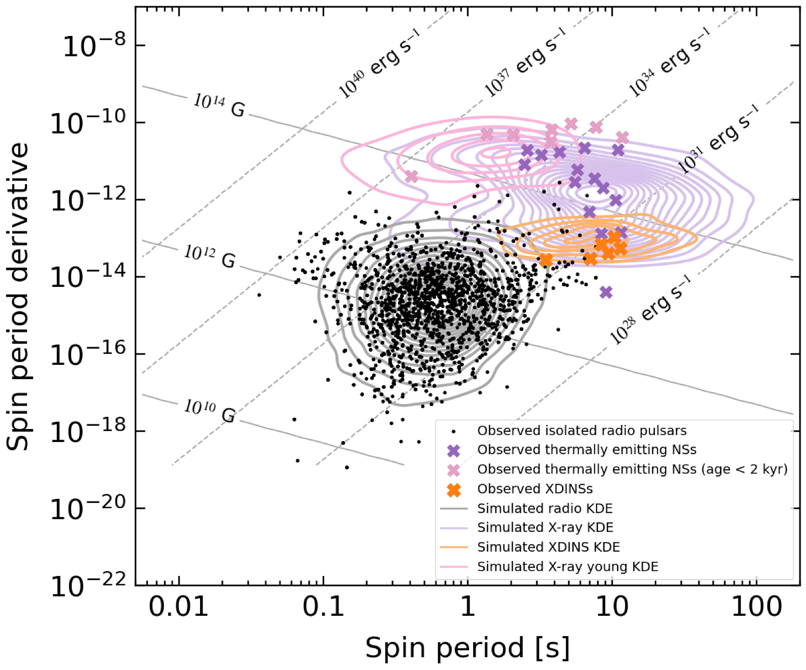
图注：Comparison between the observed populations of radio pulsars and X-ray emitting neutron stars and the best simulated populations in the $P-\dot{P}$ plane for the experiment described in Section~\(\ref{sec:results_allpop}.\) Points and crosses represent the observed radio pulsars and X-ray emitting neutron stars, respectively. Among the X-ray-emitting neutron stars, pink crosses indicate young magnetars (estimated ages $<2$ kyr), while orange crosses denote the observed XDINSs. The contour lines show KDE density contours derived from 100 simulations with input parameters sampled from the round-5 posterior distribution. The pink and orange contours correspond to the two simulated sub-populations, while the purple contours represent the full simulated X-ray-emitting neutron star population.
对应解读：建议重点查看的图表 1；关键图表逐图导读 图 1；模型拟合段落中的多维残差诊断。
入选理由：这是最直接检验统一族群模型是否同时覆盖射电脉冲星、磁星和 XDINSs 的 P-\dot P 图。图中同时给出观测点、X 射线源分类以及后验抽样模拟的 KDE 等高线，能检查长周期、高 \dot P、XDINS 区域和整体密度峰是否匹配，是解读本文核心结论的首要图。
来源与置信度：\(arxiv_source\)；high；\(arxiv_source\) / \(paper_v1.tex\):figure[3]
Fig06
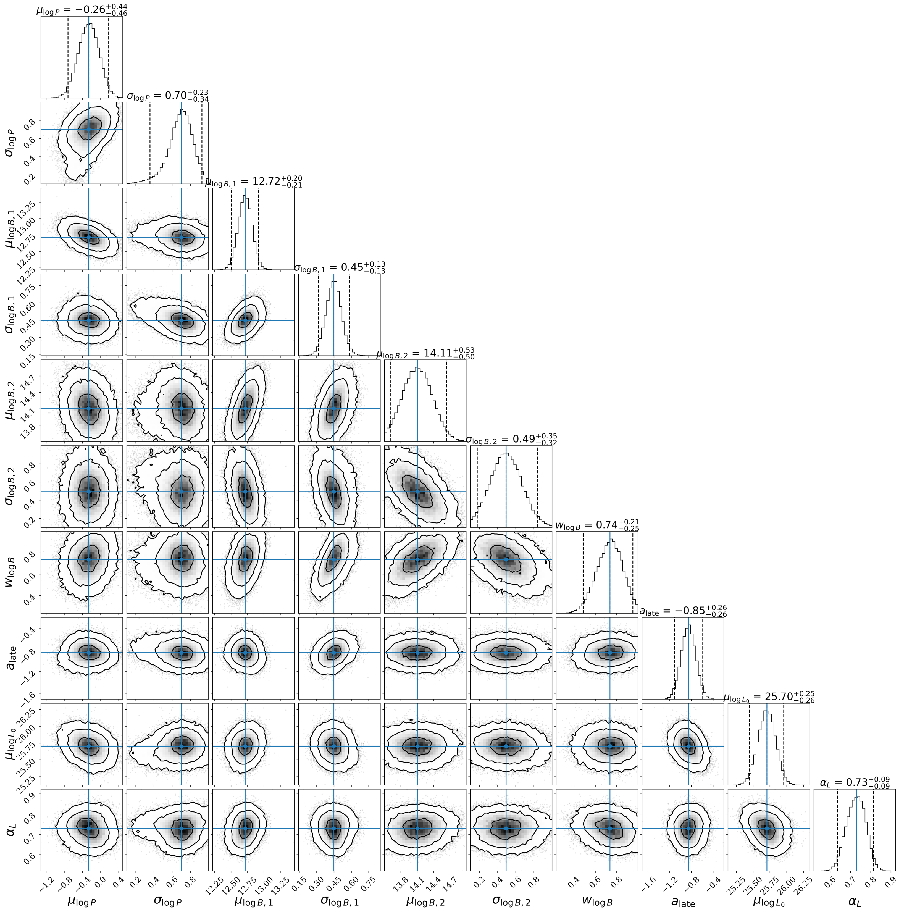
图注：Corner plot of the posterior distribution conditioned on the observed data restricted to the radio pulsars and the sub-populations of young magnetars and XDINSs (see Section~\ref{sec:results_youngxdins}). The posterior is estimated from round 5 of the TSNPE algorithm and adopted for the best-parameter analysis in Section~\(\ref{sec:results_youngxdins}.\) The parameters describe the log-normal birth spin-period distribution ($\mu_{\log P}$, $\sigma_{\log P}$), the double log-normal birth magnetic-field distribution ($\mu_{\log B,1}$, $\sigma_{\log B,1}$, $\mu_{\log B,2}$, $\sigma_{\log B,2}$, $w_{\log B}$), the power-law index for the late time decay of the magnetic field ($a_{\rm late}$), and the radio luminosity prescription ($\mu_{\log L_0}$, $\alpha_L$). The contour levels in the 2D marginalized posteriors represent the 1-$\sigma$, 2-$\sigma$ and 3-$\sigma$ credible regions. For each parameter, we report the median value and the 2-$\sigma$ credible interval. In the 1D marginalized posterior distributions, these are marked by the blue solid line and the dashed lines, respectively.
对应解读：建议重点查看的图表 2；关键图表逐图导读 图 3；模型拟合段落中关于 TSNPE 后验、参数退化和可信区间的讨论。
入选理由：这是后验角图，包含初始自转、双对数正态初始磁场分布的两个均值、宽度、权重以及磁场晚期衰减和射电光度参数。它最适合展示双峰磁场是否被清楚分离、权重是否退化，以及参数间相关性，比单独的一维后验更能支撑 SBI 拟合解读。
来源与置信度：\(arxiv_source\)；high；\(arxiv_source\) / \(paper_v1.tex\):figure[6]
Fig09
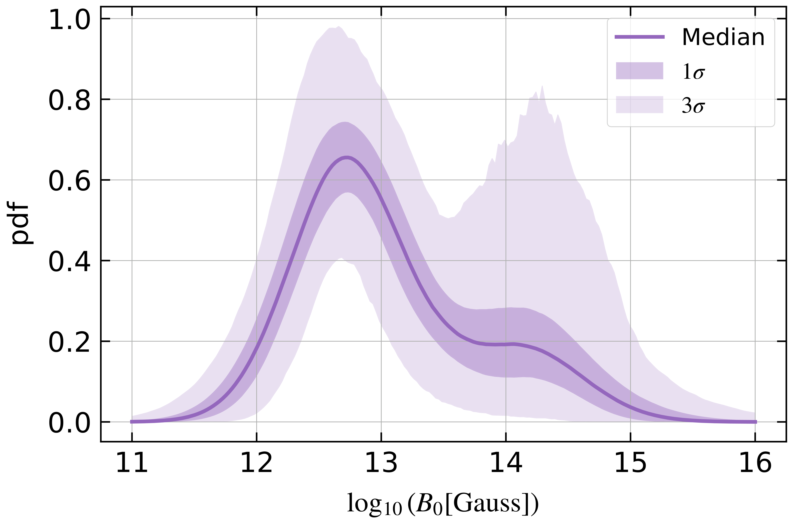
图注：Best fit distribution of initial magnetic fields for the inference experiment on radio pulsars, young magnetars and XDINSs (see Section~\ref{sec:results_youngxdins}). The purple solid line represents the median value, while the shaded regions represent the $1$-$\sigma$ and $3$-$\sigma$ uncertainties computed over 10000 random samples of the posterior distribution shown in Fig.~\(\ref{fig:corner_plot_youngxdins}.\)
对应解读：建议重点查看的图表 2；详细解读中“双成分对数正态初始磁场分布”的关键结果。
入选理由：该图直接给出最佳拟合的初始磁场分布及 1σ、3σ 不确定性，最清楚地对应摘要中低磁场峰约 5×10^12 G、高磁场峰约 10^14 G 的核心发现。相比参数角图，它更直观展示物理结论本身，适合日报中解释双峰出生通道。
来源与置信度：\(arxiv_source\)；high；\(arxiv_source\) / \(paper_v1.tex\):figure[9]
Fig04
图注：Comparison of the $\log N-\log S$ distributions for the observed and simulated thermally emitting X-ray neutron stars for the experiment described in Section~\(\ref{sec:results_allpop}.\) The black line represents the trend for the observed population while the purple line and bands represent the median, the 1-$\sigma$ and 3-$\sigma$ uncertainties, respectively. The latter are computed over 100 simulations generated from sets of parameters drawn from the posterior distribution obtained from round 5 of our TSNPE algorithm.
对应解读：建议重点查看的图表 4 和 6；关键图表逐图导读 图 2、图 4；模型拟合段落中关于 X 射线通量分布和 posterior predictive check 的讨论。
入选理由：这是观测与后验模拟热 X 射线中子星 log N-log S 分布的直接比较，包含中位数、1σ 和 3σ 预测带。它能检验吸收后通量、探测阈值附近累积分布以及是否系统性过度或低估 X 射线源，是评估模型是否真正匹配磁星/XDINS X 射线样本的关键图。
来源与置信度：\(arxiv_source\)；high；\(arxiv_source\) / \(paper_v1.tex\):figure[4]
Fig12
图注：Results of the \(\ac{TSNPE}\) algorithm applied to our population synthesis considering the entire X-ray sample (see Section~\ref{sec:results_allpop}). Each row shows the marginalized posteriors obtained in each round of inference while the columns refer to different parameters describing the log-normal birth spin-period distribution ($\mu_{\log P}$, $\sigma_{\log P}$), the double log-normal birth magnetic-field distribution ($\mu_{\log B,1}$, $\sigma_{\log B,1}$, $\mu_{\log B,2}$, $\sigma_{\log B,2}$, $w_{\log B}$), the power-law index for the late time decay of the magnetic field ($a_{\rm late}$), and the radio luminosity prescription ($\mu_{\log L_0}$, $\alpha_L$). For a given parameter, the marginalized posterior computed in that specific round is shown in blue, while the marginalized posteriors from previous rounds are shown in light gray. The gray shaded area represents the $95\%$ credibility interval of the approximated posterior for a given round. In each of these 1D marginal posterior distribution, the horizontal axes represent the parameters’ prior ranges.
对应解读：建议重点查看的图表 2 和 6；模型拟合段落中 TSNPE 多轮截断序贯神经后验估计的收敛与可信区间。
入选理由：该图展示使用整个 X 射线样本时 TSNPE 各轮的一维边缘后验，能说明推断如何从先验收缩到高后验区域，并展示双峰磁场参数、出生自转、晚期磁场衰减和射电光度参数的约束强弱。它补充 Fig06 的角图，尤其对应全 X 射线样本实验。
来源与置信度：\(arxiv_source\)；high；\(arxiv_source\) / \(paper_v1.tex\):figure[12]
Fig01
图注：\(\textit{Top panel}\): Evolution of poloidal dipolar $B$-field. The five solid curves represent realistic 2D simulations of magneto-thermal evolution in the neutron-star crust \(\citep{Vigano2021}.\) The dashed lines represent the evolution predicted by the analytical prescription used in \(\cite{Graber2024}\) with the parameter $a_{\rm late} = -1.0$. \(\textit{Middle panel:}\) The corresponding evolution of the surface thermal luminosity. The five solid curves represent realistic 2D simulations of magneto-thermal evolution in the neutron-star crust \(\citep{Vigano2021}.\) The dashed lines represents the evolution predicted by interpolating the original curve with a bivariate spline and extrapolating to a range of initial dipolar magnetic field values. For $t>10^6$\,yr, we assume a power-law evolution $\propto t^{-10}$ (see text). \(\textit{Bottom panel:}\) The corresponding evolution of the rate of crust failures due to magnetic stresses. The three solid curves represent the predicted crust-failure rate from realistic 2D simulations of magneto-thermal evolution in the neutron-star crust \(\citep{Vigano2021}.\) The dashed lines represents the evolution predicted by interpolating the original curves with a bivariate spline and extrapolating to a range of initial dipolar magnetic field values. In all panels, the colors represent the initial poloidal dipolar magnetic-field strength, $B_0$.
对应解读：详细解读中关于磁热演化、表面热光度、磁星暴发偏置和壳层应力触发模型的说明。
入选理由：该图展示不同初始磁场下偶极磁场、热光度和壳层破裂率随时间的演化，是本文前向模拟物理假设的基础。它能帮助读者理解为什么高磁场分量会影响 X 射线可见寿命和磁星暴发发现概率，支撑对选择效应和模型依赖性的讨论。
来源与置信度：\(arxiv_source\)；high；\(arxiv_source\) / \(paper_v1.tex\):figure[1]
强相关工作
这篇工作位于三条文献线的交叉处。第一条是射电脉冲星族群合成，典型问题是从 ATNF 等目录反推出生率、初始周期、磁场分布、射电光度函数和束射模型；Faucher-Giguere 与 Kaspi 一类研究奠定了现代射电脉冲星前向模拟的标准做法。第二条是磁星和 XDINSs 的磁热演化，重点是强磁场衰减如何加热中子星、改变 \(P\)-\(\dot P\) 轨迹并延长 X 射线可见期。第三条是近年兴起的 simulation-based inference，用神经密度估计处理无解析似然的天体族群模拟。
同类或相邻工作包括磁星目录与综述、XDINSs 综述、ATNF 脉冲星目录、银河核心坍缩超新星率估计，以及把中子星作为 FRB 或超亮超新星中心引擎的研究。可能的张力来自两方面：一是单峰磁场分布加上选择效应是否已经足够，二是磁星活动是否必须要求 \(10^{14}\,\mathrm{G}\) 量级外偶极出生场，还是内部磁场和拓扑才是主导。建议检索关键词包括 “neutron star population synthesis”, “magneto-thermal evolution neutron stars”, “magnetar birth rate”, “XDINS population”, “simulation-based inference pulsars”, “sequential neural posterior estimation astrophysics”。
同一事件 / 同类源线索：
- https://arxiv.org/abs/2609.00962
- https://arxiv.org/pdf/2609.00962
- https://www.atnf.csiro.au/research/pulsar/psrcat/
- https://www.physics.mcgill.ca/~pulsar/magnetar/main.html
相似工作：
- https://arxiv.org/abs/astro-ph/0512585
- https://arxiv.org/abs/1309.4167
- https://arxiv.org/abs/0904.4836
基础理论 / 方法工作：
- https://ui.adsabs.harvard.edu/abs/2005AJ....129.1993M/abstract
- https://ui.adsabs.harvard.edu/abs/2006ApJ...643..332F/abstract
- https://ui.adsabs.harvard.edu/abs/2014ApJS..212....6O/abstract
相反观点 / 张力线索：
（未提供）
13. GRMHD Simulations of Accreting Proto-Magnetars II. Implications for r-process Nucleosynthesis
- 来源：arXiv / astro-ph.HE
- 链接：https://arxiv.org/abs/2609.00190v1
- 作者：Tejas Prasanna, Kyle Parfrey, Brian D. Metzger, Ore Gottlieb, Andrei Beloborodov, Koushik Chatterjee
- 评分：novelty 8/10，importance 8/10，relevance 7/10，final 8.65/10
- 推荐理由：GRMHD模拟吸积原磁星并研究r-process喷出物，连接collapsar/并合、磁星中心引擎和重元素核合成；对GRB相关中心引擎与瞬变源物理有较高价值。
中文题目：吸积原初磁星的广义相对论磁流体模拟 II：对 r 过程核合成的影响
做了什么：这篇论文把一组二维轴对称 GRMHD 吸积模拟从“喷流和转矩问题”推进到“重元素产额问题”：作者研究毫秒原初磁星被致密盘以约 \(0.1\,M_\odot\,\mathrm{s}^{-1}\) 量级吸积时，盘—磁层相互作用怎样改变抛射物的质量、速度和电子丰度 \(Y_e\)，并把流体轨迹送入核反应网络计算 r 过程产物。核心结论是：有磁化中子星时，抛射不仅更多，而且更容易保留低 \(Y_e\) 的重 r 过程成分；黑洞盘风中较容易被中微子照射推高 \(Y_e\)，而磁通道化和离心加速的中子星外流可在一定条件下合成包括第三峰在内的完整 r 过程。若早期中微子照射足够强，重 r 过程仍会被压制，因此这类源最有利的阶段是原初磁星中微子光度已经下降之后。
为什么重要：重 r 过程的天体来源仍不是“只剩一个答案”的问题。双中子星并合已经被 \(\mathrm{GW170817}\) 和千新星强力支持，但银河化学演化、早期低金属丰度恒星以及某些长暴/超新星环境仍提示可能存在额外通道。毫秒原初磁星加致密吸积盘同时出现在并合残余、塌缩星和白矮星吸积诱导坍缩等场景中，它们兼具强磁场、快自转、高吸积率和强中微子场，是决定抛射物 \(Y_e\) 的极端实验室。本文的重要性在于它不只问“盘能不能吹风”，而是问磁层如何系统性改变可逃逸物质的量和组成。
理论 / 观测 / 仪器方法价值：对理论而言，本文把 r 过程产额与 GRMHD 中的磁层压缩、磁通道化、离心抛射和吸积调制连接起来，提供了比参数化盘风更物理的输入。对观测而言，它给出一种可能产生重 r 过程和高速富中子抛射物的源类，可用于解释某些千新星、长暴伴随红外余辉或稀有快速暂现的成分。对方法而言，论文展示了从 GRMHD 流体轨迹到核反应网络的工作流，并强调中微子照射处理是产额判断的主导系统误差之一。
为什么应该关注：如果你关心 r 过程元素从哪里来，这篇文章值得看，因为它说明“中心天体是黑洞还是磁化中子星”不是细节，而会定性改变抛射效率和核合成路径。如果你研究 GRB、千新星或核心坍缩发动机，它也提示喷流功率、吸积转矩和核合成产额不能完全分开处理：同一个盘—磁层相互作用同时决定能量释放、物质逃逸和 \(Y_e\) 历史。
展开详细解读：文章讲解、背景、理论、重点章节、图表与相关工作
文章详细讲解
科学问题：本文关注的是毫秒原初磁星周围高吸积率致密盘能否成为重 r 过程源，以及它与常被研究的黑洞吸积盘有何本质差别。高吸积率盘在内区可能发生电子俘获，使物质中子化；但这些物质若在逃逸前受到强中微子照射，电子丰度 \(Y_e\) 会升高，第三峰和锕系元素产额会被削弱。问题的关键因此不是单纯的“盘是否富中子”，而是磁场、旋转、吸积和中微子共同决定的流体轨迹是否能以足够低的 \(Y_e\)、足够短的照射时间和足够大的熵/膨胀率逃逸。
作者怎么做：论文沿用其 Paper I 的轴对称 GRMHD 模拟，研究强磁化、快速自转中子星与致密吸积盘的相互作用，并与相近初始条件下的黑洞吸积模型比较。模拟给出不束缚外流的质量通量、速度、熵、膨胀时间和几何分布；作者再从外流中抽取 Lagrangian 或准 Lagrangian 轨迹，加入不同强度的中微子照射假设，送入核反应网络计算最终丰度。这样做的优点是核合成不再只由手设的 \(Y_e\) 分布决定，而是受 GRMHD 产生的抛射机制控制。
关键结果：磁化中子星会明显改变抛射物。随着中子星磁场增强，吸积被部分阻滞，更多原本会落入中心天体的物质被重定向为不束缚外流；当磁场足以形成通道化吸积或离心加速时，质量损失进一步增强。这些磁驱外流在中微子照射不太强时可合成完整 r 过程，包括第三峰重元素。与黑洞盘风相比，原初磁星外流更能在中等中微子照射下保留重 r 过程成分，因为磁加速使物质更快离开高照射区，并且抛射几何与时间尺度不同。
局限和下一步：最大不确定性来自中微子输运和维度。本文采用的 GRMHD 模拟是轴对称的，二维会放大某些有序磁结构、抑制非轴对称湍流和磁重联通道；中微子照射若用参数化处理，则 \(Y_e\) 的绝对值和第三峰产额会有系统偏差。下一步需要三维 GRMHD、能量依赖中微子输运、更长时间演化以及与可观测千新星辐射转移耦合，才能把“能产生重 r 过程”转化为“在某类暂现中可被识别”的定量预言。
关键结果是怎么做出来的
本文最重要的证据链从模拟样本开始：作者没有只取一个代表性外流，而是使用 Paper I 中一组吸积原初磁星 GRMHD 计算，并设置相近吸积盘条件的黑洞模型作为对照。样本的核心控制量包括中心天体性质、磁场强度、磁层是否被盘强烈压缩、是否进入磁通道化/离心加速状态，以及外加中微子照射强度。读表时应关注每个模型的不束缚质量、平均速度、质量加权 \(Y_e\)、熵和膨胀时间，而不是只看最终丰度曲线。
事件数在这里不是天文瞬变事件数，而是模拟模型数和从模拟中采样的外流轨迹数。作者依据 Bernoulli 或等价不束缚准则识别会逃逸的流体单元，再按质量权重统计其热力学历史。关键是把“外流质量分布”与“核合成轨迹分布”连接起来：若少量低 \(Y_e\) 物质合成第三峰但质量权重很小，总产额仍不一定重要；反过来，中等 \(Y_e\) 的大质量抛射可主导第一、第二峰但不贡献重峰。
显著性不是以观测 \(\sigma\) 检验给出，而是以模型比较和物理稳健性体现。最直接的比较是中子星模型对黑洞模型：在相似盘条件下，中子星磁场越强，吸积越受抑制，不束缚外流质量越大；核反应网络则显示相同中微子照射下，磁化中子星外流比黑洞盘风更能保留重 r 过程尾部。若论文给出不同中微子光度或照射处方的多条丰度曲线，应把第三峰 \(A\sim195\) 的相对高度视为主诊断量。
支撑结论的图表通常包括：不同模型的质量流率和外流率随时间变化图；二维密度/磁场/速度结构图；外流 \(Y_e\)、熵和膨胀时间分布图；最终丰度相对太阳 r 过程模板的比较图。判断结论时要同时看质量权重和时间权重，因为早期高照射阶段可能抬高 \(Y_e\)，晚期中微子衰减后才更利于重 r 过程。
主要系统误差包括轴对称近似、有限模拟时长、磁场初始拓扑、核反应率和裂变产额、中微子吸收处方以及外流边界处轨迹外推。稳健性检验的重点应是：改变中微子照射后第三峰是否仍存在；改变不束缚判据后外流质量是否稳定；把核网络起算点向外或向内移动是否改变 \(Y_e\) 冻结；黑洞对照模型是否使用了足够相近的盘质量和吸积率。
展开背景、理论、公式、模型、章节和图表导读
背景知识
研究对象是新生、快速旋转、强磁化的中子星，即毫秒原初磁星。它可能出现在大质量恒星塌缩形成塌缩星、双中子星并合后的暂存残余、或白矮星吸积诱导坍缩之后。若周围仍有致密盘，以 \(\sim0.1\,M_\odot\,\mathrm{s}^{-1}\) 量级吸积，盘内高密度高温环境会触发弱相互作用，使部分气体中子化，为 r 过程提供原料。
历史上，r 过程来源经历了从核心坍缩超新星中微子风、磁旋转超新星，到中子星并合和塌缩星盘风的多轮讨论。\(\mathrm{GW170817}\) 证明并合能产生大量 r 过程物质，但并不自动排除其他来源，尤其是在早期宇宙、低金属丰度环境、稀有高产额事件和不同元素丰度散布问题上，单一通道仍面临化学演化约束。
观测背景方面，千新星颜色和时间尺度对抛射物的镧系元素含量敏感，而镧系元素含量主要由 \(Y_e\) 决定。低 \(Y_e\) 通常产生高不透明度的红色/红外成分，高 \(Y_e\) 更偏向蓝色快速成分。对于长伽马暴和超亮超新星等可能有磁星发动机的暂现，若存在富中子外流，其辐射信号可能与喷流余辉、超新星光和盘风再处理混合，观测解释并不直接。
为什么现在值得重看？一是 GRMHD 模拟已能解析盘—磁层相互作用，而早期参数化模型很难决定物质究竟落入中心天体还是被磁场抛出。二是核反应网络、裂变循环和千新星辐射转移模型更成熟，可以把动力学结果转化为元素产额和观测后果。三是多信使天文学让中心发动机类型、寿命和抛射几何成为可检验问题。
常见误区之一是把“强中微子源”简单等同于“不能产生重 r 过程”。实际上中微子提高 \(Y_e\) 的效果取决于照射时间、半径、光度、平均能量和外流速度。另一个误区是把黑洞盘风结论直接套用到中子星盘风；本文强调有固体表面/磁层/旋转能库的中子星会改变吸积边界条件，因而改变外流质量和组成。
基础理论 / 方法脉络
r 过程的基础图像是：在富中子环境中，种子核快速俘获中子，俘获时间短于 \(\beta\) 衰变时间，核流沿远离稳定线的路径前进；当中子耗尽后，核素通过 \(\beta\) 衰变和裂变回到稳定区，形成第一、第二、第三丰度峰。能否形成第三峰主要受 \(Y_e\)、熵、膨胀时间和中子-种子比控制。
在致密吸积盘中，\(Y_e\) 由电子/正电子俘获和中微子/反中微子吸收竞争决定。高密度退化电子环境倾向于通过 \(e^-+p\rightarrow n+\nu_e\) 降低 \(Y_e\)；而来自中心区域或中子星表面的 \(\nu_e\) 吸收会把中子转成质子，提高 \(Y_e\)。因此同一盘的内区可以是富中子的，但最终外流是否富中子取决于逃逸路径上的弱相互作用积分。
本文的特定物理在于磁层。快速旋转磁化中子星有一个磁压主导区域；吸积盘的冲压会压缩磁层，但不一定完全摧毁它。若磁场足够强，气体可沿磁力线通道化落到极区，或在共转半径附近受到离心抛射。磁应力还能把角动量和旋转能输入盘/外流，使一部分物质达到正总能量而逃逸。
观测或数值诊断上，GRMHD 模拟给出守恒量、四速度、磁场、密度、温度和组成的时空分布。外流是否不束缚通常用 Bernoulli 型准则判断；核合成则需要提取轨迹上的 \(T(t)\)、\(\rho(t)\)、\(Y_e(t)\) 和中微子通量。黑洞与中子星模型的对比必须在类似盘质量、吸积率和初始热状态下进行，否则很容易把中心天体效应与盘初始条件混淆。
常见退化包括：更强磁场和更低中微子光度都可能增强重 r 过程，但物理原因不同；更快外流和更低 \(Y_e\) 都能提高重峰产额，但前者通过减少照射时间起作用；轴对称模拟中的有序磁结构可能夸大喷流和通道化程度。解读本文时应始终把外流动力学和弱相互作用历史合在一起看。
公式与推导
第一步是质量守恒。对任意半径 \(r\) 的球面，外流质量通量可写为
其中 \(\rho\) 是静质量密度，\(u^r\) 是径向四速度分量，\(g\) 是度规行列式。只在满足外流条件的区域积分，给出模拟中可用于统计抛射质量的基本量。
第二步是不束缚判据。在近似绝热、稳态外流中，常用 Bernoulli 参数判断物质是否能逃到无穷远：
其中 \(h=1+\epsilon+p/\rho\) 是比焓，\(u_t\) 是协变时间分量。若 \(Be>0\)，流体元在忽略后续冷却和核能释放修正时具有正无穷远能量。
第三步是磁层尺度。中子星偶极磁矩 \(\mu\) 与吸积流冲压平衡给出磁层半径的标度：
其中 \(M\) 是中子星质量，\(\dot{M}\) 是吸积率，\(\xi\) 是几何系数。本文的 GRMHD 模拟比这个公式复杂，但该标度说明更强磁场或更低吸积率会使磁层更能影响盘内流。
第四步是离心条件。共转半径为
其中 \(\Omega_*\) 是中子星角速度。当 \(r_m\gtrsim r_{\rm co}\) 时，磁场共转可把物质离心甩出；即使 \(r_m\) 被压缩到较小半径，磁应力仍可能增强外流和改变吸积几何。
第五步是电子丰度演化。弱相互作用控制的 \(Y_e\) 可写成
其中 \(\lambda\) 表示相应反应率。该式说明 \(Y_e\) 不是模拟某一时刻的静态标签，而是沿外流轨迹累积改变的量。
第六步是中微子吸收率的半解析估计：
其中 \(L_{\nu_e}\) 是电子中微子光度，\(\langle E_{\nu_e}\rangle\) 是平均能量，\(\langle \sigma_{\nu_e n}\rangle\) 是能谱平均截面。外流速度越大，在小 \(r\) 区域停留时间越短，吸收积分越小。
第七步，在中微子吸收主导且忽略电子/正电子俘获的近似下，平衡电子丰度约为
若 \(\bar{\nu}_e\) 更高能或更强，\(Y_{e,{\rm eq}}\) 降低；若 \(\nu_e\) 照射强，\(Y_e\) 被推高，重 r 过程受抑制。
第八步是中子-种子比的粗略判据。最终能否到达第三峰可用
作为经验量级条件，其中 \(Y_n\) 是自由中子丰度，\(Y_{\rm seed}\) 是种子核丰度。低 \(Y_e\)、高熵和快速膨胀通常提高 \(R_{n/s}\)。
第九步是质量加权丰度。网络给出每条轨迹的最终丰度 \(X_i^{(k)}\)，总抛射的元素产额为
其中 \(\Delta M_k\) 是第 \(k\) 条轨迹代表的质量。本文的结论依赖这个质量加权步骤：少量极端富中子轨迹不等于总产额显著。
第十步是模型比较的基本诊断。可定义相对重峰产额比
用来比较第三峰与第二峰。虽然具体论文可能采用完整丰度曲线而非单一指标，\(\mathcal{R}_{195}\) 有助于读者定量理解中微子照射和磁加速对重 r 过程的影响。
模型拟合 / 应用方法
这类工作的“拟合”不同于直接观测论文，它主要是模型参数扫描和后处理参数化。核心输入参数包括中子星磁场强度、初始自转、盘质量/吸积率、磁场拓扑、黑洞对照模型的中心边界条件，以及中微子光度和能谱。输出量则包括 \(\dot{M}_{\rm out}\)、总抛射质量、速度分布、\(Y_e\) 分布、熵、膨胀时间和最终丰度。
统计意义上的似然通常没有在 GRMHD 论文中作为主轴出现，因为目前观测数据很难直接约束单个模拟参数组合。更常见的做法是把模拟结果与太阳 r 过程丰度模板、千新星所需镧系含量或化学演化所需事件产额做后验式比较。若要构造似然，可把模型丰度 \(M_A(\theta)\) 与目标丰度 \(M_A^{\rm obs}\) 比较，并加入核反应率、质量模型和裂变产额协方差。
残差诊断应看两个层面。第一是动力学残差：外流是否达到准稳态，边界处是否仍在加速，质量流率是否受初始瞬态支配。第二是核合成残差：模型相对太阳 r 过程模板是否在第一峰、第二峰、第三峰或稀土峰出现系统偏差。若只匹配第三峰而严重过产轻 r 过程，或只在某个中微子照射假设下匹配，结论就不能过度泛化。
关键退化关系包括 \(B_*\) 与 \(\dot{M}\) 对磁层半径的退化，外流速度与中微子光度对 \(Y_e\) 冻结的退化，以及熵与膨胀时间对种子核形成效率的退化。强磁场模型产生重 r 过程，可能是因为它使 \(Y_e\) 更低，也可能是因为它让物质更快逃离照射区；区分这两者需要检查轨迹级 \(Y_e(t)\) 和半径 \(r(t)\)。
模型可能失败的地方也很明确：二维轴对称会改变 MRI 湍流饱和、磁通积累和喷流稳定性；中微子处理若没有能量依赖输运，会误估 \(Y_e\)；核网络的未知核质量和裂变分布会影响第三峰与锕系产额；模拟时间若短于盘黏滞演化时间，晚期低中微子光度的富中子抛射可能被低估。实际应用到观测时，还必须接上辐射转移模型，否则“产了多少镧系元素”不能直接变成光变曲线颜色。
重点章节 / 结果段落怎么读
数据/模拟设置：先读模型表，确认中子星质量、自转、磁场强度、盘条件、黑洞对照设置和中微子照射方案。这里决定了后面所有外流差异是否真来自中心天体磁层，而不是初始盘差异。
GRMHD 外流结果：重点看质量流率、吸积率、磁层结构和不束缚外流的时空分布。读者应特别关注磁层被压缩但仍能改变流向的阶段，以及是否出现通道化吸积或离心增强外流。
轨迹提取与核网络：这一部分说明如何从 Eulerian 模拟数据得到用于核反应网络的热力学轨迹。要检查起算温度、轨迹外推、\(Y_e\) 演化、中微子吸收处方和质量权重，因为这些选择直接决定丰度曲线。
主结果：比较原初磁星模型与黑洞模型的抛射质量、\(Y_e\) 分布和最终丰度。最关键的问题是：在中等中微子照射下，磁化中子星模型是否仍保持第三峰；在强早期照射下，重峰如何被压制。
讨论/稳健性检验：最后看作者如何评估二维限制、中微子不确定性、核物理不确定性和天体发生率。若论文讨论不同形成通道，如塌缩星、并合残余和吸积诱导坍缩，应区分它们的中微子光度演化和盘寿命。
建议重点查看的图表
-
模型参数表：检查每个模拟的中心天体、磁场强度、吸积率、盘质量和中微子照射设置，确认比较是否公平。
-
密度/磁场/速度二维切片：看磁层是否被盘压缩、是否形成极向喷流、外流从盘面还是磁极附近发出，以及有无离心甩出结构。
-
吸积率与外流率随时间图：看外流增强是否持续，还是只来自初始瞬态；比较中子星与黑洞模型的 \(\dot{M}_{\rm out}/\dot{M}_{\rm acc}\)。
-
\(Y_e\)、熵和膨胀时间分布：这是核合成判断的核心。重点看低 \(Y_e\) 质量尾部是否有足够权重，以及强/弱中微子照射如何移动分布。
-
速度分布或能量分布：磁加速模型应表现为更快外流或更高 Bernoulli 参数；这会影响中微子照射积分和千新星时间尺度。
-
最终丰度曲线：与太阳 r 过程模板比较，检查第一峰、第二峰、第三峰和锕系区域；不要只看是否“到达”第三峰，还要看质量加权幅度。
-
中微子照射敏感性图：若有多条不同 \(L_\nu\) 曲线，应看第三峰从保留到消失的临界范围。
-
轨迹级诊断图：例如 \(Y_e(t)\)、\(T(t)\)、\(\rho(t)\)、\(r(t)\)。这些图能判断重 r 过程来自真实快速逃逸，还是后处理外推假设。
关键图表逐图导读
图 1：通常应是模拟构型或二维快照。横纵轴多为以 \(GM/c^2\) 或公里计的空间坐标，颜色表示密度、磁压或等离子体 \(\beta\)，箭头/流线表示速度或磁场。读图时要看盘内流是否把磁层压扁，以及外流是从盘风、磁极还是磁层边界发出。陷阱是颜色动态范围很大，视觉上显眼的低密度喷流不一定携带主要 r 过程质量。
图 2：质量流率时间序列。横轴是模拟时间，纵轴可能是 \(\dot{M}_{\rm acc}\)、\(\dot{M}_{\rm out}\) 或二者比值。模型线的分叉若随磁场强度增强而系统变化，就支持“磁化中子星抑制吸积并增强抛射”的结论。读图时要避开初始弛豫阶段，最好看时间平均区间和误差/波动幅度。
图 3：外流 \(Y_e\) 分布。横轴为 \(Y_e\)，纵轴为质量分布或累计质量。关键是 \(Y_e\lesssim0.25\) 的质量尾部是否显著，因为它通常对应重 r 过程能力。若中微子照射增强后分布整体右移，说明第三峰压制来自弱相互作用而非动力学质量不足。
图 4：熵—膨胀时间或 \(Y_e\)—速度二维分布。坐标轴展示不同核合成控制量之间的相关性，颜色为质量权重。应检查重 r 过程轨迹是否同时具有低 \(Y_e\) 和短照射时间。陷阱是平均 \(Y_e\) 可能掩盖低 \(Y_e\) 小尾部；二维图比单一均值更可靠。
图 5：最终丰度曲线。横轴是质量数 \(A\)，纵轴是质量分数或归一化丰度；模型线与太阳 r 过程残差可显示第一、第二、第三峰。主要结论应体现在磁化中子星模型在 \(A\sim195\) 附近仍有显著产额，而强中微子照射模型该峰降低或消失。读图陷阱是归一化方式可能让总产额信息丢失，需要配合总抛射质量表。
图 6：中子星与黑洞对照比较。若横轴为模型编号或中微子光度，纵轴为第三峰产额、镧系质量分数或 \(\mathcal{R}_{195}\)，则这是最直接的结论图。应看两类中心天体的趋势是否在系统误差范围外分离，以及中等照射下差异是否仍存在。
论文原图 / 可嵌入图片
Fig08
图注：Distribution of the ejecta at $r=1000\,r_{\rm g}$ in the space of electron fraction $Y_{\rm e}$ and radial velocity $v^r$. Each point represents a two-dimensional bin in $(Y_{\rm e},v^r)$ and is colored according to the mass flux carried by that bin. The tendency for lower radial velocity to be associated with larger $Y_{\rm e}$ is most evident in models where the accretion flow reaches close to the compact-object inner boundary, particularly the black hole, weak-field neutron star, and crushed-magnetosphere models. In the near-corotation and propeller models, material is expelled from larger radii and retains low $Y_{\rm e}$ over a broader range of velocities. Moderate neutrino irradiation shifts the ejecta toward larger $Y_{\rm e}$ while leaving a rapidly expanding, neutron-rich component. The weaker $Y_{\rm e}$--$v^r$ anti-correlation in the propeller model arises because the magnetosphere truncates the disk before the inflowing gas reaches the lowest electron fractions attained at smaller radii (Fig.~\ref{fig:radial_profiles}), thereby reducing the amount of extremely neutron-rich material whose low $Y_{\rm e}$ can be preserved by rapid centrifugal ejection.
对应解读：对应“建议重点查看的图表”第4项“\(Y_e\)、熵和膨胀时间分布”、第5项“速度分布或能量分布”、第7项“中微子照射敏感性图”，以及“关键图表逐图导读”中的图4：\(Y_e\)—速度二维分布。
入选理由：这张图直接把电子丰度 \(Y_e\) 与径向速度 \(v^r\) 放在同一二维质量通量分布中，是判断重 r 过程能否发生的核心诊断之一。它能同时检验低 \(Y_e\) 物质是否存在、这些物质是否快速逃离中微子照射区，以及中等中微子照射后是否仍保留快速膨胀的富中子成分。图注还明确比较了黑洞、弱场中子星、压缩磁层、近共转和 propeller 模型，正好支撑日报中“磁化中子星比黑洞盘风更能保留重 r 过程成分”的关键解读。
来源与置信度：\(arxiv_source\)；high；\(arxiv_source\) / paper2.tex:figure[8]
强相关工作
这篇文章与黑洞—吸积盘 r 过程研究直接相关。已有大量工作讨论双中子星并合后黑洞盘风、塌缩星黑洞盘和中微子冷却盘能否产生重 r 过程；本文的新增点是把中心天体换成有磁层和表面的毫秒原初磁星，并显示这会改变抛射物质量和 \(Y_e\) 历史。检索关键词可用 “GRMHD accretion disk r-process”, “proto-magnetar disk wind nucleosynthesis”, “black hole accretion disk wind r-process”, “collapsar r-process”。
它也与磁旋转超新星、长伽马暴中心发动机和千新星辐射转移文献相连。相反或张力观点主要来自两方面：一类认为强中微子照射会把 \(Y_e\) 推高从而抑制重 r 过程；另一类认为轴对称磁化模拟可能高估有序磁驱外流。读者若要追踪争论，应检索 “neutrino irradiation Ye disk wind”, “axisymmetric GRMHD magnetar limitations”, “lanthanide fraction kilonova ejecta”。
由于本文研究的是一类源而非单个命名事件，没有同一事件论文；相关上下文应放在同类源、综述和历史原型上，例如 \(\mathrm{GW170817}\) 的千新星论文、r 过程综述、黑洞盘风模拟和塌缩星 r 过程模型。
同一事件 / 同类源线索：
相似工作：
基础理论 / 方法工作：
相反观点 / 张力线索：
（未提供）
14. Extended radio emission in and around the merging cluster A520 as seen by MeerKAT
- 来源：arXiv / astro-ph.HE
- 链接：https://arxiv.org/abs/2609.00156v1
- 作者：S. Giacintucci, W. D. Cotton, M. Markevitch, T. Venturi, T. E. Clarke, H. Bourdin
- 评分：novelty 8/10，importance 7/10，relevance 8/10，final 8.65/10
- 推荐理由：Deep MeerKAT observations reveal radio halo, relics, shocks, and cosmic-ray reacceleration signatures in A520; not gamma-ray focused but relevant to nonthermal particles and cluster shocks.
中文题目：MeerKAT 看到的合并星系团 Abell 520 内外延展射电辐射
做了什么：这篇论文用 MeerKAT 在 \(1.28\,\mathrm{GHz}\) 对合并星系团 Abell 520 做了深度射电成像，重点不是简单确认已有巨型射电晕，而是把晕、激波、暗子团、外围遗迹源和桥状弥散辐射放在同一张高灵敏度图像中比较。作者发现主射电晕沿东北—西南合并轴方向被两个 \(X\) 射线激波清楚截断，而垂直方向的晕翼可平滑延伸超过 \(2\,\mathrm{Mpc}\)，外侧谱指数变陡。更重要的是，论文报告了西南主弓形激波上游的微弱射电辐射、通向东北高熵低气体含量“暗子团”的射电尾、两个位于维里半径之外的外围射电遗迹源，以及一条约 \(2\,\mathrm{Mpc}\) 长的宽射电桥。核心结论是：Abell 520 可能同时展示了团内湍流再加速、激波压缩或再加速、以及维里半径附近大尺度激波注入/再加速宇宙线电子的多个环节。
为什么重要：Abell 520 一直是合并星系团中很特殊的系统：它有复杂的 \(X\) 射线激波、强弥散射电晕，以及著名的“暗子团”问题。MeerKAT 的价值在于同时具备较高角分辨率和对低面亮度大尺度结构的灵敏度，使作者能把射电晕边界与 \(X\) 射线激波、暗子团和外围遗迹源逐一对齐，而不是只测一个总通量或平均谱指数。这让 Abell 520 成为研究合并激波和湍流如何给星系团介质中的宇宙线电子供能的近场实验室。
理论 / 观测 / 仪器方法价值：对理论而言，这篇文章提供了一个很强的几何约束：主射电晕在合并轴方向被激波限定，但在垂直方向可延伸到 \(\mathrm{Mpc}\) 量级，说明电子加速和磁场结构并不只是简单跟随热气体密度。对观测而言，它给出了判断激波上下游射电发射率跳变、射电/\(X\) 射线亮度比、谱指数梯度和低面亮度桥结构的实例。对方法而言，它展示了 MeerKAT 在弥散源去卷积、紧致源扣除、宽场成像和多尺度结构恢复方面对星系团非热成分研究的推动作用。
为什么应该关注：如果你关心射电晕和射电遗迹源是否来自同一套宇宙线电子库，Abell 520 是少数能在一个系统内同时比较晕、激波、桥和外围遗迹源的对象。如果你关心星系团外缘的粒子加速，论文中维里半径之外的遗迹源和桥状辐射尤其值得注意，因为它们把常规团内射电晕问题推到了低密度、低磁场、长冷却时间和投影污染更严重的环境。即使你主要做 \(X\) 射线或弱透镜质量分布，射电尾与暗子团的相对位置也会影响对合并动力学和非热压力的理解。
展开详细解读：文章讲解、背景、理论、重点章节、图表与相关工作
文章详细讲解
科学问题：Abell 520 是一个正在剧烈合并的星系团，过去已经因巨型射电晕、多个 \(X\) 射线激波以及东北方向的高熵、低气体含量“暗子团”而出名。本文要回答的问题不是“有没有射电晕”，而是这些弥散射电结构在空间上如何与激波、热气体、暗子团和星系团外缘相连。换句话说，作者关心的是宇宙线电子和磁场在一次复杂合并中的生命周期：它们是在团内湍流中被再加速，还是在激波附近被重新点亮，或者还能在维里半径附近形成更大尺度的射电网络。
作者怎么做：论文使用 MeerKAT 在 \(1.28\,\mathrm{GHz}\) 的深度观测，利用其短基线灵敏度恢复大尺度低面亮度结构，同时保持足够角分辨率来区分嵌入的紧致射电星系、尾迹源和真正的弥散团级辐射。作者将 MeerKAT 射电图与已有 \(X\) 射线图像、激波位置、热气体熵结构和暗子团位置进行叠加比较，并利用射电面亮度、射电/\(X\) 射线亮度比以及谱指数信息判断不同区域的物理机制。特别重要的是，论文把主射电晕、激波上游微弱发射、东北尾状结构、外围遗迹源和宽桥状辐射作为一个连贯的空间系统来读，而不是把它们分成互不相关的源。
关键结果：主射电晕在东北—西南合并轴方向呈现非常清晰的边界，并且边界与两个 \(X\) 射线激波相对应；这意味着激波或激波相关的压缩/湍流边界对可见同步辐射区域有强约束。与此相反，垂直于合并轴的晕翼延伸超过 \(2\,\mathrm{Mpc}\)，且外围谱指数变陡，符合电子老化、湍流强度降低或磁场减弱导致高能电子辐射效率下降的图像。论文还报告西南主弓形激波上游有微弱射电辐射，表明不能简单把激波看成一个从无到有的电子注入边界；激波前方可能已有化石电子或低亮度再加速区域。
更有新意的是东北方向：作者发现一条射电尾越过东北激波延伸到高熵、低气体含量的暗子团区域。该尾部和暗子团的射电/\(X\) 射线亮度比高于主射电晕，暗示在低热气体亮度环境中仍存在高效的宇宙线电子再加速或较强磁场。论文还在星系团维里半径之外发现两个外围射电遗迹源，并报告一条约 \(2\,\mathrm{Mpc}\) 长、较宽、沿近似垂直于主合并轴方向连接暗子团和其中一个遗迹源的射电桥。桥和暗子团的谱斜率与主射电晕相近，这使作者提出它们可能与另一个由巨型合并产生、位于维里半径附近的激波前沿有关。
局限和下一步：目前的解释仍受到若干不确定性限制。低面亮度桥和外缘遗迹源最容易受去卷积、短基线覆盖、紧致源扣除和背景源混淆影响；谱指数也依赖不同频率图像的匹配分辨率和一致的 \(u\)-\(v\) 覆盖。仅凭 \(1.28\,\mathrm{GHz}\) 深图和有限谱信息，很难唯一地区分湍流再加速、激波再加速、绝热压缩和投影叠加。下一步最关键的是低频 LOFAR/uGMRT 与高频 VLA/MeerKAT 多频谱指数图、深 \(X\) 射线温度/熵/密度跃变测量，以及数值模拟中针对 Abell 520 几何的合并动力学重建。
关键结果是怎么做出来的
样本和数据选择方面，这篇文章围绕单个目标 Abell 520 展开，但它不是普通个例成像：Abell 520 本身包含多个可用于交叉检验的物理区域，包括主射电晕、东北和西南 \(X\) 射线激波、暗子团、激波上游区、外围遗迹源以及连接结构。作者的核心数据是 MeerKAT \(1.28\,\mathrm{GHz}\) 深度观测，并与已有 \(X\) 射线激波和热气体结构对齐。读者应把这篇文章理解为“高动态范围、多尺度形态学和表面亮度诊断”的证据链，而不是一个大样本统计论文。
主结果之一是主射电晕沿东北—西南合并轴被两道 \(X\) 射线激波截断。这里的证据主要来自射电等值线或色彩图与 \(X\) 射线激波位置的叠加：如果射电晕边界与激波曲率和位置一致，而不是随机贴合某个噪声等值线，那么它说明激波附近的压缩、磁场放大或粒子再加速改变了同步辐射发射率。作者进一步利用垂直合并轴方向晕翼超过 \(2\,\mathrm{Mpc}\) 的延伸，指出射电晕并非简单椭圆形或单一尺度结构；其不同方向的边界由不同物理条件控制。
第二个关键证据是谱指数和射电/\(X\) 射线亮度比。外围晕翼谱指数变陡，通常意味着高能电子冷却更充分、湍流再加速效率下降，或磁场强度和电子能谱共同变化。暗子团和尾部的射电/\(X\) 射线亮度比高于主晕区域，这一点特别重要，因为 \(X\) 射线表面亮度大致随热电子密度平方变化，而同步辐射还依赖宇宙线电子和磁场；高比值说明非热成分相对热气体更突出。读者需要关注论文中是否对背景扣除、点源扣除和不同分辨率平滑造成的比值偏差做了检查。
第三个关键证据是西南弓形激波上游的微弱射电发射。若激波下游亮而上游完全无发射，解释会更接近激波注入或激波触发的突然再加速；但上游已经有低亮度同步辐射时，激波发射率跃变更可能反映已有化石电子被压缩、磁场增强或再加速。作者强调可用激波两侧发射率跳变约束机制，但这种约束依赖激波马赫数、投影厚度、磁场压缩因子和电子谱形，不能只由一条亮度剖面决定。
第四个关键证据是外围两个遗迹源和约 \(2\,\mathrm{Mpc}\) 射电桥。由于这些结构位于低面亮度、宽场成像最困难的区域，统计显著性不应只看峰值信噪比，而应看结构是否在不同成像权重、不同 \(u\)-\(v\) 截断、不同紧致源模型扣除后仍存在。若桥的谱斜率与主晕相近，且形态上连接暗子团与外围遗迹源，那么“另一个维里半径附近的大尺度合并激波”是有物理动机的解释；但替代解释包括投影的背景射电星系残余、多个尾迹源叠加、或成像过程中对大尺度基线误差的放大。
关于显著性和置信度，摘要没有给出单一的 \(\sigma\) 值或贝叶斯因子，因此读者应在正文中查找局部均方根噪声、积分通量误差、谱指数误差、区域定义以及图像保真度测试。对弥散源来说，稳健性来自多个相互独立的诊断一致：形态与 \(X\) 射线激波相关、跨频段谱指数合理、不同成像参数下结构保留、紧致源扣除后残差不过度集中在点源周围、以及射电/\(X\) 射线比值趋势与物理预期一致。
展开背景、理论、公式、模型、章节和图表导读
背景知识
Abell 520 是一个中等红移、正在强烈合并的星系团，常被拿来和 Bullet Cluster 这类系统比较，但它的几何和物质分布更混乱。它最著名的特征之一是所谓“暗子团”：在东北外侧存在一个与普通热气体和可见星系分布不完全匹配的质量/熵异常区域。无论暗子团的具体质量解释如何，它都提示该系统经历了多体、多方向的合并，而不是一个干净的二体碰撞。
星系团射电晕是 \(\mathrm{Mpc}\) 量级的弥散同步辐射源，通常位于合并星系团中心，缺乏明显单个星系宿主。其辐射来自相对论电子在 \(\mu\mathrm{G}\) 级磁场中的同步辐射。长期问题是这些电子的寿命远短于它们扩散覆盖 \(\mathrm{Mpc}\) 尺度所需的时间，因此必须存在原位再加速或持续注入机制。主流模型包括湍流再加速、强子次级电子模型，以及激波或压缩对化石电子的再激活。
射电遗迹源通常位于星系团外侧，形态较狭长，常与合并激波有关。经典图像中，激波通过一阶费米加速或再加速化石电子产生陡谱同步辐射；但实际星系团激波的马赫数通常较低，直接从热池注入电子的效率很难解释所有观测。因此，化石电子种子、预先存在的湍流和磁场拓扑在现代解释中越来越重要。Abell 520 的价值在于同一系统里可能同时有中心晕、激波、外侧遗迹源和桥，可以检查这些成分是否连续。
为什么现在值得重新看，关键在仪器。早期 VLA、GMRT 或其他阵列已发现 Abell 520 的弥散射电发射，但对 \(\mathrm{Mpc}\) 级低面亮度结构的恢复受限于灵敏度、短基线覆盖和动态范围。MeerKAT 的高灵敏度和良好 \(u\)-\(v\) 覆盖使低亮度桥、激波上游发射和外缘遗迹源变得可测。它也能更可靠地把紧致源与弥散源分开，从而减少把射电星系尾迹误认为团级晕的风险。
该领域常见误区有几个。第一，看到射电边界贴近 \(X\) 射线激波并不自动等于激波直接注入电子；压缩已有电子和磁场也会产生亮度跃变。第二，射电/\(X\) 射线亮度比高不一定只表示宇宙线电子密度高，也可能来自磁场增强或 \(X\) 射线气体稀薄。第三，外围桥状弥散源很容易被背景源残差、尾迹星系和成像系统误差污染，必须通过多频谱、形态连续性和稳健成像检验来确认。
基础理论 / 方法脉络
基础物理图像是同步辐射：能量为 \(E\) 的相对论电子在磁场 \(B\) 中回旋并辐射，观测频率越高，所需电子能量越高。星系团介质中这些电子会通过同步辐射和逆康普顿散射快速损失能量，因此 \(\mathrm{Mpc}\) 量级射电晕不可能靠少数射电星系把电子简单扩散出去形成。必须有分布式加速、再加速或广泛分布的化石电子库。
对射电晕而言，常见假设是合并把引力势能转化为湍流，湍流再把部分能量转移给宇宙线电子。这样产生的同步辐射表面亮度通常与热气体分布相关，但不必严格跟随 \(X\) 射线亮度，因为后者主要随热电子密度平方变化，而射电还依赖磁场和非热电子谱。本文中，主晕沿合并轴被激波截断、垂直方向延伸超过 \(2\,\mathrm{Mpc}\)，正是这种“相关但不等同”的体现。
对射电遗迹源和激波边界，关键量是激波马赫数 \(\mathcal{M}\)、压缩比 \(r\)、电子能谱指数和谱指数 \(\alpha\)。在理想一阶费米加速中，较强激波产生较平的电子谱和较平的射电谱；但星系团合并激波通常只有低到中等 \(\mathcal{M}\)，直接注入热电子效率低。因此，如果激波上游已有微弱射电发射，说明上游可能有化石电子，激波主要做再加速或压缩，而不是从零开始产生所有电子。
观测方法上，弥散源研究的核心不是单像素检测，而是多尺度表面亮度恢复。干涉阵对角尺度的响应由最短基线控制，若缺少短基线，大尺度晕和桥会被过滤；若去卷积或点源扣除不足，又会产生假弥散残差。MeerKAT 的优势是短基线和灵敏度较好，但作者仍需要通过不同权重、不同分辨率、紧致源模型扣除和噪声估计来证明结构可靠。
本文涉及的重要退化关系包括：射电亮度可由更高宇宙线电子密度、更强磁场、更长视线深度或更低能量损失共同造成；谱指数变陡可由电子老化、加速效率下降、磁场梯度或不同源混合导致；射电/\(X\) 射线比值升高可由射电增强或 \(X\) 射线减弱造成。因而最可靠的解释来自形态、谱、热气体结构和合并几何的一致性，而不是单一指标。
公式与推导
第一步，从电子能量分布出发。星系团弥散同步辐射通常把相对论电子写成幂律分布：
其中 \(N(E)\) 是单位体积单位能量的电子数密度，\(N_0\) 是归一化，\(p\) 是电子能谱指数，\(E\) 是电子能量。该式适用于某一有限能段内近似幂律的电子群；若存在冷却截断或再加速弯曲，单一 \(p\) 只是一阶近似。
第二步，同步辐射的体发射率可近似写为：
其中 \(j_\nu\) 是频率 \(\nu\) 处单位体积单位频率发射率，\(B_\perp\) 是垂直于电子速度方向的磁场分量。观测谱指数 \(\alpha\) 由 \(S_\nu\propto \nu^{-\alpha}\) 定义，因此
这说明谱指数图可直接追踪电子谱斜率，但前提是同一区域内没有强烈的多成分混合。
第三步，把体发射率投影为表面亮度：
其中 \(l\) 是视线方向坐标，\(I_\nu\) 是射电表面亮度。Abell 520 中射电/\(X\) 射线亮度比高的区域，可能是 \(N_0\) 较高、\(B_\perp\) 较强、视线长度较长，或热气体 \(X\) 射线较弱的综合结果。
第四步，热气体 \(X\) 射线表面亮度在热轫致辐射主导、温度响应固定的近似下为：
其中 \(n_e\) 是热电子密度，\(\Lambda(T,Z)\) 是依赖温度 \(T\) 和金属丰度 \(Z\) 的冷却函数。于是射电/\(X\) 射线比值可写成诊断量：
若 \(\eta_{RX}\) 在暗子团或桥中升高，说明非热发射相对热气体更突出，但不能单独判定是宇宙线电子还是磁场造成。
第五步，对激波，Rankine-Hugoniot 条件给出理想气体压缩比：
其中 \(\rho_1\) 和 \(\rho_2\) 分别是上游和下游密度，\(\gamma\) 是绝热指数，\(\mathcal{M}\) 是马赫数。对星系团等离子体常取 \(\gamma=5/3\)。如果只考虑绝热压缩且磁场冻结在气体中，下游同步辐射会因电子密度和磁场同时增强而跳变。
第六步，若激波做试探粒子弥散激波加速，动量谱指数可近似为：
对应的能谱和射电谱可与 \(\alpha\) 联系。常用的注入谱指数近似为：
该关系假设平面稳态激波和试探粒子极限；若 Abell 520 的观测谱比这个关系预言更平或更陡，就提示化石电子再加速、投影混合或非稳态激波。
第七步，电子冷却时间由同步辐射和逆康普顿损失控制：
其中 \(a\) 包含辐射常数，\(B_{\rm CMB}\) 是等效宇宙微波背景磁场。由此得到冷却时间尺度：
这解释了为什么 \(\mathrm{Mpc}\) 尺度晕需要原位再加速：高能电子在星系团中无法靠普通扩散长距离传播。
第八步，观测成像和显著性可用干涉响应与噪声来表述。若真实天空亮度为 \(I(l,m)\)，可见度为：
缺少短基线会使大尺度 \(I(l,m)\) 恢复不完整。对某个弥散区域的积分通量 \(S=\sum_i I_i\Omega_i\)，若局部噪声为 \(\sigma_{\rm rms}\)，独立波束数为 \(N_{\rm beam}\)，统计误差近似为：
因此桥和外围遗迹源是否可靠，要看积分信噪比、不同成像设置下的稳定性，以及系统误差是否小于测得通量。
模型拟合 / 应用方法
这类工作的“拟合”首先体现在成像模型中。干涉数据拟合的是复可见度 \(V(u,v)\)，实际流程需要同时处理方向相关增益、宽带频率响应、去卷积模型和紧致源模型。对 Abell 520 这样的目标，紧致源扣除尤其关键：若射电星系尾迹没有被正确建模，残差会在低分辨率图中看似弥散桥或晕翼。读者应关注作者是否展示了扣除前后图像、不同分辨率图像和残差图。
第二层拟合是表面亮度和谱指数测量。射电谱通常由多频通量拟合 \(S_\nu\propto \nu^{-\alpha}\)，其中 \(\alpha\) 的误差来自热噪声、通量标定、图像配准、共同 \(u\)-\(v\) 范围和区域选择。若只有有限频点，谱指数图容易受低信噪比偏差影响；在晕外缘或桥结构中，这种偏差尤其严重。因此论文中关于“外围谱变陡”或“桥与主晕谱斜率一致”的结论，应结合误差条和掩膜阈值判断。
第三层拟合是射电与 \(X\) 射线的相关关系。常见做法是在一组匹配空间网格中拟合 \(\log I_\nu\) 与 \(\log I_X\) 的关系，斜率小于、等于或大于线性对应不同的非热/热气体耦合图像。暗子团和尾部的高 \(\eta_{RX}\) 可以表现为这类关系中的离群点或独立分支。这里的退化在于 \(I_X\) 对密度平方敏感，而 \(I_\nu\) 对 \(N_0\) 和 \(B\) 敏感；离群点可能来自真实非热增强，也可能来自视线深度和气体剥离造成的 \(X\) 射线偏低。
第四层拟合是激波两侧的剖面比较。若有 \(X\) 射线密度或温度跃变，可由 Rankine-Hugoniot 关系得到 \(\mathcal{M}\)，再与射电谱指数和亮度跃变比较。理想情况下，激波下游谱指数应从注入值逐渐因冷却变陡；但在投影严重、激波曲面倾斜或上游已有化石电子时，这一关系会变得模糊。本文提到西南主弓形激波上游存在微弱射电发射，因此简单用下游亮度除以上游亮度解释加速效率会过于粗糙。
第五层是物理模型比较。湍流再加速模型可以解释中心晕和谱变陡，但对清晰激波边界和外围遗迹源需要额外条件；纯激波加速模型可以解释遗迹源，却难以自然解释宽阔中心晕和跨 \(\mathrm{Mpc}\) 桥的相似谱指数；强子模型一般预期射电更紧密跟随热气体密度，并受 \(\gamma\) 射线限制。Abell 520 的数据更像是多机制叠加，因此模型拟合的目标不应是找一个单一机制包办全部结构，而是判断每个区域的主导机制和能量预算是否自洽。
重点章节 / 结果段落怎么读
数据/观测部分应优先看 MeerKAT 的频率覆盖、积分时间、成像权重、波束大小、噪声水平和最大可恢复角尺度。对本文结论来说，最大可恢复尺度和多尺度去卷积设置比普通点源灵敏度更关键，因为桥和晕翼都是低面亮度大尺度结构。
图像处理和源扣除部分要重点看紧致源如何识别与扣除，尤其是嵌入主晕或桥附近的射电星系。读者应检查作者是否分别给出高分辨率紧致源图、低分辨率弥散图和扣除后的残差图；如果没有这些信息，外围桥和暗子团尾部的解释要更谨慎。
主射电晕结果部分应按方向分开读：沿东北—西南合并轴看晕边界与两个 \(X\) 射线激波的对应；垂直合并轴看超过 \(2\,\mathrm{Mpc}\) 的晕翼和谱指数变陡。这个章节支撑论文关于不同方向受不同物理机制控制的核心结论。
暗子团、尾部和射电/\(X\) 射线比值部分是本文最有 Abell 520 特色的内容。这里要看区域定义、\(X\) 射线图的能段和处理方式、射电图是否匹配分辨率，以及高比值是否在多个掩膜和背景选择下稳定。
外围遗迹源和桥部分应作为最需要审慎阅读的章节。因为这些结构位于维里半径之外或附近，面亮度低、投影污染大，但若稳健存在，它们对合并激波延伸到团外缘的解释非常重要。讨论部分应重点看作者如何在“另一个巨型合并激波”与替代解释之间取舍。
建议重点查看的图表
-
MeerKAT 全视场低分辨率射电图：看主晕、外围遗迹源和桥是否在同一噪声背景下连续出现，注意等值线是否从可靠的多倍 \(\sigma_{\rm rms}\) 开始。
-
射电等值线叠加 \(X\) 射线图：看主晕边界是否真正贴合东北和西南激波，而不是只在某个局部相交；同时看暗子团位置与射电尾的几何关系。
-
高分辨率紧致源图和扣除后残差图：看桥、尾部和外围遗迹源是否可能由未扣净射电星系或旁瓣残差造成。
-
谱指数图或分区谱指数表：看主晕外缘是否系统变陡，暗子团和桥的谱指数是否在误差内与主晕一致，注意低信噪比区域的谱指数偏差。
-
穿过西南主弓形激波的射电亮度剖面：看上游微弱发射是否高于局部背景，亮度跃变位置是否与 \(X\) 射线激波一致。
-
射电/\(X\) 射线亮度比图或散点图：看暗子团和尾部是否为显著离群区，以及比值增强是否只由 \(X\) 射线低亮度造成。
-
外围遗迹源和桥的稳健性诊断：看不同成像权重、不同 \(u\)-\(v\) 截断、不同波束平滑下结构是否仍存在。
关键图表逐图导读
图 1：通常应是 MeerKAT \(1.28\,\mathrm{GHz}\) 的宽场或星系团尺度射电图。横纵轴应为天球坐标，颜色或等值线表示射电表面亮度。读图时先找主射电晕，再找东北暗子团方向的尾状延伸、外围两个遗迹源和宽桥。陷阱是低面亮度结构容易被色标拉伸夸大，必须结合等值线起始水平和局部噪声判断。
图 2：射电等值线叠加 \(X\) 射线亮度或温度/熵结构图。关键是比较主晕沿东北—西南合并轴的边界与两个 \(X\) 射线激波的位置。如果激波曲线与射电边缘在多个位置一致，说明边界具有物理意义；若只是一小段重合，就要警惕投影和人为选线。暗子团附近应看射电尾是否指向高熵、气体贫乏区域。
图 3：可能是紧致源扣除或多分辨率成像对比图。坐标仍为空间位置，但不同面板展示高分辨率点源、低分辨率弥散发射和残差。读者要检查被称为桥或尾的结构是否避开已知射电星系，残差是否呈现围绕亮源的负碗或旁瓣形态。若低分辨率图中结构只在亮点源附近出现，物理解释应打折。
图 4：谱指数图或谱指数分区表。横纵轴若为空间坐标，颜色表示 \(\alpha\)；若为表格，应列出主晕、晕翼、暗子团、桥和遗迹源的 \(\alpha\) 及误差。主要看外缘谱变陡是否连续，桥和暗子团的 \(\alpha\) 是否确实与主晕相容。读图陷阱是低信噪比区只保留高亮像素会导致谱指数选择偏差。
图 5：穿过激波的表面亮度剖面。横轴应为到激波或某参考中心的距离，纵轴为射电亮度，可能叠加 \(X\) 射线亮度或激波位置。关键是西南弓形激波上游是否有显著正信号，以及下游跃变是否与激波重合。陷阱是波束平滑会把下游亮度泄漏到上游，因此需要看波束大小和剖面宽度。
图 6：射电/\(X\) 射线亮度比或相关散点图。横轴可能为 \(I_X\)，纵轴为 \(I_\nu\)，或空间图上用颜色显示 \(\eta_{RX}\)。关键是暗子团和尾部是否偏离主晕关系。如果偏离方向为射电相对增强，支持高效再加速或磁场增强；但若该区域 \(X\) 射线极弱，误差和背景扣除会主导比值，需要检查置信区间。
论文原图 / 可嵌入图片
Fig02
图注：MeerKAT 1.28 GHz images of A\,520. {\(\em\) (a)} Image at $8^{\prime\prime}.5\times6^{\prime\prime}.3$ resolution (#1 in Tab.~\ref{tab:images}). The noise is $1\sigma=3.1$ $\mu$Jy beam$^{-1}$. The cyan cross marks the BCG location and the yellow cross marks the X-ray peak. {\(\em\) (b)} Same image after subtracting discrete sources (#2 in Tab.~\ref{tab:images}); $1\sigma=3.0$ $\mu$Jy beam$^{-1}$. Cyan ellipses mark four extended radio galaxies that were not subtracted. {\(\em\) (c)} Source-subtracted image at $23^{\prime\prime}.3\times21^{\prime\prime}.7$ resolution (#3 in Tab.~\ref{tab:images}); $1\sigma=10.5$ $\mu$Jy beam$^{-1}$. {\(\em\) (d)} Source-subtracted image at $42^{\prime\prime}.4\times40^{\prime\prime}.8$ resolution (#4 in Tab.~\ref{tab:images}); $1\sigma=23.3$ $\mu$Jy beam$^{-1}$. White contours are at $\pm2\sigma$ (solid/dotted). Green contours show the $5\sigma$ level from panel {\(\em\) (b)} and encompass the emission detected in previous VLA, GMRT and LOFAR images. In all panels, the white boxed ellipse indicates the radio beam.
对应解读：对应“建议重点查看的图表”第1、3、7项，以及“图3：紧致源扣除或多分辨率成像对比图”和成像模型/紧致源扣除讨论。
入选理由：这张四面板图同时给出未扣源、扣除离散源后、以及不同低分辨率平滑下的MeerKAT 1.28 GHz图像，并标出噪声、正负等值线和未扣除扩展射电星系，是判断桥、尾部、外围遗迹源和晕翼是否为真实弥散结构而非点源残差或成像伪影的核心诊断图。
来源与置信度：\(arxiv_source\)；high；\(arxiv_source\) / \(giacintucci_A520.tex\):figure[2]
Fig03
图注：{\(\em\) (a)} {\(\em\) Chandra} 0.8--4.0 keV image, binned to 1$^{\prime\prime}$ pixel and smoothed with a Gaussian ($\sigma = 1^{\prime\prime}$). Contours show the diffuse radio emission from Fig.~\ref{fig:hr}{\em (b)}, starting at $+5\sigma$ and doubling thereafter. No $-5\sigma$ levels are present. {\(\em\) (b)} 1.28 GHz image at $32^{\prime\prime}.9\times31^{\prime\prime}.2$ resolution ($1\sigma=14.5$ $\mu$Jy beam$^{-1}$; #5 in Tab.~\ref{tab:images}). Contours show the weak-lensing mass distribution from W16. {\(\em\) (c)} {\(\em\) XMM-Newton} 0.5–2.5 keV image, binned to 1$^{\prime\prime}$.7 pixel and smoothed with a Gaussian ($\sigma = 8^{\prime\prime}$.5). Radio contours (from {\(\em\) (b)}) double from $+3\sigma$. Dashed contours show the $-3\sigma$ level. {\(\em\) (d)} Regions used to measure the properties of the diffuse components (Tab.~\ref{tab:diffuse}), overlaid on the same image as in panel {\(\em\) (b)}. Contours are at $\pm2\sigma$ (solid/dotted). Unsubtracted/partially subtracted extended sources are masked (gray/red dashed ellipses). In all panels, the boxed ellipse indicates the radio beam. The cyan and black crosses mark the BCG and X-ray peak location, respectively.
对应解读：对应“建议重点查看的图表”第2项，以及“图2：射电等值线叠加X射线亮度或温度/熵结构图”。
入选理由：该图把射电弥散发射等值线叠加在Chandra和XMM-Newton X射线图像上，并给出弱引力透镜质量分布与弥散成分测量区域，最直接支撑主射电晕、暗子团、NE尾部和热气体结构之间的空间对应关系。
来源与置信度：\(arxiv_source\)；high；\(arxiv_source\) / \(giacintucci_A520.tex\):figure[3]
Fig05
图注：Panels {\(\em\) (a,c)}: 1.28 GHz images of the southwest region of the radio halo at $10^{\prime\prime}\times7^{\prime\prime}$ and $33^{\prime\prime}\times31^{\prime\prime}$ resolution (boxed ellipses; $1\sigma=3.3$ $\mu$Jy beam$^{-1}$ and $14.5$ $\mu$Jy beam$^{-1}$; #6 and 5 in Tab.~\ref{tab:images}). Contours are at 3, 4, and 5$\sigma$ in panel {\(\em\) (a)} and 2, 3, and 5$\sigma$ in panel {\(\em\) (c)}. Blue lines indicate the sector used to extract the profiles in panels {\(\em\) (b)} and {\(\em\) (d)}; short ticks show the position of the X-ray shock front. Contaminating emission from an unsubtracted radio galaxy is masked (crossed ellipse). Panels {\(\em\) (b,d)}: Radio (blue) and X-ray (black) surface brightness profiles. The solid blue line and shaded region (1$\sigma$ uncertainties) are derived from radial bins of $1^{\prime\prime}.5$ in {\(\em\) (b)} and $6^{\prime\prime}$ in {\(\em\) (d)}. Blue points, with $1\sigma$ error bars, correspond to bins comparable to the beam size ($10^{\prime\prime}$ and $32^{\prime\prime}$, respectively). The horizontal dotted line indicates the radio 1$\sigma$ level, and the vertical dashed line marks the bow shock position (Fig.~\ref{fig:xray}{\em (a)}).
对应解读：对应“建议重点查看的图表”第5项、“图5：穿过西南主弓形激波的表面亮度剖面”，以及激波两侧剖面比较的模型拟合段落。
入选理由：这张图专门展示西南主弓形激波附近的高、低分辨率射电图和射电/X射线表面亮度剖面，标出激波位置、1σ不确定性、束匹配采样和局部噪声，是检验上游微弱发射及亮度跃变是否与X射线激波一致的关键证据。
来源与置信度：\(arxiv_source\)；high；\(arxiv_source\) / \(giacintucci_A520.tex\):figure[5]
Fig08
图注：Panels {\(\em\) (a, c)}: color-scale images of the in--band (1035-1483 MHz) spectral index distribution $14^{\prime\prime}.7\times13^{\prime\prime}.1$ and $34^{\prime\prime}.6\times32^{\prime\prime}.1$ resolution, respectively (white, boxed ellipses) and corresponding uncertainty maps (panels {\(\em\) (b,d)}). Contours from the 1483 MHz source-subtracted image at matching resolution (#10 and #8 in Tab.~\ref{tab:images}) are overlaid on all color maps. Contours start at $3\sigma$ and increase by a factor of 2. Red ellipses mark four extended radio galaxies that were not subtracted, while the dashed circle indicates the location of residual faint emission from a partially subtracted extended source.
对应解读：对应“建议重点查看的图表”第4项、“图4：谱指数图或谱指数分区表”，以及谱指数测量/低信噪比偏差讨论。
入选理由：该图给出1035–1483 MHz带内谱指数空间分布及对应不确定度图，并叠加匹配分辨率的1483 MHz扣源等值线，可直接检查主晕外缘谱变陡、暗子团/桥等低面亮度区域谱指数是否可靠，以及误差是否主导结论。
来源与置信度：\(arxiv_source\)；high；\(arxiv_source\) / \(giacintucci_A520.tex\):figure[8]
Fig09
图注：{\(\em\) (a)} Grid used for the radio/X-ray surface brightness measurements shown in panel {\(\em\) (b)}. The grid consists of $23^{\prime\prime}\times23^{\prime\prime}$ cells and is overlaid on the MeerKAT 1.28 GHz image with a resolution of $23^{\prime\prime}.3 \times21^{\prime\prime}.7$ (boxed ellipse; #3 in Tab.~\(\ref{tab:images}\); $1\sigma = 10.5$ $\mu$Jy beam$^{-1}$). Orange, blue, and green represent the radio halo emission, the NW/SE wings, and the NE tail, respectively. The black contour is drawn at $+3\sigma$. White contours show the W16 source-subtracted VLA 1.4 GHz image ($+3\sigma$, increasing by factors of 2; $22^{\prime\prime}$ beam, $1\sigma = 22$ $\mu$Jy beam$^{-1}$). {\(\em\) (b)} Radio ($SB_r$)–X-ray ($SB_X$) surface brightness relation derived from the 0.8–4.0 keV {\(\em\) Chandra} image (with point sources masked; Fig.~\ref{fig:xray}{\em (a)}) and the MeerKAT 1.28 GHz image shown in panel {\(\em\) (a)}. The black dashed line indicates the best-fit relation including both the halo and the wings. The horizontal dotted line indicates the radio $3\sigma$ level.
对应解读：对应“建议重点查看的图表”第6项、“图6：射电/X射线亮度比或相关散点图”，以及射电与X射线相关关系拟合段落。
入选理由：该图包含用于射电/X射线表面亮度测量的空间网格，以及MeerKAT射电亮度与Chandra X射线亮度的相关关系和最佳拟合线，能直接判断NE尾部、晕翼和主晕是否处在同一关系上，支撑暗子团/尾部射电相对增强的讨论。
来源与置信度：\(arxiv_source\)；high；\(arxiv_source\) / \(giacintucci_A520.tex\):figure[9]
Fig01
图注：MeerKAT 1.28 GHz image of A\,520 (image # 1 in Tab.\ref{tab:images}) at the resolution of $8^{\prime\prime}.5 \times 6^{\prime\prime}.3$ (black, boxed ellipse). The noise is $1\sigma=3.1$ $\mu$Jy beam$^{-1}$. The region is $0^{\circ}.8$ in side, corresponding to a physical size of 9.6 Mpc. The cyan cross marks the position of the BCG, offset from the X-ray peak (yellow cross) by $20^{\prime\prime}$= 67 kpc. The gray circle is centered on the cluster X-ray centroid and has a radius of 2 Mpc, corresponding to $\approx r_{\rm 200}$. The cluster central region contains a previously-known giant radio halo, bounded by two sharp radio edges tracing X-ray shocks (W18, H19). Blue labels mark the new diffuse radio features unveiled by the MeerKAT observation. Green dashed circles mark the positions of two bright sources that were peeled from the data.
对应解读：对应“建议重点查看的图表”第1项，以及“图1：MeerKAT 1.28 GHz宽场或星系团尺度射电图”。
入选理由：这张宽场MeerKAT图覆盖约9.6 Mpc尺度，标出主射电晕、新发现弥散特征、BCG、X射线峰和约r200范围，是读者建立主晕、外围遗迹源、暗子团方向延伸和大尺度桥状结构整体几何关系的入口图。
来源与置信度：\(arxiv_source\)；high；\(arxiv_source\) / \(giacintucci_A520.tex\):figure[1]
强相关工作
这篇工作属于 Abell 520 同源研究链的一部分，应与早期关于该星系团 \(X\) 射线激波、弱透镜质量分布、暗子团争议和射电晕发现/复测的论文一起读。检索关键词可用“Abell 520 radio halo shock dark core”、“A520 MeerKAT radio halo”、“Abell 520 weak lensing dark subcluster”、“Abell 520 Chandra shock”。同一源文献能帮助判断本文中新射电尾和暗子团的空间对应是否依赖某一种质量重建或 \(X\) 射线处理。
在同类源层面，它应与 Bullet Cluster、Toothbrush relic、Sausage relic、Coma radio halo、Abell 2744 等合并星系团弥散射电源比较。相似问题包括：低马赫数激波如何产生明亮遗迹源，射电晕和遗迹源之间是否存在桥，外围低密度区能否维持足够磁场，以及射电谱指数是否与 \(X\) 射线马赫数一致。检索关键词可用“cluster radio relic Mach number tension”、“radio halo turbulent reacceleration review”、“MeerKAT galaxy cluster diffuse emission”、“radio bridge cluster merger shock”。
理论上，这篇文章与湍流再加速模型、弥散激波加速模型、化石电子再加速模型和强子次级电子模型都有关系。可能的张力在于：若外围桥和遗迹源谱指数与主晕相近，简单的单次激波老化模型可能不够；若暗子团区域射电/\(X\) 射线比值过高，单纯按热气体密度缩放的强子模型也会困难。后续应结合低频谱弯曲、偏振、法拉第旋转和深 \(X\) 射线温度跃变来区分这些解释。
同一事件 / 同类源线索：
相似工作：
基础理论 / 方法工作：
相反观点 / 张力线索：
（未提供）
15. Causal self-consistency of the Blandford--McKee self-similar solution
- 来源：arXiv / astro-ph.HE
- 链接：https://arxiv.org/abs/2609.00116v1
- 作者：Gilad Sadeh, Tamar Faran, Doron Kushnir, Eli Waxman
- 评分：novelty 8/10，importance 7/10，relevance 8/10，final 8.65/10
- 推荐理由：Revisits the causal self-consistency of the Blandford-McKee relativistic blast-wave solution, central to GRB afterglow theory; theoretical but foundational for high-energy transient modeling.
中文题目：Blandford–McKee 自相似解的因果自洽性
做了什么：这篇论文重新检查相对论爆波理论中最常用的 Blandford–McKee 解：它只描述激波后方的热、超相对论薄壳，却常被当作伽马暴余辉动力学的局部边界条件。作者问的是：更深处已经偏离 BM 解的下游流体，能否通过声波或特征线把信息传回激波附近，从而破坏 BM 解？他们发现，当外部密度为 \(\rho_{\rm ext}\propto r^{-k}\) 且 \(k 为什么重要：BM 解是伽马暴余辉、相对论喷流局部动力学、强激波标度律中最基础的解析工具之一。它的一个长期隐含问题是：解只由激波跳跃条件决定，没有在下游内边界施加条件；如果内区能向外传递声学信息，激波附近的剖面就不应只由激波决定。本文给出的是因果层面的闭合论证，说明 BM 解为什么可以作为近激波渐近解使用，而不必要求它描述整个下游。 理论 / 观测 / 仪器方法价值：理论价值在于把 BM 解的适用范围从“经验上好用的近激波渐近解”提升为“由特征线和声点保护的局部自洽解”。方法价值在于为 \(k_g 为什么应该关注：如果你用 BM 标度推导伽马暴余辉的 \(\Gamma(t)\)、半径、能量或谱演化，那么这篇文章关心的是这些推导背后的因果地基是否稳固。它不会直接给出新的光变曲线拟合公式，但会告诉你：即使真实爆波下游并非全局 BM，激波附近控制粒子加速和辐射的热壳仍可保持 BM 形式；同时，在风型或更陡密度剖面附近，冷却区和声点的位置可能成为理解模型边界条件的关键。 科学问题：Blandford–McKee 解描述强球对称相对论激波后方的自相似流动，外部介质密度写作 \(\rho_{\rm ext}\propto r^{-k}\)，通常要求 \(k<4\)。这个解在伽马暴余辉理论中极其核心，但它有一个不常被正面处理的逻辑缝隙：BM 剖面由激波跳跃条件和自相似要求决定，通常没有在下游最内侧施加边界条件；而完整流体必然在足够深的下游离开热的 BM 区域。如果离开 BM 区域的流体仍能向前发送声学扰动并影响激波附近，那么 BM 近激波解就不是因果自洽的。 作者怎么做：论文从相对论流体的特征结构入手，区分激波附近仍满足热方程状态的 BM 区域和更深处偏离 BM 的区域。对浅密度剖面 \(k 关键结果：针对 \(k_g 论文还给出一个特别清楚的解析例子 \(k=7/2\)。在这个陡密度剖面下，冷却解可以解析求得，因果切断机制变得显式：热 BM 解在近激波区有效，冷却自相似层接上它，并在更内侧通过声点阻止深层扰动向外影响。这个例子不仅是数学特例，也说明本文的因果论证不是依赖数值积分的偶然结果。 局限和下一步：本文是球对称、强激波、超相对论、自相似框架下的因果自洽性分析。真实伽马暴余辉通常涉及喷流开角、横向扩张、非均匀外介质、磁场、辐射损失、非热粒子和多维不稳定性，这些都可能改变局部声速、有效方程状态和特征线结构。下一步值得做的是把这套因果诊断嵌入数值相对论流体模拟，检查有限 \(\Gamma\)、非理想方程状态和辐射冷却对声点位置及近激波 BM 标度的影响。 这是一篇理论论文，没有事件数、源样本或探测显著性；它的“证据链”不是统计样本，而是自相似方程、特征线方向和临界点结构。样本选择对应的是参数空间选择：外部密度指数满足 \(k<4\)，并进一步分为浅剖面 \(k 第一步结果来自热 BM 解本身。作者检查 BM 自相似流中的特征线，特别是相对于激波向外传播的声学特征。对 \(k 第二步是处理 \(k_g 第三步是声点的角色。声点不是普通坐标奇点，而是自相似流中信息传播方向发生临界变化的位置。通过声点后，更深处下游的扰动不能沿前向声学特征穿回热 BM 层。因此，复合解的外侧部分由激波条件和临界正则性决定，深层边界条件被因果隔离。这里的稳健性来自特征结构，而不是人为选取某个内边界条件。 最有说服力的特例是 \(k=7/2\)。摘要说明该情形下冷却解可解析获得，因此读者应把它当作“单元测试”：看解析表达式如何同时满足与 BM 解的重叠、冷却区动力学方程、以及声点正则性。如果论文有相应图表，最关键的不是曲线本身是否光滑，而是特征线是否在声点处表现出预期的因果分离。 主要系统误差在理论语境中表现为模型假设误差：球对称、理想流体、强激波、超相对论极限、外介质单一幂律、局部热方程状态与冷却方程状态的分区。稳健性检验应包括改变 \(k\) 接近 \(k_g\)、接近 \(4\)、以及检查匹配区是否具有足够宽的渐近重叠。如果这些极限下声点消失或匹配失败，BM 近激波自洽性就会变成更窄的结论；本文的主张正是这些检验仍支持复合因果闭合。 研究对象是超相对论强激波：一个能量很高的爆波以洛伦兹因子 \(\Gamma\gg 1\) 推进到外部介质中，把上游物质扫入一个极薄、极热的下游壳层。Blandford 与 McKee 在 \(1976\) 年给出的自相似解是这个问题的标准解析解。它把复杂的相对论流体方程化为若干无量纲剖面，给出压力、密度和速度随相似变量的变化。 历史上，BM 解之所以重要，是因为它为伽马暴余辉理论提供了动力学骨架。余辉发射通常来自激波附近新近扫入并被加速的电子，磁场也主要在激波后方被参数化处理。因此，即使观测拟合最终用的是同步辐射光变曲线，背后仍需要 BM 标度来联系观测时间、激波半径、总能量、外介质密度和洛伦兹因子。 但 BM 解不是整个下游的全局解。它适用于靠近激波的热壳层；足够深处，流体的内能、密度、速度和方程状态会偏离热 BM 假设。传统使用中常常默认这种偏离不影响激波附近，但这个默认需要因果论证。相对论流体中，“能不能影响”不由空间距离简单决定，而由声速、流体速度和特征线决定。 为什么现在值得重新看？一方面，伽马暴余辉模型已经进入高精度、多波段和数值模拟并行的阶段，基础动力学假设的适用边界变得重要。另一方面，外部密度剖面不总是均匀介质 \(k=0\) 或恒星风 \(k=2\)，塌缩星环境、质量损失历史和环星介质结构可能产生更陡或分段的剖面。对不同 \(k\) 的因果结构作系统分类，可以帮助判断哪些解析标度可放心使用。 该领域常见误区之一是把 BM 解当作“从激波到中心都成立”的完整爆波解。另一个误区是认为只要激波附近辐射来自薄壳，内区动力学就永远无关；事实上，如果内区与激波因果连通，它就可以改变近激波解。还有一个误区是把自相似解的数学闭合等同于物理闭合；本文强调，真正需要检查的是特征线和声点给出的因果闭合。 基本物理图像可以从强激波跳跃条件开始。上游介质近似冷且静止，激波以 \(\Gamma\gg 1\) 向外传播，激波后方物质被压缩和加热，内能密度远大于静质量能密度时可采用相对论热气体方程状态。由于相对论束流效应和速度接近光速，绝大多数能量集中在半径 \(R\) 后方厚度约为 \(R/\Gamma^2\) 的薄壳中，这正是自相似描述有效的原因。 BM 模型假设外部密度为幂律 \(\rho_{\rm ext}=A r^{-k}\)，且爆波能量守恒。自相似变量通常把空间坐标和激波洛伦兹因子的时间演化合并起来，使压力、数密度和速度写成激波处量乘以无量纲函数。这样，流体方程不再显含 \(r\) 和 \(t\)，而变成关于相似变量的常微分方程。 因果问题来自相对论声速和特征线。热相对论气体的共动声速约为 \(c_s=c/\sqrt{3}\)，但声波在实验室系的传播方向还要与局部流体速度相加。即使声波在共动系朝激波方向传播，在实验室系中也可能被整体向外运动携带，或者相对激波落后。判定内区信息能否影响激波，必须看前向声学特征是否能穿过自相似流并追上激波。 本文的关键假设是：热 BM 解只需在近激波处自洽，不必描述全下游。对浅密度剖面，BM 特征结构已经使近激波热壳与非 BM 内区因果隔离。对陡密度剖面，热假设会先失效，因此需要引入冷却相对论自相似区。这个冷却区不是随意补丁，而是由另一套相似尺度和方程控制，并且必须与 BM 区域渐近匹配。 常见退化和系统误差包括 \(k\) 与能量演化的退化、外介质密度归一化与激波洛伦兹因子的退化、真实辐射冷却与有效方程状态的退化，以及球对称解与喷流几何之间的退化。观测余辉拟合中，一个光变斜率可能由 \(k\)、电子谱指数、能量注入或喷流破缺共同影响；本文不直接解决这些观测退化，但明确了动力学近激波解在何种因果意义下可作为可靠底座。 从守恒相对论流体开始，能动张量为 其中 \(u^\mu\) 是四速度，\(p\) 是压强，\(w=e+p\) 是焓密度，\(e\) 是含静质量在内的能量密度。无源流体满足 其中 \(n\) 是重子数密度。这两条守恒律是 BM 解和本文冷却解的共同起点。 强相对论激波扫过冷上游介质时，激波后方的量级跳跃条件可写成 其中下标 \(2\) 表示激波后方，\(\Gamma\) 是激波洛伦兹因子，\(\rho_{\rm ext}=m_p n_{\rm ext}\) 是外部质量密度。这里假定上游冷、未磁化，且下游为相对论热气体。 外部密度取幂律 其中 \(A\) 是密度归一化。绝热球对称爆波的能量量级满足 因此得到常用标度 这个标度说明当 \(k<3\) 时激波减速；对更陡剖面，能量分布和边界条件需要更小心解释，但 BM 自相似形式仍在 \(k<4\) 范围内定义。 BM 解引入近激波相似变量，可示意写作 并把流体量写成 其中 \(p_s\)、\(n_s\) 是激波后方归一化量，\(\gamma\) 是局部流体洛伦兹因子，\(f\)、\(g\)、\(h\) 是无量纲剖面。BM 解的近激波剖面由 \(f(1)=g(1)=h(1)=1\) 这类激波条件确定。 因果传播由相对论速度合成控制。若共动系声速为 \(c_s\)，局部流体速度为 \(\beta c\)，则实验室系中沿径向向外的声学特征速度为 热相对论气体中 \(c_s=c/\sqrt{3}\)。要判断扰动是否影响激波，需要比较 \(\beta_+\) 与激波速度 \(\beta_{\rm sh}\)，并把这种比较写入相似变量中的特征方程。 沿特征线，相似变量的变化可形式化写为 其中函数 \(\mathcal{C}\) 由 BM 剖面和声学特征速度决定。当 \(\mathcal{C}\) 的符号使深层流体的前向特征不能到达 \(\chi=1\) 的激波面时，近激波解就与内区因果隔离。临界指数 \(k_g\simeq 2.062\) 对应这种特征结构发生改变的条件。 对 \(k_g 其中 \(F\)、\(G\)、\(H\) 满足冷却区的相对论流体常微分方程。与 BM 区域重叠要求在匹配极限中 这里的箭头表示两个自相似描述在共同有效的渐近区给出同一物理剖面。 声点条件可抽象写作 其中 \(D\) 是冷却自相似常微分方程分母中的特征因子。为了让解穿过声点而不发散，分子也必须同时满足正则性条件 这两个条件把激波连接区和深下游隔开：声点外侧的复合解可由激波条件和正则性决定，声点内侧的任意扰动不能沿前向声学特征回到激波。 本文不是观测拟合论文，因此没有传统意义上的光变曲线 \(\chi^2\)、后验采样或事件显著性；但它仍然有“模型选择”和“参数约束”的结构。被考察的模型族由外部密度指数 \(k\)、方程状态、相似变量选择和边界条件构成。核心判据不是残差最小，而是自相似常微分方程是否存在正则解、是否能与 BM 区匹配、以及特征线是否产生因果隔离。 如果把这类理论工作翻译成拟合语言，浅剖面 \(k 主要退化来自 \(k\) 与动力学时间尺度。BM 标度中 \(\Gamma^2\propto R^{-(3-k)}\)，因此不同 \(k\) 会改变激波减速率；在观测余辉中，这又会与能量注入、辐射效率、微物理参数和喷流几何混在一起。本文强调的是，即使观测拟合无法唯一决定 \(k\)，理论上不同 \(k\) 区间的因果结构并不相同。 残差诊断在这里对应于渐近失配或临界点发散。若冷却解无法在某个极限中回到 BM 剖面，说明复合模型失败；若到达声点时分母为零而分子不为零，解会奇异，也说明该自相似分支不可物理接受。读者可以把这些看作理论模型的“残差图”：不是数据点偏离模型线，而是常微分方程的正则性条件没有被满足。 系统误差包括理想气体方程状态的选取、冷却过程的有效描述、忽略磁化和非热粒子压力、以及使用严格幂律外介质。实际应用到伽马暴余辉时，BM 近激波层通常仍用于给定电子注入和磁场参数；但如果要解释深层下游辐射、迟发能量释放或强冷却效应，就不能只套用全局 BM 剖面，需要考虑本文指出的冷却层和声点结构。 一、引言和问题设置：应重点看作者如何陈述 BM 解的局部性。关键不是重复 BM 解的历史，而是他们指出 BM 解没有下游内边界条件，却仍被用作近激波解；这正是因果自洽性问题的来源。 二、热 BM 解的特征结构：这一部分应寻找相似变量、BM 剖面和声学特征线方程。读者需要弄清 \(k_g\simeq 2.062\) 如何出现，以及为什么 \(k 三、陡剖面下热方程状态失效：这里是论文从传统 BM 分析转入新工作的枢纽。重点看作者如何判定 \(k_g 四、冷却相对论自相似解：这是技术核心。应关注新的相似尺度、无量纲变量、常微分方程、边界条件和与 BM 解的重叠极限。判断这部分是否可信，关键在于匹配区是否自然出现，而不是靠人为拼接。 五、声点和因果闭合：这一部分给出物理结论。读者应检查声点条件、正则性条件和特征线方向，确认声点确实把激波连接区与深下游隔开。 六、解析例子 \(k=7/2\) 与讨论：这个特例适合用来验证全篇逻辑。解析解若清楚展示匹配和声点，就能把抽象的因果论证变成可直接检查的数学例子。 BM 自相似剖面图：看 \(f(\chi)\)、\(g(\chi)\)、\(h(\chi)\) 或等价量随相似变量的变化，特别是近激波区与深下游区的渐近行为。 声学特征线图：看前向特征是否能从大 \(\chi\) 或深下游区域到达 \(\chi=1\) 的激波面；比较 \(k 临界指数 \(k_g\) 的诊断图或表：看 \(k_g\simeq 2.062\) 是由哪个条件确定，是否对归一化或变量选择不敏感。 冷却自相似解剖面：看新的 \(F\)、\(G\)、\(H\) 或等价物如何在一端匹配 BM，在另一端接近声点。 声点正则性图：看分母为零的位置和分子同时为零的条件，确认解不是穿过一个数学奇点时被人为截断。 \(k=7/2\) 解析解图：看解析曲线与一般数值解或渐近解是否一致，尤其是重叠区和声点位置。 参数空间图：若论文给出 \(k\) 区间分类，应检查 \(k 稳健性或附录诊断：看不同变量定义、不同渐近展开阶数下，因果隔离结论是否保持。 图 1：若为 BM 剖面图，横轴通常是相似变量 \(\chi\) 或其对数，纵轴可能是归一化压力、洛伦兹因子或数密度函数。数据点一般不存在，主要是解析或数值模型线。读图时不要把曲线延伸到任意深下游都当作物理真实；本文的重点正是 BM 解只在近激波热层有效。 图 2：若为特征线图，横轴可能是时间、半径或相似变量，纵轴显示声学特征相对于激波的位置。关键看前向声学特征是否朝 \(\chi=1\) 收敛。陷阱是把“声波朝外传播”直观等同于“一定能追上激波”；在相对论流中必须比较实验室系特征速度和激波速度。 图 3：若展示 \(k\) 依赖或临界 \(k_g\)，应看某个特征函数、指数或临界位置如何在 \(k_g\simeq 2.062\) 附近改变符号或拓扑。主要结论是浅密度剖面与陡密度剖面的因果结构不同，而不是 \(k_g\) 的数值本身具有普适观测意义。 图 4：若为冷却自相似解剖面，横轴可能是新的冷却相似变量 \(\xi\)，纵轴为归一化热力学或动力学量。应看曲线在靠激波一侧是否渐近接近 BM 解，在深下游一侧是否到达声点。读图陷阱是把冷却解看作 BM 解的任意外推；它有自己的尺度和方程。 图 5：若为声点或正则性诊断，关键坐标可能是分子、分母、特征速度差或 Mach 数类变量。读者应确认声点处不是数值积分崩溃，而是满足正则穿越条件。若置信区间不存在，也不代表缺少误差分析；理论图的“误差”主要体现为边界条件和渐近假设是否改变结论。 图 6：若为 \(k=7/2\) 的解析例子，应把解析曲线当作全篇的可检验模板。看坐标轴是否清楚区分热 BM 区、冷却重叠区和声点之后的因果断开区。主要结论是复合解可以显式构造，并非只靠定性图像。 表 1 或附录表：若列出不同 \(k\) 的临界位置、指数或正则解参数，应重点检查接近 \(k_g\) 和接近 \(4\) 的极限。读表陷阱是只看数值大小而忽略这些数值对应的因果拓扑变化。 Fig01 Fig03 Fig04 Fig06 Fig02 Fig05 这篇工作直接接在 Blandford 与 McKee 的经典相对论爆波解之后，也与伽马暴余辉标准模型中的 Sari、Piran、Narayan 等工作相连。后者把 BM 动力学与同步辐射谱结合，形成了观测余辉拟合的主框架；本文则回到更底层的问题：近激波 BM 流形为何不需要知道完整下游边界条件。检索关键词可用 “Blandford McKee relativistic blast wave self-similar solution”, “GRB afterglow hydrodynamics”, “relativistic shock causal structure”。 相近研究还包括相对论爆波在风型介质中的演化、喷流破缺前后的 BM 近似、辐射冷却或非绝热余辉动力学，以及自相似解中的声点和临界点问题。可能形成张力的方向不是某个具体观测事件，而是全局数值模拟或含磁化、辐射损失、非球对称结构的模型是否仍保留本文的因果隔离机制。检索关键词可用 “radiative relativistic blast wave”, “self-similar cooling relativistic flow”, “sonic point self-similar hydrodynamics”, “causal contact gamma-ray burst afterglow”。 同一事件 / 同类源线索： 相似工作： 基础理论 / 方法工作： 相反观点 / 张力线索： （未提供） 中文题目：太阳自旋依赖暗物质—中子散射截面的约束：一个被遗漏的通道 做了什么：这篇论文补上了太阳暗物质俘获计算中的一个空缺：自旋依赖暗物质—中子散射。过去太阳俘获约束主要讨论暗物质与电子、自旋无关核子散射、以及自旋依赖暗物质—质子散射；作者把标准太阳模型中含奇数中子的同位素纳入俘获和蒸发率计算，并把由太阳内部暗物质湮灭产生的中微子或长寿命媒介粒子衰变产生的伽马射线信号，与现有和未来实验灵敏度比较。核心结论是：在若干湮灭道中，太阳给出的自旋依赖暗物质—中子截面约束可以强于直接探测，长寿命媒介粒子情形甚至可能探到所谓中微子雾以下的参数空间。 为什么重要：重要性在于它指出一个看似小的核物理细节会改变暗物质参数空间的覆盖图。太阳主要由氢和氦组成，所以自旋依赖俘获常被近似为暗物质—质子散射问题；但太阳中仍有少量奇中子同位素，它们对自旋依赖暗物质—中子耦合敏感。直接探测中暗物质—中子自旋依赖截面本来就是核心参数之一，太阳约束却长期缺席。本文的价值不是发现了一个新信号，而是建立了一个此前未系统计算的间接探测限制，并说明它在某些模型中并非可忽略。 理论 / 观测 / 仪器方法价值：对理论模型来说，本文让只偏好中子自旋耦合或质子/中子耦合不等的暗物质模型可以被太阳数据检验。对观测来说，它把中微子望远镜、太阳伽马射线观测和未来探测器灵敏度转化为暗物质—中子自旋依赖截面约束。对方法来说，它要求在太阳俘获代码中显式跟踪奇中子同位素的丰度、核自旋矩阵元、蒸发阈值和俘获—湮灭平衡，而不是简单套用暗物质—质子结果。 为什么应该关注：如果你关心暗物质直接探测和间接探测的互补性，这篇文章值得看，因为它改变了自旋依赖中子耦合参数空间中“谁最强”的直觉。若你做太阳暗物质、中微子望远镜、长寿命媒介粒子或中微子雾问题，它提醒你：太阳虽然不是中子星，但太阳中微量重元素的核自旋结构仍可能决定可排除区域。 科学问题：太阳可以通过暗物质与太阳物质散射来俘获银河晕暗物质，随后暗物质在太阳核心积累并湮灭，产生中微子，或先产生能逃出太阳的长寿命媒介粒子再衰变为伽马射线。过去的太阳暗物质约束通常覆盖暗物质—电子散射、自旋无关暗物质—核子散射、以及自旋依赖暗物质—质子散射。问题在于，直接探测领域常把自旋依赖相互作用分成暗物质—质子和暗物质—中子两类，但太阳俘获中的暗物质—中子自旋依赖通道一直没有被系统计算。本文的题目中所谓“lost case”指的正是这个被遗漏的参数方向。 作者怎么做：作者在当前标准太阳模型的元素和同位素组成中，识别对自旋依赖暗物质—中子散射敏感的奇中子同位素目标。太阳中氢丰度最高，但氢核只有质子；若暗物质只耦合中子，氢几乎不贡献俘获。此时少量含奇数中子且核自旋不为零的同位素就成为关键。作者计算这些靶核的俘获率和低质量暗物质的蒸发率，再把暗物质在太阳内的粒子数演化与湮灭率相连。随后，他们考虑不同湮灭末态：可直接产生太阳中微子信号的标准末态，以及暗物质先湮灭为长寿命媒介粒子、媒介粒子逃离太阳后衰变产生伽马射线的情形。 关键结果：论文的主要信息是，虽然太阳中奇中子同位素丰度远低于氢，但太阳总质量巨大，且间接信号可以积累长时间俘获效应，因此太阳对自旋依赖暗物质—中子截面并不一定弱。在若干湮灭通道中，当前中微子和伽马射线观测已经能给出强于直接探测的限制；未来中微子或伽马射线仪器还能进一步推进。尤其在长寿命媒介粒子模型中，信号不必在太阳内部被强烈吸收，伽马射线观测可以把截面约束推进到传统直接探测受太阳和大气中微子背景限制的区域以下。 局限和下一步：这类结果依赖几个关键假设：局域暗物质密度和速度分布、太阳模型中的同位素丰度、核自旋矩阵元、暗物质在太阳中是否达到俘获—湮灭平衡、湮灭末态和长寿命媒介粒子的寿命/衰变分支比。若暗物质与太阳物质存在更复杂的动量依赖、自相互作用、非弹性散射或同位旋破缺结构，约束曲线会改变。下一步值得做的是把这套暗物质—中子太阳俘获计算接入更一般的有效场论算符框架，并与直接探测的同一核矩阵元和同一先验假设做一致比较。 本文最重要的结果链条从靶核选择开始。作者不是把太阳近似为纯氢靶，而是在标准太阳模型中寻找含奇数中子、核自旋不为零、且对自旋依赖暗物质—中子耦合有响应的同位素。样本不是天体源样本，而是太阳内部的同位素靶集合；关键输入包括每个同位素的径向丰度、核质量数、核自旋、核结构因子以及太阳内部温度和逃逸速度剖面。这一步决定了暗物质—中子自旋依赖俘获率的归一化，也决定了不同暗物质质量处的运动学阈值。 第二步是计算俘获率、蒸发率和湮灭率。对每个暗物质质量和给定的自旋依赖暗物质—中子截面，作者积分太阳半径、靶核速度分布和银河晕暗物质入射速度分布，得到总俘获率。低质量暗物质还可能被热太阳核子再次散射到超过局域逃逸速度而蒸发，因此蒸发率会削弱轻质量端信号。然后用暗物质粒子数演化方程求太阳年龄处的湮灭率，而不是默认所有参数点都达到完全平衡。 第三步是把湮灭率变成可观测信号。对中微子约束，信号取决于湮灭末态的中微子产额、太阳内部传播和吸收、中微子振荡、到地球的几何稀释以及探测器有效面积。对长寿命媒介粒子约束，关键是媒介粒子在太阳外衰变的概率、伽马射线谱、太阳方向背景以及探测器对太阳盘或近太阳区域的响应。作者把这些预测信号与当前中微子和伽马射线观测限制比较，并给出未来实验投影。 显著性或置信度的含义在本文中主要体现为排除上限，而不是发现显著性。通常做法是要求预测事件数或通量不超过观测给出的某个置信水平上限，例如约 \(90\\%\) 或 \(95\\%\) 置信水平；若论文采用已有实验发布的通量上限，则统计处理被折叠进实验限值中。读者应重点看约束曲线图：横轴通常是暗物质质量，纵轴是自旋依赖暗物质—中子截面，曲线下方或上方的排除约定要看图注。最关键的比较是太阳约束相对直接探测上限和中微子雾的位置。 稳健性方面，应检查作者如何处理核自旋响应、太阳重元素丰度、蒸发、局域晕模型和湮灭末态。若某些同位素的核矩阵元不确定，或者某个质量段由少数同位素主导，那么系统误差可能是非平滑的。若太阳尚未达到俘获—湮灭平衡，截面约束会对假定的湮灭截面或媒介粒子模型更敏感。本文结果的稳健性不应只看最终排除曲线，还要看不同同位素贡献、不同湮灭道和不同观测通道之间是否相互一致。 研究对象是太阳俘获暗物质。银河晕暗物质粒子穿过太阳时，若与太阳中的核或电子发生足够大的能量损失，就可能从未束缚轨道变成束缚轨道，随后多次散射热化并沉积在太阳核心附近。若暗物质是可湮灭粒子，核心积累的暗物质会产生湮灭产物，其中中微子最容易从太阳内部逃出；若存在长寿命媒介粒子，媒介粒子也可能先逃出太阳再衰变，给出伽马射线或其他信号。 历史上，太阳暗物质约束最自然地与自旋依赖暗物质—质子散射联系在一起，因为太阳主要是氢，而氢核就是单个质子。许多中微子望远镜结果因此被解释为自旋依赖暗物质—质子截面约束，并常常在高质量区优于直接探测。自旋无关情形也可由重元素贡献，但直接探测通常在自旋无关截面上更强。相较之下，自旋依赖暗物质—中子散射在直接探测中很重要，因为氙、锗、碘等靶材可对中子自旋有强响应；但在太阳俘获语境中，因为太阳缺少大量自由中子，这个方向常被忽略。 为什么现在值得重看？一方面，直接探测正在逼近由太阳、大气和弥散超新星中微子背景造成的中微子雾区域，传统地下实验的统计区分能力会逐渐受限。另一方面，太阳伽马射线和中微子观测已经积累多年数据，IceCube、Super-Kamiokande、ANTARES、KM3NeT、Hyper-Kamiokande、CTA、HAWC、LHAASO 等仪器或实验概念为不同质量段提供互补灵敏度。再加上长寿命媒介粒子模型使太阳内部吸收不再是决定性障碍，太阳作为“暗物质探测器”的角色需要重新评估。 该领域常见误区之一是把“太阳主要由氢组成”误读为“太阳只约束暗物质—质子自旋依赖散射”。对暗物质—中子耦合而言，重元素和稀有同位素虽然丰度低，但不一定完全无关。另一个误区是把太阳约束看成只依赖散射截面；事实上信号强度还依赖暗物质是否能蒸发、是否达到俘获—湮灭平衡、湮灭末态在太阳中的吸收、媒介粒子寿命以及探测器方向背景。第三个误区是把中微子雾当成绝对探测下限；它更准确地说是直接探测中背景建模和统计辨认变难的区域，间接探测或具有不同系统误差的观测仍可能提供信息。 基本物理图像是能量损失俘获。远离太阳处速度为 \(u\) 的暗物质粒子落入太阳引力势，在半径 \(r\) 处速度增大到 \(w=\sqrt{u^2+v_{\rm esc}^2(r)}\)。若它与质量为 \(m_i\) 的太阳靶核发生弹性散射，并损失足够多动能，使散射后速度低于局域逃逸速度 \(v_{\rm esc}(r)\)，它就被太阳俘获。这个过程对靶核质量、丰度、速度分布和散射矩阵元都敏感。 自旋依赖散射与自旋无关散射不同。自旋无关相干散射大致随核质量数平方增强，而自旋依赖散射主要由未配对核子自旋贡献。对暗物质—中子耦合，重要的是核内中子自旋期望值和自旋结构函数；含偶偶核的同位素通常自旋为零，对该通道贡献很小。太阳中这类奇中子同位素丰度不高，但它们是本文计算的核心靶核。 俘获之后，暗物质在太阳内的数目由俘获、湮灭和蒸发共同决定。较重暗物质的蒸发通常可忽略，若时间足够长，俘获和湮灭达到平衡，湮灭率约为俘获率的一半。较轻暗物质更容易被太阳热粒子反向踢出太阳，蒸发项会显著削弱信号。若未达平衡，湮灭率还依赖暗物质自湮灭截面和太阳年龄。 观测上，中微子信号需要从太阳中心的湮灭谱传播到地球：包括太阳物质中的吸收和再生、中微子振荡、探测器有效面积和角分辨率。伽马射线信号在标准湮灭情形下难以从太阳内部逃出，但长寿命媒介粒子可以改变这一点；如果媒介粒子衰变长度与太阳半径和日地距离相当，伽马射线可在太阳外产生并被观测。本文的约束因此是粒子物理、太阳模型和仪器响应共同作用的结果。 主要退化关系包括：散射截面与局域暗物质密度近似成反比退化；未达平衡时散射截面与湮灭截面或有效湮灭系数退化；长寿命媒介粒子情形下截面与媒介粒子寿命、衰变分支比退化；核矩阵元不确定性与同位素丰度误差会直接改变俘获率归一化。读者不应只把最终曲线当作“模型无关”限制，而应追踪这些假设。 第一步从太阳引力聚焦给出入射速度。远处暗物质速度为 \(u\)，在太阳半径 \(r\) 处速度为 其中 \(v_{\rm esc}(r)\) 是局域逃逸速度。这个式子来自机械能守恒，说明太阳中心更大的逃逸速度会提高散射前相对速度，并改变一次散射所需的能量损失比例。 第二步写出单个同位素 \(i\) 对总俘获率的贡献。若同位素数密度为 \(n_i(r)\)，晕速度分布为 \(f(u)\)，则可形式化写成 其中 \(\Omega_i^-(w,r)\) 是速度为 \(w\) 的暗物质被靶核 \(i\) 散射到低于 \(v_{\rm esc}(r)\) 的速率。总俘获率是 \(C=\sum_i C_i\)。本文的关键新增内容就是把对暗物质—中子自旋依赖响应非零的奇中子同位素纳入这个求和。 第三步把自旋依赖核截面与中子截面联系起来。常用零动量转移近似可写为 其中 \(\mu_i\) 是暗物质—核约化质量，\(J_i\) 是核自旋，\(a_p\) 和 \(a_n\) 是质子与中子轴矢耦合，\(\langle S_p\\) 第四步考虑有限动量转移的核响应。更一般地可写成 其中 \(E_R\) 是核反冲能，\(F_i^2(E_R)\) 是自旋结构因子或形状因子归一化后的响应。这个公式说明高质量暗物质或重靶核会探测非零动量转移区，核响应不确定性会进入俘获率。 第五步给出俘获条件。散射后暗物质速度低于逃逸速度等价于能量损失满足 这里 \(E=m_\chi w^2/2\)，\(m_\chi\) 是暗物质质量。若暗物质与靶核质量严重不匹配，一次散射可损失的能量比例有限，俘获效率会下降；这决定了不同同位素在不同 \(m_\chi\) 区间的重要性。 第六步描述太阳中暗物质数目演化： 其中 \(N_\chi\) 是太阳内被俘获暗物质数目，\(C_A\) 是与湮灭截面和有效体积有关的系数，\(E\) 是蒸发率。这个方程把散射截面、湮灭模型和低质量蒸发效应连在一起。 第七步在忽略蒸发 (E\ 若 \(t_\odot\gg\tau\)，则 \(\Gamma_A\simeq C/2\)，约束几乎只测俘获率；若 \(t_\odot\lesssim\tau\)，则约束还依赖 \(C_A\)，模型依赖性增强。 第八步把湮灭率转成地球通量。对粒子种类 \(x\) 的微分通量可写为 其中 \(D_\odot\) 是日地距离，\(B_f\) 是湮灭到末态 \(f\) 的分支比，\(dN_x^f/dE\) 是每次湮灭的产额谱，\(P_x(E)\) 表示传播、吸收、振荡或衰变几何概率。中微子和长寿命媒介粒子伽马射线的区别主要进入 \(P_x(E)\) 和产额谱。 第九步给出长寿命媒介粒子在太阳外衰变的几何因子。若媒介粒子实验室系衰变长度为 \(L=\gamma c\tau_\phi\)，太阳半径为 \(R_\odot\)，日地距离为 \(D_\odot\)，太阳外且到达地球前衰变概率近似为 这解释了为什么媒介粒子寿命存在最佳窗口：太短会在太阳内衰变并被吸收，太长则大多越过地球才衰变。 第十步是与观测上限比较。若观测给出某能段事件上限 \(N_{\rm lim}\)，模型预期事件数为 其中 \(T\) 是曝光时间，\(A_{\rm eff}(E)\) 是有效面积。排除条件可近似写为 \(N_{\rm sig}>N_{\rm lim}\)。更完整分析会使用泊松似然 其中 \(k\) 标记能量或角度 bin，\(s_k\) 是信号，\(b_k\) 是背景，\(\boldsymbol{\theta}\) 是系统误差参数。本文约束曲线的物理含义就是寻找使模型信号达到实验置信上限的 \(\sigma_{\chi n}^{\rm SD}\)。 本文不是传统意义上对一个天体光谱做多参数最佳拟合，而是把粒子模型参数映射为观测通量，再与已有观测上限或未来灵敏度比较。核心拟合量或扫描量包括暗物质质量 \(m_\chi\)、自旋依赖暗物质—中子截面 \(\sigma_{\chi n}^{\rm SD}\)、湮灭末态、湮灭截面或平衡假设、长寿命媒介粒子寿命 \(\tau_\phi\) 和分支比。输出通常是给定 \(m_\chi\) 下可排除的 \(\sigma_{\chi n}^{\rm SD}\) 上限曲线。 似然层面，若直接使用实验发布的太阳暗物质通量或截面上限，作者需要把自己的信号模型转换成同一观测量，然后求解不超过上限的截面。若使用事件级或 binned 数据，则应构造包含太阳方向角分布、能量分布和背景模型的泊松似然。中微子望远镜常利用太阳方向的角锥、能量代理量和大气中微子/大气缪子背景；伽马射线分析则要处理太阳附近背景、宇宙线太阳阴影、太阳活动周期相关背景以及仪器点扩散函数。 主要系统误差包括太阳模型同位素丰度、奇中子同位素核自旋矩阵元、局域暗物质密度、速度分布、太阳年龄、暗物质热化半径、蒸发率近似、湮灭产额谱和传播效应。对低质量端，蒸发率的不确定性可能导致限制急剧变弱；对高质量端，太阳内部对高能中微子的吸收和再生会改变能谱形状；对长寿命媒介粒子，寿命窗口和衰变位置是决定性系统量。 退化关系需要特别关注。若太阳达到俘获—湮灭平衡，信号通量近似正比于 \(\sigma_{\chi n}^{\rm SD}\)，约束较直接；若未达平衡，信号可能近似随 \((\sigma_{\chi n}^{\rm SD})^2\) 或同时依赖湮灭系数，导致截面上限变弱且模型依赖更强。长寿命媒介粒子情形下，较小截面可被更有利的太阳外衰变概率部分补偿，造成 \(\sigma_{\chi n}^{\rm SD}\) 与 \(\tau_\phi\) 的退化。 实际读图时，不应只比较曲线高低，还要看每条曲线对应的湮灭道和置信水平。硬谱末态通常给中微子望远镜更强灵敏度，软谱末态更难区分背景。若图中同时画出直接探测和中微子雾，应确认它们采用的是同一种暗物质—中子自旋依赖归一化、同一种局域晕参数和同一置信水平，否则不同实验之间的“强弱”比较可能包含约定差异。 第一，导论和问题定义部分应重点看作者如何界定“被遗漏的”自旋依赖暗物质—中子太阳约束。这里通常会回顾太阳俘获在暗物质—质子约束中的地位，并解释为什么中子耦合在直接探测中重要但在太阳语境下缺失。 第二，太阳同位素和俘获计算部分是技术核心。读者应检查作者采用哪一个标准太阳模型，列入哪些奇中子同位素，使用哪些核自旋矩阵元或结构函数，以及俘获率和蒸发率如何计算。若有表格列出同位素贡献，应优先阅读。 第三，信号建模部分连接粒子物理和观测。这里要看湮灭末态如何设定，中微子产额和传播如何处理，长寿命媒介粒子的衰变概率和伽马射线产额如何计算，以及是否假设热 relic 的湮灭截面或直接采用俘获—湮灭平衡。 第四，现有约束与未来投影部分给出主要结论。读者应逐条比较中微子约束、伽马射线约束、直接探测约束和中微子雾曲线，确认在哪些质量范围、哪些末态、哪些寿命假设下太阳约束真正占优。 第五，讨论和稳健性检验部分决定结果可信度。重点看作者是否讨论核物理不确定性、太阳丰度变化、晕模型变化、蒸发处理和未达平衡情形。如果附录提供俘获率公式、同位素表或不同假设下曲线，应把它们作为理解主图的必要补充。 同位素贡献图或表：看哪些奇中子同位素主导自旋依赖暗物质—中子俘获，以及主导同位素是否随 \(m_\chi\) 改变。 俘获率随暗物质质量变化的曲线：看低质量处蒸发阈值、高质量处运动学匹配和核形状因子抑制是否清楚体现。 蒸发率或平衡因子诊断图：看 \(t_\odot/\tau\) 是否足够大，哪些质量范围不能简单使用 \(\Gamma_A\simeq C/2\)。 自旋依赖暗物质—中子截面排除图：横轴通常是 \(m_\chi\)，纵轴是 \(\sigma_{\chi n}^{\rm SD}\)。重点比较太阳中微子约束、太阳伽马约束、直接探测和中微子雾。 不同湮灭末态比较图：看硬谱末态与软谱末态对约束强弱的影响，避免把某一末态的强约束泛化到所有模型。 长寿命媒介粒子寿命扫描图：看最佳寿命窗口是否对应太阳外衰变概率最大，以及曲线在短寿命和长寿命端如何退化。 未来实验投影图：看投影使用的曝光、背景假设和系统误差是否乐观，尤其关注是否画出统计极限与系统极限的区别。 图 1：若论文给出太阳中奇中子同位素的分布或贡献，横轴可能是太阳半径或暗物质质量，纵轴可能是同位素丰度、局部俘获率或累计俘获贡献。数据点或彩色线代表不同同位素。读图重点是确认贡献是否由少数同位素控制；陷阱是丰度最高的同位素不一定贡献最大，因为核自旋响应和运动学匹配同样重要。 图 2：俘获率随 \(m_\chi\) 的变化图通常是理解限制曲线形状的关键。横轴为暗物质质量，纵轴为单位截面归一化后的俘获率或总俘获率。模型线若分成不同同位素或总和，应看低质量端是否因蒸发或运动学条件急变，高质量端是否按近似幂律下降。读图陷阱是把单位截面俘获率直接当成观测约束；实际还要乘以湮灭和传播效率。 图 3：蒸发和平衡诊断图可能给出蒸发率 \(E\)、平衡时间尺度 \(\tau\) 或 \(\tanh^2(t_\odot/\tau)\)。横轴为 \(m_\chi\)，纵轴为无量纲平衡因子或率。若平衡因子接近一，截面限制较稳健；若显著小于一，则结果对湮灭截面更敏感。陷阱是忽略低质量端蒸发导致的约束断崖。 图 4：主排除图应是全文最重要图之一。横轴为 \(m_\chi\)，纵轴为 \(\sigma_{\chi n}^{\rm SD}\)，不同线表示太阳中微子、太阳伽马、直接探测、中微子雾和未来投影。要看哪条线在何处最低，因为最低上限代表最强约束。陷阱是不同曲线可能对应不同置信水平或不同湮灭末态，不能机械比较。 图 5：若有不同湮灭通道比较，横轴仍为 \(m_\chi\)，纵轴为 \(\sigma_{\chi n}^{\rm SD}\)，线型或颜色代表 \(b\bar b\)、\(\tau^+\tau^-\)、\(W^+W^-\)、\(\nu\bar\nu\) 等末态。硬谱末态通常产生更高能、更易识别的中微子，因此约束更强。陷阱是把中微子线末态当成一般热暗物质模型的代表；它通常是乐观基准。 图 6：长寿命媒介粒子图可能以 \(m_\chi\) 或媒介粒子衰变长度为横轴，以截面上限或通量上限为纵轴。模型线应在 \(L\sim R_\odot\) 到 \(D_\odot\) 的区间出现最佳灵敏度。读者应检查短寿命端是否因太阳内吸收变差，长寿命端是否因衰变概率太小变差；不要只引用最佳点而忽略寿命调参。 Fig05 Fig02 Fig04 Fig01 Fig06 Fig03 这篇工作属于太阳暗物质间接探测和自旋依赖直接探测交叉领域。它与经典太阳俘获理论、IceCube 和 Super-Kamiokande 的太阳暗物质中微子搜索、以及 PICO、LUX/XENON/PandaX 等直接探测实验给出的自旋依赖质子/中子截面限制直接相关。检索时可用关键词 “solar dark matter capture spin-dependent neutron”, “odd-neutron isotopes Sun dark matter”, “dark matter annihilation in the Sun neutrino constraints”, “spin-dependent neutron direct detection limits”。 它也与长寿命媒介粒子太阳暗物质模型有关。这类模型的关键思想是暗物质在太阳内部湮灭，但可见产物不在太阳中心立即产生，而是由寿命足够长的中间态在太阳外衰变产生，从而绕开太阳对伽马射线和带电粒子的吸收。检索关键词可用 “long-lived mediator dark matter Sun gamma rays”, “secluded dark matter solar gamma-ray constraints”, “Fermi solar dark matter long-lived mediators”。如果要找相反或张力观点，应检索关于太阳伽马射线背景建模、太阳活动周期、宇宙线太阳阴影和中微子雾定义的论文，因为这些系统误差会影响把观测上限解释成暗物质截面限制的稳健性。 同一事件 / 同类源线索： 相似工作： 基础理论 / 方法工作： 相反观点 / 张力线索： （未提供） 评分由 LLM 给出初评，再由本地阈值策略过滤；IACT、TeV 伽马射线和高能中微子天文学按重点方向处理。展开详细解读：文章讲解、背景、理论、重点章节、图表与相关工作
文章详细讲解
关键结果是怎么做出来的
展开背景、理论、公式、模型、章节和图表导读
背景知识
基础理论 / 方法脉络
公式与推导
模型拟合 / 应用方法
重点章节 / 结果段落怎么读
建议重点查看的图表
关键图表逐图导读
论文原图 / 可嵌入图片
图注：Shock Lorentz factor, $\Gamma_{\rm hit}$, when a forward hot-BM acoustic signal, launched from the first BM-breakdown coordinate, $\chi_b$, reaches the shock. Different curves correspond to different launch Lorentz factors, $\Gamma_{\rm launch}$. Values for which the signal would reach the shock only after the blast wave becomes non-relativistic are plotted as $\Gamma_{\rm hit}=1$. The dashed line marks $k_g\simeq2.062$, defined by equality between the drift of the forward characteristic and that of $\chi_b$. For $k
对应解读：对应“声学特征线图”“临界指数 \(k_g\) 的诊断图”以及关键图表导读中的图 2/图 3 逻辑。
入选理由：这张图直接展示前向 hot-BM 声学信号从 BM 失效坐标 \(chi_b\) 出发后能否在超相对论阶段追上激波，并用虚线标出 \(k_g\)≈2.062。它同时支撑全文最核心的因果自洽结论：k
来源与置信度：\(arxiv_source\)；high；\(arxiv_source\) / main.tex:figure[1]
图注：Representative BM-connected cooling profiles for five external density indices, $k=2.1,\,2.3,\,2.5,\,3.5,\,3.8$ (colors), spanning the finite-$c_s$ and cold endpoint regimes. Panels show $\overline{g}$, $\overline{f}$, $\overline{h}$ (Eq.~\eqref{eq:cooling_ansatz}) versus $\xi$, where each profile approaches its hot-BM overlap form, $\overline{g}\sim\xi^{-1}$, $\overline{f}\sim\xi^{\alpha_f}$, $\overline{h}\sim\xi^{\alpha_h}$ as $\xi\to0$. Filled circles mark the inner sonic endpoint $\xi_s(k)$. At a finite-$c_s$ endpoint, the pressure stays finite. At a cold endpoint $\overline{f}\to0$, while the density vanishes (hollow, $k_c
入选理由：这张图给出多个 k 值下 BM-connected cooling profiles，展示 gbar、fbar、hbar 随冷却相似变量 xi 的变化，并明确标出内侧声点 \(xi_s\)。它最能说明新冷却自相似解如何在 xi→0 时匹配 hot-BM 重叠区，又如何在深下游到达声点，是理解“BM 层加冷却层”复合结构的核心图。
来源与置信度：\(arxiv_source\)；high；\(arxiv_source\) / main.tex:figure[3]
图注：Characteristic diagnostics along the same five BM-connected cooling solutions as in Fig.~\(\ref{fig:cooling_profiles},\) plotted versus $\xi/\xi_s$. Top: the forward-characteristic function, $\mathcal{D}_+$ (Eq.~\eqref{eq:Dplus_zero}), stays negative throughout the cooling layer (shock-connected) and rises to $\mathcal{D}_+=0$ (dotted line) at the sonic point. Bottom: the local sound speed $c_s$. In the hot overlap ($\xi/\xi_s\to0$) every branch approaches the relativistic value, $c_s=1/\sqrt{3}$ (dotted line), and then falls steadily as the gas cools inward, ending at $c_s>0$ (finite-$c_s$ branches) or $c_s\to0$ (cold branches).
对应解读：对应“声点正则性图”“声学特征线图”以及模型拟合段落中关于理论残差/临界点发散的讨论。
入选理由：这张图用 forward-characteristic function D_+ 和局部声速 \(c_s\) 直接诊断冷却层的因果结构：D_+ 在冷却层内保持负值并在声点达到 0，声速从热极限 1/sqrt(3) 向内下降。它比单纯剖面更清楚地证明声点是因果边界，而不是数值积分任意停止的位置。
来源与置信度：\(arxiv_source\)；high；\(arxiv_source\) / main.tex:figure[4]
图注：BM-connected cooling solution for \(k=7/2\). The analytic solution is \(\overline{g}=\xi^{-1}\), \(\overline{f}=\xi^{-2}\), and \(\overline{h}=1\). Along this branch \(z=3/5\), and the forward sonic point is reached at \(c_s=1/4\), corresponding to \(\xi_s=(52/3)^{2/5}\). The numerical construction (colored solid lines) reproduces the analytic profile (dotted black line) and critical point.
对应解读：对应“k=7/2 解析解图”和关键图表导读中的图 6。
入选理由：这张图展示 k=7/2 时的解析冷却解 \(gbar=xi^-1\)、\(fbar=xi^-2\)、hbar=1，并与数值构造对比，给出 forward sonic point 的解析位置。它是全文机制的显式可检验模板，能证明复合解和声点结构不是单纯定性或数值偶然结果。
来源与置信度：\(arxiv_source\)；high；\(arxiv_source\) / main.tex:figure[6]
图注：Physical roots of the finite-sound-speed regularity condition, Eq.~\(\eqref{eq:csquad},\) i.e., only roots satisfying \(0\leq c_s\leq1/\sqrt{3}\) are shown. For \(k_g
对应解读：对应“声点正则性图”“临界指数 \(k_g\) 的诊断图”以及模型拟合段落中关于正则解条件的讨论。
入选理由：这张图展示有限声速正则性条件的物理解随 k 的分支结构，标出 \(k_g\)、\(k_c\) 以及有限 \(c_s\) 端点和冷端点的不同区间。它支撑冷却解是否能正则到达声点的判据，尤其说明不同 k 区间对应不同类型的临界端点。
来源与置信度：\(arxiv_source\)；high；\(arxiv_source\) / main.tex:figure[2]
图注：Location of the inner sonic point, $\xi_s$, and the corresponding sound speed, $c_s(\xi_s)$, of the BM-connected cooling flow as a function of $k$. Purple points are finite-sound-speed sonic points, blue points are the cold (zero-pressure) sonic points. The location $\xi_s(k)$ is an output of the construction, continuous within each regime, and jumping at the regime boundaries, $k_c$ and $k=3$, each jump reflecting a change in the type of sonic point reached.
对应解读：对应“参数空间图”和“表 1 或附录表”式的 k 区间分类检查。
入选理由：这张图汇总内侧声点位置 \(xi_s\) 及声点声速 \(c_s(xi_s)\) 随 k 的变化，并区分有限声速声点和冷零压声点。它适合用于检查 \(k_c\)、k=3 等边界附近声点类型的跃迁，是对 Fig02、Fig03、Fig04 的参数空间总结。
来源与置信度：\(arxiv_source\)；high；\(arxiv_source\) / main.tex:figure[5]强相关工作
16. Solar Spin-Dependent Dark Matter-Neutron Cross Section Constraints: The Lost Case
展开详细解读：文章讲解、背景、理论、重点章节、图表与相关工作
文章详细讲解
关键结果是怎么做出来的
展开背景、理论、公式、模型、章节和图表导读
背景知识
基础理论 / 方法脉络
公式与推导
\(angle_i\)) 和 \(\(\langle\) S_n\
\(angle_i\)) 是核内质子与中子自旋期望值。本文关注暗物质—中子自旋依赖极限，可取 \(a_p\simeq0\)，此时奇中子同位素主导。
ightarrow0) 时，可得太阳年龄 \(t_\odot\) 处的湮灭率模型拟合 / 应用方法
重点章节 / 结果段落怎么读
建议重点查看的图表
关键图表逐图导读
论文原图 / 可嵌入图片
图注：{\(\bf\) Left:} Neutrino constraints for the $\chi\chi\to \nu\bar{\nu}$ annihilation channel. Super-K constraints (solid) and Hyper-K projections with a 10-year solar observation are in magenta. Constraints using the IceCube 2025 upper limits are in blue, while IceCube Upgrade projections using a 3-year observation time are in green. {\(\bf\) Right:} $\gamma$-ray constraints for annihilation to long-lived particles that decay to the $2\gamma$ final state. Fermi-LAT constraints are in purple, HAWC constraints are in orange, while LHAASO projections are in red, and SWGO projections are the dashed teal line. The combined best limits from direct detection experiments are in gray, while the theoretical XENON1T Migdal-effect constraint is the dashed olive line. The xenon neutrino fog is the gray-blue shaded region. All solar constraints assume an $s$-wave annihilation cross section of $\langle\sigma v\rangle_{\chi\chi}=3\times10^{-26}$~cm$^{3}$/s, and the $\gamma$-ray constraints additionally assume unit branching into long-lived mediators with $P_{\rm surv}^{\gamma}=1$.
对应解读：对应“建议重点查看的图表”第4、6、7项，以及“关键图表逐图导读”图4和图6：自旋依赖暗物质—中子截面主排除图、太阳中微子/伽马约束、直接探测、中微子雾和未来投影比较。
入选理由：这是最核心的结果图，直接给出横轴暗物质质量、纵轴自旋依赖暗物质—中子截面上限，并同时比较 Super-K、Hyper-K、IceCube、IceCube Upgrade、Fermi-LAT、HAWC、LHAASO、SWGO、直接探测和 xenon neutrino fog。它最能支撑日报中关于“太阳约束在若干通道强于直接探测、长寿命媒介粒子可探到中微子雾以下”的主要结论。
来源与置信度：\(arxiv_source\)；high；\(arxiv_source\) / main.tex:figure[5]
图注：{\(\bf\) Left:} Capture rate for a spin-dependent DM-neutron cross section of $\sigma^{\rm SD}_{\chi n}=10^{-35}$~cm$^{2}$. The total capture rate, including all odd-neutron isotopes, is shown in teal, and contributions from each elements are in dashed lines: $^{3}$He (magenta), $^{13}$C (purple), $^{17}$O (green), $^{21}$Ne (orange), $^{25}$Mg (blue), and $^{29}$Si (violet). The solar geometric (maximum) capture rate is the dashed gray line. {\(\bf\) Right:} The evaporation rate for the same interaction, for three benchmark cross sections: $10^{-40}$~cm$^{2}$ (blue), $10^{-35}$~cm$^{2}$ (teal), and $10^{-30}$~cm$^{2}$ (magenta).
对应解读：对应“建议重点查看的图表”第1、2、3项，以及“关键图表逐图导读”图2和图3：俘获率随暗物质质量变化、各奇中子同位素贡献、蒸发率诊断。
入选理由：左图显示给定截面下总俘获率及 3He、13C、17O、21Ne、25Mg、29Si 等同位素分项贡献，右图显示不同截面下的蒸发率，是理解低质量端蒸发断崖、高质量端俘获率下降以及哪些同位素主导限制曲线形状的关键图。
来源与置信度：\(arxiv_source\)；high；\(arxiv_source\) / main.tex:figure[2]
图注：The solar equilibrium timescales between the DM capture and annihilation processes for several SD DM-neutron cross sections (solid lines), assuming a thermally averaged annihilation cross section $\langle\sigma v\rangle = 3\times10^{-26}$~cm$^{3}$/s. The evaporation timescales are shown as dashed lines, and the age of the Sun, $t_{\odot}\simeq 4.6$~Gyr, is indicated by the gray dash-dotted line.
对应解读：对应“建议重点查看的图表”第3项和“模型拟合”中关于俘获—湮灭平衡、蒸发时间尺度、是否可采用 Γ_A≈C/2 的讨论。
入选理由：该图直接比较太阳年龄、俘获—湮灭平衡时间尺度和蒸发时间尺度，能判断哪些质量和截面范围达到平衡、哪些范围仍强烈依赖湮灭截面或蒸发效应。它对解释截面上限的模型依赖性非常重要。
来源与置信度：\(arxiv_source\)；high；\(arxiv_source\) / main.tex:figure[4]
图注：Number densities of the nuclei with non-negligible average neutron spin in the Sun, using the AGSS09 solar model~\(\cite{Asplund:2009fu}.\) The odd-neutron isotope densities relevant for SD DM-neutron scattering are shown as solid lines: $^{3}$He (magenta), $^{13}$C (purple), $^{17}$O (green), $^{21}$Ne (orange), $^{25}$Mg (blue), and $^{29}$Si (violet). For comparison, the dominant targets for DM-proton scattering are shown as dashed lines: $^{1}$H (gray), which contributes to both the SI and SD interactions, and $^{4}$He (olive), which contributes to the SI interaction only.
对应解读：对应“建议重点查看的图表”第1项和“关键图表逐图导读”图1：太阳中具有非零平均中子自旋的同位素丰度/数密度分布。
入选理由：该图展示太阳模型中奇中子同位素 3He、13C、17O、21Ne、25Mg、29Si 的径向数密度，并与自旋依赖质子散射和自旋无关散射常见靶核氢、氦对比。它为“暗物质—中子自旋依赖太阳俘获为何以前被遗漏但仍可重要”提供物理基础。
来源与置信度：\(arxiv_source\)；high；\(arxiv_source\) / main.tex:figure[1]
图注：Similar to Fig.~\(\ref{fig:constraint_massless},\) but for leptonic final states. {\(\bf\) Left:} Constraints for the $\chi\chi\to \tau^{+}\tau^{-}$ annihilation channel with neutrino observations. {\(\bf\) Right:} Constraints for the case where long-lived mediators from DM annihilation decay to $e^{+}e^{-}$ with $\gamma$-ray observations. The thermal $s$-wave annihilation cross section is assumed to be \mbox{$\langle\sigma v\rangle_{\chi\chi}=3\times 10^{-26}$~cm$^{3}$/s}, and the survival probability of the long-lived mediator is $P_{\rm surv}^{\gamma}=1$.
对应解读：对应“建议重点查看的图表”第5、6、7项，以及“关键图表逐图导读”图5和图6：不同湮灭末态、长寿命媒介粒子伽马约束与未来投影。
入选理由：该图把 Fig05 的主约束扩展到 τ+τ− 和长寿命媒介粒子衰变到 e+e− 的情形，有助于说明约束强弱依赖湮灭末态，避免把 νν 或 2γ 末态的强限制泛化到所有模型。它也继续展示未来中微子和伽马实验的投影价值。
来源与置信度：\(arxiv_source\)；high；\(arxiv_source\) / main.tex:figure[6]
图注：{\(\bf\) Left:} $f(K)$ as a function of the SD DM-neutron cross section. The gray and olive shades are for the isothermal and LTE dominated regimes. {\(\bf\) Right:} The evaporation rate for three different treatments of the captured DM number density, for a benchmark DM mass of $m_{\chi}=1$~GeV: The dashed gray line is for the isothermal profile, and the dashed olive line is for the LTE profile. The solid blue line shows the result for the combined profile, using the fraction $f(K)$ as a function of the SD DM-neutron cross section.
对应解读：对应“模型拟合”中关于暗物质热化半径、蒸发率近似、isothermal/LTE 处理和低质量端系统误差的讨论。
入选理由：该图不是最终约束图，但展示了 f(K) 如何在 isothermal 与 LTE 主导区间之间插值，以及不同俘获暗物质数密度剖面对 1 GeV 基准质量蒸发率的影响。它适合支撑日报中关于蒸发率近似和低质量系统误差的技术性解读。
来源与置信度：\(arxiv_source\)；high；\(arxiv_source\) / main.tex:figure[3]强相关工作
说明